Actividades
En el componente Actividades se encuentran las funcionalidades relacionadas con la creación, modificación y eliminación de actividades bajo el principio de asignar un código por niveles hasta conformar el código de la actividad final a la que se le adicionará una norma. En este módulo además existe la funcionalidad de establecer Reglas que relacionan la actividad, mediante un indicador previamente definido, con otras actividades de manera automatizada, de forma que al asignar nivel de actividad manual a la primera se calculen automáticamente los niveles de actividades, para acceder al mismo se realiza a través de la siguiente ruta Inicio/Planificación/Planificación material/Bases para el plan/Actividades. Una vez accedida a la misma se muestra la interfaz principal como se muestra en la Figura 1, para que el usuario realice las acciones necesarias. Podrán acceder a esta funcionalidad, tanto usuarios que presenten categoría rector como especialista.
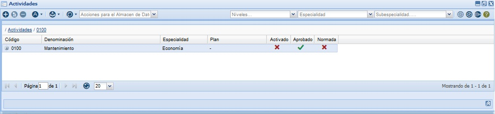
Figura 1. Interfaz Actividades.
Para adicionar una actividad el usuario puede seleccionar la opción Adicionar de la interfaz que se encuentra en la barra de acciones de la interfaz de usuario o la tecla caliente (Alt+I). Una vez ejecutada esta acción el sistema automáticamente mostrará la ventana Adicionar actividad, que se muestra en la Figura 2. Una vez accedida a dicha interfaz se muestra el formato que muestra por defecto “Actividades”, se muestra el nivel sobre el que se va a adicionar la actividad, se muestra la cantidad de dígitos que puede presentar el código de la actividad que se desea inserta, se observa la especialidad a la que pertenece el usuario autenticado, se introduce la denominación de la actividad que desea insertar, se muestra la conformación del código hasta el nivel anterior creado, en caso de ser el primer nivel (GA) muestra el código correspondiente a la especialidad donde se autenticó el usuario. El código de la actividad se representa solamente por números y la cantidad de caracteres que pueden ingresarse varía en dependencia del nivel de la misma. Esta cantidad se comporta de la siguiente forma: Grupo de la actividad (GA) 2 dígitos, Subgrupo de la actividad (SA) 2 dígitos, Pre actividad (PA) 2 dígitos, Actividad (A) 3 dígitos. Se introduce el código de la actividad que desea insertar en correspondencia con la cantidad de dígitos mostrados en el campo dígitos; el sistema no permite introducir una actividad con un mismo código en caso de que esto ocurra el sistema muestra un mensaje de error. El usuario introduce una breve descripción de la actividad. Este dato no es obligatorio. Una vez llenados los campos el usuario puede presionar las opciones Cancelar, Aplicar o Aceptar según sea el caso.
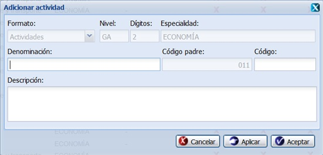
Figura 2. Interfaz Adicionar actividad.
El sistema permite además adicionar una actividad en el nivel inferior, para ello debe seleccionar una de las actividades listadas en el sistema, se presiona clic secundario (derecho) y se selecciona la opción Adicionar nivel inferior, una vez ejecutada esta acción el sistema muestra la ventana Adicionar nivel inferior, como se muestra en la Figura 3. Una vez accedida a esta interfaz se muestra el formato que muestra por defecto “Actividades”, se muestra el nivel sobre el que se va a adicionar la actividad, se muestra la cantidad de dígitos que puede presentar el código de la actividad que se desea inserta, se observa la especialidad a la que pertenece el usuario autenticado, se introduce la denominación de la actividad que desea insertar, se muestra la conformación del código padre, en caso de ser el primer nivel (GA) muestra el código correspondiente a la especialidad donde se autenticó el usuario. El código de la actividad se representa solamente por números y la cantidad de caracteres que pueden ingresarse varía en dependencia del nivel de la misma. Esta cantidad se comporta de la siguiente forma: Grupo de la actividad (GA) 2 dígitos, Subgrupo de la actividad (SA) 2 dígitos, Pre actividad (PA) 2 dígitos, Actividad (A) 3 dígitos. Se introduce el código de la actividad que desea insertar en correspondencia con la cantidad de dígitos mostrados en el campo dígitos; el sistema no permite introducir una actividad con un mismo código en caso de que esto ocurra el sistema muestra un mensaje de error. En el caso de que se seleccione una actividad en el nivel A (Actividad) se deben completar los campos que se describen a continuación y se muestran en la Figura 4. El usuario selecciona el(los) órgano(s) rector(es) de la actividad, permite seleccionar el(los) órgano(s) demandante(s) de la actividad. Permite seleccionar la(s) especialidad(es) con la(s) que desea compartir la actividad. Permite seleccionar el plan directo al que se va asociar la actividad. El usuario introduce una breve descripción de la actividad. Este dato no es obligatorio. Una vez llenados los campos el usuario puede presionar las opciones Cancelar, Aplicar o Aceptar según sea el caso.
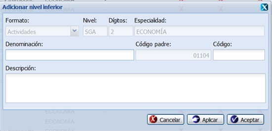
Figura 3. Interfaz Adicionar nivel inferior.
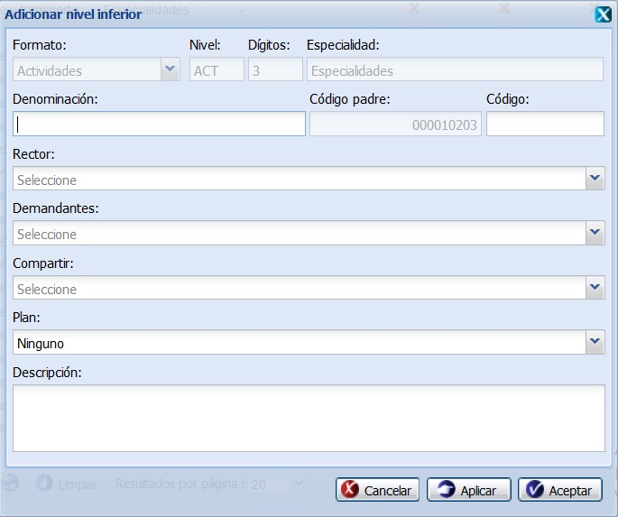
Figura 4. Interfaz Adicionar nivel inferior en el nivel A.
El sistema permite además modificar una actividad adicionada con anterioridad, para ello selecciona una de las actividades listadas en el sistema que no se encuentre en estado Aprobado y selecciona la opción Modificar de la interfaz principal o la tecla caliente (Alt+M), una vez ejecutada esta acción el sistema muestra la ventana Modificar actividad, como se muestra en la Figura 5, el usuario procede a modificar los campos necesarios y se presiona la opción Cancelar, Aplicar o Aceptar según sea el caso.
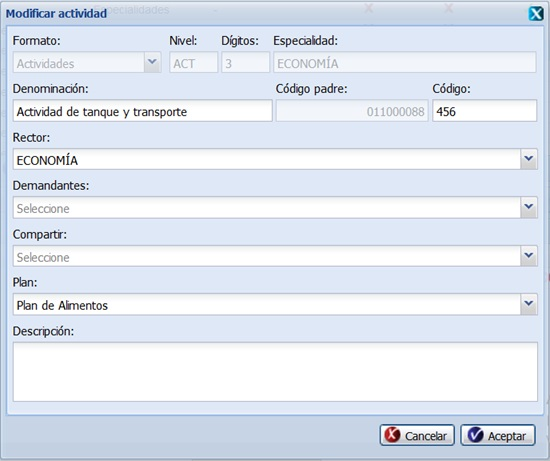
Figura 5. Interfaz Modificar actividad.
El sistema brinda la opción de eliminar la(s) actividad(es) previamente insertada(s) que no se encuentren en estado Aprobada(s), para ello se selecciona una actividad del listado o varias mediante la opción (Ctrl+clic) y se presiona el botón Eliminar o la tecla caliente (Del). Al presionar esta opción se muestra un mensaje de confirmación, ver Figura 6. Se presiona la opción Aceptar, el sistema elimina el(los) dato(s) seleccionados y muestra un mensaje de información al finalizar la operación. En caso de presionar el botón Cancelar el sistema cancela la acción y cierra la interfaz. Para el caso que el usuario seleccione una actividad que está siendo usado y se encuentre aprobada, el sistema no activará la opción Eliminar de la interfaz.
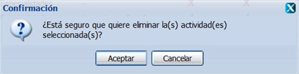
Figura 6. Interfaz Mensaje de confirmación para eliminar.
También el sistema cuenta con la posibilidad de aprobar la(s) actividad(es) listada(s), esta acción la puede realizar seleccionando una de las actividades listadas que se encuentren con estado Desaprobado y se selecciona la opción Aprobar de la interfaz o la tecla caliente (Alt+Q). Una vez realizada esta acción el sistema muestra un mensaje de confirmación como se muestra en la Figura 7, que se puede Aceptar o Cancelar según sea el caso, de presionar la opción Aceptar el sistema le mostrará un mensaje de información sobre el éxito de la operación realizada, quedando aprobada(s) la(s) actividad(es) seleccionada(s), si cancela el mensaje de confirmación, el sistema permanece en la interfaz principal y no aprueba la(s) actividad(es).
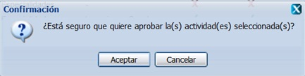
Figura 7. Interfaz Confirmación para aprobar una actividad.
También el sistema cuenta con la posibilidad de desaprobar la(s) actividad(es) listada(s), esta acción la puede realizar seleccionando una de las actividades listadas que se encuentren con estado Desaprobado y se selecciona la opción Desaprobar de la interfaz o la tecla caliente (Alt+Q). Una vez realizada esta acción el sistema muestra un mensaje de confirmación como se muestra en la Figura 8, que se puede Aceptar o Cancelar según sea el caso, de presionar la opción Aceptar el sistema le mostrará un mensaje de información sobre el éxito de la operación realizada, quedando desaprobada(s) la(s) actividad(es) seleccionada(s), si cancela el mensaje de confirmación, el sistema permanece en la interfaz principal y no desaprueba la(s) actividad(es).
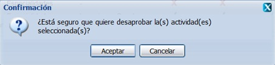
Figura 8. Interfaz Confirmación para desaprobar una actividad.
El sistema permite además duplicar una actividad, para ello debe seleccionar una de las actividades en el sistema y presionar clic secundario (derecho) y seleccionar del menú la opción Duplicar actividad o la tecla caliente (Ctrl + Alt + D). El procedimiento del llenado de los campos es muy similar al Adicionar actividad. Esta funcionalidad tiene como objetivo que el usuario no tenga que repetir los pasos para adicionar una nueva actividad, sobre todo si los datos de la nueva actividad son similares a la ya existente. Esta acción permite registrar una nueva actividad en el sistema, a partir de una que ya está creada, solamente modificando algunos de sus datos.
El sistema cuenta con la posibilidad de activar la(s) actividad(es) listada(s), esta acción la puede realizar seleccionando una de las actividades listadas que se encuentren con estado Desactivada y Desaprobada, se selecciona la opción Activar de la interfaz o la tecla caliente (Alt+X). Una vez realizada esta acción el sistema muestra un mensaje de confirmación como se muestra en la Figura 9, que se puede Aceptar o Cancelar según sea el caso, de presionar la opción Aceptar el sistema le mostrará un mensaje de información sobre el éxito de la operación realizada, quedando activadas(s) la(s) actividad(es) seleccionada(s), si cancela el mensaje de confirmación, el sistema permanece en la interfaz principal y no activa(n) la(s) actividad(es).
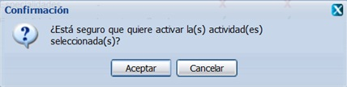
Figura 9. Interfaz Confirmación para activar una actividad.
El sistema cuenta con la posibilidad de desactivar la(s) actividad(es) listada(s), esta acción la puede realizar seleccionando una de las actividades listadas que se encuentren con estado Activada, se selecciona la opción Desactivar de la interfaz o la tecla caliente (Alt+K). Una vez realizada esta acción el sistema muestra un mensaje de confirmación como se muestra en la Figura 10, que se puede Aceptar o Cancelar según sea el caso, de presionar la opción Aceptar el sistema le mostrará un mensaje de información sobre el éxito de la operación realizada, quedando desactivadas(s) la(s) actividad(es) seleccionada(s), si cancela el mensaje de confirmación, el sistema permanece en la interfaz principal y no desactiva(n) la(s) actividad(es).
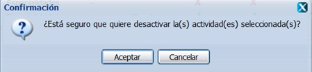
Figura 10.Interfaz Confirmación para desactivar una actividad.
El sistema permite asociar plan a una determinada actividad así como a especialidades, para ello se debe desglosar el árbol de entidades hasta el último nivel y se selecciona una actividad previamente insertada que se encuentre en estado Desaprobada. Una vez seleccionada la misma se presiona clic secundario (derecho) sobre la misma y seleccionar la opción Asociar plan y especialidades, cuando se ejecuta esta opción el sistema muestra la ventana Asociar a plan y especialidades como se muestra en la Figura 11. El usuario desglosa el campo Plan y selecciona un plan que se encuentre asociado a una entidad, se desglosa el campo Demandantes para seleccionar las especialidades que van a demandar la actividad seleccionada, y finalmente se desglose el campo Compartir, se procede a seleccionar la especialidad que va a compartir la actividad seleccionada. El usuario selecciona la opción Cancelar, Aplicar o Aceptar según sea el caso.
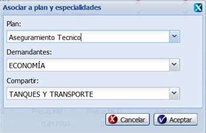
Figura 11. Interfaz Asociar plan y especialidades.
El sistema permite determinar los costos directos e indirectos de la actividad seleccionada, para ello el usuario selecciona una de las actividades listadas en el sistema, se presiona clic secundario (derecho) y se selecciona la opción Resumen de gastos, una vez accedida a esta funcionalidad se muestra la ventana Ver resumen de gastos como se muestra en la Figura 12. En dicha interfaz se muestran los costos directos de la actividad seleccionada, se introducen los costos indirectos y otros costos. Los costos indirectos y otros costos constituyen gastos asociados a la actividad que no se relacionan en su norma de consumo. El usuario puede seleccionar la opción Cancelar y Aceptar según sea el caso.
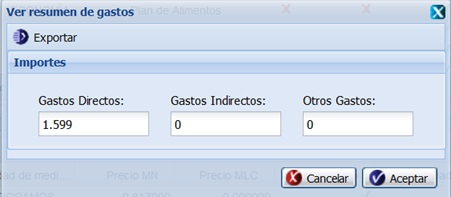
Figura 12. Interfaz Ver resumen de gastos.
También el sistema permite exportar el resumen de gasto realizado con anterioridad, para ello se selecciona una actividad del último nivel y se presiona la opción Resumen de gastos, una vez ejecutada esta opción el sistema muestra la interfaz correspondiente, se introducen los datos y se presiona la opción Exportar de la ventana. Una vez seleccionada esta opción, el sistema le mostrará la interfaz Abriendo resumen con dos opciones como se muestra en la Figura 13, se selecciona la opción Abrir con y el sistema muestra el resumen exportado en un documento Excel, ver Figura 14. Si se opta por la opción Guardar archivo este se guarda en la carpeta Descargas de la computadora.
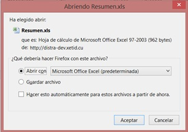
Figura 13. Abriendo resumen.
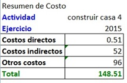
Figura 14. Interfaz Ver resumen de gastos.
El sistema cuenta con la posibilidad de adicionarle normas a una actividad, para ello el usuario debe seleccionar una actividad de las listadas en el último nivel y con estado Desaprobada, en caso de que se seleccione una actividad aprobada el sistema muestra un mensaje de error, selecciona la opción Normas que se encuentra en parte superior izquierda de la barra de acciones, una vez ejecutada esta acción se muestran las normas que pertenecen a la actividad seleccionada, se presiona clic derecho (secundario) sobre la actividad a la que se desea adicionar una norma, el sistema le despliega un submenú y se selecciona con un clic la opción Adicionar norma, una vez ejecutada esta acción el sistema muestra la interfaz Adicionar normas como se muestra en la Figura 15. En la interfaz anteriormente mostrada solo se listarán aquellos indicadores que se encuentren en estado Aprobados, Activados y con nivel de planificación definido. El usuario selecciona uno o varios de los indicadores a insertar en la Norma de consumo, el usuario puede seleccionar la opción Cancelar, Aplicar o Aceptar según sea el caso. Una vez adicionadas las normas el sistema permite mostrar las normas existentes en una ventana nueva que aparece en la parte inferior de la interfaz, al seleccionar la actividad que contiene al menos una norma definida como se muestra en la Figura 16. En esta nueva interfaz se pueden modificar datos de las columnas Norma y Base, de la norma elegida, estos valores deberán ser de tipo numérico. Una vez que los datos han sido modificados satisfactoriamente, se podrá almacenar en el sistema la nueva información con solo presionar la tecla Enter del teclado. Si la información es incorrecta el sistema señala el dato erróneo marcando la intersección en rojo. En la parte inferior de esta ventana, se muestra el importe total de la norma para la actividad seleccionada, siendo el resultado de la suma de los importes de los indicadores contenidos en ella. Las normas serán gestionadas por ejercicio, por lo que estas se insertarán automáticamente para el ejercicio actual, y de querer modificar los datos de la norma para un ejercicio diferente al actual, deberá desglosar el campo Ejercicio que aparece en la parte superior del panel inferior Normas. Una vez ejecutada esta acción el sistema le recargará el panel inferior Normas, mostrando así los datos de acuerdo al ejercicio seleccionado. De igual forma cada una de las acciones a realizar sobre una norma se efectuarán sobre el ejercicio actual.
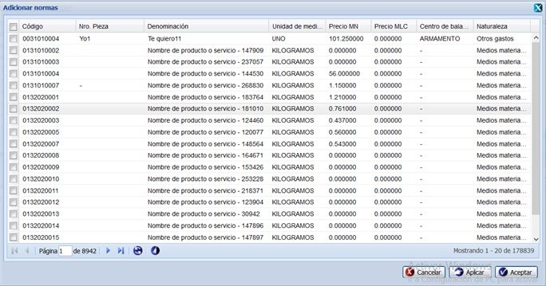
Figura 15. Interfaz Adicionar normas.
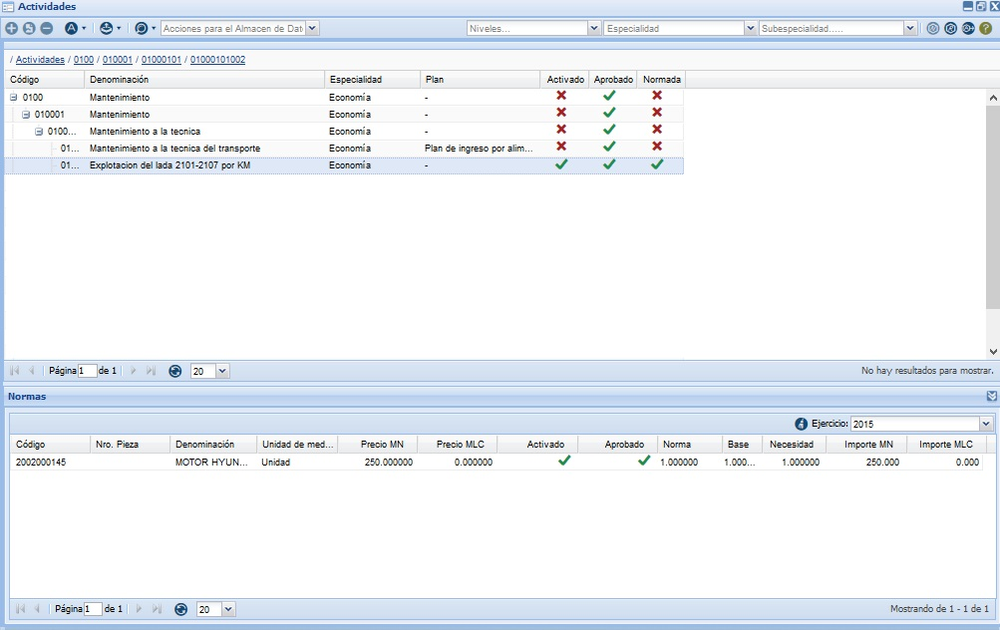
Figura 16. Interfaz Normas de una actividad.
El sistema brinda la opción de eliminar la(s) norma(s) previamente insertada(s), para ello se selecciona una actividad del listado y se activa el panel Normas, se selecciona una de las normas listadas o varias mediante la opción (Ctrl+clic) y se presiona el botón Eliminar norma. Al presionar esta opción se muestra un mensaje de confirmación, ver Figura 17. Se presiona la opción Aceptar, el sistema elimina la(s) noma(s) seleccionados y muestra un mensaje de información al finalizar la operación. En caso de presionar el botón Cancelar el sistema cancela la acción y cierra la interfaz.
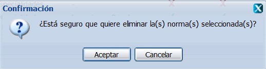
Figura 17. Interfaz Mensaje de confirmación para eliminar.
El sistema brinda la posibilidad de poder adicionarle reglas a las normas, el cual es un proceso en el que el usuario puede relacionar un indicador existente en una norma de consumo con otras actividades que pueden ejecutarse predeterminadamente a partir de dar un Nivel de Actividad a la actividad seleccionada. Al dar Nivel de Actividad a una Actividad que contiene Reglas se ejecuta una función matemática que calcula y muestra automáticamente los Niveles de Actividad que corresponden a las actividades asociadas por este método. Para definir una regla se presiona clic derecho (secundario) sobre un indicador contenido en una norma, como se muestra en la Figura 18 y se selecciona la opción Adicionar regla y se despliega una ventana en la cual se muestra el resto de las actividades, ver Figura 19. Una vez que se muestre la ventana se introducen los datos correspondientes en Variable de Control y Nivel Base, el valor de este último debe ser mayor o igual que 1, estableciendo el valor de relación existente entre nivel de actividad igual a uno de la norma donde se encuentra el indicador por el cual establecemos la Regla y la actividad recientemente seleccionada. Realizada esta acción el usuario pulsa el botón Cancelar, Aplicar o Aceptar, según sea el caso.
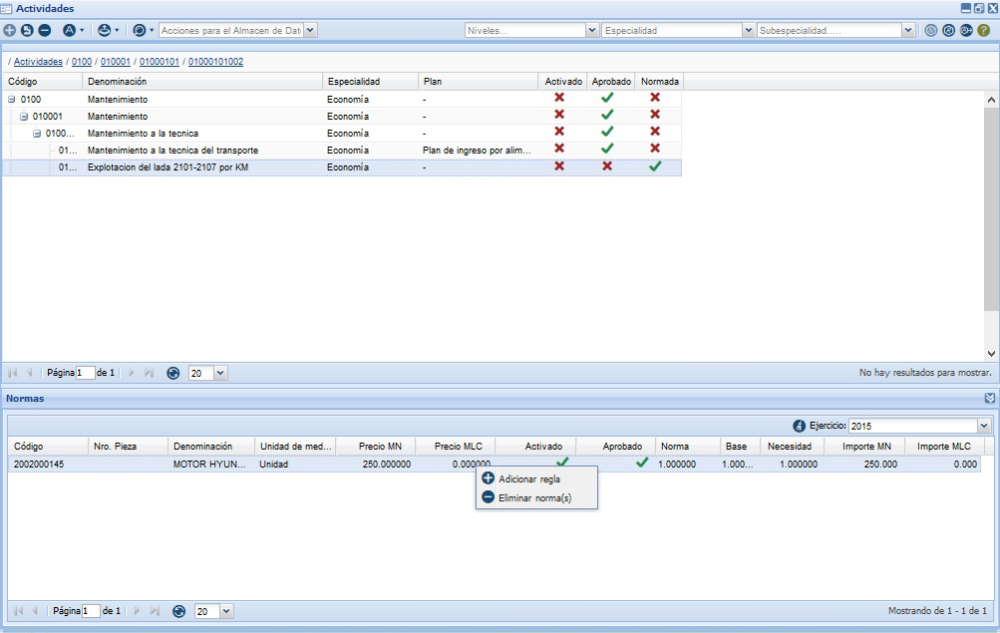
Figura 18. Interfaz Normas de una actividad.
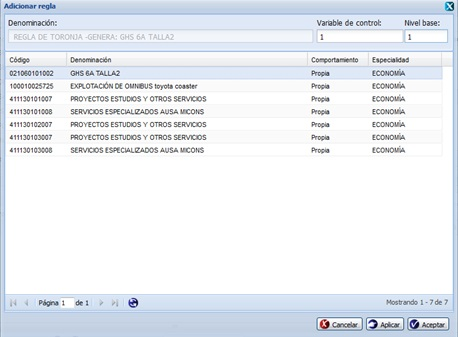
Figura 19. Interfaz Adicionar regla.
El sistema permite adicionar Regla a una actividad. Para ejecutar esta acción se selecciona clic derecho sobre una actividad desaprobada del último nivel, seguidamente se presiona la opción Adicionar Regla y se muestra la interfaz Adicionar regla como se muestra en la Figura 19, donde solo se listarán las actividades que se encuentren aprobadas, activadas y que no presenten reglas asociadas, se escoge la actividad deseada y se presiona la opción Cancelar, Aplicar o Aceptar, según sea el caso. El valor de la Variable de control y el Nivel base deberán ser datos de tipo numérico y el valor del Nivel base debe ser mayor o igual que 1. Una vez ejecutada esta acción la actividad que se adiciona como regla a una actividad se marca con una paloma verde en la columna Generada. La actividad que está siendo usada como regla en una actividad tiene en el panel Regla la actividad que la está usando en color verde además de tener marcado con una paloma verde la columna Generadora como se muestra en la Figura 20.
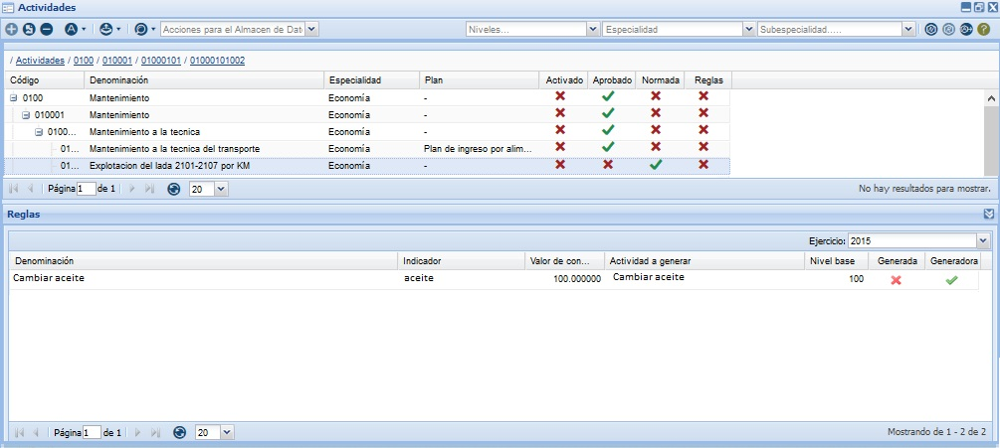
Figura 20. Interfaz Reglas de una norma.
También el sistema permite eliminar las reglas adicionadas con anterioridad, para ello se selecciona una actividad del listado y se activa el panel Reglas, se selecciona una de las reglas listadas o varias mediante la opción (Ctrl+clic) y se presiona el botón Eliminar regla. Al presionar esta opción se muestra un mensaje de confirmación, ver Figura 21. Se presiona la opción Aceptar, el sistema elimina la(s) regla(s) seleccionadas y muestra un mensaje de información al finalizar la operación. En caso de presionar el botón Cancelar el sistema cancela la acción y cierra la interfaz. Solo un usuario con categoría especialista podrá realizar esta operación.
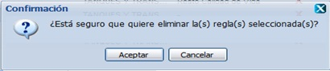
Figura 21. Interfaz Mensaje de confirmación para eliminar.
El sistema permite adicionar indicadores de salida a una actividad, para ello se presiona clic derecho sobre una actividad que se encuentre desaprobada y automáticamente el sistema le mostrará un menú de opciones. Se procede a seleccionar la opción Asociar indicadores de salida y el sistema le mostrará la interfaz Adicionar salidas, como se muestra en la Figura 22. Una vez mostrada la interfaz, se procede a seleccionar el(los) indicador(es) deseado(s) y se selecciona la opción Aceptar, el sistema cierra la ventana y muestra un mensaje de información, se acepta el mensaje y se muestra en la interfaz principal un panel en la parte inferior listando todos los indicadores de salida de la actividad como se muestra en la Figura 23, si desea modificar un indicador de salida debe presionar doble clic sobre el dato magnitud del indicador e introducir un nuevo valor. Esta acción solo la podrá realizar siempre y cuando la actividad se encuentre desaprobada.
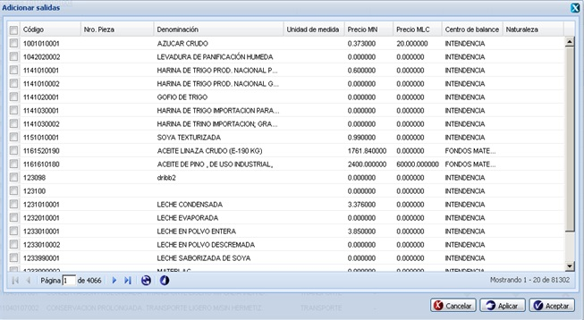
Figura 22. Interfaz Adicionar salida.
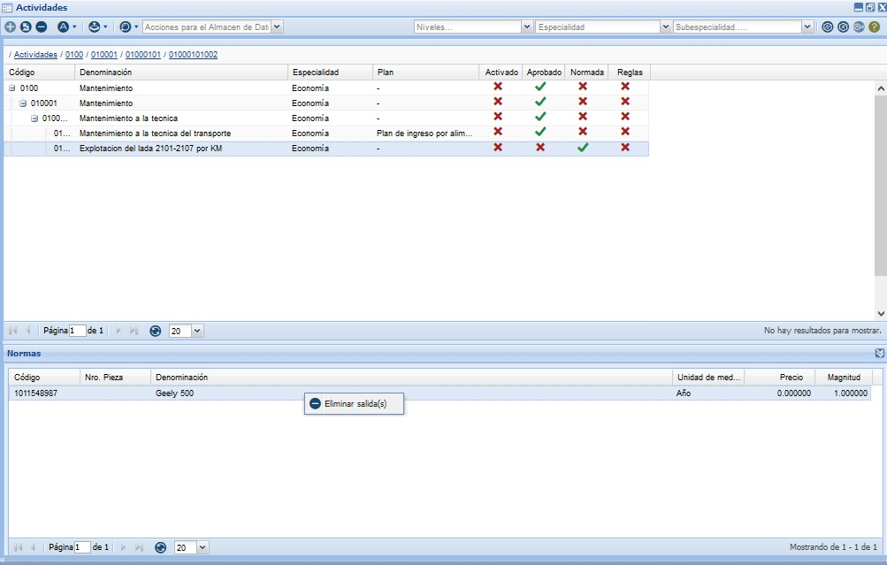
Figura 23. Indicadores de salida.
El sistema cuenta con la posibilidad de eliminar los indicadores de salida adicionados con anterioridad, para ello se selecciona una actividad del listado y se activa el panel Salidas, se selecciona uno de los indicadores listados o varios mediante la opción (Ctrl+clic) y se presiona clic derecho sobre un indicador de salida seguidamente se selecciona la opción Eliminar salida. Al presionar esta opción se muestra un mensaje de confirmación, como se muestra en la Figura 24. Se presiona la opción Aceptar, el sistema elimina el(los) indicador(es) seleccionados y muestra un mensaje de información al finalizar la operación. En caso de presionar el botón Cancelar el sistema cancela la acción y cierra la interfaz.
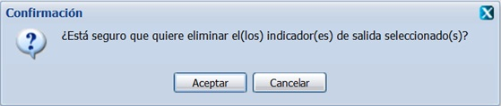
Figura 24. Interfaz Mensaje de confirmación para eliminar.
EL sistema cuenta con la posibilidad de buscar un indicador determinado, esta funcionalidad tiene como objetivo permitir al usuario buscar un indicador en específico que se encuentre adicionado en la norma de una actividad. Para ejecutar esta acción se debe seleccionar la opción Buscar que se encuentra en la barra de acciones . Una vez seleccionada se accede a la ventana Indicadores como se muestra en la Figura 25 y se procede a seleccionar el ejercicio de planificación por el que desea buscar y se selecciona el indicador de la planificación que desea buscar. El usuario selecciona la opción Cancelar o Aceptar según sea el caso.
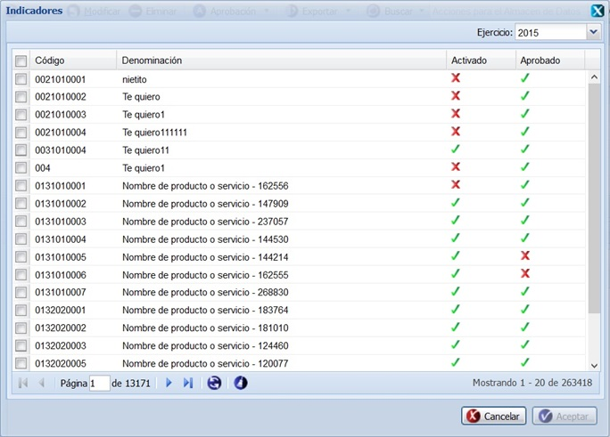
Figura 25. Buscar indicadores.
También el sistema permite exportar Actividades adicionadas con anterioridad, para ello se despliega el menú Exportar de la interfaz principal y se selecciona la opción Actividades. Una vez seleccionada esta opción, el sistema le mostrará la interfaz Abriendo actividades con dos opciones como se muestra en la Figura 26, se selecciona la opción Abrir con y el sistema muestra las Actividades exportadas en un documento Excel, ver Figura 27. Si se opta por la opción Guardar archivo este se guarda en la carpeta Descargas de la computadora.

Figura 26. Abriendo actividades.
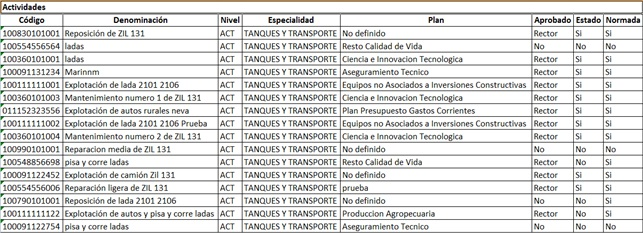
Figura 27. Actividades.
Por otra parte el sistema permite exportar Actividades con normas adicionadas con anterioridad, para ello se despliega el menú Exportar de la interfaz principal y se selecciona la opción Actividades con normas. Una vez seleccionada esta opción, el sistema le mostrará la interfaz Abriendo actividades con dos opciones como se muestra en la Figura 28, se selecciona la opción Abrir con y el sistema muestra las Actividades con normas exportadas en un documento Excel, ver Figura 29. Si se opta por la opción Guardar archivo este se guarda en la carpeta Descargas de la computadora.

Figura 28. Abriendo actividades.
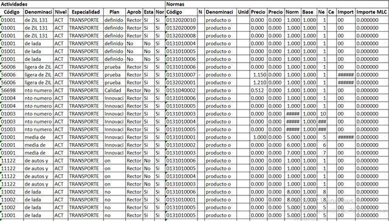
Figura 29. Actividades.
Por otra parte el sistema permite exportar Actividades con reglas adicionadas con anterioridad, para ello se despliega el menú Exportar de la interfaz principal y se selecciona la opción Actividades con reglas. Una vez seleccionada esta opción, el sistema le mostrará la interfaz Abriendo actividades con dos opciones como se muestra en la Figura 30, se selecciona la opción Abrir con y el sistema muestra las Actividades con reglas exportadas en un documento Excel, ver Figura 31. Si se opta por la opción Guardar archivo este se guarda en la carpeta Descargas de la computadora.
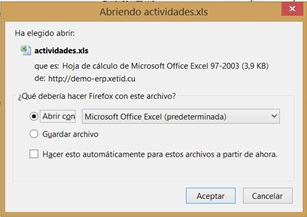
Figura 30. Abriendo actividades.
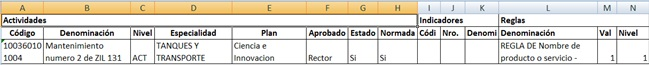
Figura 31. Actividades.
Por otra parte el sistema permite exportar Actividades con salidas adicionadas con anterioridad, para ello se despliega el menú Exportar de la interfaz principal y se selecciona la opción Actividades con salidas. Una vez seleccionada esta opción, el sistema le mostrará la interfaz Abriendo actividades con dos opciones como se muestra en la Figura 32, se selecciona la opción Abrir con y el sistema muestra las Actividades con salidas exportadas en un documento Excel, ver Figura 33. Si se opta por la opción Guardar archivo este se guarda en la carpeta Descargas de la computadora.

Figura 32. Abriendo actividades.
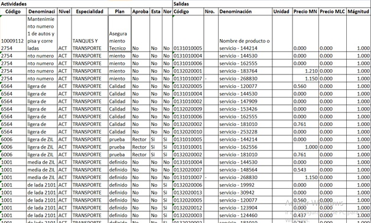
Figura 33. Actividades.
Niveles de actividad
Esta funcionalidad fue diseñada con el objetivo de permitir al usuario asignar Niveles de actividad a las actividades que se prevén realizar como resultado de un proceso productivo, de servicio o de aseguramiento en el año que se planifica. Para acceder a esta funcionalidad se seleccionar Inicio/Planificación/Planificación material/Bases para el plan/Niveles de actividad. Una vez seleccionada dicha opción, el sistema le mostrará la interfaz Niveles de actividad, despliegue el árbol de entidades haciendo clic en el signo Más (+) del panel Entidades y seleccione la entidad donde asignará Niveles de actividad (cantidad de veces a ejecutar una actividad). Al seleccionar la entidad se mostrarán en la parte derecha de la ventana principal, denominada Niveles de actividad, las actividades aprobadas y que tienen una norma de consumo asociada como se muestra en la Figura 1. Las actividades que son generadas por reglas, se mostrarán coloreadas en rojo.
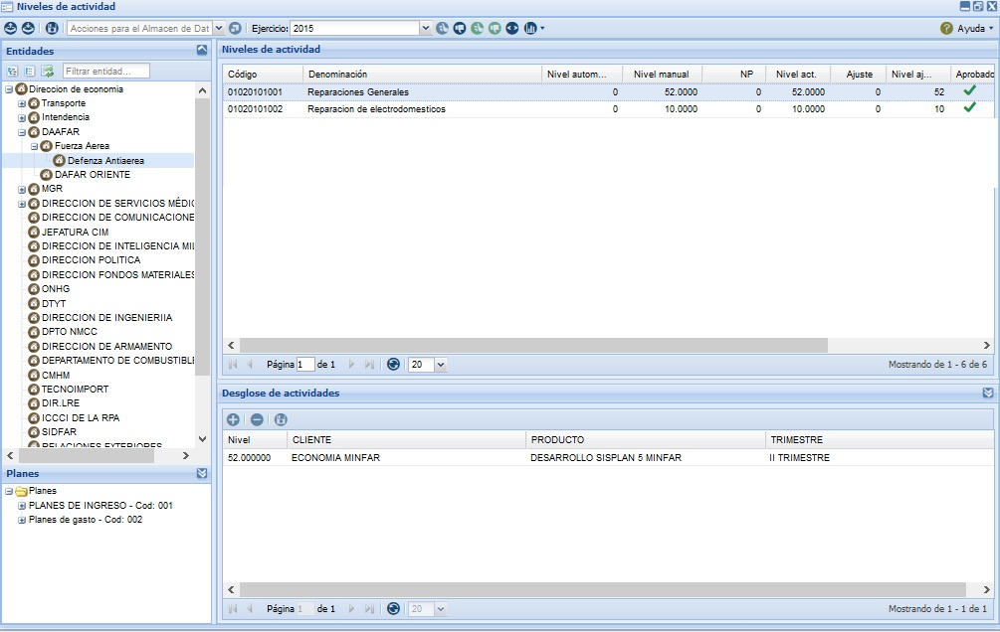
Figura 1. Interfaz Niveles de actividad.
El sistema permite asignarle un nivel de actividad a las actividades para ello luego de mostradas las actividades se procede a seleccionar la actividad a la que quiere asignar un Nivel de actividad. Se presiona doble clic en el campo Nivel manual, se inserta el número correspondiente al nivel de actividad y se introduce el NP (Nivel de producción) que quiere asignar a la actividad seleccionada, el usuario debe tener en cuenta que para el caso de que el campo RD (Resto por distribuir) sea diferente de vacío (-) se debe cumplir que la suma de los números que se introduzcan en los campos Nivel manual y Nivel de producción (NP) tiene que ser menor que el número del campo Resto por distribuir (RD) de lo contrario el sistema muestra un mensaje de información. Una vez que se introduzcan dichos valores se procede a presionar la opción Guardar que se muestra en la barra de acciones o la tecla caliente (Alt+G), el sistema muestra un mensaje de información indicando el éxito de la operación. En caso de que la actividad a la que asigna nivel, tenga establecida una regla, se asignarán además los niveles correspondientes en la columna Nivel automático. Los niveles automáticos no son editables por lo que el usuario no los puede modificar. De igual forma se mostrará en la columna Importe el resultado del cálculo.
También el sistema cuenta con la posibilidad de aprobar el nivel de actividad, esta opción permite aprobar los niveles de actividad de la actividad seleccionada. Para efectuar esta acción se debe seleccionar clic derecho encima de una actividad y se selecciona la opción Aprobar nivel de actividad. Una vez seleccionada la misma, el sistema le mostrará un mensaje de confirmación como se muestra en la Figura 2, que se puede Aceptar o Cancelar según sea el caso, de presionar la opción Aceptar el sistema le mostrará un mensaje de información sobre el éxito de la operación realizada, quedando aprobado el nivel de actividad. Si se opta por la opción Cancelar, el sistema cancela la acción y no permite aprobar la actividad. Esta acción se podrá ejecutar por usuario especialista y rector deben tener en cuenta que la actividad debe estar desaprobada y debe tener nivel de actividad mayor que cero. En caso de que los niveles sean aprobados por un especialista se pone una paloma amarilla en la columna Aprobado, si los niveles son aprobados por el rector se pone una paloma verde en la columna Aprobado.
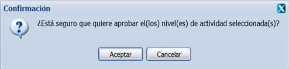
Figura 2. Interfaz Confirmación para aprobar nivel de actividad.
El sistema cuenta con la posibilidad de desaprobar el nivel de actividad, esta opción permite desaprobar los niveles de actividad de la actividad seleccionada. Para efectuar esta acción se debe seleccionar clic derecho encima de una actividad y se selecciona la opción Desaprobar nivel de actividad. Una vez seleccionada la misma, el sistema le mostrará un mensaje de confirmación como se muestra en la Figura 3, que se puede Aceptar o Cancelar según sea el caso, de presionar la opción Aceptar el sistema le mostrará un mensaje de información sobre el éxito de la operación realizada, quedando desaprobado el nivel de actividad. Si se opta por la opción Cancelar, el sistema cancela la acción y no permite desaprobar la actividad. Esta acción se podrá ejecutar por usuario especialista y rector deben tener en cuenta que la actividad debe estar aprobada.
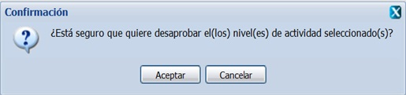
Figura 3. Interfaz Confirmación para desaprobar nivel de actividad.
El sistema posibilita aprobar todos los niveles, para efectuar esta acción se debe seleccionar clic derecho encima de la entidad a la cual se le desea aprobar el(los) nivel de actividad y seleccionar la opción Aprobar todos los niveles o con la combinación de las teclas (Ctrl + Alt + Q). Una vez seleccionada la misma, el sistema le mostrará un mensaje de confirmación como se muestra en la opción 4, se acepta el mensaje y le mostrará un mensaje de información sobre el éxito de la operación realizada y se aprueba(n) el(los) nivel(es) de actividad de la entidad seleccionada. Si se opta por la opción Cancelar, el sistema cancela la acción y no permite aprobar las actividades. El usuario debe tener en cuenta que la opción Aprobar todos los niveles solo se habilitará si se selecciona una entidad que presente al menos un nivel de actividad en estado Desaprobado, solo se aprobarán las actividades que presenten niveles de actividad mayores que cero, es decir que se le haya asignado con anterioridad un nivel de actividad. Esta acción se podrá realizar tanto sobre las entidades hijas como padres. En dependencia del usuario que efectúe la aprobación, será el color del ícono mostrado en la columna Aprobación. Si los niveles de actividad fueron aprobados por un usuario especialista, el color mostrado será el Amarillo, de lo contrario el ícono se mostrará de color Verde (rector).
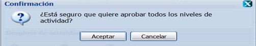
Figura 4. Interfaz Confirmación para aprobar todos los niveles de actividad.
El sistema posibilita desaprobar todos los niveles, para efectuar esta acción se debe seleccionar clic derecho encima de la entidad a la cual se le desea desaprobar el(los) nivel de actividad y seleccionar la opción Desaprobar todos los niveles o la tecla caliente (Ctrl + Alt + W). Una vez seleccionada la misma, el sistema le mostrará un mensaje de confirmación como se muestra en la Figura 5, se acepta el mensaje y le mostrará un mensaje de información sobre el éxito de la operación realizada, se desaprueba(n) el(los) nivel(es) de actividad de la entidad seleccionada. Si se opta por la opción Cancelar, el sistema cancela la acción y no permite desaprobar las actividades. Esta opción solo desaprobará aquellas actividades que presenten nivel de actividad definido. En caso que desee desaprobar una o varias actividades de forma independiente, se puede apoyar en la opción Desaprobar nivel de actividad, que le aparecerá al presionar clic derecho (secundario) sobre una actividad, dicha funcionalidad solo se habilitará si selecciona al menos una actividad que presente estado Aprobado. Esta acción la podrán realizar tanto usuarios con categoría rector como especialista.
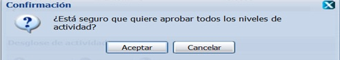
Figura 5. Interfaz Confirmación para desaprobar todos los niveles de actividad.
El sistema permite además copiar y pegar los niveles de actividad asignados con anterioridad, para ello selecciona clic derecho sobre una entidad hija y selecciona la opción Copiar niveles o la tecla caliente (Alt+C) como se muestra en la Figura 6, posteriormente se selecciona otra entidad, se presiona clic derecho (secundario) y se selecciona la opción Pegar niveles o la tecla caliente (Alt+V), el sistema actualiza los niveles de actividad para la entidad seleccionada.
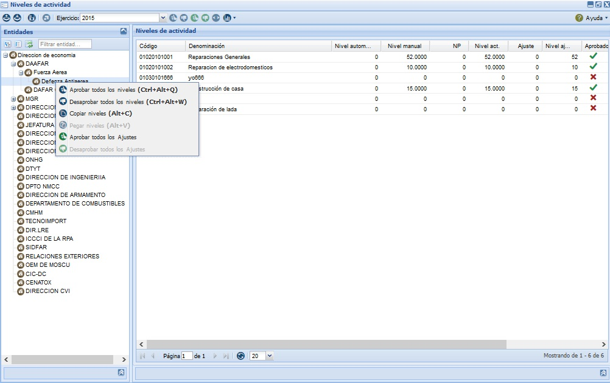
Figura 6. Interfaz Copiar y pegar niveles de actividad.
El sistema permite realizar ajustes, permitiendo al usuario aumentar o disminuir los niveles de actividad de una o varias actividades para la entidad previamente seleccionada y solo la podrán realizar aquellos usuarios que presenten categoría de especialista. Para realizar esta acción se selecciona la opción Ajustar de la interfaz, al presionar esta opción el sistema le mostrará la interfaz Realizar ajuste como se muestra en la Figura 7, donde deberá introducir el valor por el que desea ajustar cada uno de los niveles de actividad de las actividades listadas para la entidad seleccionada. Los valores Importe inicial, Importe ajustado e Importe final son valores informativos que le podrán ir notificando a partir de la aplicación de un determinado porciento, como va quedando el importe empleado para una determinada entidad, a partir del incremento o decremento del monto total de cada una de las normas de las actividades que presente asociada. Estos valores también serán mostrados como información en las columnas. Se procede a introducir el valor en porciento por el que se desea ajustar, se presiona la opción Calcular, el cual calcula automáticamente a partir del valor introducido en el campo porciento, se introducen los valores de los campos Importe ajustado e Importe final, se muestra el Importe inicial de cada una de las actividades que presenten Niveles de actividad aprobados por el rector. Este mostrará la sumatoria de cada uno de los importes por cada una de las actividades listadas, para la entidad seleccionada, que cumplan con la restricción anteriormente especificada. Se muestra el Importe ajustado a partir de la aplicación del porciento introducido sobre el Importe inicial. Se muestra el Importe final que sería el resultado de la diferencia que existe entre el Importe inicial y el Importe ajustado. El usuario puede seleccionar la opción Cancelar o Aceptar según sea el caso. Si selecciona más de una actividad para efectuar el ajuste, al seleccionar la opción Ajustar, en el campo Importe inicial de la interfaz Realizar ajuste, se le mostrará la sumatoria de cada uno de los importes de las actividades seleccionadas, de forma tal que se pueda calcular el valor del ajuste por el que se deben ajustar los niveles de actividad de las actividades previamente seleccionadas. Si al seleccionar la opción Ajustar que aparece en la parte superior de la interfaz, no existe ninguna actividad que presente NA (Nivel de actividad) aprobado por el rector, el sistema le mostrará un mensaje de información. Al ejecutar esta opción el sistema realizará el ajuste sobre aquellas actividades que presenten NA aprobado por el rector. El sistema le permite al usuario realizar el ajuste sobre el(los) nivel(es) de actividad de tres formas, presionando la opción Ajustar que aparece en la parte superior del panel derecho Niveles de actividad, mediante la funcionalidad Ajustar que aparece al presionar clic derecho sobre alguna actividad y dando doble clic sobre la columna ajuste, para asignar el valor por el cual se desea ajustar el nivel de actividad, este último solo se podrá efectuar sobre una actividad en especifica, esto le indicará que el campo de la columna Ajuste es un campo editable. Si el nivel de actividad se encuentra desaprobado no se podrá modificar el valor de la columna Ajuste, ya que esta operación solo se realiza sobre los niveles de actividad aprobados por el rector. La opción Ajustar que aparece al presionar clic derecho sobre alguna actividad solo se habilitará si la(s) actividad(es) seleccionada(s) presenta(n) el(los) nivel(es) de actividad aprobado(s) por el rector, y los datos a mostrar y los cambios asociados al ajuste, se realizarán sobre ellas. El valor de la columna Nivel de actividad debe ser mayor que el valor de la columna Ajuste. De introducir un valor en la columna NA menor que el valor de la columna Ajuste o viceversa, al asignar dicho valor el sistema le mostrará un mensaje de información. Cada uno de los ajustes se realizarán sobre los niveles de actividad aprobados y este proceso solo se dejará de efectuar una vez que el usuario rector lo determine, este se controlará sobre las acciones de aprobación de los ajustes del nivel de actividad aprobado. Si desea realizar el ajuste dando doble clic en la columna ajuste sobre un nivel de actividad aprobado, al introducir este valor y querer guardar el mismo, debe apoyarse en la opción Guardar que aparece en la parte superior de la interfaz. Una vez accedido a la misma el sistema le mostrará un mensaje de información y queda registrado el valor del ajuste introducido.
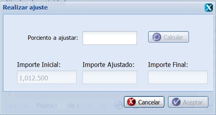
Figura 7. Interfaz de usuario Realizar ajuste.
También el sistema cuenta con la posibilidad de aprobar el ajuste realizado. Para efectuar esta acción se debe seleccionar clic derecho encima de una actividad que tenga ajuste mayor que cero y que esté aprobada por el rector, se selecciona la opción Aprobar ajuste. Una vez seleccionada la misma, el sistema le mostrará un mensaje de confirmación como se muestra en la Figura 8, que se puede Aceptar o Cancelar según sea el caso, de presionar la opción Aceptar el sistema le mostrará un mensaje de información sobre el éxito de la operación realizada, quedando aprobado el ajuste. Si se opta por la opción Cancelar, el sistema cancela la acción y no permite aprobar el ajuste.
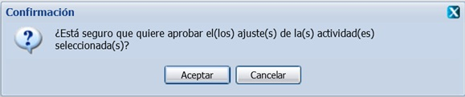
Figura 8. Interfaz Confirmación para aprobar ajuste.
El sistema permite además desaprobar el ajuste, o sea desaprobar las actividades que tienen ajuste aprobado. Para ejecutar esta acción se presiona clic derecho (secundario) encima de la(s) actividad(es) sobre la(s) que desea desaprobar el(los) ajuste y se escoge la opción Desaprobar ajuste. El sistema le muestra el mensaje de confirmación como se muestra en la Figura 9. Se selecciona la opción Aceptar del mensaje de confirmación y queda desaprobado el ajuste de la actividad. Si se opta por la opción Cancelar, el sistema cancela la acción y no permite desaprobar el(los) ajuste(s). La opción Desaprobar ajuste se habilitará si al menos existe una actividad que presente ajustes aprobados, las actividades con ajustes aprobados son las que tienen una paloma azul en la columna Aprobado. Si al realizar selección múltiple, existen ajustes aprobados y desaprobados, al seleccionar la opción Desaprobar ajuste, el sistema desaprobará automáticamente aquellos ajustes que presentaban estado aprobado y los demás se mantendrán con su estado. Esta acción se podrá ejecutar por usuario rector.
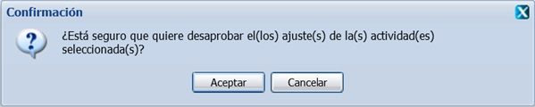
Figura 9. Interfaz Confirmación para desaprobar ajuste.
El sistema permite además aprobar todos los ajustes, para efectuar esta acción se debe seleccionar clic derecho encima de la entidad a la cual se le desea aprobar el(los) ajustes efectuados y seleccionar la opción Aprobar todos los ajustes. Una vez seleccionada la misma, el sistema le mostrará un mensaje de confirmación como se muestra en la Figura 10, se acepta el mensaje y le mostrará un mensaje de información sobre el éxito de la operación realizada y se aprueba(n) el(los) ajustes(es) realizados sobre el(los) nivel(es) de actividad de la entidad seleccionada. Si se opta por la opción Cancelar, el sistema cancela la acción y no permite aprobar las actividades. La opción Aprobar todos los ajustes solo se habilitará si selecciona una entidad que presente al menos un ajuste en estado Desaprobado, y a su vez para la entidad seleccionada existe al menos un ajuste realizado. Solo se aprobarán las actividades que presenten ajustes mayores que cero, es decir que se le haya asignado con anterioridad un ajuste. Esta acción se podrá realizar tanto sobre las entidades hijas como padres. Una vez ejecuta esta acción, en la columna Aprobación le saldrá una palomita de color azul en cada una de las actividades para las cuales fueron aprobados sus ajustes.
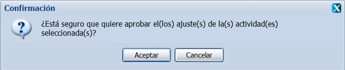
Figura 10. Interfaz Confirmación para aprobar todos los ajustes.
También el sistema permite desaprobar todos los ajustes, para efectuar esta acción se debe seleccionar clic derecho encima de la entidad a la cual se le desea desaprobar el(los) ajustes efectuados y seleccionar la opción Desaprobar todos los ajustes. Una vez seleccionada la misma, el sistema le mostrará un mensaje de confirmación como se muestra en la Figura 11, se acepta el mensaje y le mostrará un mensaje de información sobre el éxito de la operación realizada y se desaprueba(n) el(los) ajustes(es) realizados sobre el(los) nivel(es) de actividad de la entidad seleccionada. Si se opta por la opción Cancelar, el sistema cancela la acción y no permite desaprobar los ajustes. La opción Desaprobar todos los ajustes solo se habilitará si selecciona una entidad que presente al menos un ajuste en estado Aprobado. Esta acción se podrá realizar tanto sobre las entidades hijas como padres.
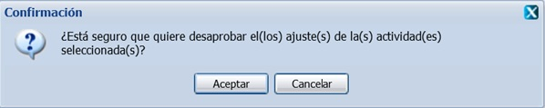
Figura 11. Interfaz Confirmación para desaprobar todos los ajustes.
El sistema cuenta dentro de sus funcionalidades con la opción de Eliminar ajuste, una vez introducidos los ajustes, el sistema también le brindará la posibilidad de poder eliminarlos, para ello deberá seleccionar clic derecho sobre la(s) actividad(es) a la cual le desea eliminar el ajuste, y seleccionar la opción que lleva dicho nombre. Una vez seleccionada la misma el sistema le mostrará un mensaje de confirmación como se muestra en la Figura 12, que se puede Aceptar o Cancelar según desee, de presionar la opción Aceptar el sistema le mostrará un mensaje de información sobre el éxito de la operación realizada, se acepta dicho mensaje y el sistema pondrá automáticamente el valor de la columna ajuste en cero para cada una de las actividades previamente seleccionadas. De presionar la opción Cancelar del mensaje de confirmación el sistema no realizará ninguna acción. Esta opción se habilita después de seleccionar una actividad que está ajustada pero que el ajuste no esté aprobado. Esta acción podrá ser ejecutada por un usuario con categoría especialista.
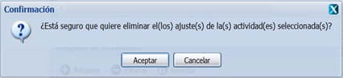
Figura 12. Interfaz Mensaje confirmación para eliminar.
El sistema permite desglosar los niveles de actividad. Para realizar esta acción se debe desglosar el árbol de entidades que aparece en el panel izquierdo de la interfaz y se procede a seleccionar la entidad hija. Automáticamente se listan cada una de las actividades de la entidad seleccionada. Una vez listadas las mismas se procede a seleccionar la actividad sobre la que desea realizar el desglose y se presiona clic derecho sobre esta. Luego de ejecutada esta acción el sistema le mostrará la opción Desglosar, se procede a seleccionar la misma, y el sistema le mostrará el panel Desglose de actividades se selecciona la opción Adicionar de la misma. El sistema adiciona una fila en el panel Desglose de actividades con los campos por los que se puede desglosar el nivel de actividad. En la columna Nivel se introduce un nivel de actividad, se despliega el campo de las columnas que se muestren en dicho panel las cuales varían en dependencia de la configuración que efectúe el Rector en la funcionalidad Configurar desglose. Una vez desglosado el nivel de actividad se procede a seleccionar la opción Guardar. La opción Desglosar saldrá deshabilitada, solo se habilita si la actividad seleccionada tiene nivel de actividad mayor que cero. Esta funcionalidad solo la podrá ejecutar un usuario especialista.
El sistema permite eliminar el desglose realizado con anterioridad, para ello debe desglosar el árbol de entidades que aparece en el panel izquierdo de la interfaz y se procede a seleccionar la entidad hija. Automáticamente se listan cada una de las actividades de la entidad seleccionada. Una vez listadas las mismas se procede a seleccionar la actividad sobre la que desea eliminar el desglose y se presiona clic derecho sobre esta. Luego de ejecutada esta acción el sistema le mostrará la opción Desglosar, se procede a seleccionar la misma, y el sistema le mostrará el panel Desglose de actividades se selecciona una o varias de las filas listadas o varias mediante la opción (Ctrl+clic) seguidamente el usuario procede a seleccionar la funcionalidad Eliminar de dicho panel. Una vez seleccionada la misma el sistema le mostrará un mensaje de confirmación como se muestra en la Figura 13, que se puede Aceptar o Cancelar según desee, de presionar la opción Aceptar el sistema le mostrará un mensaje de información sobre el éxito de la operación realizada, se acepta dicho mensaje y el sistema elimina el desglose. De presionar la opción Cancelar del mensaje de confirmación el sistema no realizará ninguna acción.
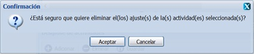
Figura 13. Interfaz Mensaje confirmación para eliminar.
El sistema permite actualizar los planes, para realizar dicha acción se debe desplegar el panel Planes y seleccionar un plan de los listados. El sistema muestra las actividades asociadas al plan seleccionado en el panel Niveles de actividad, se selecciona la opción Actualizar plan y se muestra un mensaje de confirmación como se indica en la Figura 14, se selecciona la opción Aceptar y se actualizan los planes, en caso de que el usuario seleccione la opción Cancelar, se cierra el mensaje, no se realiza la acción y se muestra la interfaz principal. En caso de que todas las actividades del plan no han sido desglosadas el sistema mostrará un mensaje de información notificándolo.
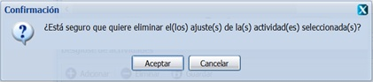
Figura 14. Interfaz Mensaje actualizar plan.
El sistema permite ver los detalles de una actividad en específico, para ello después de seleccionar clic derecho sobre una actividad aprobada, se selecciona la opción ver detalles como se muestra la Figura 15, si la actividad es propia se muestran las normas de la actividad, si la actividad es propia y/o demandada y/o compartida se muestran las entidades que demandan la actividad y las entidades que comparten la actividad además de la norma.
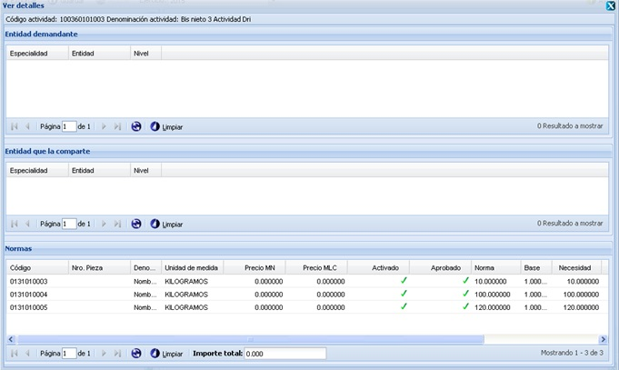
Figura 15. Ver detalles.
Además el sistema permite exportar los niveles de actividad. Para ejecutar esta funcionalidad se debe desglosar el árbol de entidades y seleccionar una entidad de las que se listan, luego de seleccionada la misma se recargará automáticamente el panel derecho Nivel de actividad con cada una de las actividades asociadas a la entidad seleccionadase, selecciona la opción Exportar de la interfaz principal. Una vez seleccionada esta opción, el sistema le mostrará la interfaz Abriendo con dos opciones como se muestra en la Figura 16, se selecciona la opción Abrir con y el sistema muestra los Niveles de actividad en un documento Excel, ver Figura 17. Si se opta por la opción Guardar archivo este se guarda en la carpeta Descargas de la computadora.
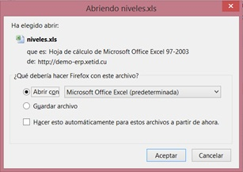
Figura 16. Abriendo.
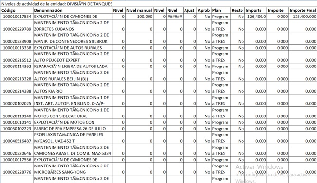
Figura 17. Niveles de actividad.
Cálculos
Con el objetivo de mostrar, por indicadores y/o planes, el resultado del cálculo de los niveles de actividad por las normas de consumo y salidas asociadas a las actividades de una entidad dada, y mostrar de forma consolidada el resultado de los cálculos de todas las entidades que intervienen en la planificación de la entidad por la que se accedió al sistema se tiene el componente Cálculos. Para acceder a esta funcionalidad se debe seleccionar la opción: Inicio/ Planificación /Planificación material/Bases para el plan/Cálculos. Una vez seleccionada la funcionalidad, aparecerá en pantalla la interfaz de la misma como se muestra en la Figura 1, donde el usuario autenticado podrá realizar las acciones que desee, en correspondencia con el acceso que tenga definido. Luego de mostrada la interfaz debe desplegar el árbol de entidades haciendo clic en el signo más (+) del panel Entidades para seleccionar la entidad sobre la que desea realizar los cambios.
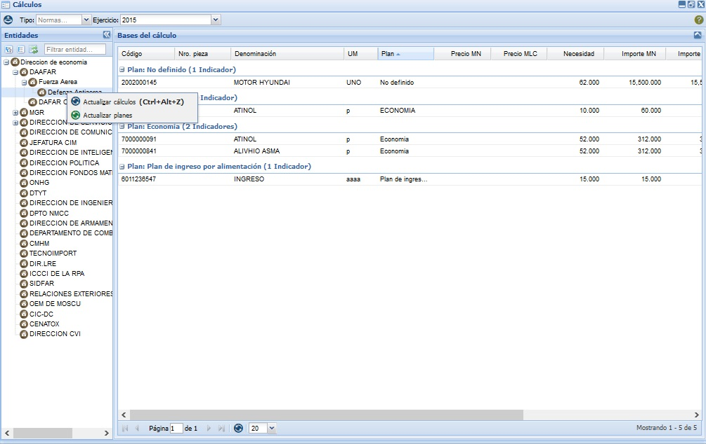
Figura 1. Interfaz Cálculos.
El sistema permite que se actualicen las necesidades de los indicadores en correspondencia con los niveles de actividad que se le dieron a las actividades que contienen estos indicadores, lo que arroja como resultado final la actualización del importe total. Para que este proceso se ejecute se selecciona la opción Actualizar cálculo o con las teclas (Ctrl + Alt + Z), el sistema muestra un mensaje de confirmación como se observa en la Figura 2, se presiona la opción Aceptar y se actualizan los cálculos, en caso de que se presione la opción Cancelar no se actualizan los cálculos, se cierra dicho mensaje y se muestra la interfaz principal.
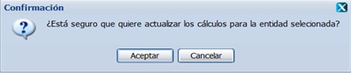
Figura 2. Interfaz Mensaje para actualizar los cálculos.
También el sistema permite eliminar los cálculos, para ello se despliega el árbol de entidades que se muestra a la izquierda de la interfaz, se presiona clic secundario (derecho) sobre una de las entidades y se selecciona la opción Eliminar o la tecla caliente (Delete) El sistema mostrará un mensaje de confirmación como se observa en la Figura 3, que se puede Aceptar o Cancelar según desee, si presiona el botón Aceptar el sistema mostrará un mensaje de información notificando que se realizó la acción satisfactoriamente, si presiona el botón Cancelar el sistema cancela la acción y no elimina los cálculos efectuados.
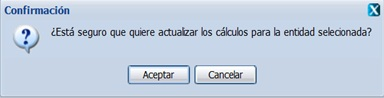
Figura 3. Interfaz Mensaje para eliminar.
El sistema cuenta con la posibilidad de actualizar los cálculos de los planes, para ello se despliega el árbol de entidades que se muestra a la izquierda de la interfaz, se presiona clic secundario (derecho) sobre una de las entidades y se selecciona la opción Actualizar planes, una vez ejecutada esta opción se muestra la interfaz Actualizar planes como se muestra en la Figura 4, donde el usuario puede seleccionar el(los) plan(es) que quiere actualizar, se presiona la opción Aceptar, se cierra la ventana y se actualizan los planes, si presiona la opción Aplicar se actualizan los planes y la ventana permite seleccionar nuevos planes, de seleccionar la opción Cerrar se cierra la ventana y no actualiza.
Figura 4. Actualizar planes.
El sistema permite exportar las bases de cálculo de una determinada entidad, para ejecutar la funcionalidad se debe desglosar el árbol de entidades y seleccionar una entidad de las que se listan, luego de seleccionada la misma se recargará automáticamente el panel derecho bases del cálculo, activando así la opción Exportar. Una vez seleccionada esta opción, el sistema le mostrará la interfaz Abriendo con dos opciones como se muestra en la Figura 5, se selecciona la opción Abrir con y el sistema muestra los Niveles de actividad en un documento Excel, ver Figura 6. Si se opta por la opción Guardar archivo este se guarda en la carpeta Descargas de la computadora.
Figura 5. Abriendo cálculos.
Figura 6. Cálculos.xls.
Demanda de actividades
Esta funcionalidad permite listar las actividades con los niveles que le son demandados a determinada especialidad productora, además de los niveles propios que la misma le inserta a cada una de sus actividades y con estos elementos le proporciona a la especialidad productora saber cuánto puede o no cubrir de lo solicitado, después de realizado este proceso el rector de la actividad distribuye los niveles que la especialidad productora puede ejecutar de la demanda por entidad y finalmente lo aprueba. Para acceder a esta funcionalidad se selecciona la opción Inicio/Planificación/Planificación material/Bases para el plan/Demanda de actividades. Una vez seleccionada esta funcionalidad, se mostrará en pantalla la interfaz de la misma, donde el usuario podrá realizar todas las acciones a las que tenga acceso como se muestra en la Figura 1.
Figura 1. Interfaz Demanda de actividades.
La interfaz principal para realizar Demanda de actividades está dividida en dos secciones principales: Demanda al rector y demanda del productor. Estas dos secciones cargan las interfaces en dependencia del usuario que esté autenticado si es Usuario de Órgano Rector en la interfaz Demanda al rector independientemente del campo de selección Demandante que se muestra siempre para cualquier usuario autenticado, se carga el campo de selección Rector, ver Figura 2. Lo mismo pasa para la interfaz Demanda del productor a parte del campo de selección Demandante que se muestra siempre para cualquier usuario autenticado, se carga el campo de selección Productor como se muestra en la Figura 3.
Figura 2. Interfaz Demanda al rector.
Figura 3. Interfaz Demanda del productor.
Para el caso del Usuario Productor (Especialista) cuando se autentique un usuario especialista se muestra una interfaz listando todas las actividades que le demanden y las actividades de la cual la entidad sea rectora, por lo que en la interfaz Demanda al rector solamente se carga el campo de selección Demandante como se muestra la Figura 4. Lo mismo pasa para la interfaz Demanda del productor se carga el campo de selección Demandante como se observa en la Figura 5. Si una entidad define en la funcionalidad Actividades, que una determinada actividad es compartida por otra(s) entidad(es), dicha actividad no aparece en el componente Demanda de actividades, ya que en este caso la(s) entidad(es) que compartan la actividad no necesitarán los recursos de la entidad que la creó para utilizarla.
Figura 4. Interfaz Demanda al rector.
Figura 5. Interfaz Demanda del productor.
El sistema permite aprobar las demandas de actividades Para aprobar la(s) demanda(s) se debe tener en cuenta el usuario que se autentifica, si es en caso de que sea Usuario Demandante se muestran todas las actividades que están siendo demandadas por alguna entidad, de acuerdo al nivel demandado total que se muestra en la columna Nivel de actividad demandado (NAD), el productor de la actividad (usuario de la entidad autenticada) le inserta el número correspondiente que puede asignar para tratar de cubrir las demandas de sus demandantes y finalmente el productor de la entidad selecciona la(s) actividad(es) y desglosa el botón Aprobacíon y se selecciona la opción Aprobar. Automáticamente el sistema le mostrará un mensaje de confirmación, que se puede Aceptar o Cancelar según desee, de presionar la opción Aceptar, el sistema le mostrará un mensaje de información notificando que la acción se realizó con existo. Si presiona la opción Cancelar, el sistema cancela las acciones y cierra la ventana del mensaje.
Si se desea ver las actividades que demanda una entidad específica, se presiona el campo de selección Demandantes y se escoge la opción deseada, automáticamente el sistema muestra las actividades con su información por columnas. Una vez que la entidad productora aprueba la demanda que puede cubrir de la actividad, el rector de la actividad tiene que distribuir la demanda por las entidades que solicitaron la actividad y aprobar la distribución.
Una vez que la actividad sea aprobada por los Órganos Demandante tiene que ser aprobada por el Órgano Rector, para ello en la interfaz Demanda del productor, se selecciona en el campo de selección Productor la entidad productora de la actividad, y en el campo Demandante la entidad demandante de la actividad, luego de este se selecciona(n) la(s) actividad(es) y se aprueba su demanda, seguido se debe seleccionar la interfaz Demanda al rector y seleccionar el campo de selección Rector, y el campo Demandante, se selecciona(n) la(s) actividad(es) para que sea aprobada por la entidad rectora de la misma y automáticamente el sistema muestra un mensaje de confirmación confirmando que si está seguro que quiere aprobar o desaprobar (Según la acción que seleccione) el(los) nivel(es) de actividad seleccionado(s), se acepta el mensaje de confirmación y se muestra un mensaje de información notificando que la acción se realizó con éxito. Realizada esta acción no permitirá a la entidad productora realizar cambios en su capacidad productiva de la demanda de la actividad.
El sistema permite desaprobar las demandas de actividades Para desaprobar la(s) demanda(s) se debe tener en cuenta el usuario que se autentifica, si es en caso de que sea Usuario Demandante se muestran todas las actividades que están siendo demandadas por alguna entidad, de acuerdo al nivel demandado total que se muestra en la columna Nivel de actividad demandado (NAD), el productor de la actividad (usuario de la entidad autenticada) le inserta el número correspondiente que puede asignar para tratar de cubrir las demandas de sus demandantes y finalmente el productor de la entidad selecciona la(s) actividad(es) y desglosa el botón Aprobacíon y se selecciona la opción Desaprobar. Automáticamente el sistema le mostrará un mensaje de confirmación, que se puede Aceptar o Cancelar según desee, de presionar la opción Aceptar, el sistema le mostrará un mensaje de información notificando que la acción se realizó con existo. Si presiona la opción Cancelar, el sistema cancela las acciones y cierra la ventana del mensaje.
Si se desea ver las actividades que demanda una entidad específica, se presiona el campo de selección Demandantes y se escoge la opción deseada, automáticamente el sistema muestra las actividades con su información por columnas. Una vez que la entidad productora aprueba la demanda que puede cubrir de la actividad, el rector de la actividad tiene que distribuir la demanda por las entidades que solicitaron la actividad y aprobar la distribución.
Una vez que la actividad sea aprobada por los Órganos Demandante tiene que ser desaprobada por el Órgano Rector, para ello en la interfaz Demanda del productor, se selecciona en el campo de selección Productor la entidad productora de la actividad, y en el campo Demandante la entidad demandante de la actividad, luego de este se selecciona(n) la(s) actividad(es) y se desaprueba su demanda, seguido se debe seleccionar la interfaz Demanda al rector y seleccionar el campo de selección Rector, y el campo Demandante, se selecciona(n) la(s) actividad(es) para que sea aprobada por la entidad rectora de la misma y automáticamente el sistema muestra un mensaje de confirmación, se acepta el mensaje de confirmación y se muestra un mensaje de información notificando que la acción se realizó con éxito. Realizada esta acción no permitirá a la entidad productora realizar cambios en su capacidad productiva de la demanda de la actividad.
El sistema permite cubrir la demanda de una actividad, para ello se selecciona el panel Demanda del productor y se listan las actividades que son demandas por una o varias entidades mostrándose la información de la misma. La entidad productora de la actividad es la que determina cuanto de lo que las entidades le demandan puede cubrir, introduciendo un número en la columna Nivel de actividad a ejecutar (NAE), o sea, se introduce la capacidad productiva total de la entidad productora en el campo NAE. Después que se introduce la capacidad de producción de la entidad productora de la actividad en el campo NAE, el sistema automáticamente realiza una resta del campo NAE menos el campo NAD, si la capacidad de producción que se introduce en el campo NAE es menor que la demanda en el campo NAD, en el campo Diferencia el número mostrado será negativo dicho valor será el que falta para satisfacer completamente la demanda.
El sistema permite exportar para un documento Excel cada una de las demandas de actividades efectuadas, ya sea por la demanda al rector o la demanda al productor. Para ello se selecciona la opción Exportar de la interfaz. Una vez seleccionada esta opción, el sistema le mostrará la interfaz Abriendo demanda con dos opciones como se muestra en la Figura 6, se selecciona la opción Abrir con y el sistema muestra los codificadores exportados en un documento Excel, ver Figura 7. Si se opta por la opción Guardar archivo este se guarda en la carpeta Descargas de la computadora.
Figura 6. Abriendo demanda.
Figura 7. Demanda.
Desglose de actividades por fecha
El sistema cuenta con el componente Desglose de actividades por fecha el cual permite desglosar los niveles de una actividad por fecha. Para acceder a esta funcionalidad se selecciona la ruta Inicio/Planificación/Planificación material/Bases para el plan/Desglose de actividades por fecha. Luego de seleccionada esta funcionalidad, se mostrará en pantalla la interfaz de la misma como se muestra en la Figura 1, donde el usuario podrá realizar todas las acciones a las que tenga acceso definido.
Figura 1. Interfaz Desglose de actividades por fecha.
Para adicionar un desglose se debe desplegar el árbol de entidades que se muestra en el panel izquierdo Entidades y escoger la deseada, automáticamente se listarán en el panel Niveles de actividad los niveles de actividad, se selecciona uno de ellos y se activa el panel Desglose por fecha como se muestra en la Figura 2. Una vez realizada esta acción se presiona la opción Adicionar de dicho panel. El sistema le adicionará automáticamente una fila con el nivel de la actividad sin desglosar, ese valor puede ser modificado por un valor menor que el límite que se muestra en el campo Nivel de actividad en caso deseado. Seguidamente se selecciona la fecha inicio y fin del desglose como se muestra en la Figura 3 y se selecciona la opción Guardar o la tecla caliente (Alt+G) del panel Desglose por fecha para guardar los desgloses realizados. Una vez seleccionado el mismo, el sistema le mostrará un mensaje de confirmación como se muestra en la Figura 4, se acepta el mensaje y se muestra un mensaje de información sobre el éxito de la operación realizada. De presionar la opción Cancelar del mensaje, se cierra el mensaje y no se guarda el desglose efectuado.
Figura 2. Adicionar desglose por fecha.
Figura 3. Campos de la interfaz desglose por fecha.
Figura 4. Mensaje de confirmación para guardar.
Para eliminar un desglose se debe desplegar el árbol de entidades que se muestra en el panel izquierdo Entidades, automáticamente se listarán en el panel Niveles de actividad los niveles de actividad, se selecciona uno de ellos y se activa el panel Desglose por fecha como se muestra en la Figura 2. Se selecciona el desglose a eliminar y la opción Eliminar o la tecla caliente (Delete). El sistema mostrará un mensaje de confirmación como se observa en la Figura 5, que se puede Aceptar o Cancelar según desee, si presiona el botón Aceptar el sistema mostrará un mensaje de información notificando que se realizó la acción satisfactoriamente, si presiona el botón Cancelar el sistema cancela la acción y no elimina el desglose realizado.
Figura 5. Interfaz Mensaje para eliminar.
Desglose de indicadores por fecha
El componente Desglose de indicadores por fecha permite desglosar los indicadores. Para acceder a esta funcionalidad se debe seleccionar la ruta Inicio/Planificación/Planificación material/Esfera/Desglose de indicadores por fecha. Luego de seleccionada la misma se muestra la interfaz principal como se muestra en la Figura 1, en la cual es usuario podrá realizar las acciones a las cuales tenga acceso.
Figura 1. Interfaz Desglose de indicadores por fecha.
Para adicionar un desglose se debe desplegar el árbol de entidades que se muestra en el panel izquierdo Entidades y escoger una de las listadas, así como la esfera de la cual desea visualizar sus indicadores. Una vez realizada esta acción se listarán en el panel Demanda de indicadores los indicadores planificados para la entidad y la esfera escogida, se selecciona uno de ellos y se activa el panel Desglose por fecha como se muestra en la Figura 2. Una vez realizada esta acción se presiona la opción Adicionar de dicho panel. El sistema le adicionará automáticamente una fila con la cantidad sin desglosar, ese valor puede ser modificado por un valor menor que el límite que se muestra en el campo Nivel en el caso deseado. Seguidamente se selecciona la fecha inicio y fin del desglose como se muestra en la Figura 3 y se selecciona la opción Guardar o la tecla caliente (Alt+G) del panel Desglose por fecha para guardar los desgloses realizados. Una vez seleccionado el mismo, el sistema le mostrará un mensaje de confirmación como se muestra en la Figura 4, se acepta el mensaje y se muestra un mensaje de información sobre el éxito de la operación realizada. De presionar la opción Cancelar del mensaje, se cierra el mensaje y no se guarda el desglose efectuado.
Figura 2. Adicionar desglose por fecha.
Figura 3. Campos de la interfaz desglose por fecha.
Figura 4. Mensaje de confirmación para guardar.
Priorizar plan
Con el objetivo de asignarle prioridad a los planes, el sistema cuenta con el componente Priorizar plan. Esto permitirá que en la funcionalidad Balance material se puedan ir cubriendo las demandas siguiendo la prioridad de los planes. Para acceder a esta funcionalidad se puede acceder a través de la opción Inicio/Planificación/Planificación material/Plan/Priorizar planes, a la cual solo podrán acceder aquellos usuarios que presenten categoría rector. Una vez accedida a la misma el sistema le mostrará la interfaz principal de dicha funcionalidad, como se muestra en la Figura 1. Cada uno de los planes mostrados en el panel derecho Priorizar planes, serán aquellos planes materiales que hayan sido creados para la entidad seleccionada en el panel izquierdo Entidades.
Figura 1. Priorizar planes.
Para incrementar una prioridad, debe seleccionar uno de los planes listados y la opción del panel Priorizar plan, hasta otorgarle la prioridad deseada al plan, en caso de que el usuario desee decrementar la prioridad se presiona la opción de dicho panel hasta situar el plan seleccionado en la prioridad requerida. En caso de que el usuario desee ver los planes de presupuesto para establecer la prioridad, selecciona la opción Presupuesto de la interfaz. Una vez realizado este proceso se procede a seleccionar la opción Guardar, de la interfaz o la tecla caliente (Alt+G), ejecutada esta acción el sistema muestra un mensaje de información indicando el éxito de la operación.
Plan
Esta funcionalidad tiene el objetivo de especificar la gestión de un plan en el sistema, elemento principal del proceso de planificación, a través del cual se hará la consolidación y desagregación de la información, así como la supervisión de la misma a los niveles organizativos de la empresa, teniendo en cuenta la unidad de medida original de los indicadores y la unidad de medida alternativa de la forma de presentación con que se planifiquen los mismos. Este componente permite además realizar la demanda de los indicadores por los diferentes planes que se definen por el Órgano rector del proceso de planificación. A cada plan definido se le adicionan los indicadores que resultan de interés para la entidad y a partir de ahí se define un valor para su demanda, que puede ser aprobado o no por niveles superiores. También brinda la funcionalidad de agregarle comentarios a los planes que lo requieran, en caso de haber desacuerdo con alguna cifra, o se requiera hacer énfasis en un elemento importante del plan. Podrán acceder a esta funcionalidad, tanto usuarios que presenten categoría rector como especialista. A esta funcionalidad se puede acceder a través de la ruta Inicio/Planificación/Planificación material/Plan/Plan. Una vez accedida a esta ruta se muestra la interfaz principal como se muestra en la Figura 1, para que el usuario realice los cambios necesarios. Cada una de las acciones a realizar sobre la interfaz de planes se efectuará sobre el ejercicio actual, de querer gestionar los planes para un ejercicio diferente, deberá seleccionar un ejercicio de los listados al desglosar el campo Ejercicio que aparece en la parte superior de la interfaz. Una vez ejecutada esta acción el sistema recargará la interfaz, mostrando cada uno de los datos en dependencia del ejercicio seleccionado.
Figura 1. Interfaz de la funcionalidad Plan.
Luego de mostrada la interfaz principal, para acceder a cada una de las funcionalidades que esta brinda, debe proceder a desglosar el árbol de entidades y seleccionar una entidad en específica, una vez seleccionada la misma el sistema desplegará automáticamente el panel central Planes con una consolidación de todos los planes de sus entidades hijas en caso de poseerlas como se muestra en la Figura 2. Estos planes saldrán consolidados para el caso que seleccione una entidad padre.
Figura 2. Interfaz Plan dividida en paneles.
Los usuarios con categoría rector son los únicos que tienen permisos para crear las agrupaciones y los planes contenidos dentro de la misma, así como de efectuar las funcionalidades de eliminación de estas y hacer funciones de visualización, cambio de ejercicio y aprobación de los indicadores adicionados al plan por los especialistas. Estos últimos son los encargados de realizar todas las funcionalidades de gestión sobre los indicadores de un plan, así como de adicionar y ver los comentarios que hayan sido adicionados tanto a los planes como a los indicadores. En fin los rectores son los encargados de hacer la aprobación final de los indicadores y los especialistas hacen una aprobación a nivel de especialistas.
Para adicionar una agrupación es necesario seleccionar una entidad hija del árbol de entidades y posteriormente presionar clic derecho sobre la carpeta Planes. Una vez ejecutada dicha acción el sistema le mostrará un menú, como se muestra en la Figura 3, se selecciona la opción Adicionar agrupación o la tecla caliente (Alt+I), que aparece en el mismo y seguidamente se mostrará la ventana Adicionar agrupación, como se muestra en la Figura 4. Una vez realizada esta acción se procede a introducir un código, el cual no puede ser igual a ninguno insertado con anterioridad, seguidamente el usuario introduce la denominación de la agrupación y finalmente puede introducir una descripción, este campo no es obligatorio. El usuario puede seleccionar la opción Cancelar, Aplicar o Aceptar, según sea el caso.
Figura 3. Menú adicionar agrupación.
Figura 4. Interfaz Adicionar agrupación.
El sistema permite modificar los datos de la agrupación previamente seleccionada en la estructura de carpetas que aparece en el panel central Planes. Una vez seleccionada la misma y presionada la opción Modificar o la tecla caliente (Alt+M), que aparece en el menú que se muestra al dar clic derecho sobre la agrupación que desea modificar, el sistema le mostrará la interfaz Modificar agrupación con los datos cargados, posibilitando que se modifiquen los datos que se requieran. El usuario puede seleccionar la opción Cancelar, Aplicar o Aceptar, según sea el caso.
También el sistema permite eliminar agrupación previamente seleccionada en la estructura de carpetas que aparece en el panel central Planes. Una vez seleccionada la misma y presionada la opción Eliminar o la tecla caliente (Del), que aparece al dar clic derecho sobre la agrupación que desea eliminar, el sistema le mostrará automáticamente un mensaje de confirmación, como se muestra en la Figura 5, que se puede Aceptar o Cancelar según sea el caso, de presionar la opción Aceptar el sistema le mostrará un mensaje de información sobre el éxito de la operación realizada, quedando eliminada la agrupación seleccionada, si cancela el mensaje de confirmación, el sistema permanece en la interfaz principal y no elimina la agrupación. Es importante tener en cuenta que si se elimina una agrupación todos los planes contenidos dentro de la misma también serán eliminados.
Figura 5. Interfaz Mensaje para eliminar.
El sistema cuenta dentro de sus funcionalidades con la opción de adicionarle un comentario a la agrupación. Para realizar esta acción deberá seleccionar la agrupación en la estructura de carpetas que aparece en el panel central Planes, se selecciona la opción Adicionar comentario y automáticamente el sistema le mostrará la interfaz Adicionar comentario que aparece en la Figura 6. Una vez en dicha interfaz el usuario procede a llenar los siguientes campos, se introduce el asunto al comentario, se selecciona el tipo de comentario y finalmente el usuario introduce una breve descripción del mismo, este campo no es obligatorio. Se selecciona la opción Cancelar, Aplicar o Aceptar, según sea el caso.
El panel izquierdo Comentario solo se mostrará al presionar clic encima de una agrupación, si se presiona clic encima de un plan de los contenidos dentro de una agrupación, automáticamente el sistema le mostrará el panel Detalles del plan con un grupo de funcionalidades que pueden ser ejecutadas sobre el mismo y los indicadores que posee el plan seleccionado en caso de poseer alguno. Es importante tener en cuenta que al seleccionar una entidad padre se activa automáticamente el panel central Planes con cada uno de los planes consolidados, luego de activado el mismo si selecciona un plan de los mostrados, el sistema activará el panel derecho Detalles del plan con cada uno de los indicadores consolidados de cada una de sus entidades hijas en ese plan, como se muestra en la Figura 7.
Figura 6. Interfaz de usuario Adicionar comentario a una agrupación.
Figura 7. Interfaz Plan mostrando el panel izquierdo Detalles del plan.
El sistema permite adicionarle un plan a una agrupación. Para realizar esta acción deberá seleccionar la agrupación en la estructura de carpetas que aparece en el panel central Planes, presionar clic derecho (secundario), sobre la misma seleccionar la opción Adicionar plan, automáticamente se muestra la interfaz Adicionar plan como se muestra en la Figura 8. Una vez accedida a dicha interfaz se procese a introducir la denominación del plan que se desea insertar, se selecciona el Tipo de modelo que presentará el plan, se procede a introducir la clasificación que presentará el plan. Una vez seleccionado dicho campo, el sistema le mostrará automáticamente la interfaz de la Figura 9, luego de mostrada la misma se procede a desglosar la estructura de clasificaciones y seleccionar una, una vez seleccionada se procede a seleccionar la opción Aceptar de la interfaz, mostrando así la clasificación seleccionada en dicho campo, de presionar la opción Cancelar, el sistema cancelará las acciones y no adicionará la clasificación. Finalmente el usuario introduce una breve descripción del plan a insertar. Es importante recalcar que para ejecutar esta acción se debe haber adicionado al menos una agrupación de planes en el sistema y debe existir al menos un tipo de modelo aprobado y activado. Se selecciona la opción Cancelar, Aplicar o Aceptar, según sea el caso.
Figura 8. Interfaz de usuario Adicionar plan a una agrupación.
Figura 9. Interfaz de usuario Adicionar plan a una agrupación.
El sistema permite modificar un plan previamente insertado. Para realizar esta acción deberá seleccionar la agrupación en la estructura de carpetas que aparece en el panel central Planes, presionar clic derecho (secundario), sobre la misma seleccionar la opción Modificar plan, automáticamente se muestra la interfaz Modificar plan, como se muestra en la Figura 10, con los datos cargados, posibilitando que se modifiquen los datos que se requieran. Se selecciona la opción Cancelar, Aplicar o Aceptar, según sea el caso.
Figura 10. Interfaz de usuario Modificar plan.
El sistema permite eliminar un plan previamente insertado. Para realizar esta acción deberá seleccionar un Plan en la estructura de carpetas que aparece en el panel central Planes, presionar clic derecho (secundario), sobre el mismo seleccionar la opción Eliminar plan, el sistema muestra un mensaje de confirmación, como se muestra en la Figura 11, que se puede Aceptar o Cancelar según sea el caso, de presionar la opción Aceptar el sistema le mostrará un mensaje de información sobre el éxito de la operación realizada, quedando eliminado el plan seleccionado, si cancela el mensaje de confirmación, el sistema permanece en la interfaz principal y no elimina plan.
Figura 11. Mensaje de confirmación para eliminar.
El usuario tiene la posibilidad de ver los detalles del plan previamente adicionado, para ello deberá seleccionar un Plan en la estructura de carpetas que aparece en el panel central Planes, presionar clic derecho (secundario), sobre el mismo seleccionar la opción Ver plan, automáticamente el sistema activa el panel Detalles del plan posibilitando ver los detalles del plan, como se muestra en la Figura 12.
Figura 12. Interfaz Detalles del plan.
El sistema cuenta dentro de sus funcionalidades con la opción de adicionarle un comentario a un plan. Para realizar esta acción deberá seleccionar un Plan en la estructura de carpetas que aparece en el panel central Planes, se selecciona la opción Adicionar comentario y automáticamente el sistema le mostrará la interfaz Adicionar comentario que aparece en la Figura 13. Una vez en dicha interfaz el usuario procede a llenar los siguientes campos, se introduce el asunto al comentario, se selecciona el tipo de comentario y finalmente el usuario introduce una breve descripción del mismo, este campo no es obligatorio. Se selecciona la opción Cancelar, Aplicar o Aceptar, según sea el caso.
Figura 13. Interfaz de usuario Adicionar comentario.
Además el sistema cuenta con la posibilidad de asociar planes. Esta acción permite asociar planes a entidades. Para acceder a la misma se procede a seleccionar un plan previamente insertado en la estructura de carpetas que aparece en el panel central Planes. Una vez seleccionado el mismo y presionada la opción Asociar planes, que aparece al dar clic derecho sobre un plan en específico, el sistema le mostrará automáticamente la interfaz Asociar planes con cada una de las entidades que presentan comportamiento como órgano demandante que no se encuentran asociadas al plan, se procede a seleccionar la(s) entidad(es) que se quiere(n) asociar al plan seleccionado y se presiona la opción Aceptar de la interfaz, automáticamente el sistema le mostrará un mensaje de información sobre el éxito de la operación realizada, se acepta el mensaje de información y queda(n) asociada(s) la(s) especialidad(es) seleccionada(s) al plan. Si presiona la opción Aplicar de la interfaz, se asocia la entidad seleccionada al plan y se mantiene la ventana Asociar planes permitiendo seleccionar más entidades. De presionar la opción Cancelar, se cierra la ventana Asociar planes y se cancela la acción, como se observa en la Figura 14. De haber sido asociadas todas las entidades o no existir entidades con comportamiento como órgano demandante a mostrar, el sistema le mostrará un mensaje de información notificando que no existe ninguna entidad con comportamiento órgano demandante a mostrar, pues todas se encuentran asociadas al plan.
Figura 14. Interfaz de usuario Asociar planes.
También el sistema permite desasociar planes. Esta acción permite desasociar planes a entidades. Para acceder a la misma se procede a seleccionar un plan previamente insertado en la estructura de carpetas que aparece en el panel central Planes. Una vez seleccionado el mismo y presionada la opción Desasociar planes, que aparece al dar clic derecho sobre un plan en específico, el sistema le mostrará automáticamente la interfaz Desasociar planes con cada una de las entidades que presentan comportamiento como órgano demandante que se encuentran asociadas al plan, se procede a seleccionar la(s) entidad(es) que se quiere(n) desasociar al plan seleccionado y se presiona la opción Aceptar de la interfaz, automáticamente el sistema le mostrará un mensaje de información sobre el éxito de la operación realizada, se acepta el mensaje de información y queda(n) desasociada(s) la(s) especialidad(es) seleccionada(s) al plan. Si presiona la opción Aplicar de la interfaz, se desasocia la entidad seleccionada al plan y se mantiene la ventana Desasociar planes permitiendo seleccionar más entidades. De presionar la opción Cancelar, se cierra la ventana Desasociar entidades y se cancela la acción, ver Figura 15. De haber sido desasociadas todas las entidades con comportamiento como órgano demandante a mostrar en la interfaz, el sistema le mostrará un mensaje de información notificando que no existe ninguna entidad con comportamiento órgano demandante asociada al plan.
Figura 15. Interfaz de usuario Desasociar planes.
El sistema permite adicionarle indicadores al plan. Para acceder a la misma el usuario autenticado debe tener categoría especialista y se procede a seleccionar un plan previamente insertado en la estructura de carpetas que aparece en el panel central Planes. Una vez seleccionado el mismo y presionada la opción Adicionar indicador, una vez ejecutada esta funcionalidad se muestra la ventana Adicionar indicadores, como se muestra en la Figura 16. Una vez mostrara dicha interfaz seleccione el(los) indicador(es) que desee adicionar al plan presionando el campo de selección que se encuentra del lado izquierdo de cada indicador. Aclarar que si desea adicionar todos los indicadores puede marcar el campo que se encuentra del lado izquierdo del campo Código. La interfaz cuenta además con una búsqueda por filtrado de columnas para hacerle más fácil la selección de los indicadores. Además de contar con la funcionalidad Limpiar, la cual se encarga de limpiar los filtros realizados en la interfaz a partir de la búsqueda realizada. Una vez que seleccionado(s) el(los) indicador(es) deseado(s) presione uno de los siguientes botones: Cancelar, Aplicar o Aceptar, según sea el caso. Si desea insertar los indicadores al plan en un ejercicio diferente al ejercicio actual, se procede a desglosar el campo Ejercicio que aparece en la parte superior de la interfaz principal, el sistema le mostrará automáticamente un listado de cada uno de los ejercicios configurados con anterioridad, se selecciona un ejercicio de los listados y se recarga la interfaz principal, de forma tal que pueda efectuar la planificación sobre el ejercicio seleccionado.
Figura 16. Interfaz Adicionar indicadores al plan.
Una vez que se adicione el(los) indicador(es), el usuario puede modificarlo, para ello se desglosa el árbol de entidades y se selecciona una entidad en el panel Entidades, se selecciona el ejercicio a utilizar en el campo Ejercicio, el sistema muestra el panel central Planes activado con los planes pertenecientes al ejercicio y a la entidad seleccionada, se procede a seleccionar un plan y se lista en el panel Detalles de plan cada uno de los indicadores pertenecientes al plan seleccionado. Se selecciona un indicador en el panel Detalles de plan, el usuario presiona doble clic sobre los campos: Cantidad e introduce un número, en el campo Sector rama selecciona un sector rama, y finalmente en el campo Destino se selecciona un destino. Una vez realizado este proceso se presiona la opción Guardar del panel Detalles del plan o la tecla caliente (Alt+G), el sistema muestra un mensaje de información indicando el éxito de la operación.
El sistema permite eliminar un indicador insertado con anterioridad, para ello desglosa el árbol de entidades y se selecciona una entidad en el panel Entidades, se selecciona el ejercicio a utilizar en el campo Ejercicio, el sistema muestra el panel central Planes activado con los planes pertenecientes al ejercicio y a la entidad seleccionada, se procede a seleccionar un plan y se lista en el panel Detalles de plan cada uno de los indicadores pertenecientes al plan seleccionado. Se selecciona un indicador o varios mediante la opción (Ctrl+clic), en el panel Detalles de plan, seguidamente se presiona la opción Eliminar de dicho panel o la tecla caliente (Del), automáticamente se mostrará un mensaje de confirmación, como se muestra en la Figura 17, que se puede Aceptar o Cancelar según sea el caso, de presionar la opción Aceptar el sistema le mostrará un mensaje de información sobre el éxito de la operación realizada, quedando eliminado(s) el(los) indicador(es) seleccionado(s), si cancela el mensaje de confirmación, el sistema permanece en la interfaz principal y no elimina el(los) indicador(es).
Figura 17. Mensaje de confirmación para eliminar.
El sistema brinda la posibilidad de aprobar cantidad. Esta funcionalidad permite aprobar cada una de las cantidades asignadas a los indicadores. Al desglosar esta funcionalidad el sistema le mostrará las funcionalidades: Aprobar todos, Desaprobar todos, Aprobar y Desaprobar. Cada una enfocadas a la aprobación y desaprobación de la demanda de los indicadores. Una vez seleccionada una de estas acciones, el sistema le mostrará un mensaje de confirmación, como se muestra en la Figura 18, que se puede Aceptar o Cancelar según sea el caso, de presionar la opción Aceptar el sistema le mostrará un mensaje de información sobre el éxito de la operación realizada, se presiona la opción Aceptar de dicho mensaje y queda efectuada la acción anteriormente seleccionada. Las opciones Aprobar y Desaprobar están enfocadas a la selección de indicadores en el listado y las opciones Aprobar todos y Desaprobar todos no requieren de seleccionar ningún indicador de los listados. Esta última es más usada por el usuario rector, pues este se encarga de aprobar o desaprobar toda la demanda.
Figura 18. Mensaje de confirmación para aprobar/desaprobar.
El sistema cuenta dentro de sus funcionalidades con la opción de adicionarle un comentario a un indicador. Para realizar esta acción deberá seleccionar un Plan en la estructura de carpetas que aparece en el panel central Planes, se muestra el panel Detalles del plan con los indicadores adicionados a dicho plan, se presiona clic derecho (secundario) y se selecciona la opción Adicionar comentario, automáticamente el sistema le mostrará la interfaz Adicionar comentario que aparece en la Figura 13. Una vez en dicha interfaz el usuario procede a llenar los siguientes campos, se introduce el asunto al comentario, se selecciona el tipo de comentario y finalmente el usuario introduce una breve descripción del mismo, este campo no es obligatorio. Se selecciona la opción Cancelar, Aplicar o Aceptar, según sea el caso.
El sistema cuenta dentro de sus funcionalidades con la opción de ver los comentarios de un indicador. Para realizar esta acción deberá seleccionar un Plan en la estructura de carpetas que aparece en el panel central Planes, se muestra el panel Detalles del plan con los indicadores adicionados a dicho plan, se presiona clic derecho (secundario) y se selecciona la opción Ver comentario. Una vez seleccionada dicha opción, el sistema activará el panel Comentario posibilitando ver los comentarios que tiene el indicador seleccionado en ese plan.
El usuario tiene la posibilidad de ver el presupuesto. Para ejecutar esta funcionalidad se debe seleccionar clic derecho (secundario) sobre un determinado plan, una vez ejecutada dicha acción el sistema le mostrará un menú con las acciones que se pueden efectuar sobre el mismo, luego de mostrado el menú se procede a seleccionar la opción Ver presupuesto. Automáticamente el sistema le mostrará el panel Asociación a presupuesto donde se muestran los indicadores del plan, notificando de cada uno de ellos si se encuentran asociados o no a un Objeto de gasto o Recurso financiero, como se muestra en la Figura 19.
Figura 19. Interfaz Asociación a presupuesto.
Una vez mostrada esta interfaz con los indicadores de un plan determinado, puede asociar los indicadores, para ellos se presiona clic derecho (secundario) sobre el indicador, se muestra un menú de opciones como se muestra en la Figura 20 y se selecciona la opción Asociar a Objeto de gasto. Una vez realizada esta acción se muestra la ventana Asociar a Objeto de Gasto, como se observa en la Figura 21, luego de mostrada la misma, se procede a seleccionar un Nivel de actividad Económica (NAE) y un Objeto de Gasto, seguidamente se selecciona la opción Asociar y queda asociado el indicador al objeto de gasto seleccionado, actualizando así las columnas Asociado y Nivel de actividad_Objeto de Gasto con el valor Si. Si se selecciona la opción Cancelar no se ejecuta la asociación y regresa a la interfaz. Las asociaciones a realizar se efectuarán para el ejercicio mostrado en el campo que lleva dicho nombre. Por lo que en dependencia del ejercicio mostrado serán las asociaciones listadas.
Figura 20. Interfaz Asociar a Objeto de Gasto o Recurso Financiero.
Figura 21. Interfaz Asociar a objeto de Gasto.
Para ejecutar esta funcionalidad se debe seleccionar clic derecho (secundario) sobre un determinado plan, una vez ejecutada dicha acción el sistema le mostrará un menú con las acciones que se pueden efectuar sobre el mismo, luego de mostrado el menú se procede a seleccionar la opción Ver presupuesto. Automáticamente el sistema le mostrará el panel Asociación a presupuesto donde se muestran los indicadores del plan. Una vez mostrada esta interfaz, puede asociar los indicadores, para ellos se presiona clic derecho (secundario) sobre el indicador, se muestra un menú de opciones como se muestra en la Figura 20 y se selecciona la opción Asociar a Recurso Financiero. Una vez realizada esta acción se muestra la ventana Asociar a Recurso Financiero, como se observa en la Figura 22, luego de mostrada la misma, se procede a seleccionar un Nivel de actividad Económica (NAE) y un Recurso Financiero, seguidamente se selecciona la opción Asociar y queda asociado el indicador al objeto de gasto seleccionado, actualizando así las columnas Asociado y Nivel de actividad_ Recurso Financiero de la interfaz 20 con el valor Si. Si se selecciona la opción Cancelar no se ejecuta la asociación y regresa a la interfaz. Las asociaciones a realizar se efectuarán para el ejercicio mostrado en el campo que lleva dicho nombre. Por lo que en dependencia del ejercicio mostrado serán las asociaciones listadas.
Figura 22. Interfaz Asociar a Recurso financiero.
El usuario tiene la posibilidad de eliminar la asociación realizada, para ello se debe seleccionar clic derecho (secundario) sobre un determinado plan, una vez ejecutada dicha acción el sistema le mostrará un menú con las acciones que se pueden efectuar sobre el mismo, luego de mostrado el menú se procede a seleccionar la opción Ver presupuesto. Automáticamente el sistema le mostrará el panel Asociación a presupuesto donde se muestran los indicadores del plan. Una vez realizada esta acción se presiona clic derecho (secundario) sobre uno de los indicadores listados que estén asociados a un Objeto de Gasto o Recurso Financiero y se selecciona la opción Eliminar asociación, seguidamente el sistema muestra un mensaje de información indicando el éxito de la operación y se muestra la interfaz con el panel Asociación a presupuesto.
También el sistema permite exportar los indicadores adicionados a un plan con anterioridad. Para ejecutar esta funcionalidad se debe seleccionar clic derecho (secundario) sobre un determinado plan, una vez ejecutada dicha acción el sistema le mostrará un menú con las acciones que se pueden efectuar sobre el mismo, luego de mostrado el menú se procede a seleccionar la opción Ver presupuesto. Automáticamente el sistema le mostrará el panel Asociación a presupuesto donde se muestran los indicadores del plan. El usuario selecciona la opción Exportar de la interfaz, una vez seleccionada esta opción, el sistema le mostrará la interfaz Abriendo resumen con dos opciones como se muestra en la Figura 23, se selecciona la opción Abrir con y el sistema muestra los indicadores exportado en un documento Excel, ver Figura 24. Si se opta por la opción Guardar archivo este se guarda en la carpeta Descargas de la computadora.
Figura 23. Interfaz Abriendo planes.
Figura 24. Indicadores del plan.
El usuario tiene la posibilidad de ajustar los indicadores adicionados al plan. El ajuste sobre el(los) indicador(es) se podrá(n) efectuar de tres formas, presionando la opción Ajustar que aparece al presionar clic derecho sobre un plan en el panel central Planes, mediante la funcionalidad Ajustar que aparece al presionar clic derecho sobre algún indicador de los listados y dando doble clic sobre la columna ajuste, para asignar el valor por el cual se desea ajustar el indicador, este último solo se podrá efectuar sobre un indicador en específico, esto le indicará que el campo de la columna Ajuste es un campo editable. Si el indicador se encuentra desaprobado no se podrá modificar el valor de la columna Ajuste, ya que esta operación solo se realiza sobre los indicadores que presentan cantidades aprobadas por el rector. Para realizar esta acción se desglosa el árbol de entidades que aparece en el panel izquierdo de la interfaz y se procede a seleccionar una entidad, automáticamente se habilita el panel central Planes con cada uno de los planes de la entidad seleccionada, se selecciona un plan y se presiona clic derecho sobre el mismo, el sistema muestra un menú de opciones y se selecciona la opción Ajustar. Una vez realizada esta acción se muestra la ventana Realizar ajuste, como se muestra en la Figura 25. Esta acción le permitirá aumentar o disminuir las cantidades de indicadores para la entidad previamente seleccionada y solo la podrán realizar aquellos usuarios que presenten categoría de especialista. Una vez que se muestre dicha interfaz el usuario deberá introducir el valor por el que desea ajustar cada uno de los indicadores listados para la entidad seleccionada. Los valores Importe inicial, Importe ajustado e Importe final son valores informativos que le podrán ir notificando a partir de la aplicación de un determinado porciento, como va quedando el importe empleado para una determinada entidad, a partir del incremento o decremento del monto total de cada uno de los indicadores que este presenta asociado. Estos valores también serán mostrados como información en las columnas. Se procede a introducir el valor en porciento por el que se desea ajustar, el cual no puede exceder los 3 dígitos, se presiona la opcióCalcular y automáticamente el sistema calcula el valor a mostrar en el campo Importe ajustado, y por ende se pone el valor de la resta del campo importe inicial menos importe ajustado en el campo Importe final. Si selecciona más de un indicador para efectuar el ajuste, al seleccionar la opción Ajustar, en el campo Importe inicial de la interfaz Realizar ajuste, se le mostrará la sumatoria de cada uno de los importes de los indicadores seleccionados, de forma tal que se pueda calcular el valor del ajuste por el que se deben ajustar los indicadores previamente seleccionados. Si los indicadores mostrados al seleccionar un plan, vienen de la funcionalidad de Cálculo del componente Bases para el plan, el valor mostrado en la columna Cantidad será el resultado de: Norma (del indicador) * (NA (nivel de actividad) + (-) Ajuste). El campo de la columna ajuste es un campo entero y acepta el carácter especial (“-”), para el caso que lo que se desee efectuar es una resta sobre el Nivel de actividad. El valor de la columna Cantidad final debe ser mayor que el valor de la columna Ajuste. De introducir un valor en la columna Cantidad menor que el valor de la columna Ajuste o viceversa, al asignar dicho valor el sistema le mostrará un mensaje de información indicando que el valor de la columna Cantidad debe ser mayor que el Ajuste.
El campo ajuste es un campo entero y acepta el carácter especial (“-”), para el caso que lo que se desee efectuar es una resta sobre el valor de la columna Cantidad. Al ajustar cada Indicador del plan seleccionado, se ajustará teniendo en cuenta la unidad de medida (si es UNO se redondeará por defecto o exceso), de lo contrario redondeará a 5 decimales. Si desea realizar el ajuste dando doble clic en la columna ajuste sobre un indicador aprobado, al introducir este valor y querer guardar el mismo, debe apoyarse en la opción Guardar que aparece en la parte superior de la interfaz. Una vez accedido a la misma el sistema le mostrará un mensaje de información y queda registrado el valor del ajuste introducido. Si desea realizar el ajuste para un ejercicio diferente al mostrado en el campo ejercicio (actual), se procede a desglosar dicho campo y seleccionar una de los ejercicios listados. Automáticamente todas las operaciones a realizar se efectuarán sobre el ejercicio seleccionado.
Figura 25. Interfaz de usuario Realizar ajuste.
También el sistema cuenta con la posibilidad de aprobar el ajuste realizado. Para ello se desglosa el árbol de entidades y se selecciona una entidad en el panel Entidades, automáticamente el sistema le mostrará el panel central Planes activado con los planes pertenecientes al ejercicio y a la entidad seleccionada, se selecciona un plan y se lista en el panel Detalles de plan cada uno de los indicadores pertenecientes al plan seleccionado, se procede a seleccionar el(los) indicador(es) sobre los que se desea aprobar el ajuste y se procede a desglosar el campo Aprobación ajuste, una vez desglosado este campo se procede a seleccionar la opción Aprobar. Una vez seleccionada la misma, el sistema le mostrará un mensaje de confirmación como se muestra en la Figura 26, que se puedAceptar o Cancelar según sea el caso, de presionar la opción Aceptar el sistema le mostrará un mensaje de información sobre el éxito de la operación realizada, quedando aprobado el ajuste. Si se opta por la opción Cancelar, el sistema cancela la acción y no permite aprobar el ajuste.
Figura 26. Interfaz Confirmación para aprobar ajuste.
El sistema permite además desaprobar el ajuste. Para ello se desglosa el árbol de entidades y se selecciona una entidad en el panel Entidades, automáticamente el sistema le mostrará el panel central Planes activado con los planes pertenecientes al ejercicio y a la entidad seleccionada, se selecciona un plan y se lista en el panel Detalles de plan cada uno de los indicadores pertenecientes al plan seleccionado, se procede a seleccionar el(los) indicador(es) sobre los que se desea aprobar el ajuste y se procede a desglosar el campo Aprobación ajuste, una vez desglosado este campo se procede a seleccionar la opción Desaprobar. El sistema le muestra el mensaje de confirmación como se muestra en la Figura 27. Se selecciona la opción Aceptar del mensaje de confirmación y queda desaprobado el ajuste de la actividad. Si se opta por la opción Cancelar, el sistema cancela la acción y no permite desaprobar el(los) ajuste(s). La opción Desaprobar se habilitará si al menos existe un indicador que presente ajustes aprobados. Si al realizar selección múltiple, existen ajustes aprobados y desaprobados, al seleccionar la opción Desaprobar ajuste, el sistema desaprobará automáticamente aquellos ajustes que presentaban estado aprobado y los demás se mantendrán con su estado. Esta acción se podrá ejecutar por usuario rector.
Figura 27. Interfaz Confirmación para desaprobar ajuste.
El sistema permite además aprobar todos los ajustes, para ello se desglosa el árbol de entidades y se selecciona una entidad en el panel Entidades, automáticamente el sistema le mostrará el panel central Planes activado con los planes pertenecientes al ejercicio y a la entidad seleccionada, se selecciona un plan y se lista en el panel Detalles de plan cada uno de los indicadores pertenecientes al plan seleccionado, se procede a seleccionar el(los) indicador(es) sobre los que se desea aprobar el ajuste y se procede a desglosar el campo Aprobación ajuste, una vez desglosado este campo se procede a seleccionar la opción Aprobar todos los ajustes. Una vez seleccionada la misma, el sistema le mostrará un mensaje de confirmación como se muestra en la Figura 28, se acepta el mensaje y le mostrará un mensaje de información sobre el éxito de la operación realizada y se aprueban los ajustes realizados sobre los indicadores de la entidad seleccionada. Si se opta por la opción Cancelar, el sistema cancela la acción y no permite aprobar los indicadores. La opción Aprobar todos > los ajustes solo se habilitará si selecciona una entidad que presente al menos un ajuste en estado Desaprobado, y a su vez para la entidad seleccionada existe al menos un ajuste realizado.
Figura 28. Interfaz Confirmación para aprobar todos los ajustes.
También el sistema permite desaprobar todos los ajustes para ello se desglosa el árbol de entidades y se selecciona una entidad en el panel Entidades, automáticamente el sistema le mostrará el panel central Planes activado con los planes pertenecientes al ejercicio y a la entidad seleccionada, se selecciona un plan y se lista en el panel Detalles de plan cada uno de los indicadores pertenecientes al plan seleccionado, se procede a seleccionar el(los) indicador(es) sobre los que se desea aprobar el ajuste y se procede a desglosar el campo Aprobación ajuste, una vez desglosado este campo se procede a seleccionar la opción Desaprobar todos los ajustes. Una vez seleccionada la misma, el sistema le mostrará un mensaje de confirmación como se muestra en la Figura 29, se acepta el mensaje y le mostrará un mensaje de información sobre el éxito de la operación realizada y se desaprueban los ajustes realizados sobre los indicadores de la entidad seleccionada. Si se opta por la opción Cancelar, el sistema cancela la acción y no permite desaprobar los ajustes. La opción Desaprobar todos los ajustes solo se habilitará si selecciona una entidad que presente al menos un ajuste en estado Aprobado.
Figura 29. Interfaz Confirmación para desaprobar todos los ajustes.
El sistema cuenta dentro de sus funcionalidades con la opción de Eliminar ajuste, una vez introducidos los ajustes, el sistema también le brindará la posibilidad de poder eliminarlos, para ello deberá seleccionar clic derecho sobre el(los) indicador(es) al cual le desea eliminar el ajuste, y seleccionar la opción que lleva dicho nombre. Una vez seleccionada la misma el sistema le mostrará un mensaje de confirmación como se muestra en la Figura 30, que se puede Aceptar o Cancelar según desee, de presionar la opción Aceptar el sistema le mostrará un mensaje de información sobre el éxito de la operación realizada, se acepta dicho mensaje y el sistema pondrá automáticamente el valor de la columna ajuste en cero para cada una de las actividades previamente seleccionadas. De presionar la opción Cancelar del mensaje de confirmación el sistema no realizará ninguna acción. Esta opción se habilita después de seleccionar una actividad que está ajustada pero que el ajuste no esté aprobado. Esta acción podrá ser ejecutada por un usuario con categoría especialista.
El sistema cuenta con la posibilidad de ver las actividades que tienen al indicador en sus normas, para ello se desglosa el árbol de entidades y se selecciona una entidad en el panel Entidades, automáticamente el sistema le mostrará el panel central Planes activado con los planes pertenecientes al ejercicio y a la entidad seleccionada, seguidamente se selecciona un plan y se lista en el panel Detalles de plan cada uno de los indicadores pertenecientes al plan seleccionado, una vez listados se selecciona un indicador que en la columna Bases del plan muestra Si, o sea que el indicador vino de bases para el plan pero que algún momento su cantidad fue modificada en Plan. El usuario selecciona la opción Ver de dicho panel y se muestra la ventana Ver actividades, como se observa en la Figura 31, con las actividades que tienen dicho indicador en su norma.
Figura 31. Interfaz Ver actividades.
El sistema permite ver la demanda, para ello se debe presionar la opción Ver demanda de la interfaz principal, automáticamente el sistema muestra la ventana Ver demanda, como se muestra en la Figura 32, permitiendo ver las demandas de entidades por un centro de balance seleccionado.
Figura 32. Interfaz Ver demanda.
El sistema permite exportar las demandas, para ello se debe presionar la opción Ver demanda de la interfaz principal, automáticamente el sistema muestra la ventana Ver demanda, y se presiona la opción Exportar de dicha ventana una vez seleccionada esta opción, el sistema le mostrará la interfaz Abriendo resumen con dos opciones como se muestra en la Figura 33, se selecciona la opción Abrir con y el sistema muestra la demanda exportada en un documento Excel, ver Figura 34. Si se opta por la opción Guardar archivo este se guarda en la carpeta Descargas de la computadora.
Figura 33. Interfaz Abriendo planes.xls.
Figura 34. Indicadores del plan.xls.
El sistema cuenta con la opción de graficar, permitiendo obtener información estadística según el comportamiento del proceso de planificación sobre el ejercicio en que se esté trabajando. Para poder graficar debe escoger un Organismo u entidad y de la funcionalidad Graficar de la interfaz principal desplegar el menú que contiene para visualizar las gráficas que posee el sistema y escoger la que desea utilizar, ver Figura 35. A continuación se especifican cuales:
Figura 35. Menú graficar.
Relación de criterios normalizados y directos: Muestra dos gráficas donde se observa cuantos indicadores provienen de bases para el plan y cuantos fueron adicionados directamente en el plan, por los parámetros de porciento y cantidad.
Figura 36. Interfaz Gráfica Relación de criterios normalizados y directos.
Balance financiero del plan: muestra el comportamiento de los conceptos:
Importe: constituye la suma del Importe de los indicadores del organismo.
Ajuste: constituye la suma del Importe ajustado de los indicadores del organismo.
Contingencia: constituye la suma del Importe contingencia de los indicadores del organismo.
Flete: constituye la suma del Importe flete de los indicadores del organismo.
Total = Importe + Ajuste + Contingencia + Flete
Figura 37. Interfaz Gráfica Balance financiero del plan.
Relación Ingreso, Gasto y Utilidades: Muestra los importe de los planes de gasto y planes de ingresos, además de mostrar las utilidades que no es más que la diferencia entre los dos.
Figura 38. Interfaz Gráfica Relación Ingreso, Gasto y Utilidades.
Más demandados: Muestra los diez indicadores más demandados agrupados por vía de adquisición.
Figura 39. Interfaz Gráfica Indicadores más demandados agrupados por vía de adquisición.
Indicadores más valiosos: Muestra el importe, ajuste, contingencia, flete y total de los indicadores más valiosos.
Figura 40. Interfaz Gráfica Indicadores más valiosos.
Resumen de gráficas: Muestra todas las gráficas anteriores en una sola ventana.
Figura 41. Interfaz Resumen de gráficas.
Importar elementos
Para poder importar un documento debe ser un Excel 2003 y debe tener una estructura determinada en dependencia de lo que se quiera importar:
Por ejemplo para importar un Excel con indicadores este debe cumplir con la estructura de columnas que se muestra en la Figura 1.
Figura 1. Estructura del Excel para importar indicadores.
Para importar un Excel con actividades este debe cumplir con la estructura de columnas que se muestra en la Figura 2.
Figura 2. Estructura del Excel para importar actividades.
Para importar un Excel con Precios para indicadores este debe cumplir con la estructura de columnas que se muestra en la Figura 3.
Figura 3. Estructura del Excel para importar precio para indicadores.
Para importar un Excel con Normas de consumo este debe cumplir con la estructura de columnas que se muestra en la Figura 4.
Figura 4. Estructura del Excel para importar precio para indicadores.
Después de tener confeccionados los documentos se procede a importar de la siguiente manera. Se accede a la funcionalidad a través de Inicio/Planificación material/Importar/Importar. Una vez seleccionada la funcionalidad Importar desde Excel, se muestra la interfaz correspondiente con las operaciones fundamentales a las que puede acceder el usuario, ver Figura 5.
Figura 5. Interfaz Importar.
Para importar se presiona la opción Importar o la tecla caliente (Ctrl+Alt+I). El sistema habilita la ventana Importar elemento, ver Figura 6. El usuario procede a introducir concepto a importar (1), tipo de documento (2), documento a importar (3). Seguidamente se presiona la opción Cancelar o Aceptar.
Figura 6. Interfaz Importar elemento.
También se pueden eliminar los datos importados para ello se selecciona una fila del panel o varias mediante la opción (Ctrl+clic) y se presiona la opción Eliminar o la tecla caliente (Del). Al presionar esta opción se muestra un mensaje de confirmación, ver Figura 7. Se presiona la opción Aceptar, el sistema elimina los datos y muestra un mensaje de información al finalizar la operación. En caso de presionar el botón Cancelar el sistema cancela la acción y cierra la interfaz.
Figura 7. Mensaje de confirmación.
También se pueden eliminar todos los datos importados por un concepto para ello se selecciona un concepto, el sistema lista todos los datos importados por ese concepto, se selecciona la opción Eliminar todos, al presionar esta opción se muestra un mensaje de confirmación, ver Figura 8. Se presiona la opción Aceptar, el sistema elimina los datos y muestra un mensaje de información al finalizar la operación. En caso de presionar el botón Cancelar el sistema cancela la acción y cierra la interfaz.
Figura 8. Mensaje de confirmación.
Después de importados los elementos se pueden realizar diferentes acciones como pueden ser Adicionar, Actualizar y otros estas acciones se habilitan después de seleccionar un concepto que tenga datos importados seguidamente se selecciona la Acción que se quiere seleccionar con los datos y se selecciona la opción Aceptar, el sistema muestra un mensaje de información notificando que se realizó la acción satisfactoriamente. Si la acción no se ejecuta con todos los elementos el sistema muestra un mensaje de información notificando que los elementos que se muestran no fueron actualizados y si desea expórtalos a xls. Si se acepta el mensaje de información el sistema exporta a un documento xls los elementos.
Importar documento
Para llegar a esta funcionalidad se puede acceder a través de la opción Inicio/Planificación material/Importar/Importar documento. Una vez seleccionada la funcionalidad, aparecerá en pantalla la interfaz de la misma, donde el usuario autenticado podrá realizar las acciones que desee, en correspondencia con el acceso que tenga definido, ver Figura 1.
Figura 1. Interfaz Importar documento.
Para cargar un documento se debe presionar el botón Cargar documento. Inmediatamente se mostrará la interfaz Carga de archivos donde se selecciona el archivo que se desea importar. Se selecciona la opción Abrir de la interfaz Carga de archivos y se muestra la ventana Seleccione el tipo de material, ver Figura 2. Se selecciona opción Aceptar, se cierra la ventana y se lista el documento en el panel Importar documento.
Figura 2. Interfaz Seleccione el tipo de material.
Para eliminar se selecciona el documento que se desea eliminar y se presiona el botón Eliminar, el sistema mostrará un mensaje de confirmación, si presiona el botón Aceptar del mensaje de confirmación el sistema mostrará un mensaje de información notificando que se realizó la operación con éxito.
Priorizar centro de balance por especialidad
Esta funcionalidad permite efectuar una priorización de los centros de balance por especialidad, de forma tal que se pueda tener un orden por prioridad a la hora de efectuar la redistribución de los indicadores (productos o servicios). Podrán acceder a esta funcionalidad, solo aquellos usuarios que presenten categoría rector a través de la siguiente ruta Inicio/Planificación/Planificación material/Balance material/Priorizar centro de balance por especialidad. Una vez seleccionada esta se accede a la interfaz principal, como se muestra en la Figura 1, para realizar las acciones necesarias.
Figura 1. Interfaz y acciones de la funcionalidad Priorizar centro de balance por especialidad.
El sistema permite incrementar la prioridad, para ello una vez que el usuario acceda a la interfaz Priorizar centro de balance por especialidad, se debe seleccionar el centro de balance en el panel Centro de balance, una vez realizada esta acción se selecciona la especialidad en el panel Priorizar especialidades y el usuario selecciona la opción Incrementar de la interfaz, incrementándose finalmente la prioridad a la especialidad.
También el sistema permite decrementar la prioridad, para ello una vez que el usuario acceda a la interfaz Priorizar centro de balance por especialidad, se debe seleccionar el centro de balance en el panel Centro de balance, una vez realizada esta acción se selecciona la especialidad en el panel Priorizar especialidades y el usuario selecciona la opción Decrementar de la interfaz, disminuyendo la prioridad a la especialidad.
Para guardar la priorización de planes por cada una de las especialidades, deberá seleccionar previamente un centro de balance y cambiar la prioridad de una o varias especialidades. Una vez realizada esta acción se procede a presionar el botón Guardar o la tecla caliente (Alt + G) y el sistema le mostrará un mensaje de información notificando que se realizó la operación con éxito.
Desglose por vía de adquisición
El componente Desglose por vía de adquisición permite desglosar la demanda que presentan los indicadores. Para acceder a esta funcionalidad se debe seleccionar la ruta Inicio/Planificación/Planificación material/Balance material/Desglose por vía de adquisición. Luego de seleccionada la misma se muestra la interfaz principal como se muestra en la Figura 1, para que el usuario con categoría especialista realice el desglose de la demanda por las vías de adquisición que posea y las acciones necesarias. El usuario con categoría rector solo puede visualizar los desgloses realizados por los especialistas y dar su nivel de aprobación sobre los mismos.
Figura 1. Interfaz y acciones de la funcionalidad Desglose por vía de adquisición.
Para adicionar un desglose por vía de adquisición se debe desplegar el árbol de entidades que se encuentra en el panel izquierdo Entidades, una vez que se selecciona la misma el sistema activa el campo Planes y el usuario procede a seleccionar uno de los planes listados, el usuario debe seleccionar un ejercicio de los listados en el campo Ejercicios pues sobre el ejercicio seleccionado se realizará el desglose. Una vez que se seleccione el ejercicio se despliega el panel Desglose por vía de adquisición listando las vías de adquisición que tiene el indicador seleccionado. Se escoge la opción Adicionar de dicho panel y se adiciona una fila con los siguientes campos: Vía de adquisición, se selecciona la vía de adquisición, el campo Órgano que satisface, el usuario selecciona el Órgano que satisface, el campo OSDE, el usuario selecciona el OSDE, el campo Grupo, el usuario selecciona el grupo, el campo Empresa, el usuario selecciona la empresa, y el campo cantidad donde el usuario introduce la cantidad que desea desglosar de la demanda total del indicador escogido, por tanto el valor debe ser menor que la demanda. Una vez que se introduzcan los valores se selecciona la opción Guardar de dicho panel, se muestra un mensaje de confirmación como se muestra en la Figura 2, el usuario puede Aceptar o Cancelar dicho mensaje según sea el caso, si se acepta dicho mensaje se muestra un mensaje de información indicando el éxito de la operación, y se guarda el desglose, en caso de que se cancele no se guarda el desglose realizado.
Figura 2. Interfaz Mensaje de confirmación para guardar el desglose.
Al escoger la opción Más de una vía de adquisición se visualizarán las demandas que tienen más de una vía de adquisición.
A través del sistema podrá además eliminar el desglose realizado con anterioridad, para ello se debe desplegar el árbol de entidades que se encuentra en el panel izquierdo Entidades, una vez que se selecciona la misma el sistema activa el campo Planes y el usuario procede a seleccionar uno de los planes listados, el usuario debe seleccionar un ejercicio de los listados en el campo Ejercicios pues sobre el ejercicio seleccionado se realizará el desglose. Una vez que se seleccione el ejercicio se despliega el panel Desglose por vía de adquisición listando los desgloses realizados con anterioridad en el sistema. El usuario selecciona uno o varios desgloses a través de la opción (Ctrl + clic) y presiona la opción Eliminar del panel Desglose por vía de adquisición o la tecla caliente (Delete), el sistema muestra un mensaje de confirmación como se muestra en la Figura 3, con las opciones Aceptar y Cancelar, si el usuario selecciona la opción Aceptar se muestra un mensaje de información con el éxito de la operación y se elimina el desglose, en caso de que el usuario seleccione la opción Cancelar, se cancela la acción y se muestra la interfaz principal.
Figura 3. Interfaz Mensaje de confirmación para eliminar.
También el sistema cuenta con la posibilidad de aprobar el desglose realizado, esta acción la puede realizar seleccionando una de los elementos listados que se encuentren con estado Desaprobado y se selecciona la opción Aprobar de la interfaz o la tecla caliente (Alt+Q). Una vez realizada esta acción el sistema muestra un mensaje de confirmación como se muestra en la Figura 4, que se puede Aceptar o Cancelar según sea el caso, de presionar la opción Aceptar el sistema le mostrará un mensaje de información sobre el éxito de la operación realizada, quedando aprobado(s) el(los) desglose(s) seleccionado(s), si cancela el mensaje de confirmación, el sistema permanece en la interfaz principal y no se ejecuta la acción.
Figura 4. Interfaz Mensaje de confirmación para aprobar desglose.
También tiene la posibilidad de desaprobar el desglose realizado, esta acción la puede realizar seleccionando una de los elementos listados que se encuentren con estado Aprobado y se selecciona la opción Desaprobar de la interfaz o la tecla caliente (Alt+W). Una vez realizada esta acción el sistema muestra un mensaje de confirmación como se muestra en la Figura 5, que se puede Aceptar o Cancelar según sea el caso, de presionar la opción Aceptar el sistema le mostrará un mensaje de información sobre el éxito de la operación realizada, quedando desaprobado(s) el(los) desglose(s) seleccionado(s), si cancela el mensaje de confirmación, el sistema permanece en la interfaz principal y no desaprueba el(los) desglose(s).
Figura 5. Interfaz Mensaje de confirmación para desaprobar desglose.
El sistema cuenta con la posibilidad de exportar los desgloses adicionados con anterioridad, para ello debe seleccionar la opción Exportar de la interfaz principal. Una vez seleccionada esta opción, el sistema le mostrará la interfaz Abriendo Desglose Vía Adquisición con dos opciones como se muestra en la Figura 6, se selecciona la opción Abrir con y el sistema muestra los codificadores exportados en un documento Excel. Si se opta por la opción Guardar archivo este se guarda en la carpeta Descargas de la computadora.
Figura 6. Interfaz Abriendo Desglose Vía Adquisición.
Redistribución
Con el objetivo de efectuar la redistribución de cada uno de los productos (indicadores) ociosos, por los diferentes Centros de balance que lo necesiten, de acuerdo a la priorización dada a cada uno en la funcionalidad: Priorizar centro de balance por especialidad, el sistema cuenta con la funcionalidad Redistribución. Constituyen productos ociosos aquellos indicadores que fueron planificados para un centro de balance en específico y que a su vez no fueron usados o la cantidad planificada excedió a lo que realmente necesitaban, quedaron en almacén. Para llegar a esta funcionalidad se accede a través de la opción Inicio/Planificación/Planificación material/Balance material/Redistribución. Una vez seleccionada esta ruta se muestra la interfaz principal como se observa en la Figura 1, para realizar las acciones necesarias. A la misma solo tiene permiso el Órgano Rector.
Figura 1. Interfaz y acciones de la funcionalidad Redistribución.
Para redistribuir los indicadores se debe desplegar el campo Centro de balance y seleccionar uno de los centros de balance listados, de igual forma se procede a seleccionar el ejercicio sobre el cual se redistribuirán los indicadores en el campo Ejercicio. Seguidamente el sistema muestra cada uno de los indicadores que controla el Centro de Balance seleccionado y que a su vez presentan demandas pendientes por cubrir. Luego de realizadas estas acciones se escoge(n) el(los) indicador(es) que desea redistribuir y presiona la opción Redistribuir de la interfaz principal, el sistema mostrará un mensaje de información notificando que se realizó la acción satisfactoriamente, redistribuyendo así cada uno de los indicadores escogidos del Centro de balance por los demás Centros de balance de acuerdo a su priorización. Una vez ejecutada esta funcionalidad, se obtiene una propuesta de cómo hacer la redistribución físicamente para cubrir la(s) demanda(s) de el(los) indicador(es) seleccionado(s), a partir de las especialidad(s) listada(s) para el(los) indicador(es) seleccionado(s), en dependencia de la priorización efectuada para las mismas. En caso de no escoger indicadores específicos para su redistribución al escoger la opción Redistribuir la acción se realizaría para todos los que cumplan las condiciones de tener demanda y al menos una especialidad lo tenga disponible en sus inventarios.
Al escoger la opción Ver situación de productos de la interfaz principal se visualizará en una ventana cada uno de los productos con existencia en inventario para la entidad escogida en árbol de entidades, de forma tal que pueda visualizar la disponibilidad de cada uno de los productos planificados, ver Figura 2.
Figura 2. Interfaz Clasificación de los productos.
El sistema cuenta dentro de sus funcionalidades con la opción de exportar la clasificación de los productos, para ello se selecciona la opción Exportar de la interfaz. El sistema le mostrará la interfaz Abriendo documento con dos opciones como se muestra en la Figura 3, se selecciona la opción Abrir con y el sistema muestra un reporte de forma predeterminada sin guardar el archivo con la disponibilidad que posee la entidad previamente escogida. Si selecciona Guardar archivo y da clic en el botón Aceptar deberá seleccionar la carpeta donde desea guardar el archivo y el archivo se guardará en la carpeta escogida. Si selecciona el botón Cancelar se cierra la ventana sin que se ejecute la acción.
Figura 3. Interfaz Abriendo documento.
Con el objetivo de describir la gestión del balance material de los indicadores planificados en las entidades, el sistema cuenta con la funcionalidad Balance material. Para esto se tienen como bases las demandas por planes y las existencias disponibles o coberturas de los recursos en cada una de las entidades. Para acceder a la misma se realiza a través de la siguiente ruta Inicio/ Planificación /Planificación material/Balance material/ Balance material, una vez seleccionada esta ruta se muestra la interfaz principal como se muestra en la Figura 1. Podrán acceder a esta funcionalidad, tanto usuarios que presenten categoría rector como especialista.
Figura 1. Interfaz y acciones de la funcionalidad Balance material.
El sistema permite aprobar la demanda de él(los) indicador(es) deseado(s). Para efectuar esta acción se selecciona el tipo de comportamiento deseado, desplegando el campo Comportamiento y se selecciona la opción Órgano demandante o Centro de balance, según sea el caso. Una vez ejecutada esta acción el sistema lista en el panel Entidades las entidades pertenecientes al comportamiento seleccionado, luego se despliega el campo Planes, se selecciona uno de los planes listados y el sistema mostrará los indicadores del plan seleccionado. Luego de realizada esta acción se debe(n) seleccionar el(los) indicador(es) que desea aprobar. Se selecciona la opción Aprobar que aparece en el panel derecho Demanda o seleccionando la tecla (Alt + Q). Una vez seleccionado(s) el(los) mismo(s), el sistema le mostrará un mensaje de información sobre el éxito de la operación realizada, se aprueba(n) el(los) indicador(es) seleccionado(s). Esta acción la podrá realizar un usuario con categoría centro de balance o especialista.
El sistema permite desaprobar la demanda de él(los) indicador(es) deseado(s). Para efectuar esta acción se selecciona el tipo de comportamiento deseado, desplegando el campo Comportamiento y se selecciona la opción Órgano demandante o Centro de balance, según sea el caso. Una vez ejecutada esta acción el sistema lista en el panel Entidades las entidades pertenecientes al comportamiento seleccionado, luego se despliega el campo Planes, se selecciona uno de los planes listados y el sistema mostrará los indicadores del plan seleccionado. Luego de realizada esta acción se debe(n) seleccionar el(los) indicador(es) que desea desaprobar. Se selecciona la opción Desaprobar que aparece en el panel derecho Demanda o seleccionando la tecla (Alt + W). Una vez seleccionado(s) el(los) mismo(s), el sistema le mostrará un mensaje de información sobre el éxito de la operación realizada, se desaprueba(n) el(los) indicador(es) seleccionado(s). Esta acción la podrá realizar un usuario con categoría centro de balance o especialista.
El sistema permite aprobar toda la demanda de los indicadores deseados. Para efectuar esta acción se selecciona el tipo de comportamiento deseado, desplegando el campo Comportamiento y se selecciona la opción Órgano demandante o Centro de balance, según sea el caso. Una vez ejecutada esta acción el sistema lista en el panel Entidades las entidades pertenecientes al comportamiento seleccionado, luego se despliega el campo Planes, se selecciona uno de los planes listados y el sistema mostrará los indicadores del plan seleccionado. Se selecciona la opción Aprobar todos que aparece en el panel derecho Demanda o seleccionando la tecla caliente (Ctrl + Alt + Q), el sistema le mostrará un mensaje de información sobre el éxito de la operación realizada, se aprueban los indicadores seleccionados. Esta acción la podrá realizar un usuario con categoría centro de balance o especialista.
El sistema permite desaprobar toda la demanda de los indicadores deseados. Para efectuar esta acción se selecciona el tipo de comportamiento deseado, desplegando el campo Comportamiento y se selecciona la opción Órgano demandante o Centro de balance, según sea el caso. Una vez ejecutada esta acción el sistema lista en el panel Entidades las entidades pertenecientes al comportamiento seleccionado, luego se despliega el campo Planes, se selecciona uno de los planes listados y el sistema mostrará los indicadores del plan seleccionado. Se selecciona la opción Desaprobar todos que aparece en el panel derecho Demanda o seleccionando la tecla caliente (Ctrl + Alt + W), el sistema le mostrará un mensaje de información sobre el éxito de la operación realizada, se desaprueban los indicadores seleccionados. Esta acción la podrá realizar un usuario con categoría centro de balance o especialista.
El sistema permite ajustar la demanda de los indicadores consolidados, a partir del plan seleccionado. Para efectuar esta acción se selecciona el tipo de comportamiento deseado, desplegando el campo Comportamiento y se selecciona la opción Órgano demandante o Centro de balance, según sea el caso. Una vez ejecutada esta acción el sistema lista en el panel Entidades las entidades pertenecientes al comportamiento seleccionado, luego se despliega el campo Planes, se selecciona uno de los planes listados y el sistema mostrará los indicadores del plan seleccionado. Una vez realizada esta acción se procede a presionar la opción Ajustar que aparece en la parte inferior de la interfaz (paginado). El sistema le mostrará automáticamente un mensaje de confirmación como se muestra en la Figura 160, se acepta el mensaje de confirmación, se muestra un mensaje de información sobre el éxito de la operación realizada y se actualizan los valores de los campos CTE (Cobertura total estimada), Total, Demanda e Importe. El sistema distribuye el Total siguiendo la prioridad que tienen los planes, la demanda se actualiza (Demanda= Necesidad-CTE). Si se opta por la opción Cancelar del mensaje de confirmación, el sistema cancela la acción y no permite ajustar la demanda.
Figura 2. Interfaz confirmación para ajustar la demanda.
El sistema permite balancear los indicadores consolidados. Para ejecutar esta funcionalidad debe desglosar el campo Comportamiento y seleccionar el comportamiento Centro de balance, una vez seleccionado el mismo, se procede a seleccionar una entidad de las que se muestran en el árbol del panel izquierdo entidades. Luego de seleccionada la entidad se procede a desglosar el campo Planes y seleccionar un plan. Automáticamente se le mostrará un listado de los indicadores consolidados del plan seleccionado, sin incluir los indicadores del centro de balance en cuestión. Se selecciona la opción Balancear y se le listará la demanda consolidada de todos los indicadores controlados por ese centro de balance que han realizado todas las entidades, incluyendo el centro de balance en cuestión. La opción Balancear solo se activará cuando se seleccione el comportamiento Centro de balance. Una vez seleccionada esta opción se desaparecerá de la interfaz el panel izquierdo entidades. A esta funcionalidad solo tendrá acceso un usuario con categoría centro de balance o especialista.
El sistema cuenta con la posibilidad de exportar los indicadores de una determinada entidad. Para ejecutar la funcionalidad se debe desglosar el árbol de entidades y seleccionar una entidad de las que se listan, luego de seleccionada la misma se procede a desglosar el campo Planes que aparece en el panel derecho Demanda y seleccionar un plan de los listados, automáticamente en el panel Demanda se listarán cada uno de los indicadores pertenecientes al plan seleccionado y se activará a su vez la funcionalidad Exportar. Una vez seleccionada esta opción, el sistema le mostrará la interfaz Abriendo Balance con dos opciones como se muestra en la Figura 3, se selecciona la opción Abrir con y el sistema muestra el balance exportado en un documento Excel, ver Figura 4. Si se opta por la opción Guardar archivo este se guarda en la carpeta Descargas de la computadora.
Figura 3. Interfaz Abriendo Balance.
Figura 4.Interfaz Balance.
El sistema permite asignar el valor de la cobertura a un indicador. Para ello se debe desglosar el árbol de entidades y seleccionar una entidad de las que se listan, luego de seleccionada la misma se procede a desglosar el campo Planes que aparece en el panel derecho Demanda y seleccionar un plan de los listados, automáticamente en el panel Demanda se listarán cada uno de los indicadores pertenecientes al plan seleccionado. Una vez realizada esta acción se presiona doble clic en el campo CTE de al menos un indicador y se modifica el valor del mismo, luego de realizada esta acción se presiona la opción Guardar de la interfaz o la tecla caliente (Alt+G), el sistema muestra un mensaje de información indicando el éxito de la operación, si se selecciona la opción Cancelar, se cierra el mensaje y no se guarda el valor insertado con anterioridad.
Este componente tiene como objetivo especificar la gestión de la cobertura de los indicadores planificados en las entidades. Se podrá acceder a esta funcionalidad a través de la siguiente ruta Inicio/Planificación/Planificación material/Balance material/Cálculo de CTE. Una vez accedido a esta ruta se muestra la interfaz principal como se muestra en la Figura 1, para realizar las acciones necesarias. Podrán acceder a esta funcionalidad, tanto usuarios que presenten categoría rector como especialista.
Figura 1. Interfaz y acciones de la funcionalidad Cálculo de cobertura.
Para calcular la cobertura total estimada se deben llenar los campos: Inventario, Tránsito, Contratados y Necesidad, una vez realizada esta acción se calcula a cobertura a través de la siguiente fórmula: CTE = Inventario + Tránsito + Contratados – Necesidad. En caso de que la Necesidad sea mayor que la sumatoria de los otros tres campos el valor de CTE será “cero”. Estos campos solo pueden ser modificados por las especialidades, un usuario con categoría rector no puede cambiar el valor de los mismos, por lo que al dar doble clic sobre un campo, no se podrán introducir valores en los mismos. Luego de completados estos campos se selecciona la opción Guardar de la interfaz o la tecla caliente (Alt+G), una vez invocada esta acción el sistema le mostrará un mensaje de información notificando que se realizó la operación satisfactoriamente y se muestra el valor de la cobertura en la columna CTE.
El sistema brinda la opción de actualizar el cálculo de CTE, para ello debe desplegar el árbol de entidades que se muestra en el panel izquierdo Entidades, se selecciona una de las entidades listadas y se activa la opción Actualizar cálculo CTE y se selecciona la misma. Una vez realizada esta acción se muestra un mensaje de confirmación como se observa en la Figura 2, de presionar el botón Aceptar de dicho mensaje el sistema mostrará un mensaje de información notificando que se realizó la operación satisfactoriamente, si presiona el botón Cancelar el sistema cancela la acción y no actualiza el campo CTE. Esta acción permite actualizar los cálculos de la CTE directamente desde el inventario efectuado en COMMAT, sin necesidad de modificar los valores de los campos Inventario, Tránsito, Contratados y Necesidad.
Figura 2. Interfaz Mensaje de confirmación para actualizar cálculo.
El sistema permite exportar exportar los indicadores en existencia de una determinada entidad para un documento Excel, para ejecutar la funcionalidad se debe desglosar el árbol de entidades y seleccionar una entidad de las que se listan, luego de seleccionada la misma se muestra automáticamente en el panel derecho Existencia cada uno de los indicadores en existencia de la entidad seleccionada y se activará a su vez la funcionalidad Exportar. Una vez seleccionada esta opción, el sistema le mostrará la interfaz Abriendo Cálculo_Cobertura con dos opciones como se muestra en la Figura 3, se selecciona la opción Abrir con y el sistema muestra el cálculo de la cobertura exportado en un documento Excel, ver Figura 4. Si se opta por la opción Guardar archivo este se guarda en la carpeta Descargas de la computadora.
Figura 3. Abriendo demanda.
Figura 4. Cálculo de cobertura.
Configuración
La configuración de SISPLAN constituye un proceso de gran importancia para el Sistema de Gestión Empresarial DISTRA, tiene como objetivo principal configurar los elementos que serán empleados en los diferentes subsistemas en dependencia de sus necesidades. El mismo cuenta con varias funcionalidades ordenadas por el negocio que facilitan el uso del resto de los demás subsistemas, por lo que son ejecutadas antes de comenzar a interactuar con los mismos. Las funcionalidades con las que cuenta son las siguientes: Configurar ejercicio de planificación, Comportamiento por entidad, Gestionar comportamiento de procesos(Control de procesos), Columna, Tipo de modelo, Configurar desglose, Grupo de Nomencladores, Correlacionador de productos y Enmarcamiento. De forma general, permite realizar las configuraciones iníciales para comenzar su utilización. Tiene el objetivo de dejar listos los datos primarios de configuración, necesarios para el buen funcionamiento de las demás operaciones a realizar. El proceso comienza en el momento que se necesite planificar. Para esto deben estar identificados datos generales como: los ejercicios y períodos con los que va a trabajar la entidad, las unidades de medida, los formatos de los códigos de los indicadores y la estructura organizacional de la misma, entre otros. Al concluir se obtiene como resultado: el ejercicio en el cual se llevará a cabo la planificación, el comportamiento o rol que tendrán las entidades en la planificación de la empresa, los indicadores que intervendrán en la planificación y el o los formatos de los planes para la solicitud de la información.
Configurar ejercicio de planificación
Con el objetivo de configurar los elementos básicos que serán utilizados por los demás subsistemas en sus operaciones, se cuenta con la funcionalidad Configurar ejercicio de planificación, la cual describe la configuración de ejercicio que se planificará, a la misma solo tendrán acceso aquellos usuarios que presenten categoría rector a través de la siguiente ruta Inicio/Planificación material/Configuraciones/Configurar ejercicio de planificación mostrándose una interfaz que facilita dicha configuración, ver Figura 1.
Figura 1. Interfaz y acciones de la funcionalidad Configurar ejercicio de planificación.
Para adicionar un ejercicio se presiona la opción Adicionar o la tecla caliente (Alt+I). Para ejecutarla el sistema habilita la ventana Adicionar ejercicio, ver Figura 2. El usuario procede a introducir la denominación que es un dato obligatorio, seleccionar ejercicio actual, se selecciona si desea definirlo como ejercicio actual o no; este campo no es obligatorio, introducir el margen comercial que presentará el ejercicio a insertar; este campo no es obligatorio, muestra el estado que presentará el ejercicio a insertar; en este caso le mostrará la palabra Creado, pues este es el primer estado por el que debe pasar un ejercicio y seleccionar traspasar desde otro ejercicio, lo cual permite traspasar la planificación efectuada desde un ejercicio deseado que se seleccione para el ejercicio a insertar en el sistema. Este campo no es obligatorio. De seleccionar dicha opción el sistema le mostrará los paneles Ejercicios y Opciones habilitados, ver Figura 3. Una vez habilitados los mismos el sistema le mostrará en el panel izquierdo Ejercicios un listado de los ejercicios insertados con anterioridad, se procede a seleccionar uno de los ejercicios listados y se mostrará en el panel derecho Opciones cada una de las funcionalidades donde se ha efectuado alguna planificación para el ejercicio seleccionado. Seguidamente se presiona la opción Aceptar, Aplicar o Cancelar en dependencia de la acción que desee realizar el usuario.
Figura 2. Interfaz Adicionar ejercicio de planificación.
Figura 3. Interfaz Adicionar ejercicio de planificación con traspaso de ejercicio.
Otras de las funcionalidades que se puede realizar en la gestión de los ejercicios, es modificarlo. Se presiona el botón Modificar o la tecla caliente (Alt+M). Al presionar esta opción se muestra la interfaz Modificar ejercicio con los datos del ejercicio previamente seleccionado, ver Figura 4. Para poder modificar el ejercicio es válido tener en cuenta que si el ejercicio seleccionado se encuentra en estado Creado se podrán modificar todos los elementos del mismo en caso necesario. De estar en cualquier otro estado solo podrán modificar los datos de: Denominación y Estado. En el caso que el ejercicio que desea modificar se encuentra en estado de creado, al seleccionar la opción Traspasar desde otro ejercicio, el sistema le eliminará toda la planificación efectuada para el ejercicio en cuestión, de forma tal que no se dupliquen elementos innecesarios y pueda volver a efectuar la planificación que realmente debería haber realizado. Al seleccionar dicha opción el sistema le activará dos paneles, el panel izquierdo Ejercicio y el panel derecho Opciones, en el panel ejercicio se le listarán cada uno de los ejercicios que han sido insertados con anterioridad en el sistema (excluyendo el ejercicio que se desea modificar), si selecciona uno el sistema le activará en el panel derecho Opciones con cada una de las funcionalidades donde se ha efectuado alguna planificación para el ejercicio seleccionado. Se procede a seleccionar la(s) opciones que se desea(n) traspasar para el ejercicio a insertar y se presiona la opción Aceptar o Aplicar de la interfaz. Una vez presionada una de estas opciones, el sistema le mostrará un mensaje de información notificando que el ejercicio de planificación ha sido modificado satisfactoriamente, se acepta dicho mensaje y queda insertado el ejercicio definido. Se presiona la opción Aceptar, Aplicar o Cancelar en dependencia de la acción que desee realizar el usuario.
Figura 4. Interfaz Modificar ejercicio de planificación.
También se pueden eliminar los ejercicios registrados, para ello se selecciona uno del listado o varios mediante la opción (Ctrl+clic Izq) y se presiona el botón Eliminar o la tecla caliente (Del). Al presionar esta opción se muestra un mensaje de confirmación, ver Figura 5. Se presiona la opción Aceptar, el sistema elimina los datos y muestra un mensaje de información al finalizar la operación. En caso de presionar el botón Cancelar el sistema cancela la acción y cierra la interfaz. Es importante tener en cuenta que el botón Eliminar solo se habilitará una vez seleccionado al menos un ejercicio de planificación que se encuentre en estado Creado, en cualquier otro estado, ya sea Elaboración, Listo para ejecución, Ejecución, Ejecución presupuesto y Cerrado, el sistema no activará dicho botón.
Figura 5. Interfaz Mensaje de confirmación para eliminar ejercicio.
Una vez adicionado un ejercicio el sistema permite definirlo como Actual, para ejecutar esta acción se procede a seleccionar un ejercicio de los listados en la interfaz y seleccionar la opción Ejercicio Actual, una vez presionada la misma el sistema le mostrará un mensaje de confirmación, ver Figura 6, se acepta el mensaje de confirmación y se muestra un mensaje de información sobre el éxito de la operación realizada, se acepta el mensaje y automáticamente queda defino el ejercicio seleccionado como actual. De presionar la opción Cancelar del mensaje de confirmación, el sistema cancela la acción y cierra la ventana. Para ejecutar esta funcionalidad es importante tener en cuenta que la opción Ejercicio Actual de la interfaz principal solo se habilitará al seleccionar al menos un ejercicio de los listados en la interfaz. Si desea definir otro ejercicio como actual que no sea el seleccionado con anterioridad, se procede a efectuar los pasos descritos anteriormente, una vez ejecutado los mismos el sistema le mostrará un mensaje de confirmación, que se puede Aceptar o Cancelar según sea el caso, si presiona el botón Aceptar del mensaje de confirmación el sistema mostrará otro mensaje de confirmación confirmándole que existe un ejercicio como actual permitiéndole cambiarlo por el seleccionado, de presionar el botón Aceptar de este mensaje el sistema le mostrará un mensaje de información notificándole que el ejercicio de planificación fue definido como actual satisfactoriamente. Si presiona el botón Cancelar del mensaje de confirmación el sistema cancela las acciones y cierra el mensaje.
Figura 6. Interfaz Mensaje de confirmación para cambiar ejercicio a Actual.
Otras de las acciones que permite el sistema es cambiar el estado a un ejercicio de planificación previamente seleccionado en el listado. Al seleccionar esta opción se cambia el estado del ejercicio de planificación seleccionado por un estado anterior o posterior al que presenta. Otra forma de realizar esta acción es seleccionar el ejercicio de planificación al que se le desea cambiar el estado y presionar clic derecho (secundario) sobre el mismo. Una vez ejecutada dicha acción el sistema le mostrará un menú contextual con la opción Cambiar estado, de la cual se desglosan cada uno de los estados por los que puede pasar el ejercicio seleccionado, se procede a seleccionar el estado para el cual desea pasar el ejercicio y el sistema le mostrará un mensaje de confirmación, ver Figura 7, que se puede Aceptar o Cancelar según sea el caso, de presionar la opción Aceptar el sistema le mostrará un mensaje de información sobre el éxito de la operación realizada, quedando actualizado el estado del ejercicio seleccionado, si cancela el mensaje de confirmación, el sistema cancela las acciones y no cambia el estado del ejercicio. Para ejecutar esta funcionalidad es importante tener en cuenta que al desglosar la opción Cambiar estado, solo se le listarán los estados para el cual puede pasar el ejercicio seleccionado, ya sea un estado anterior o siguiente al que presenta el mismo.
El ejercicio de planificación solo puede pasar por seis estados: Creado, Aprobado, Elaboración, Listo, Ejecución y Cerrado en ese mismo orden.
Figura 7. Interfaz Mensaje de confirmación para Cambiar estado del ejercicio.
Comportamiento por entidad
Una entidad, a la hora de realizar su planificación, puede comportarse de diversas formas: como Centro de balance, Órgano demandante, Órgano ejecutor u Órgano rector. Este componente permite definir qué comportamientos puede tener una entidad determinada, a partir de la definición previa de cuáles son las entidades involucradas en el proceso de planificación, utilizando para ello el árbol de entidades que se añade en el subsistema Estructura y Composición. Con el objetivo de configurar los elementos básicos que serán utilizados por los demás subsistemas en sus operaciones, se cuenta con la funcionalidad Comportamiento por entidad, a la cual se accede a través de la siguiente ruta Inicio/Planificación material/Configuraciones/Comportamiento por entidad, mostrándose una interfaz que facilita la configuración del comportamiento que podrá tener cada entidad sobre la cual se efectuará la planificación, a la misma solo tendrán acceso aquellos usuarios que presenten categoría rector, ver Figura 1.
Figura 1. Interfaz y acciones de la funcionalidad Comportamiento por entidad.
Para adicionar un comportamiento se presiona la opción Adicionar o la tecla caliente (Alt+I). Para ejecutarla el sistema habilita la ventana Adicionar comportamiento, ver Figura 2. La interfaz se encuentra dividida en dos paneles (izquierdo y derecho), en el panel izquierdo se muestra una estructura arbórea de las Entidades y en el panel derecho los cuatro comportamientos que se le podrán adicionar a una entidad. El usuario procede a desplegar el árbol hasta localizar la entidad a la que le va a asignar algún tipo de comportamiento. Es importante mencionar que para acceder más rápido a la búsqueda de la entidad, puede escribir el nombre o parte del mismo en el campo que se encuentra encima de la estructura de Entidades y presionar la tecla Enter, rápidamente el sistema le realizará una búsqueda en la estructura de Entidades relacionadas con lo que escribió en el campo. Una vez seleccionada la entidad se procede a seleccionar el(los) tipo(s) de comportamiento(s) que se le asignará (n) a la entidad seleccionada en la opción anterior. Seguidamente se presiona la opción Aceptar, Aplicar o Cancelar dependiendo de la acción que desee realizar el usuario.
Figura 2. Interfaz Adicionar comportamiento.
Otras de las funcionalidades que se puede realizar en la gestión del comportamiento por entidad, es modificarlo. Se presiona el botón Modificar o la tecla caliente (Alt+M). Al presionar esta opción se muestra la interfaz Modificar comportamiento con los datos de la entidad previamente seleccionada, ver Figura 3. El usuario procede a modificar el comportamiento. Si presiona el botón Aceptar se muestra un mensaje de confirmación de la operación, ver Figura 4, se confirma la operación, se cierra la ventana, se muestra un mensaje de información sobre el éxito de la operación realizada y queda actualizado el listado existente en la interfaz principal. Si se cancela el mensaje de confirmación permanece en la misma interfaz. Se presiona la opción Aceptar, o Cancelar en dependencia de la acción que desee realizar el usuario.
Figura 3. Interfaz Modificar comportamiento.
Figura 4. Interfaz Mensaje de confirmación para modificar.
También se pueden eliminar el(los) comportamiento(s) deseado(s) para ello se selecciona una entidad del listado o varias mediante la opción (Ctrl+clic izq) y se presiona el botón Eliminar o la tecla caliente (Del). Al presionar esta opción se muestra un mensaje de confirmación, ver Figura 5. Se presiona la opción Aceptar, el sistema elimina el(los) comportamiento(s) seleccionado(s) y muestra un mensaje de información al finalizar la operación. En caso de presionar el botón Cancelar el sistema cancela la acción y cierra la interfaz.
Figura 5. Interfaz Mensaje de confirmación para eliminar.
Gestionar comportamiento de procesos
Esta funcionalidad permite definir los permisos que se tendrán en cada una de las funcionalidades del sistema. Estos permisos serán definidos para una entidad perteneciente a un ejercicio en específico, de forma tal que por cada una de las funcionalidades del sistema, se definan qué acciones podrá efectuar el usuario autenticado (Rector o Especialista), en dependencia de sus propios permisos como usuario, y de las autorizaciones definidas para un determinado ejercicio en el módulo Control de procesos, ver Figura 1. Con este objetivo se cuenta con el componente Control de procesos, al cual se puede acceder a través de la siguiente ruta Inicio/Planificación material/Configuraciones/Control de procesos.
Figura 1. Interfaz y acciones de la funcionalidad Comportamiento de procesos.
Para adicionar una funcionalidad previamente el usuario debe seleccionar un proceso en el panel Listado de procesos, y se debe haber insertado al menos una funcionalidad con anterioridad. Estas funcionalidades son gestionadas en el componente externo de Seguridad. Luego de seleccionado el proceso se activa automáticamente el panel Listados de funcionalidades en el cual solo se listan aquellas que no han sido adicionadas a ningún proceso de los mostrados en el listado de Procesos, inmediatamente se selecciona el botón Adicionar que aparece en la parte superior de dicho panel y el sistema le mostrará la interfaz correspondiente para seleccionar la(s) funcionalidade(s) deseadas de la estructura arbórea que se lista. Para realizar este proceso de manera rápida el sistema permite introducir las primeras letras de la funcionalidad que se desea encontrar, luego se presiona la opción Buscar funcionalidades que se encuentra en la parte superior de la ventana y automáticamente se hace visible la funcionalidad que coincida con el criterio especificado anteriormente, para realizar otra búsqueda se presiona la opción Limpiar funcionalidades ubicada también en la parte superior de la ventana que automáticamente actualiza el árbol de funcionalidades de dicha ventana, ver Figura 2. Seguidamente se presiona la opción Cancelar, Aplicar o Aceptar en dependencia de la acción que desee realizar el usuario. En el caso de que se seleccione la opción Aceptar o Aplicar de la interfaz sin haber seleccionado al menos una funcionalidad de las listadas en dicha interfaz, el sistema le mostrará un mensaje de información notificando que debe seleccionar al menos una funcionalidad, y se mantiene en la interfaz, de forma tal que pueda seleccionar una o varias funcionalidades o Cancelar la ventana según sea el caso.
Figura 2. Interfaz de usuario Adicionar asociación procesos-funcionalidad.
También se puede eliminar una funcionalidad previamente seleccionada del panel Listado de funcionalidades y se presiona el botón Eliminar o la tecla caliente (Del). Al presionar esta opción se muestra un mensaje de confirmación, ver Figura 3. Se presiona la opción Aceptar, el sistema elimina los datos y muestra un mensaje de información al finalizar la operación. En caso de presionar el botón Cancelar el sistema cancela la acción y cierra la interfaz.
Figura 3. Interfaz Mensaje de confirmación para eliminar funcionalidad.
Luego de adicionadas las funcionalidades el sistema permite Adicionar los permisos, para realizar esta acción previamente se deben haber listado los Estados y debe existir al menos un Ejercicio insertado con anterioridad en el sistema. Luego de seleccionado el estado se activa automáticamente el botón Adicionar que aparece en la parte superior del panel Permisos, inmediatamente se selecciona el botón Adicionar o la tecla caliente (Alt+I) de dicho panel y el sistema le mostrará la interfaz Adicionar permisos para ejecutar la acción, ver Figura 4. Una vez que el sistema muestra dicha interfaz se selecciona un ejercicio, se muestra en el panel Listado de entidades un listado de entidades para las cuales no se ha definido ningún permiso, el cual solo se activará si se selecciona un ejercicio previamente, se selecciona(n) el(los) permiso(s) del panel Permisos, el cual se activará una vez seleccionada al menos una entidad. Luego se presiona la opción Cancelar, Aplicar o Aceptar en dependencia de la acción que desee realizar el usuario. Si presiona la opción Aceptar o Aplicar de la interfaz Adicionar permisos sin haber seleccionado un ejercicio y una entidad de las mostradas en el panel Entidades, y a su vez definido los permisos que presentará dicha entidad, el sistema le mostrará el mensaje de información notificando que debe seleccionar al menos un ejercicio de planificación, una entidad y definir los permisos de la entidad seleccionada. De seleccionar un estado que no presente permisos definidos el sistema le mostrará un mensaje de información notificando que no existen datos a mostrar y se le mostrará el panel Permisos vacío, con la opción Adicionar habilitada, de forma tal que pueda definir permisos para el estado seleccionado, ejecutando normalmente la funcionalidad Adicionar permisos descrita anteriormente. Al seleccionar un estado de los mostrados en el panel estados, el sistema activará el panel inferior Ejercicios activados, en dicho panel se listarán cada uno de los ejercicios que han sido activados para el estado seleccionado.
Figura 4. Interfaz de usuario Adicionar permisos (seleccionado un ejercicio).
El sistema permite además modificar los permisos previamente insertados, para ello se presiona el botón Modificar o la tecla caliente (Alt+M). Al presionar esta opción se muestra la interfaz Modificar permiso con los permisos previamente definidos a una entidad perteneciente a un ejercicio en específico, ver Figura 5. Para realizar esta acción es necesario tener en cuenta que la opción Modificar siempre se encontrará desactivada hasta que sea seleccionado algún elemento de los listados en el panel Permisos. Al seleccionar dicha opción el sistema le mostrará la interfaz Modificar permisos con todos los permisos asignados previamente, según la selección realizada en el ejercicio especificado. El panel Permisos no le saldrá con ningún permiso seleccionado de forma tal que se puedan asignar los permisos deseados.
Figura 5. Interfaz de usuario Modificar permiso.
También se pueden eliminar los permisos asignados por ejercicio, para ello se selecciona uno de los permisos del listado o varias mediante la opción (Ctrl+clic izq) y se presiona el botón Eliminar o la tecla caliente (Del). Al presionar esta opción se muestra un mensaje de confirmación, ver Figura 6. Se presiona la opción Aceptar, el sistema elimina los datos y muestra un mensaje de información al finalizar la operación. En caso de presionar el botón Cancelar el sistema cancela la acción y cierra la interfaz. Es importante tener en cuenta que el botón Eliminar solo se habilitará una vez seleccionado al menos un permiso de los listados en el panel Permisos.
Figura 6. Interfaz Mensaje de confirmación para eliminar permisos.
Una vez adicionados los permisos el usuario tiene la posibilidad de activar un Estado determinado, para ello se debe haber listado al menos un estado y se debe haber insertado al menos un permiso con anterioridad. Se puede acceder a esta funcionalidad presionando clic derecho sobre un estado de los mostrados en el panel Estados. Luego de seleccionado el estado el sistema le mostrará un menú contextual con las opciones Activar y Desactivar, se procede a seleccionar la opción Activar y el sistema muestra la interfaz correspondiente, ver Figura 7. En la interfaz Activar estado solo se listarán aquellos ejercicios que no se encuentran activados para ningún estado y que a su vez presenten algún permiso definido para el estado seleccionado. Cada uno de los ejercicios seleccionados en la interfaz, serán mostrados en el panel inferior Ejercicios activados, de forma tal que se pueda saber que ejercicios fueron activados para el estado seleccionado y que a su vez fue activo. La opción Activar al dar clic derecho sobre un estado siempre le saldrá activada, de forma tal que si desea activar otros ejercicios para ese mismo estado activo, pueda ejecutar dicha acción, con la particularidad que al seleccionar la opción Activar solo se mostrarán aquellos ejercicios que presentan permisos definidos que no han sido activados para el estado en cuestión, en caso contrario no se habilitará esta opción. Si presiona la opción Activar sobre un estado que no presenta ningún permiso definido. El sistema le mostrará un mensaje de información notificando que no se puede activar el estado, porque no presenta permisos definidos. Si selecciona la opción Aceptar o Aplicar de la interfaz sin haber seleccionado al menos un ejercicio de los listados, el sistema le mostrará un mensaje de información notificando que debe seleccionar al menos un ejercicio de los listados. Una vez seleccionado el ejercicio que se desee activar el usuario podrá seleccionar la opción Cancelar, Aplicar o Aceptar en dependencia de la acción que desee realizar el usuario. Una vez seleccionado un estado de los mostrados en el panel que lleva dicho nombre, si este presenta ejercicios adicionados para este estado activo, el sistema le mostrará automáticamente el panel inferior Ejercicios con cada uno de los ejercicios que han sido insertados como activos para el estado en cuestión.
Figura 7. Interfaz de usuario Activar estado.
El sistema también brinda la posibilidad de desactivar un estado determinado, para ello se debe haber listado al menos un estado, se debe haber insertado al menos un permiso con anterioridad y además se debe haber activado al menos un estado. Se puede acceder a esta funcionalidad presionando clic derecho sobre un estado de los mostrados en el panel Estados. Luego se muestra un menú con las opciones Activar y Desactivar, se selecciona la opción Desactivar y el sistema muestra la interfaz correspondiente, ver Figura 8. En la ventana Desactivar estado solo se listarán aquellos ejercicios que no se encuentran activados para un estado y que a su vez presenten algún permiso definido para el estado seleccionado. De seleccionar todos los ejercicios mostrados en la interfaz y seleccionar la opción Aceptar, el sistema desactivará automáticamente el estado seleccionado, de lo contrario, solo desactivará el(los) ejercicio(s) seleccionado(s), sin necesidad se desactivar directamente el estado seleccionado.
Si presiona la opción Desactivar sobre un estado que no presenta ningún permiso definido. El sistema le mostrará un mensaje de información notificando que no se puede desactivar el estado, porque no presenta permisos definidos. Si selecciona la opción Aceptar o Aplicar de la interfaz sin haber seleccionado al menos un ejercicio de los listados, el sistema le mostrará un mensaje de información notificando que debe seleccionar al menos un ejercicio de los listados. Una vez seleccionado el ejercicio que se desee desactivar el usuario podrá seleccionar la opción Cancelar o Aceptar en dependencia de la acción que desee realizar el usuario.
Figura 8. Interfaz de usuario Desactivar estado.
Columna
Para conformar un plan se debe especificar cierta información que se organiza en filas y columnas. Esta funcionalidad permite gestionar de forma dinámica las columnas que podrán ser utilizadas para este fin, y podrá ser accedido por aquellos usuarios que presenten categoría rector a través de la siguiente ruta Inicio/Planificación/Planificación material/Configuración/Columna. Una vez seleccionada dicha ruta se muestra la interfaz principal, ver Figura 1.
Figura 1. Interfaz y acciones de la funcionalidad Columna.
Para adicionar una columna se presiona la opción Adicionar o la tecla caliente (Alt+I). Para ejecutarla el sistema habilita la ventana Adicionar columna, ver Figura 2 y el usuario procede a introducir la denominación y una breve descripción de la columna a insertar; este campo no es obligatorio. En caso de que el usuario intente adicionar una columna con igual denominación a una existente en la interfaz el sistema muestra un mensaje de información notificándolo y no lo permite. Seguidamente se presiona la opción Aceptar, Aplicar o Cancelar en dependencia de la acción que desee realizar el usuario. Al adicionar una columna, esta se le insertará con estado Activado.
Figura 2. Interfaz Adicionar columna.
El sistema permite además modificar los datos de una columna introducida con anterioridad. Para ello debe seleccionar una columna del listado que no se encuentre En uso por cualquier otro componente del sistema, de lo contrario no se se habilita esta opción, luego se presiona el botón Modificar o la tecla caliente (Alt+M). Al presionar esta opción se muestra la interfaz Modificar columna con los datos de la columna previamente seleccionada, ver Figura 3. El usuario procede a modificar la denominación y la descripción.
Figura 3. Interfaz Modificar columna.
El sistema también brinda la opción de eliminar la(s) columna(s) previamente seleccionada(s) y que no se encuentre(n) En uso, de lo contrario esta opción no se habilita, una vez seleccionada una o varias columna del listado mediante la opción (Ctrl+clic izq) se presiona el botón Eliminar o la tecla caliente (Del). Al presionar esta opción se muestra un mensaje de confirmación, ver Figura 4. Se presiona la opción Aceptar, el sistema elimina el(los) dato(s) seleccionados y muestra un mensaje de información al finalizar la operación. En caso de presionar el botón Cancelar el sistema cancela la acción y cierra la interfaz.
Figura 4. Interfaz Mensaje de confirmación para eliminar.
El sistema brinda la posibilidad de activar las columnas previamente insertadas, para ello debe seleccionar una o varias de las columnas listadas y presionar el botón Activar de la interfaz o la tecla caliente (Alt+X). Una vez realizada esta acción el sistema muestra un mensaje de confirmación ver Figura 5, que se puede Aceptar o Cancelar según sea el caso, de presionar la opción Aceptar el sistema le mostrará un mensaje de información sobre el éxito de la operación realizada, quedando activada la(s) columna(s) seleccionada(s), si cancela el mensaje de confirmación, el sistema permanece en la interfaz principal y no se activa(n) la(s) columna(s). El botón Activar se habilitará después de seleccionar una columna desactivada y que no esté en uso.
Figura 5. Interfaz Confirmación para activar una columna.
Por otro lado el sistema también permite desactivar las columnas previamente insertadas, para ello lo puede realizar seleccionando una o varias de las columnas listadas y accediendo al botón Desactivar de la interfaz o la tecla caliente (Alt+F). Una vez realizada esta acción el sistema muestra un mensaje de confirmación, ver Figura 6, que se puede Aceptar o Cancelar según sea el caso, de presionar la opción Aceptar el sistema le mostrará un mensaje de información sobre el éxito de la operación realizada, quedando desactivada(s) la(s) columna(s) seleccionada(s), si cancela el mensaje de confirmación, el sistema permanece en la interfaz principal y no activa la columna. El botón Desactivar se habilitará después de seleccionar una columna activada y que no esté en uso.
Figura 6. Interfaz Confirmación para desactivar una columna.
Tipo de modelo
Cada plan tiene una configuración de columnas determinada, que puede variar. Este componente permite especificar un formato que puede ser utilizado por uno o varios planes. Cada tipo de modelo define qué columnas, de todas las que se han registrado en el sistema, se usarán para la configuración que se realice y podrá ser accedido por aquellos usuarios que presenten categoría rector. Con el objetivo de gestionar los tipos de modelo el sistema cuenta con la funcionalidad Tipo de modelo, a la cual se puede acceder a través de la siguiente ruta Inicio/ Planificación /Planificación material/Configuraciones/Tipo de modelo. Una vez seleccionada la funcionalidad, se muestra en pantalla la interfaz de la misma, donde el usuario autenticado podrá realizar las acciones que desee, en correspondencia con el acceso que tenga definido. Al acceder a la interfaz de Tipo de modelo, ver Figura 1, se muestran dos paneles (superior e inferior), en el panel superior se muestra el listado de los tipos de modelos registrados en el sistema y seleccionando un tipo modelo, mediante un clic encima del mismo, se le mostrará en el panel inferior las columnas que posee el tipo de modelo seleccionado.
Figura 1. Interfaz y acciones de la funcionalidad Tipo de modelo.
Para adicionar un tipo de modelo el usuario puede seleccionar la opción Adicionar que se encuentra en la barra de acciones de la interfaz principal o la tecla caliente (Alt+I). Una vez ejecutada esta acción el sistema automáticamente mostrará la ventana Adicionar tipo de modelo, ver Figura 2. Una vez situado en dicha interfaz se procede a introducir el código, la denominación, se selecciona el negocio al que se le quiere adicionar dicho modelo y por último se introduce la descripción, este campo no es obligatorio. El usuario podrá seleccionar la opción Cancelar, Aplicar o Aceptar en dependencia de la acción que desee realizar. El usuario no podrá introducir un tipo de modelo con igual código a uno existente en el sistema, si esto ocurre se muestra un mensaje de información notificándolo. Una vez adicionado un tipo de modelo este se inserta con estado Activado.
Figura 2. Interfaz Adicionar tipo de modelo.
Por otro lado el sistema permite modificar un tipo de modelo previamente seleccionado del listado. Una vez seleccionado el tipo de modelo y presionada la opción Modificar de la interfaz o la tecla caliente (Alt+M), el sistema le mostrará la interfaz Modificar tipo de modelo con los datos previamente adicionados, ver Figura 3, permitiendo que se modifiquen los datos requeridos. En caso de que el usuario al modificar el tipo de modelo introduzca uno que ya existe, el sistema le mostrará un mensaje de información notificándolo. Se presiona la opción Aceptar, o Cancelar en dependencia de la acción que desee realizar el usuario. La opción Modificar se habilitará después de seleccionar un tipo de modelo que no esté en uso y se encuentre en estado desaprobado.
Figura 3. Interfaz Modificar datos a un tipo de modelo.
El sistema además brinda la opción de eliminar el(los) tipo(s) de modelo previamente insertado(s), para ello se selecciona uno del listado o varios mediante la opción (Ctrl+clic izq) y se presiona el botón Eliminar o la tecla caliente (Del). Al presionar esta opción se muestra un mensaje de confirmación, ver Figura 4. Se presiona la opción Aceptar, el sistema elimina el(los) dato(s) seleccionados y muestra un mensaje de información indicando el éxito al finalizar la operación. En caso de presionar el botón Cancelar el sistema cancela la acción y cierra la interfaz. Para el caso en que el usuario seleccione un tipo de modelo que está siendo usado y se encuentre aprobado, la opción Eliminar de la interfaz no se activará.
Figura 4. Interfaz Mensaje de confirmación para eliminar varios tipos de modelo.
También el sistema brinda la posibilidad de activar el tipo de modelo adicionado con anterioridad, para ello debe seleccionar uno del listado y presionar el botón Activar de la interfaz o la tecla caliente (Alt+X). Una vez realizada esta acción el sistema muestra un mensaje de confirmación, ver Figura 5, que se puede Aceptar o Cancelar según sea el caso, de presionar la opción Aceptar el sistema le mostrará un mensaje de información sobre el éxito de la operación realizada, quedando activado el tipo de modelo seleccionado, si cancela el mensaje de confirmación, el sistema permanece en la interfaz principal y no activa el tipo de modelo. Si el tipo de modelo se encuentra en estado Aprobado, no será posible activarlo. Aquellos tipos de modelos que se encuentren en estado Activado serán los empleados a la hora de conformar los planes.
Figura 5. Interfaz Confirmación para Activar un tipo de modelo.
De igual forma el sistema permite desactivar el tipo de modelo adicionado con anterioridad, para ello se debe seleccionar al menos uno de los listados que se encuentre activado y presionar el botón Desactivar de la interfaz o la tecla caliente (Alt+F). Una vez realizada esta acción el sistema muestra un mensaje de confirmación, ver Figura 6, que se puede Aceptar o Cancelar según sea el caso, de presionar la opción Aceptar el sistema le mostrará un mensaje de información sobre el éxito de la operación realizada, quedando desactivado el tipo de modelo seleccionado, si se cancela el mensaje de confirmación, el sistema permanece en la interfaz principal y no desactiva el tipo de modelo seleccionado previamente. Si el tipo de modelo se encuentra en estado Aprobado, no será posible desactivarlo.
Figura 6. Interfaz Confirmación para desactivar un tipo de modelo.
El sistema también da la posibilidad de aprobar un tipo de modelo listado, esta acción la puede realizar seleccionando uno de los elementos listados que se encuentren en estado Desaprobado y se selecciona la opción Aprobar de la interfaz o la tecla caliente (Alt+Q). Una vez realizada esta acción el sistema muestra un mensaje de confirmación, ver Figura 7, que se puede Aceptar o Cancelar según sea el caso, de presionar la opción Aceptar el sistema le mostrará un mensaje de información sobre el éxito de la operación realizada, quedando aprobado el tipo de modelo seleccionado, si cancela el mensaje de confirmación, el sistema permanece en la interfaz principal y no se efectúa la aprobación. Si el tipo de modelo se encuentra en Uso el sistema no permitirá que se realice la aprobación.
Figura 7. Interfaz Confirmación para aprobar un tipo de modelo.
De igual modo el sistema da la posibilidad de desaprobar un tipo de modelo listado, esta acción la puede realizar seleccionando uno de los elementos listados que se encuentren con estado Aprobado y se selecciona la opción Desaprobar de la interfaz o la tecla caliente (Alt+W). Una vez realizada esta acción el sistema muestra un mensaje de confirmación, ver Figura 8, que se puede Aceptar o Cancelar según sea el caso, de presionar la opción Aceptar el sistema le mostrará un mensaje de información sobre el éxito de la operación realizada, quedando desaprobado el tipo de modelo seleccionado, si cancela el mensaje de confirmación, el sistema permanece en la interfaz principal y no desaprueba el tipo de modelo. Si el tipo de modelo se encuentra en Uso, no se podrá desaprobar y el sistema le notificará mostrándole un mensaje de información.
Figura 8. Interfaz Confirmación para desaprobar un tipo de modelo.
Para adicionarle una columna a un tipo de modelo lo primero que se debe hacer es seleccionar el tipo de modelo al cual le desea adicionar las columnas. Para ello debe tener presente que el tipo de modelo seleccionado no debe de estar en estado Aprobado, ni en Uso, esta última condición implica también la primera, cuestión que el sistema tendrá en cuenta y le deshabilitará las funcionalidades referentes a la interfaz Columnas del tipo de modelo. Una vez que se seleccione el tipo de modelo, debe optar por la funcionalidad Adicionar o la tecla caliente (Ctrl + Alt + C) referente a la interfaz Columnas del tipo de modelo y se muestra la ventana Adicionar columna a un tipo de modelo, ver Figura 9. Una vez accedido a dicha ventana se procede a seleccionar la denominación de la columna que desea adicionar al tipo de modelo seleccionado. Al desglosar este campo se listarán aquellas columnas que presenten estado Activado en la funcionalidad de Columna, luego de realizada esta acción se selecciona el tipo de dato que presentará la columna que desea adicionar al tipo de modelo seleccionado. Si selecciona en el campo Tipo: “Cadena de caracteres” se habilitará el nuevo campo “Expresión regular” para seleccionar el tipo de dato que almacenará la Cadena de caracteres, ver Figura 10. Si selecciona en el campo Tipo: “Nomenclador” se habilitará el nuevo campo “Conceptos” para seleccionar el concepto de nomenclador que almacenará el Nomenclador, ver Figura 11. El usuario podrá seleccionar la opción Cancelar, Aplicar o Aceptar en dependencia de la acción que desee realizar.
Figura 9. Adicionar columnas a un tipo de modelo.
Figura 10. Selección del Tipo de dato: “Cadena de caracteres”.
Figura 11. Selección del Tipo de dato: “Nomenclador”.
Por último, el sistema brinda la opción de eliminar columnas al tipo de modelo. Para ejecutar dicha acción se debe seleccionar un tipo de modelo que se encuentre en estado Desaprobado y no esté en Uso, automáticamente se listará en el panel inferior Columnas del tipo de modelo cada una de las columnas que han sido adicionadas al tipo de modelo seleccionado, luego de listadas las mismas se procede a seleccionar la columna que desea eliminar y se selecciona la opción Eliminar de dicho panel o la tecla caliente (Del). Al presionar esta opción se muestra un mensaje de confirmación, ver Figura 38. Se presiona la opción Aceptar, el sistema elimina la columna seleccionada y muestra un mensaje de información al finalizar la operación. En caso de presionar el botón Cancelar el sistema cancela la acción y cierra la interfaz.
Figura 12. Interfaz Mensaje de confirmación para eliminar columna a un tipo de modelo.
Configurar desglose
Con el objetivo de establecer el desglose actual que posteriormente se usará en los Niveles de actividad para desglosarlos se cuenta con la funcionalidad Configurar desglose, a la cual se puede acceder a través de la ruta Inicio/Planificación/Planificación material/Configuraciones/Configurar desglose. Una vez accedida a dicha ruta se mostrará en pantalla la interfaz principal de la misma, ver Figura 1, donde el usuario podrá realizar las acciones necesarias. A esta funcionalidad tendrá acceso un usuario con categoría rector.
Figura 1. Configurar desglose.
Para adicionar una configuración de desglose el usuario puede realizarlo seleccionando la opción Adicionar de la interfaz o la tecla caliente (Alt+I) y se muestra la ventana Adicionar desglose, ver Figura 2. Una vez realizada esta acción se introduce la denominación del desglose que se quiere adicionar, el usuario puede introducir o no la descripción del desglose, se selecciona un nomenclador del panel Nomencladores se presiona la opción Asociar nomenclador ( ) y se traslada al panel de Nomencladores usados, en caso de que desee revertir la acción con el nomenclador se presiona la opción Desasociar nomenclador (
) y se traslada al panel de Nomencladores usados, en caso de que desee revertir la acción con el nomenclador se presiona la opción Desasociar nomenclador ( ). Una vez que se listen los nomencladores en el panel Nomencladores usados, el usuario puede definirle a los nomencladores un orden superior presionando la opción Aumentar orden (
). Una vez que se listen los nomencladores en el panel Nomencladores usados, el usuario puede definirle a los nomencladores un orden superior presionando la opción Aumentar orden ( ), y en caso de que desee definirle un orden inferior presiona la opción Disminuir orden (
), y en caso de que desee definirle un orden inferior presiona la opción Disminuir orden ( ). El usuario puede presionar la opción Cancelar, Aplicar o Aceptar según sea el caso.
). El usuario puede presionar la opción Cancelar, Aplicar o Aceptar según sea el caso.
Figura 2. Adicionar desglose.
También el sistema permite eliminar un desglose realizado con anterioridad, para ello se debe seleccionar uno que no esté definido como Actual, se selecciona la opción Eliminar de la interfaz o la tecla caliente (Del). Al presionar esta opción se muestra un mensaje de confirmación, ver Figura 3. Se presiona la opción Aceptar, el sistema elimina el(los) desglose seleccionado(s) y muestra un mensaje de información al finalizar la operación. En caso de presionar el botón Cancelar el sistema cancela la acción y cierra la interfaz.
Figura 3. Interfaz Mensaje de confirmación para eliminar desglose.
Por otro lado el sistema permite definir un desglose como actual con el objetivo de mostrarse en la funcionalidad Desglose del componente Nivel de actividad. Para realizar esta acción el usuario debe seleccionar un desglose de los listados y seleccionar la opción Actual de la interfaz o la tecla caliente (Alt+X). Una vez realizada esta acción el sistema muestra un mensaje de confirmación, ver Figura 4, en caso de que el usuario opte por la opción Cancelar, se cierra el mensaje y se muestra la interfaz principal, si opta por la opción Aceptar el sistema muestra un mensaje de confirmación, ver Figura 5 indicando que ya existe un desglose definido como Actual para el caso en que así sea, si el usuario opta por la opción Cancelar del mensaje, se cierra el mismo y no se cambia el desglose, si se confirma se define el desglose seleccionado como Actual y se muestra un mensaje de confirmación mostrando el éxito de la operación.
Figura 4. Interfaz Mensaje de confirmación para definir actual.
Figura 5. Interfaz Confirmación para definir actual un desglose cuando existe otro.
Grupo de nomencladores
Esta funcionalidad describe la gestión de los nomencladores básicos de la planificación de interés para la empresa, sin necesidad de cambiar el código fuente. Estos nomencladores pueden ser usados posteriormente en otras funcionalidades como la gestión de columnas, para el caso de una columna que contenga valores nomenclador. Con este objetivo el sistema cuenta con la funcionalidad Grupo de nomencladores, a la misma solo tienen permiso aquellos usuarios que presenten categoría rector. Para acceder a esta se debe seleccionar la opción: Inicio/Planificación/Planificación material/Configuraciones/Grupos de Nomencladores. Una vez accedida a esta ruta se accede a la interfaz principal, ver Figura 1, para acceder a sus principales funcionalidades.
Figura 1. Interfaz y acciones de la funcionalidad Grupos de Nomencladores.
Para adicionar un grupo de nomenclador el usuario debe seleccionar la opción Adicionar que se muestra en la parte superior de la interfaz o la tecla caliente (Alt+I). Una vez ejecutada esta acción el sistema automáticamente mostrará la ventana Adicionar tipo de nomenclador, ver Figura 2. Se introduce la denominación, se selecciona un color, y por último el usuario puede escribir una descripción, este campo no es obligatorio. El usuario podrá seleccionar la opción Cancelar, Aplicar o Aceptar en dependencia de la acción que desee realizar el usuario.
Figura 2. Interfaz Adicionar grupo de nomenclador.
En caso de que el usuario desee adicionar un nomenclador específico al grupo de nomenclador insertado, selecciona el grupo de nomenclador al cual le desea insertar un nuevo nomenclador y se hace clic secundario (derecho) encima del mismo para que se muestre la opción Adicionar datos de nomenclador y al dar clic encima se muestra la ventana correspondiente, ver Figura 3. El procedimiento del llenado de los datos y selección de los botones de la interfaz es muy similar al descrito en la funcionalidad de Adicionar grupos de nomencladores.
Figura 3. Interfaz Adicionar datos del nomenclador.
El sistema también permite modificar el nomenclador adicionado con anterioridad, para ello se presiona la opción Modificar o la tecla caliente (Alt+M). Al presionar esta opción se muestra la interfaz Modificar nomenclador con los datos previamente seleccionados, ver Figura 4. El usuario procede a modificar el nomenclador seleccionado y si al modificarlo se introduce uno que ya existe, el sistema mostrará un mensaje de información notificándolo. Se presiona la opción Aceptar, o Cancelar en dependencia de la acción que desee realizar el usuario.
Figura 4. Interfaz Modificar datos del nomenclador.
Por otro lado se puede eliminar el nomenclador adicionado con anterioridad, para ello se selecciona uno del listado y se presiona el botón Eliminar o la tecla caliente (Del). Al presionar esta opción se muestra un mensaje de confirmación, ver Figura 5. Se presiona la opción Aceptar, el sistema elimina el nomenclador seleccionado y muestra un mensaje de información al finalizar la operación. En caso de presionar el botón Cancelar el sistema cancela la acción y cierra la interfaz. Si se selecciona un grupo de nomenclador que está siendo usado, el sistema mostrará un mensaje de información notificándolo.
Figura 5. Interfaz mensaje de confirmación para eliminar datos del nomenclador.
Correlacionador de productos
Con el objetivo de definir los tipos de codificadores que podrán ser correlacionados al nomenclador de indicadores el sistema cuenta con el componente Correlacionador de productos, al cual se podrá acceder a través de la siguiente ruta Inicio/ Planificación /Planificación material/Configuraciones/Correlacionador de producto. Una vez seleccionada esta ruta, se mostrará la interfaz principal, ver Figura 1. A la misma solo tendrán acceso aquellos usuarios que presenten comportamiento rector, independientemente que las especialidades también puedan efectuar algunas acciones.
Figura 1. Interfaz y acciones de la funcionalidad Correlacionador de productos.
Para adicionar un tipo de codificador el usuario debe seleccionar la opción Adicionar que se muestra en la parte superior de la interfaz o la tecla caliente (Alt+I). Una vez ejecutada esta acción el sistema automáticamente mostrará la ventana Adicionar tipo de codificador, ver Figura 2. Se introduce la denominación, se selecciona el formato que presentará el tipo de codificador a insertar y por último se introduce una breve descripción, este campo no es obligatorio. El usuario podrá seleccionar la opción Cancelar, Aplicar o Aceptar en dependencia de la acción que desee realizar el usuario.
Figura 2. Interfaz Adicionar tipo codificador.
Una vez adicionado un tipo de codificador el usuario podrá adicionarle los datos correspondientes. Para adicionar datos del codificador el usuario debe seleccionar clic derecho (secundario) encima de uno de los tipos de codificadores adicionados con anterioridad y seleccionar la opción Adicionar datos del codificador, al seleccionarla se muestra la ventana Adicionar datos del tipo de codificador, ver Figura 3. Se introduce el código y seguidamente la denominación, se selecciona la unidad de medida que presentará el tipo de nomenclador y por último se introduce una breve descripción, este campo no es obligatorio. El usuario podrá seleccionar la opción Cancelar, Aplicar o Aceptar en dependencia de la acción que desee realizar el usuario.
Figura 3. Interfaz Adicionar datos del tipo de codificador.
Otras de las funcionalidades que brinda el sistema es modificar el tipo de codificador adicionado. Para ello se debe seleccionar un tipo de codificador del listado y luego se presiona la opción Modificar o la tecla caliente (Alt+M). Al presionar esta opción se muestra la interfaz Modificar tipo de codificador con los datos previamente seleccionados, ver Figura 4. El usuario procede a modificar el tipo de codificador seleccionado. Se presiona la opción Aceptar o Cancelar en dependencia de la acción que se desee realizar.
Figura 4. Interfaz Modificar tipo de codificador.
Consecuentemente el sistema también da la posibilidad de modificar los datos del tipo de codificador previamente seleccionado. Para ello se despliega la estructura arbórea y se da clic derecho o secundario encima del tipo de nomenclador deseado para que se muestre esta opción. Al presionarla se muestra la interfaz Modificar datos del codificador con los datos previamente insertados, ver Figura 5. El usuario procede a modificar los datos del codificador. Se presiona la opción Aceptar, o Cancelar en dependencia de la acción que desee realizar el usuario.
Figura 5. Interfaz Modificar datos del codificador.
También se puede(n) eliminar el(los) tipo(s) de codificador adicionado(s) con anterioridad, para ello se selecciona uno del listado o varios mediante la opción (Ctrl+clic izq) y se presiona el botón Eliminar o la tecla caliente (Del). Al presionar esta opción se muestra un mensaje de confirmación, ver Figura 6. Se presiona la opción Aceptar, el sistema elimina el(los) tipo(s) de codificador(es) seleccionado(s) y muestra un mensaje de información al finalizar la operación. En caso de presionar el botón Cancelar el sistema cancela la acción y cierra la interfaz. Para el caso que el usuario desee eliminar los datos del codificador, despliega el árbol que se muestra en la interfaz y se selecciona uno o varios elementos de la interfaz y se siguen los pasos explicados anteriormente para el tipo de codificador.
Figura 6. Interfaz Mensaje de confirmación para eliminar.
El sistema brinda además la posibilidad de exportar los tipos de codificadores adicionados con anterioridad, para ello debe seleccionar la opción Exportar de la interfaz principal o la tecla caliente (Alt+E). Una vez seleccionada esta opción, el sistema le mostrará la interfaz Abriendo codificadores con dos opciones, ver Figura 7, se selecciona la opción Abrir con y el sistema muestra los codificadores exportados en un documento con formato Excel, ver Figura 8. Si se opta por la opción Guardar archivo este se guarda en la carpeta Descargas de su computadora.
Figura 7. Ventana del sistema operativo para exportar codificadores (Abriendo codificadores).
Figura 8. Codificadores exportados.
El sistema permite la asociación de codificadores con indicadores a través de la opción Gestionar asociación de codificadores, para acceder a ella se debe presionar la opción Asociar comportamiento a indicadores que se encuentra en la parte superior de la interfaz o la tecla caliente (Alt+K). Una vez realizada esta acción se muestra la interfaz Gestionar asociación de codificadores, ver Figura 9, donde se selecciona un tipo de codificador de los listados al desglosar el campo Tipo del panel Codificadores y automáticamente se listan en el mismo panel los datos del tipo de codificador seleccionado. Seguidamente se despliega el panel izquierdo de Indicadores y se activa el menú que contiene todas las opciones posibles para Exportar los indicadores, ver Figura 10. Una vez desplegado este panel se selecciona el campo Nivel para que se listen los indicadores al nivel de agrupación que se seleccione, que inicialmente los mostrará a nivel Genérico. Para el caso en que no se seleccione ningún nivel se listan todos los indicadores existentes. Cuando se listan los indicadores el usuario podrá asociarlo a un codificador, para ello es necesario primero seleccionar un codificador de los listados en el panel Codificadores, seguidamente se selecciona uno o varios mediante la opción (Ctrl+clic izq), que no haya(n) sido asociado(s), de los que se encuentran en el panel Indicadores y automáticamente el sistema activa la opción Asociar de dicho panel, la cual se presiona y el sistema muestra un mensaje informando el éxito de la operación realizada, mostrándose además en el campo Asociado de la interfaz una palomita de color verde. Para el caso en que se desee desasociar uno o varios indicadores de un codificador se selecciona un codificador de los listados en el panel Codificadores y uno o varios indicadores de los listados en el panel Indicadores mediante la opción (Ctrl+clic izq), luego de ejecutada esta acción se activará automáticamente el botón Desasociar de la interfaz, se presiona dicha opción y el sistema muestra un mensaje información indicando el éxito de la operación. Además se podrá Exportar los indicadores que están asociados a codificadores, los que no estén asociados o todos los indicadores según sea el caso, para ello se presiona el botón Exportar que se encuentra en la parte superior del panel izquierdo del cual se despliegan dichas opciones y luego se procede del mismo modo antes descrito para el caso de Exportar desde la interfaz principal.
Figura 9. Interfaz y acciones de la funcionalidad Gestionar asociación de codificadores (Panel codificadores).
Figura 10. Interfaz Gestionar asociación de codificadores.
Definir enmarcamiento
Con el objetivo de establecer el valor máximo de enmarcamiento por el cual deben planificar las entidades, ya sea por el concepto de, Comportamiento o Vía de adquisición el sistema cuenta con el componente Enmarcamiento. El cual permite mantener de forma automatizada el control del monto de dinero aprobado para el ejercicio de planificación, de forma que las Entidades, Centros de Balance y el Órgano Rector monitoreen constantemente el cumplimiento de este objetivo. A esta funcionalidad se puede acceder a través de la ruta Inicio/Planificación/Planificación material/Configuraciones/Enmarcamiento. Una vez seleccionada esta funcionalidad, se mostrará en pantalla la interfaz principal de la misma, donde el usuario podrá realizar todas las acciones a las que tenga acceso, ver Figura 1. A esta funcionalidad pueden acceder tanto usuario rector o especialista.
Figura 1. Interfaz principal de Enmarcamiento (por usuario Rector).
El sistema permite con comportamiento Órgano demandante asignar enmarcamiento a un Centro de balance de una entidad padre, para ello el usuario debe ser rector. Una vez accedido al sistema el rector debe seleccionar comportamiento Órgano demandante, seguidamente el sistema lista los órganos demandantes en el panel Entidades , se selecciona una entidad u órgano demandante padre, el sistema lista los Centros de balance en el panel Enmarcamiento por órgano demandante, se selecciona un Centro de balance, se presiona doble clic sobre el campo Enmarcamiento, se introduce un valor, posteriormente se procede a presionar la opción Guardar esta opción guarda el enmarcamiento y se actualiza el campo Enmarcamiento disponible con el mismo valor del Enmarcamiento introducido.
El sistema permite además asignar enmarcamiento a una vía de adquisición con comportamiento Órgano demandante, para ello es necesario ser un usuario con categoría rector, se procede a seleccionar una vía de adquisición, se presiona doble clic sobre el campo Enmarcamiento de una vía de adquisición, se introduce un valor, seguidamente se presiona la opción Guardar. La suma de los enmarcamientos asignados a las vías de adquisición no puede exceder el valor del enmarcamiento que tiene el Centro de balance, en caso de que se quiera introducir un valor que sobrepase esta condición se mostrará un mensaje de información indicando que el enmarcamiento no es disponible.
El sistema brinda la posibilidad de asignar enmarcamiento a un Centro de balance de una entidad hija, para ello se selecciona comportamiento órgano demandante, seguidamente el usuario selecciona una especialidad hija, en el panel Enmarcamiento por órgano demandante se selecciona un Centro de balance, se presiona doble clic sobre el campo Enmarcamiento y se introduce un valor, posteriormente se procede a presionar la opción Guardar esta opción guarda el enmarcamiento y se actualiza el campo Enmarcamiento disponible con el mismo valor del Enmarcamiento. Después de seleccionar la opción Guardar se actualiza el enmarcamiento disponible de la entidad padre. El valor del enmarcamiento no puede exceder el enmarcamiento que se asignó a la entidad padre de lo contrario se mostrará un mensaje de información notificándolo.
De igual forma el sistema brinda la posibilidad de asignar enmarcamiento a una vía de adquisición de una entidad hija, para ello es necesario ser un usuario con categoría rector o especialista y seleccionar una entidad hija del árbol de entidades, se procede a seleccionar una vía de adquisición, se presiona doble clic sobre el campo Enmarcamiento de una vía de adquisición, se introduce un valor, seguidamente se presiona la opción Guardar. La suma de los enmarcamientos asignados a las vías de adquisición no puede exceder el valor del enmarcamiento que tiene el Centro de balance, en caso de que se quiera introducir un valor que sobrepase esta condición se mostrará un mensaje de información indicando que el enmarcamiento no es disponible.
Por otro lado, el sistema permite exportar enmarcamiento por órgano demandante. Para ejecutar esta funcionalidad se escoge comportamiento Órgano demandante, seguidamente se selecciona una de las entidades listadas en la estructura arbórea del panel Entidades y el sistema activa la opción Exportar de la interfaz principal. Una vez seleccionada esta opción, el sistema le mostrará la interfaz Abriendo OD.xls con dos opciones, ver Figura 2, se selecciona la opción Abrir con y el sistema muestra el Órgano demandante con los enmarcamientos asignados a los Centros de balance en un documento Excel, ver Figura 3. Si se opta por la opción Guardar archivo este se guarda en la carpeta Descargas de su computadora.
Figura 2. Abriendo OD.
Figura 3. Exportar enmarcamiento por Órgano demandante.
En caso de que el usuario desee visualizar el enmarcamiento por Centro de balance, lo primero que debe realizar es seleccionar en el campo Comportamiento la opción Centro de balance, seguidamente se listan los centros de balance en el panel Entidades, en el panel Enmarcamiento por centro de balance se listan los enmarcamientos de los órganos demandantes para el centro seleccionado y finalmente en el panel Enmarcamiento vía de adquisición se lista el enmarcamiento por vía de adquisición del órgano demandante seleccionado.
En caso de que el usuario desee exportar el enmarcamiento por Centro de balance se escoge comportamiento Centro de balance, seguidamente se selecciona una entidad de las listadas en la estructura arbórea del panel Entidades, el sistema activa la opción Exportar de la interfaz principal. Una vez seleccionada esta opción, se mostrará la interfaz Abriendo CB.xls con dos opciones similar a la mostrada anteriormente, ver Figura 2, se selecciona la opción Abrir con y el sistema muestra el Centro de balance con los enmarcamientos demandados por los órganos demandantes al Centro de balance en un documento Excel, ver Figura 4. Si se opta por la opción Guardar archivo este se guarda en la carpeta Descargas de su computadora.
Figura 4. Exportar enmarcamiento por Centro de balance.
Recuperaciones
Este componente le permitirá al usurio rector obtener la información necesaria y suficiente que le permita llevar un control sobre la correcta administración de los recursos que se emplean en la planificación material y financiera de la empresa, influyendo en la toma de decisiones de la misma para lograr alcanzar sus metas.
Recuperaciones
Mediante esta funcionalidad será posible efectuar recuperaciones en forma de resumen de cada una de las acciones efectuadas en el sistema. Podrán acceder a esta funcionalidad, tanto usuarios que presenten categoría rector como especialista. Para su acceso se debe seguir la siguiente ruta: Inicio/Planificación material/Recuperaciones/Recuperaciones. Luego de acceder a la funcionalidad Recuperaciones el sistema le mostrará la siguiente interfaz, ver Figura 1.
Figura 1. Interfaz Recuperaciones.
Para obtener los reportes se debe seleccionar primeramente en el campo Reporte el que se desea obtener y en dependencia del tipo de reporte seleccionado se mostrará una interfaz con los filtros correspondientes para obtener la información y visualizarlo.
Si se selecciona el reporte:
Resumen del plan por Vía de adquisición. Una vez seleccionada la misma, el sistema le mostrará la siguiente interfaz, ver Figura 2.
Figura 2. Interfaz Obtener reporte/ Resumen del plan por Vía de adquisición.
Para obtener el reporte en cuestión es necesario realizar algunas acciones previas sobre la ventana Obtener reporte, ver Figura 2. Primeramente se selecciona el ejercicio para el cual se desea que se muestre la información. Seguidamente se selecciona el nivel del código, este puede ser Genérico, Subgenérico, Especifico o Surtido. Se selecciona el órgano demandante, el sistema mostrará una interfaz que permite seleccionar uno o varios Órganos demandantes, ver Figura 3. Se selecciona la clasificación del plan, una vez invocado este campo el sistema le mostrará una interfaz que le permitirá seleccionar la clasificación del plan deseado, ver Figura 4. Se selecciona uno o varios Planes, este campo se le habilitará una vez seleccionada al menos una clasificación del plan, en este campo solo se listarán aquellos planes que estén tributando a la clasificación del plan seleccionado para el ejercicio y órgano demandante selecto. Se escoge uno o varios Centros de balance. Se selecciona una o varias Vías de adquisición. Se introduce el código del reporte, número de piezas y la denominación del reporte en caso de ser necesario. Marcar en caso que se desee el campo mostrar indicadores en el reporte. Se selecciona además el formato con que se desea visualizar el reporte, la orientación de la hoja, este puede ser vertical u horizontal, el tipo de hoja a imprimir. Por último se guardan los datos mostrándose el reporte correspondiente, ver Figura 5 y se cierra la ventana o de lo contrario se cierra la ventana sin guardar los datos.
Figura 3. Interfaz Estructura arbórea para seleccionar Órgano demandante.
Figura 4. Interfaz Estructura arbórea para seleccionar la Clasificación del plan.
Figura 5. Interfaz Vista del Reporte Resumen del plan por Vía de adquisición.
Si se selecciona el reporte:
Resumen de productos por OACE. Una vez seleccionada esta opción el sistema le mostrará la siguiente interfaz, ver Figura 6.
Figura 6. Interfaz Obtener reporte/ Resumen de Productos por OACE.
Para obtener el reporte en cuestión es necesario realizar algunas acciones previas sobre la ventana Obtener reporte, ver Figura 6. Primeramente se selecciona el ejercicio para el cual se desea que se muestre la información. Seguidamente se selecciona el nivel del código, este puede ser Genérico, Subgenérico, Especifico o Surtido. Se selecciona el órgano demandante, el sistema mostrará una interfaz que permite seleccionar uno o varios Órganos demandantes, ver Figura 3. Se selecciona la clasificación del plan, una vez invocado este campo el sistema le mostrará una interfaz que le permitirá seleccionar la clasificación del plan deseado, ver Figura 4. Se selecciona uno o varios Planes, este campo se le habilitará una vez seleccionada al menos una clasificación del plan, en este campo solo se listarán aquellos planes que estén tributando a la clasificación del plan seleccionado para el ejercicio y órgano demandante selecto. Se escoge uno o varios Centros de balance. Se selecciona una o varias Vías de adquisición. Seleccionar uno o varios sectores ramas de los listados a desglosar el campo. Se introduce el número de piezas, la denominación del reporte así como el código del mismo en caso de ser necesario. Marcar en caso que se desee el campo mostrar indicadores en el reporte. Se selecciona además el formato con que se desea visualizar el reporte, la orientación de la hoja, este puede ser vertical u horizontal, el tipo de hoja a imprimir. Por último se guardan los datos mostrándose el reporte correspondiente, ver Figura 7 y se cierra la ventana o de lo contrario se cierra la ventana sin guardar los datos.
Figura 7. Interfaz Vista del Reporte Resumen de Productos por OACE.
Si se selecciona el reporte:
Resumen comparativo del plan por concepto. Una vez seleccionada esta opción el sistema le mostrará la siguiente interfaz, ver Figura 8.
Figura 8. Interfaz Obtener reporte/ Resumen Comparativo del plan por concepto.
Para obtener el reporte en cuestión es necesario realizar algunas acciones previas sobre la ventana Obtener reporte, ver Figura 8. Primeramente se selecciona el ejercicio actual por el cual se desea establecer la comparación en el reporte, luego se selecciona el ejercicio anterior por el cual se va a establecer la comparación. Posteriormente se escoge uno o varios tipos de gastos, este puede ser de tipo Corriente o Capital. Este campo se habilitará una vez seleccionado un ejercicio de los listados al desglosar el campo Ejercicio actual. Seguidamente se selecciona el órgano demandante, el sistema mostrará una interfaz que permite seleccionar uno o varios Órganos demandantes, ver Figura 3. Se selecciona uno o varios Planes, en este campo solo se listarán los planes para los cuales se ha efectuado alguna planificación en el ejercicio y órgano demandante selecto. Se escoge uno o varios Centros de balance. Se introduce el código, el número de piezas, así como la denominación del reporte en caso de ser necesario. Se selecciona además el formato con que se desea visualizar el reporte, la orientación de la hoja, este puede ser vertical u horizontal, el tipo de hoja a imprimir. Por último se guardan los datos mostrándose el reporte correspondiente, ver Figura 9 y se cierra la ventana o de lo contrario se cierra la ventana sin guardar los datos.
Figura 9. Interfaz Vista del Reporte Resumen Comparativo del plan por concepto.
Si se selecciona el reporte:
Resumen de productos por órgano que satisfacen. Una vez seleccionada esta opción el sistema le mostrará la siguiente interfaz, ver Figura 10.
Figura 10. Interfaz Obtener reporte/ Resumen de Productos por órganos que satisfacen.
Para obtener el reporte en cuestión es necesario realizar algunas acciones previas sobre la ventana Obtener reporte, ver Figura 10. Primeramente se selecciona el ejercicio para el cual se desea que se muestre la información. Seguidamente se selecciona el nivel del código, este puede ser Genérico, Subgenérico, Especifico o Surtido. Se selecciona el órgano demandante, el sistema mostrará una interfaz que permite seleccionar uno o varios Órganos demandantes, ver Figura 3. Se selecciona la clasificación del plan, una vez invocado este campo el sistema le mostrará una interfaz que le permitirá seleccionar la clasificación del plan deseado, ver Figura 4. Se selecciona uno o varios Planes, este campo se le habilitará una vez seleccionada al menos una clasificación del plan, en este campo solo se listarán aquellos planes que estén tributando a la clasificación del plan seleccionado para el ejercicio y órgano demandante selecto. Se escoge uno o varios Centros de balance. Se selecciona uno o varios Órganos que satisfacen o sea los que abastecen. Introducir el código del reporte, número de piezas y denominación del reporte. Marcar en caso que se deseen mostrar los indicadores en el reporte. Se selecciona además el formato con que se desea visualizar el reporte, la orientación de la hoja, este puede ser vertical u horizontal, el tipo de hoja a imprimir. Por último se guardan los datos mostrándose el reporte correspondiente, ver Figura 11 y se cierra la ventana o de lo contrario se cierra la ventana sin guardar los datos.
Figura 11. Interfaz Vista del Reporte Resumen de Productos por órganos que satisfacen.
Si se selecciona el reporte:
Demanda por planes para inversiones. Una vez seleccionada esta opción el sistema le mostrará la siguiente interfaz, ver Figura 12.
Figura 12. Interfaz Obtener reporte /Demanda por Planes para inversiones.
Para obtener el reporte en cuestión es necesario realizar algunas acciones previas sobre la ventana Obtener reporte, ver Figura 12. Primeramente se selecciona el ejercicio para el cual se desea que se muestre la información. Seguidamente se selecciona el nivel del código, este puede ser Genérico, Subgenérico, Especifico o Surtido. Se selecciona el órgano demandante, el sistema mostrará una interfaz que permite seleccionar uno o varios Órganos demandantes, ver Figura 3. Se selecciona la clasificación del plan, una vez invocado este campo el sistema le mostrará una interfaz que le permitirá seleccionar la clasificación del plan deseado, ver Figura 4. Se selecciona uno o varios Planes, este campo se le habilitará una vez seleccionada al menos una clasificación del plan, en este campo solo se listarán aquellos planes que estén tributando a la clasificación del plan seleccionado para el ejercicio y órgano demandante selecto. Se escoge uno o varios Centros de balance. Seleccionar una o varias vías de adquisición. Seleccionar uno o varios órganos que satisfacen. Seleccionar uno o varios sectores ramas. Seleccionar uno o varios destinos. Introducir el código del reporte, número de piezas, y/o denominación del reporte. Se selecciona además el formato con que se desea visualizar el reporte, la orientación de la hoja, este puede ser vertical u horizontal, el tipo de hoja a imprimir. Por último se guardan los datos mostrándose el reporte correspondiente, ver Figura 13 y se cierra la ventana o de lo contrario se cierra la ventana sin guardar los datos.
Figura 13. Interfaz Vista del Reporte Demanda por Planes para inversiones.
Si se selecciona el reporte:
Recuperación para los datos del balance. Una vez seleccionada esta opción el sistema le mostrará la siguiente interfaz, ver Figura 14.
Figura 14. Interfaz Obtener reporte / Recuperación para los datos del balance.
Para obtener el reporte en cuestión es necesario realizar algunas acciones previas sobre la ventana Obtener reporte, ver Figura 14. Primeramente se selecciona el ejercicio. Luego se selecciona el comportamiento por el cual se desea consolidar el reporte, estos pueden ser Centro de balance u Órgano demandante. Se escoge un Centro de balance, este campo se habilitará si selecciona el comportamiento Centro de balance. Se selecciona un órgano demandante, este campo se habilitará una vez seleccionado un Órgano demandante. Seleccionar un Plan, este campo se le habilitará una vez seleccionado un órgano demandante, (para el caso que seleccione un Comportamiento de tipo Órgano demandante). Introducir la denominación del reporte, el código y/o número de piezas. Marcar si desea balancear o no los indicadores en el reporte, este campo se habilitará si selecciona el comportamiento “Centro de balance” y selecciona uno de los centros de balance de los listados al desglosar el campo Centro de balance. Marcar si quieres o no mostrar los indicadores en el reporte. Se selecciona además el formato con que se desea visualizar el reporte, la orientación de la hoja, este puede ser vertical u horizontal, el tipo de hoja a imprimir. Por último se guardan los datos mostrándose el reporte correspondiente, ver Figura 15 y se cierra la ventana o de lo contrario se cierra la ventana sin guardar los datos.
Figura 15. Interfaz Vista del Reporte Recuperación para los datos del balance.
Si se selecciona el reporte:
Resumen de ajuste en plan. Una vez seleccionada esta opción el sistema le mostrará la siguiente interfaz, ver Figura 16.
Figura 16. Interfaz Obtener reporte / Recuperación para los datos del balance.
Para obtener el reporte en cuestión es necesario realizar algunas acciones previas sobre la ventana Obtener reporte, ver Figura 16. Primeramente se selecciona el ejercicio. Luego se selecciona la(s) entidad(es) por la(s) cual(es) se desea consolidar el reporte. Se selecciona el Plan, este campo se le habilitará una vez seleccionada una entidad. Seleccionar una o varias vías de adquisición. Se selecciona además el formato con que se desea visualizar el reporte, la orientación de la hoja, este puede ser vertical u horizontal, el tipo de hoja a imprimir. Por último se guardan los datos mostrándose el reporte correspondiente, ver Figura 17 y se cierra la ventana o de lo contrario se cierra la ventana sin guardar los datos.
Figura 17. Interfaz Vista del Reporte Resumen de ajuste en plan.
Si se selecciona el reporte:
Resumen por diferencia de precios. Una vez seleccionada esta opción el sistema le mostrará la siguiente interfaz, ver Figura 18.
Figura 18. Interfaz Obtener reporte / Resumen por diferencia de precios.
Para obtener el reporte en cuestión es necesario realizar algunas acciones previas sobre la ventana Obtener reporte, ver Figura 18. Primeramente se selecciona el ejercicio actual por el cual se desea establecer la diferencia entre precios para el reporte, luego se selecciona el ejercicio anterior por el cual se va a establecer la comparación. Se escoge uno o varios Centros de balance, esta opción se habilitará solo después de haber seleccionado un ejercicio anterior. Seguidamente se selecciona el órgano demandante, el sistema mostrará una interfaz que permite seleccionar uno o varios Órganos demandantes, ver Figura 3. Se selecciona uno o varios Planes, en este campo solo se listarán los planes para los cuales se ha efectuado alguna planificación en el ejercicio y órgano demandante selecto. Seleccionar uno o varios órganos que satisfacen. Se introduce el número de piezas, denominación y/o código en caso de ser necesario. Se selecciona además el formato con que se desea visualizar el reporte, la orientación de la hoja, este puede ser vertical u horizontal, el tipo de hoja a imprimir. Por último se guardan los datos mostrándose el reporte correspondiente, ver Figura 19 y se cierra la ventana o de lo contrario se cierra la ventana sin guardar los datos.
Figura 19. Interfaz Vista del Reporte Resumen por diferencia de precios.
Si se selecciona el reporte:
Resumen de la demanda a los OACE. Una vez seleccionada esta opción el sistema le mostrará la siguiente interfaz, ver Figura 20.
Figura 20. Interfaz Obtener reporte / Resumen de la demanda a los OACE.
Para obtener el reporte en cuestión es necesario realizar algunas acciones previas sobre la ventana Obtener reporte, ver Figura 20. Se selecciona el formato con que se desea visualizar el reporte, la orientación de la hoja, este puede ser vertical u horizontal, el tipo de hoja a imprimir. Por último se guardan los datos y se cierra la ventana, o de lo contrario se cierra la ventana sin guardar los datos.
Nuevo contenido
Controlde la ejecución de planificación
Mediante este componente se especifica cómo va comportándose la ejecución de la demanda de los indicadores planificada en cada entidad. Se podrá acceder a esta funcionalidad a través de la siguiente ruta Inicio/Planificación/Planificación material/Ejecución/Control de la ejecución de planificación. Una vez accedido a esta ruta se muestra la interfaz principal como se muestra en la Figura 1, para realizar las operaciones necesarias.
Figura 1. Interfaz y acciones de la funcionalidad Control de la ejecución de planificación.
En la interfaz se visualizan dos pestañas. En la pestaña denominada Plan se lleva la ejecución de la demanda de indicadores por Planes y en la pestaña Actividades se reflejará la ejecución de los niveles de actividad previamente planificado para cada actividad listada.
Para trabajar en ellas debe desplegar el árbol de entidades que se muestra en el panel izquierdo Entidades y escoger una entidad. Por defecto el sistema muestra los datos de la pestaña Plan, donde en el campo Planes se cargarán aquellos planes relacionados con la entidad escogida y que posean alguna demanda. Al seleccionar un plan se visualizará en el panel la demanda final de cada indicador.
Para llevar un registro de las cifras que se deben ejecutar en las fechas o períodos definidos se debe escoger el indicador deseado, seguidamente se activa el panel inferior donde se escoge la pestaña Real por fecha ejecutado. Una vez realizada esta acción se presiona la opción Adicionar de dicho panel. Se adicionará automáticamente una fila donde debe introducir la cifra a ejecutar, así como escoger la fecha del desglose como se muestra en la Figura 2 y se selecciona la opción Guardar de dicha pestaña para guardar lo real ejecutado.
Figura 2. Adicionar real por fecha ejecutado.
Dada la situación de necesitar sustituir un indicador determinado por otro se debe escoger el indicador deseado, seguidamente se activa el panel inferior donde se escoge la pestaña Desviación. Una vez realizada esta acción se presiona la opción Adicionar de dicho panel. Se muestra una ventana con el listado de indicadores registrados en el sistema en las configuraciones iníciales para escoger aquel por el cual se va a sustituir el indicador previamente escogido. Continuamente se adicionará una fila donde debe introducir la cifra a ejecutar, así como escoger la fecha de ejecución como se muestra en la Figura 3. Finalmente se selecciona la opción Guardar de dicha pestaña para guardar el producto que sustituirá al planificado.
Figura 3. Adicionar un producto para sustituir a otro.
Si desea agregar a un plan algún indicador que no fue demandado durante el proceso de planificación podrá hacerlo seleccionando la pestaña Adición. Una vez realizada esta acción se presiona la opción Adicionar de dicho panel. Se muestra una ventana con el listado de indicadores registrados en el sistema en las configuraciones iníciales para escoger aquel que desee insertar. Continuamente se adicionará una fila con el indicador, donde debe introducir la cifra que ejecutará, así como escoger la fecha en que lo realiza como se muestra en la Figura 4. Luego se selecciona la opción Guardar de dicha pestaña para guardar el producto adicionado.
Figura 4. Adicionar un producto durante la ejecución.
Para trabajar en la pestaña Actividades una vez escogida la entidad deseada debe seleccionarla y se listan las actividades con su nivel de actividad final.
Para llevar un registro de las cifras que se deben ejecutar en las fechas o períodos definidos se debe escoger la actividad deseada, seguidamente se activa el panel inferior donde se escoge la pestaña Real por fecha ejecutado. Una vez realizada esta acción se presiona la opción Adicionar de dicho panel. Se adicionará automáticamente una fila donde debe introducir la cifra a ejecutar, así como escoger la fecha del desglose como se muestra en la Figura 5 y se selecciona la opción Guardar de dicha pestaña para guardar lo real ejecutado.
Figura 5. Adicionar real por fecha ejecutado.
Ante la necesidad de sustituir una actividad planificada por otra se debe escoger la actividad deseada, seguidamente se activa el panel inferior donde se escoge la pestaña Desviación. Una vez realizada esta acción se presiona la opción Adicionar de dicho panel. Se muestra una ventana con el listado de actividades registradas en el sistema en las configuraciones iníciales para escoger aquella por la cual se va a sustituir la actividad previamente escogida. Continuamente se adicionará una fila donde debe introducir la cifra a ejecutar, así como escoger la fecha de ejecución como se muestra en la Figura 6. Finalmente se selecciona la opción Guardar de dicha pestaña para guardar la actividad que sustituirá a la planificada.
Figura 6. Adicionar una actividad para sustituir a otra.
Para agregar a la entidad previamente escogida alguna actividad que no fue planificada durante el proceso de planificación podrá hacerlo seleccionando la pestaña Adición. Una vez realizada esta acción se presiona la opción Adicionar de dicho panel. Se muestra una ventana con un listado de actividades registradas en el sistema para escoger aquella que desee insertar. Continuamente se adicionará una fila con la actividad, donde debe introducir el nivel de actividad que ejecutará, así como escoger la fecha en que se realiza como se muestra en la Figura 7. Luego se selecciona la opción Guardar de dicha pestaña para guardar la actividad adicionada.
Figura 7. Adicionar una actividad durante la ejecución.
El sistema presenta la funcionalidad Graficar para apoyar la toma de decisiones en el proceso de ejecución del plan de modo tal que propicie la evaluación y el análisis de la planificación. Para graficar se escoge un Organismo u entidad y de la opción Graficar de la interfaz escoger aquella que desea observar. Posteriormente se detallan las graficas existentes:
Ejecución global por entidad: Está compuesta por dos gráficas:
- Ejecución global por entidad: Gráfica de barra que muestra como se está comportando el importe de una entidad a través de los siguientes indicadores:
- Planificado: Muestra el importe que fue planificado.
- Ejecutado: Muestra como se está ejecutando realmente el importe.
- Pendiente = Planificado - Ejecutado
- Ejecución global por entidad (Ingresos/Gastos): Gráfica de barra que muestra como se está ejecutando el importe para los planes de gastos y de ingresos:
- Ingresos: muestra la ejecución del importe para los planes de ingresos de una entidad.
- Gastos: muestra la ejecución del importe para los planes de gasto de una entidad.
- Diferencia = Ingresos - Gastos
Figura 8. Interfaz Grafica Ejecución global por entidad.
Ejecución global por entidad y plan, muestra dos gráficas:
- Ejecución global por entidad para planes de ingreso: Gráfica de barra que muestra el importe de los planes de ingreso y para cada plan se muestran los siguientes indicadores:
- Planificado: Sumatoria del importe de los indicadores planificados y aprobados en el plan.
- Ejecutado por plan: Sumatoria de los importes del desglose realizado en Real por fecha ejecutado para indicador del plan.
- Ejecutado por sustitución: Sumatoria de los importes de los indicadores adicionados en Desviación.
- Ejecutado por adición: Sumatoria de los importes de los indicadores adicionados en Adición.
- Total ejecutado: Muestra el importe real acumulado.
- Ejecución global por entidad para planes de gasto: Gráfica de barra que muestra el importe de los planes de gasto y para cada plan se muestran los siguientes indicadores:
- Planificado: Sumatoria del importe de los indicadores planificados y aprobados en el plan.
- Ejecutado por plan: Sumatoria de los importes del desglose realizado en Real por fecha ejecutado para indicador del plan.
- Ejecutado por sustitución: Sumatoria de los importes de los indicadores adicionados en Desviación.
- Ejecutado por adición: Sumatoria de los importes de los indicadores adicionados en Adición.
- Total ejecutado: Muestra el importe real acumulado.
Figura 9. Interfaz Grafica Ejecución global por entidad y plan.
Evolución de la ejecución por trimestre (Gastos), constituye una gráfica de línea que muestra el comportamiento de los planes de gastos para cada trimestre a través de los siguientes indicadores:
- Ejecutado: Sumatoria de los importes de los desgloses hechos en Real por fecha ejecutado.
- Adición: Sumatoria de los importes de los indicadores adicionados en Adición.
- Sustitución: Sumatoria de los importes de los indicadores adicionados en Desviación.
Total = Ejecutado + Adición + Sustitución
Tener en cuenta que la gráfica se ejecuta por defecto para todos los planes de gasto de la entidad seleccionada, en caso de querer ejecutar la gráfica para un plan de gasto en específico se selecciona un plan en el campo Planes.
Figura 10. Interfaz Grafica evolución de la ejecución por trimestre (Gastos).
Evolución de la ejecución por trimestre (Ingresos), esta gráfica de línea muestra el comportamiento de los planes de ingresos para cada trimestre a través de los siguientes indicadores:
- Ejecutado: Sumatoria de los importes de los desgloses hechos en Real por fecha ejecutado.
- Adición: Sumatoria de los importes de los indicadores adicionados en Adición.
- Sustitución: Sumatoria de los importes de los indicadores adicionados en Desviación.
Total = Ejecutado + Adición + Sustitución
Igual esta gráfica se ejecuta por defecto para todos los planes de ingreso de la entidad seleccionada, en caso de querer ejecutar la gráfica para un plan de ingreso en específico se selecciona un plan en el campo Planes.
Figura 11. Interfaz Grafica evolución de la ejecución por trimestre (Ingresos).
Evolución de la ejecución por mes (Gastos), gráfica de línea que muestra el comportamiento de los planes de gastos por cada mes a través de los siguientes indicadores:
- Ejecutado: Sumatoria de los importes de los desgloses hechos en Real por fecha ejecutado.
- Adición: Sumatoria de los importes de los indicadores adicionados en Adición.
- Sustitución: Sumatoria de los importes de los indicadores adicionados en Desviación.
Total = Ejecutado + Adición + Sustitución
La gráfica se ejecuta por defecto para todos los planes de gasto de la entidad seleccionada, en caso de querer ejecutar la gráfica para un plan de ingreso en específico se selecciona un plan en el campo Planes.
Figura 12. Interfaz Grafica evolución de la ejecución por mes (Gastos).
Evolución de la ejecución por mes (Ingresos), gráfica de línea que muestra el comportamiento de los planes de ingresos por cada mes a través de los siguientes indicadores:
- Ejecutado: Sumatoria de los importes de los desgloses hechos en Real por fecha ejecutado.
- Adición: Sumatoria de los importes de los indicadores adicionados en Adición.
- Sustitución: Sumatoria de los importes de los indicadores adicionados en Desviación.
Total = Ejecutado + Adición + Sustitución
Figura 13. Interfaz Grafica evolución de la ejecución por mes (Ingresos).
Indicadores menos ejecutados está compuesto por dos gráficas:
- Indicadores menos ejecutados (Ingresos): Gráfica de barra que muestra la cantidad de los indicadores de los planes de ingreso que menos han ejecutado su planificación.
- Planificado: Muestra la cantidad planificada del indicador.
- Ejecutado: Muestra el Real por fecha ejecutado de cada indicador.
- Indicadores menos ejecutados (Gastos):Gráfica de barra que muestra la cantidad de los indicadores de los planes de gasto que menos han ejecutado su planificación.
- Planificado: Muestra la cantidad planificada del indicador.
- Ejecutado: Muestra el Real por fecha ejecutado de cada indicador.
Figura 14. Interfaz Grafica indicadores menos ejecutados.
Ejecución por vías de adquisición (Gastos): Gráfica de barra que muestra los indicadores incluidos en los planes de gastos, estos indicadores se muestran agrupados por vía de adquisición y de cada agrupación se muestran los siguientes indicadores:
- Planificado: Sumatoria de los importes de los indicadores adicionados en los planes de gasto agrupado por vía de adquisición.
- Ejecutado por plan: Sumatoria de los importes de los indicadores registrados en Real por fecha ejecutado agrupado por vía de adquisición.
- Ejecutado por sustitución: Sumatoria de los importes de los indicadores registrados en Desviación agrupado por vía de adquisición.
- Ejecutado por adición: Sumatoria de los importes de los indicadores registrados en Adición agrupado por vía de adquisición.
- Total ejecutado = Ejecutado por plan + Ejecutado por adición + Ejecutado por adición.
Figura 15. Interfaz Grafica ejecución por vías de adquisición (Gastos).
Las gráficas que podrá visualizar en la pestaña Actividades se detallan a continuación:
Ejecución global por entidad esta compuesto por dos gráficas:
- Ejecución global por entidad: Gráfica de barra que muestra la ejecución de los niveles de actividad a través de los siguientes parámetros:
- Planificado: Nivel de actividad planificado.
- Ejecutado: Nivel de actividad registrado en Real por fecha ejecutado.
- Pendiente = Planificado - Ejecutado
- Ejecución global por entidad por trimestre: Gráfica de línea que muestra por cada trimestre:
- Ejecutado: Real por fecha ejecutado para cada trimestre.
- Adición: Adición por trimestre.
- Sustitución: Desviación de las actividades por trimestre.
Total = Ejecutado + Adición + Sustitución
Figura 16. Interfaz Grafica Ejecución global por entidad.
Evolución de la ejecución por mes (Gastos), gráfica de línea que muestra el comportamiento por cada mes de las actividades planificadas en planes de gastos a través de los siguientes parámetros:
- Ejecutado: Sumatoria de los niveles de actividad de los desgloses hechos en Real por fecha ejecutado.
- Adición: Sumatoria de los niveles de actividad adicionados en Adición.
- Sustitución: Sumatoria de los niveles de actividad adicionados en Desviación.
Total = Ejecutado + Adición + Sustitución
Figura 17. Interfaz Grafica Evolución de la ejecución por mes (Gastos).
Actividades más valiosas presenta dos gráficas:
- Ejecución de actividades más valiosas, gráfica de barra que muestra los importes de las actividades planificadas más valiosas, de cada actividad muestra el Plan aprobado y la Ejecución que no es más que el Real por fecha ejecutado.
- Actividades más valiosas fuera del plan, gráfica de barra que muestra los importes de las actividades más valiosas que son adicionadas en Adición.
Figura 18. Interfaz Grafica Actividades más valiosas.
Actividades más ejecutadas esta compuesta por dos gráficas:
- Actividades más ejecutadas: Gráfica de barra que muestra el nivel de actividad de las actividades más ejecutadas.
- Planificado: Nivel de actividad planificado.
- Ejecutado: Nivel de actividad registrado en Real por fecha ejecutado.
- Actividades menos ejecutadas: Gráfica de barra que muestra el nivel de actividad de las actividades menos ejecutadas.
- Planificado: Nivel de actividad planificado.
- Ejecutado: Nivel de actividad registrado en Real por fecha ejecutado.
Figura 19. Interfaz Grafica Actividades más ejecutadas.
Ejecución total de la entidad, grafica el estado de todas las actividades de la entidad seleccionada:
- Planificado: muestra el importe de la actividad según el nivel de actividad planificado.
- Ejecutado por plan: muestra Real por fecha ejecutado.
- Ejecutado por sustitución: muestra el nivel de actividad por desviación.
- Ejecutado por adición: muestra el importe según el nivel de actividad asignado por Adición.
Total ejecutado = Ejecutado por plan + Ejecutado por sustitución + Ejecutado por adición
Figura 20. Interfaz Grafica Ejecución total de la entidad.
Presupuesto
El presupuesto, expresado en unidades monetarias, tiene un vínculo inseparable con el planeamiento estratégico de una empresa u organización y posibilita el control y la prevención en el desarrollo de las actividades de la misma en un período de tiempo determinado. Este proceso permite al órgano rector del sistema presupuestario tener como funciones y atribuciones específicas la de diseñar las normativas, procedimientos y metodologías que rigen dicho sistema y su aplicación a todos los niveles, además será el encargado de organizar el proceso de elaboración del Anteproyecto del Presupuesto sobre la base de las directivas y prioridades fundamentales establecidas por el Gobierno y el Ministerio de Finanzas y Precios, para la elaboración del Presupuesto de cada año. El mismo cuenta con varias funcionalidades como son Gestionar conceptos, Definir anteproyecto de presupuesto y por último Puntualización del anteproyecto de presupuesto.
Gestionar conceptos
El objetivo de esta funcionalidad es permitir la gestión de los conceptos que son necesarios por su uso para la definición del anteproyecto del presupuesto de una empresa. Podrán acceder a esta funcionalidad, tanto usuarios que presenten categoría rector como especialista, a la cual se accede a través de la siguiente ruta Inicio/Planificación material/Presupuesto/Gestionar concepto mostrándose la interfaz correspondiente, ver Figura 1.
Figura 1. Interfaz y acciones de la funcionalidad Gestionar concepto.
Para adicionar un concepto se presiona la opción Adicionar o la tecla caliente (Alt+I). Para ejecutarla el sistema muestra la ventana Adicionar concepto, ver Figura 2. El usuario procede a introducir la denominación, se selecciona el color por el cual se identificará el concepto a adicionar, se introduce una breve descripción sobre el concepto a adicionar. Estos campos son obligatorios. Seguidamente se presiona la opción Aceptar o Aplicar y el sistema le mostrará un mensaje de información notificando que el concepto ha sido adicionado satisfactoriamente, se acepta dicho mensaje y queda insertado el concepto definido. Si se presiona la opción Cancelar se cierra la ventana y no se guardan los datos registrados.
Figura 2. Interfaz Adicionar concepto.
Otras de las funcionalidades que se pueden realizar en la gestión de los conceptos, es modificarlo. Para ello es necesario seleccionar primero del listado el concepto que se desea modificar y luego se presiona el botón Modificar o la tecla caliente (Alt+M). Al presionar esta opción se muestra la interfaz Modificar concepto con los datos del concepto previamente seleccionado, ver Figura 3. El usuario procede a modificar la denominación, el color y/o la descripción del concepto. Luego se presiona la opción Aceptar y el sistema le mostrará un mensaje de información notificando que el concepto ha sido modificado satisfactoriamente, se acepta dicho mensaje y queda modificado el concepto. Si se presiona la opción Cancelar se cierra la ventana y no se guardan los datos modificados.
Figura 3. Interfaz Modificar ejercicio de planificación.
Por otro lado, también se pueden eliminar los conceptos adicionados previamente, para ello se selecciona un concepto del listado o varios mediante la opción (Ctrl+clic izq) y se presiona el botón Eliminar o la tecla caliente (DEL). Al presionar esta opción se muestra un mensaje de confirmación, ver Figura 4. Se presiona la opción Aceptar, el sistema elimina los datos y muestra un mensaje de información al finalizar la operación. En caso de presionar el botón Cancelar el sistema cancela la acción y cierra la interfaz.
Figura 4. Interfaz Mensaje de confirmación para eliminar conceptos.
Definir anteproyecto de presupuesto
El objetivo fundamental de esta funcionalidad es conocer cuánto se va a gastar por concepto (objeto de gasto, recurso financiero o nivel de actividad económica) en la planificación. Para ello, el sistema permite por cada entidad que tenga NAE (Nivel de Actividad Económica) con indicadores planificados asociados la generación de documentos P2.1 que no son más que los recursos financieros y objetos de gastos de todos los NAE asociados a la entidad. Una vez generados los P2.1 para cada NAE se puede generar un documento P2 a nivel de entidad que consolida todos los P2.1 generados por NAE asociados a dicha entidad. Podrán acceder a esta funcionalidad, tanto usuarios que presenten categoría rector como especialista a través de la siguiente ruta Inicio/Planificación material/Presupuesto/Definir Anteproyecto de Presupuesto mostrándose la interfaz correspondiente, ver Figura 1.
Figura 1. Interfaz y acciones de la funcionalidad Definir anteproyecto de presupuesto.
El sistema permite generar el documento P2.1, para ello se selecciona una de las entidades que se listan en el panel Entidades de la interfaz y automáticamente se despliegan el panel NAE que lista todos los niveles de actividad económica que están registrados en el sistema y el panel Documentos que lista todos los datos de los documentos generados por los diferentes NAE de la entidad seleccionada (ya sean P2 o P2.1). Se hace clic derecho encima de algún NAE que tenga indicadores de la planificación asociados, que se reconocerían por la palomita de color verde que se muestra en el campo Asociado de dicho panel, se muestra un menú contextual con las opciones Generar P2.1 y Actualizar P2.1, se escoge la primera y se crea el documento correspondiente mostrándose en el panel Documentos. La segunda opción del menú se usa para el caso en que se realice alguna modificación sobre algún documento y el sistema da la posibilidad de seleccionarla y actualiza los cambios respectivos sobre el documento asociado al NAE en cuestión.
Para generar el documento P2 se debe seleccionar primero la entidad por la que se quiere consolidar y al hacer clic derecho encima de la misma, se muestra un menú contextual con la opción Generar P2, la cual al ser presionada crea automáticamente el documento correspondiente que se mostrará en el panel Documentos con sus respectivos datos. Ver Figura 2.
Figura 2. Interfaz y acciones de la funcionalidad Definir anteproyecto de presupuesto (Generar P2).
Por otro lado el sistema da la posibilidad de gestionar los documentos generados anteriormente por entidad, dando la posibilidad de eliminar, aprobarlo, desaprobarlo y ver los detalles de los mismos.
Para su eliminación, es necesario seleccionar uno o varios de ellos mediante la opción (Ctrl+clic izq) y se presiona el botón Eliminar o la tecla caliente (DEL). Al presionar esta opción se muestra un mensaje de confirmación, ver Figura 3. Se presiona la opción Aceptar, el sistema elimina los datos y muestra un mensaje de información al finalizar la operación. En caso de presionar el botón Cancelar el sistema cancela la acción y cierra la interfaz.
Figura 3. Interfaz Mensaje de confirmación para eliminar documentos.
Para ver los detalles de un documento, este se debe seleccionar primero del listado y luego se presiona la opción Ver detalles o la tecla caliente (Alt+D), además al hacer clic secundario encima del mismo se muestra el menú contextual también con esta opción, seguidamente se muestra la interfaz correspondiente con los detalles del documento seleccionado, ver Figura 4. Desde esta interfaz se podrán modificar algunos datos del documento como la Ejecución año anterior y Estimado año actual, al introducir los valores correspondientes se presiona el botón Guardar de la interfaz o la tecla caliente (Alt+G) y el sistema además de guardar los datos registrados muestra un mensaje de información notificando el éxito de la operación realizada. Desde la misma interfaz se podrá también exportar el documento después de visualizados sus datos, para ello se presiona la opción Exportar o la tecla caliente (Alt+E). Una vez seleccionada esta opción, el sistema le mostrará la interfaz Abriendo documentos.xls con dos opciones, ver Figura 5, se selecciona la opción Abrir con y el sistema muestra los datos del documento en formato Excel, ver Figura 6. Si se opta por la opción Guardar archivo este se guarda en la carpeta Descargas de su computadora.
Figura 4. Interfaz Ver el documento seleccionado.
Figura 5. Interfaz Abriendo documentos.
Figura 6. Interfaz Ver el documento seleccionado.
Una vez generado un documento, este puede ser aprobado y en el caso de encontrarse ya en este estado puede desaprobarse. Para ello se selecciona uno o varios documentos del listado mediante la opción (Ctrl+clic izq), se selecciona el menú de aprobación y se mostrará habilitada la acción contraria al estado que tenga el documento seleccionado para poderla ejecutar. Si el documento se encuentra desaprobado la opción que se habilita es la de Aprobar o la tecla caliente (Alt+Q). Al presionar esta opción se muestra un mensaje de confirmación, ver Figura 7. Se presiona la opción Aceptar, el sistema aprueba el(los) documento(s) seleccionado(s) y muestra un mensaje de información al finalizar la operación. En caso de presionar el botón Cancelar el sistema cancela la acción y cierra la interfaz. Si el documento se encuentra aprobado la opción que se habilita es la de Desaprobar o la tecla caliente (Alt+W). Al presionar esta opción se muestra un mensaje de confirmación, ver Figura 8. Se presiona la opción Aceptar, el sistema desaprueba el(los) documento(s) seleccionado(s) y muestra un mensaje de información al finalizar la operación. En caso de presionar el botón Cancelar el sistema cancela la acción y cierra la interfaz.
Figura 7. Interfaz Mensaje de confirmación para aprobar documentos.
Figura 8. Interfaz Mensaje de confirmación para desaprobar documentos.
Por otro lado el sistema da la posibilidad de mostrar los reportes correspondientes al presupuesto por partidas, para ello se selecciona la opción Exportar o la tecla caliente (Alt+E) de la interfaz principal y se escoge la opción Resumen de Presupuesto por Partidas. Al presionar esta opción el sistema muestra la interfaz Configurar reporte, ver Figura 9. Se selecciona al menos una de las partidas por la cual se desea consolidar el reporte, se selecciona el Nivel de Actividad Económica por el cual se desea consolidar las partidas, se selecciona el ejercicio por el cual se desea consolidar el presupuesto, inicialmente se muestra el actual definido por el sistema y el resumen se marca en caso de que se desee mostrar un resumen de las partidas a nivel padre, ver Figura 10, en caso contrario se mostrará la información por partidas abiertamente, ver Figura 11. Seguidamente se presiona la opción Aceptar y el sistema mostrará las vistas del reporte correspondiente. Si se presiona la opción Cancelar se cierra la ventana y no se guardan los datos registrados. Si se escoge la opción Resumen Total de Presupuesto por Partidas se muestra automáticamente el reporte asociado, ver Figura 12.
Figura 9. Interfaz Configurar reporte.
Figura 10. Interfaz Resumen de Presupuesto por partidas (totalizado).
Figura 11. Interfaz Resumen de Presupuesto por partidas (abiertas).
Figura 12. Interfaz Resumen Total de Presupuesto por partidas.
Puntualización del anteproyecto de presupuesto
El objetivo de esta funcionalidad es permitir al usuario realizar los ajustes necesarios sobre el presupuesto definido previamente por NAE para una entidad específica. Podrán acceder a esta funcionalidad, tanto usuarios que presenten categoría rector como especialista a través de la siguiente ruta Inicio/Planificación material/Presupuesto/Puntualización del Anteproyecto de Presupuesto mostrándose la interfaz correspondiente, ver Figura 1.
Figura 1. Interfaz y acciones de la funcionalidad Puntualización del Anteproyecto de Presupuesto.
Columna
Con el objetivo de gestionar de forma dinámica las columnas que podrán ser usadas para conformar los tipos de modelos a los que se harán mención posteriormente, se tiene el componente Columna al cual se podrá acceder a través de la siguiente ruta Inicio/Planificación/Configuraciones/Columna y solo tendrán permisos para acceder a esta funcionalidad aquellos usuarios que presenten categoría rector. Una vez seleccionada dicha ruta se muestra la interfaz principal como se muestra en le Figura 1.
Figura 1. Acciones de la funcionalidad columna.
Para adicionar una columna se presiona la opción Adicionar o la tecla caliente (Alt+I). Para ejecutarla el sistema habilita la ventana Adicionar columna, ver Figura 2. El usuario procede a introducir la denominación y una breve descripción de la columna a insertar; este campo no es obligatorio. En caso de que el usuario intente adicionar una columna con igual denominación a una existente en la interfaz el sistema muestra un mensaje de error y no lo permite. Seguidamente se presiona la opción Aceptar, Aplicar o Cancelar en dependencia de la acción que desee realizar el usuario. Al adicionar una columna, esta se le insertará con estado Activado. Cuando el usuario seleccione más de una columna el sistema no deshabilita la funcionalidad Adicionar.
Figura 2. Adicionar columna.
El sistema permite además modificar los datos de la columna introducida con anterioridad. Para ello se presiona el botón Modificar o la tecla caliente (Alt+M). Al presionar esta opción se muestra la interfaz Modificar columna con los datos de la columna previamente seleccionada, ver Figura 3. El usuario procede a modificar la denominación y la descripción.
Figura 3. Modificar ayuda.
El sistema brinda la posibilidad de activar las columnas previamente insertadas, para ello lo puede realizar seleccionando una de las columnas listadas y accediendo al botón Activar de la interfaz o la tecla caliente (Alt+T). Una vez realizada esta acción el sistema muestra un mensaje de confirmación como se muestra en la Figura 4, que se puede Aceptar o Cancelar según sea el caso, de presionar la opción Aceptar el sistema le mostrará un mensaje de información sobre el éxito de la operación realizada, quedando activada la columna seleccionada, si cancela el mensaje de confirmación, el sistema permanece en la interfaz principal y no activa la columna. El botón Activar se habilitará después de seleccionar una columna desactivada y que no esté en uso.
Figura 4. Mensaje de confirmación para activar una columna.
También el sistema permite desactivar las columnas previamente insertadas, para ello lo puede realizar seleccionando una de las columnas listadas y accediendo al botón Desactivar de la interfaz o la tecla caliente (Alt+F). Una vez realizada esta acción el sistema muestra un mensaje de confirmación como se muestra en la Figura 5, que se puede Aceptar o Cancelar según sea el caso, de presionar la opción Aceptar el sistema le mostrará un mensaje de información sobre el éxito de la operación realizada, quedando desactivada la columna seleccionada, si cancela el mensaje de confirmación, el sistema permanece en la interfaz principal y no activa la columna. El botón Activar se habilitará después de seleccionar una columna desactivada y que no esté en uso.
Figura 5. Mensaje de confirmación para desactivar columna.
El sistema brinda la opción de eliminar la(s) columna(s) previamente insertada(s), para ello se selecciona una columna del listado o varias mediante la opción (Ctrl+clic) y se presiona el botón Eliminar o la tecla caliente (Del). Al presionar esta opción se muestra un mensaje de confirmación, ver Figura 6. Se presiona la opción Aceptar, el sistema elimina el(los) dato(s) seleccionados y muestra un mensaje de información al finalizar la operación. En caso de presionar el botón Cancelar el sistema cancela la acción y cierra la interfaz. Para el caso que el usuario seleccione una columna que está siendo usada, el sistema no activará la opción Eliminar de la interfaz.
Figura 6. Mensaje de confirmación para eliminar.
Comportamiento por entidad
En esta funcionalidad se gestionan los diferentes comportamientos que puede poseer una Entidad, los cuales pueden ser: Centro de balance, Órgano demandante, Órgano ejecutor y Órgano rector, a la misma solo tienen permiso aquellos usuarios que presenten categoría rector. Para acceder a esta funcionalidad se selecciona la opción Inicio/Planificación/Configuraciones/Comportamiento por entidad. Una vez seleccionada la funcionalidad, aparecerá en pantalla la interfaz de la misma, ver Figura 1.
Figura 1. Acciones de la funcionalidad comportamiento por entidad.
Para adicionar un comportamiento por entidad el usuario debe seleccionar la opción Adicionar que se muestra en la parte superior de la interfaz o la tecla caliente (Alt+I). Una vez ejecutada esta acción el sistema inmediatamente mostrará la ventana Adicionar tipo de nomenclador, ver Figura 2. Donde se le podrán adicionar a una entidad uno o varios comportamientos. El usuario podrá seleccionar la opción Cancelar, Aplicar o Aceptar en dependencia de la acción que desee realizar el usuario.
Figura 2. Adicionar comportamiento.
La interfaz anterior se encuentra dividida en dos paneles (izquierdo y derecho), en el panel izquierdo se muestra una estructura arbórea de las Entidades y en panel derecho los comportamientos que se le podrán adicionar a una entidad. En el panel izquierdo el usuario procede a desplegar el árbol hasta localizar la entidad a la que le va a asignar algún tipo de comportamiento. Es importante mencionar que para acceder más rápido a la búsqueda de la entidad, puede escribir el nombre o parte del mismo en el campo que se encuentra encima de la estructura de Entidades y presionar la tecla Enter, rápidamente el sistema le realizará una búsqueda en la estructura de Entidades relacionadas con lo que escribió en el campo.
En el panel derecho se procede a seleccionar el(los) tipo(s) de comportamiento(s) que le asignará a la entidad seleccionada en el panel izquierdo. Para ejecutar esta acción es importante tener en cuenta las siguientes validaciones:
Validaciones:
- Los botones Aplicar y Aceptar se encuentran deshabilitados por defecto, se habilitarán cuando se selecciona una entidad en la interfaz Adicionar comportamiento.
- Si la Entidad seleccionada ya posee comportamiento no será posible adicionarle otros comportamientos, cuestión que el sistema tendrá en cuenta y le enviará un mensaje para notificarlo.
- Se debe seleccionar al menos una clasificación, en caso de dejar estos campos vacíos el sistema debe mostrar el siguiente mensaje en el mismo campo: “Debe seleccionar al menos una clasificación.”.
- Si se adiciona un comportamiento como Órgano rector y existe otra entidad definida con Órgano rector el sistema le mostrará el mensaje de error: “Ya existe un Órgano rector.”.
- Si se modifica un comportamiento definido como centro de balance y este tiene indicadores asociados a él se mostrará el siguiente mensaje de información: “Existen indicadores asociados a este Centro de balance.”.
Para modificar un comportamiento debe seleccionar la entidad deseada y se opta por la opción Modificar de la interfaz o la tecla caliente (Alt+M), ver Figura 3. Inmediatamente aparecerá una ventana donde podrá modificar el comportamiento de la entidad seleccionada. El usuario procede a modificar los datos deseados. Se presiona la opción Aceptar, el sistema guarda los datos y muestra un mensaje de información al finalizar la operación. Si presiona la opción Cancelar el sistema cancela la acción y cierra la interfaz.
Figura 3. Modificar comportamiento.
Configurar ejercicio de planificación
Configurar ejercicio de planificación a la cual se accede a través de la siguiente ruta Inicio/Planificación/Configuraciones/Configurar ejercicio de planificación mostrándose una interfaz que facilita una configuración del ejercicio sobre el cual se efectuará la planificación, a la misma solo tendrán acceso aquellos usuarios que presenten categoría rector, ver Figura 1.
Figura 1. Acciones de la funcionalidad configurar ejercicio de planificación.
Para adicionar un ejercicio se presiona la opción Adicionar o la tecla caliente (Alt+I). Para ejecutarla el sistema habilita la ventana Adicionar ejercicio, ver Figura 2. El usuario procede a introducir la denominación, muestra el estado que presentará el ejercicio a insertar; en este caso le mostrará la palabra Creado, pues este es el primer estado por el que debe pasar un ejercicio, se selecciona si desea insertarlo como ejercicio actual o no; este campo no es obligatorio, introducir el margen comercial que presentará el ejercicio a insertar; este campo no es obligatorio. Seguidamente se presiona la opción Aceptar, Aplicar o Cancelar en dependencia de la acción que desee realizar el usuario.
Figura 2. Adicionar ejercicio de planificación.
Otras de las funcionalidades que se puede realizar en la gestión de los ejercicios, es modificarlo. Se presiona el botón Modificar o la tecla caliente (Alt+M). Al presionar esta opción se muestra la interfaz Modificar ejercicio con los datos del ejercicio previamente seleccionado, ver Figura 3. El usuario procede a modificar la denominación, el estado, el ejercicio actual, el margen comercial del ejercicio. Se presiona la opción Aceptar o Cancelar en dependencia de la acción que desee realizar el usuario.
Figura 3. Modificar ejercicio de planificación.
Para eliminar un ejercicio, se selecciona un ejercicio del listado o varios mediante la opción (Ctrl+clic) y se presiona el botón Eliminar o la tecla caliente (Del). Al presionar esta opción se muestra un mensaje de confirmación, ver Figura 4. Se presiona la opción Aceptar, el sistema elimina los datos y muestra un mensaje de información al finalizar la operación. En caso de presionar el botón Cancelar el sistema cancela la acción y cierra la interfaz. Es importante tener en cuenta que el botón Eliminar solo se habilitará una vez seleccionado al menos un ejercicio de planificación que se encuentre en estado Creado, en cualquier otro estado, ya sea Elaboración, Listo para ejecución, Ejecución, Ejecución presupuesto y Cerrado, el sistema no activará dicho botón.
Figura 4. Mensaje de confirmación para eliminar.
Una vez adicionado un ejercicio el sistema permite definirlo como Actual, para ello es preciso seleccionar el ejercicio y presionar la opción Actual, una vez presionada la misma el sistema le mostrará un mensaje de confirmación, ver Figura 5, se acepta el mensaje de confirmación y se muestra un mensaje de información sobre el éxito de la operación realizada, se acepta el mensaje de información y automáticamente queda defino el ejercicio seleccionado como actual. De presionar la opción Cancelar del mensaje de confirmación, el sistema cancela la acción y cierra la ventana. Para ejecutar esta funcionalidad es importante tener en cuenta que la opción Actual de la interfaz principal solo se habilitará al seleccionar al menos un ejercicio de los listados en la interfaz. Si desea definir otro ejercicio como actual que no sea el seleccionado con anterioridad, se procede a efectuar los pasos descritos anteriormente, una vez ejecutado los mismos el sistema le mostrará un mensaje de confirmación, que se puede Aceptar o Cancelar según sea el caso, si presiona el botón Aceptar del mensaje de confirmación el sistema mostrará otro mensaje de confirmación confirmándole que existe un ejercicio como actual permitiéndole cambiarlo por el seleccionado, de presionar el botón Aceptar de este mensaje el sistema le mostrará un mensaje de información notificándole que el ejercicio de planificación fue definido como actual satisfactoriamente. Si presiona el botón Cancelar del mensaje de confirmación el sistema cancela las acciones y cierra el mensaje.
Figura 5. Mensaje de confirmación para cambiar ejercicio actual.
Otras de las acciones que permite el sistema es cambiar estado a un ejercicio de planificación previamente seleccionado en el listado. Esta acción permite cambiar el estado de un ejercicio de planificación seleccionado por un estado anterior o posterior al que presenta, para esto se debe seleccionar el ejercicio de planificación al que se le desea cambiar el estado y presionar clic derecho (secundario) sobre el mismo. Una vez ejecuta dicha acción el sistema le mostrará la opción Cambiar estado, ver Figura 6, se desglosa la misma y el sistema le mostrará cada uno de los estados por el que puede pasar el ejercicio seleccionado, se procede a seleccionar el estado para el cual desea pasar el ejercicio y el sistema le mostrará un mensaje de confirmación, ver Figura 7, que se puede Aceptar o Cancelar según sea el caso, de presionar la opción Aceptar el sistema le mostrará un mensaje de información sobre el éxito de la operación realizada, quedando cambiado el estado del ejercicio seleccionado, si cancela el mensaje de confirmación, el sistema cancela las acciones y no cambia el estado del ejercicio. Para ejecutar esta funcionalidad es importante tener en cuenta que al desglosar la opción Cambiar estado, solo se le listarán los estados para el cual puede pasar el ejercicio seleccionado, ya sea un estado anterior o siguiente al que presenta el mismo.
El ejercicio de planificación solo puede pasar por los estados: Creado, Elaboración, Listo para ejecutar, Ejecución y Cerrado en ese mismo orden.
Figura 6. Menú cambiar estado.
Figura 7. Mensaje de confirmación para cambiar estado.
Control de procesos
Con el objetivo de definir los permisos que se tendrán en cada una funcionalidades del sistema, se cuenta con el componente Control de procesos, al cual se puede acceder a través de la siguiente ruta Inicio/Planificación/Configuraciones/Control de procesos. Los permisos serán definidos para una entidad perteneciente a un ejercicio en específico, de forma tal que por cada una de las funcionalidades del sistema, se definan las acciones que podrá efectuar el usuario autenticado (Rector o Especialista), en dependencia de sus propios permisos como usuario, y de las autorizaciones definidas para un determinado ejercicio, ver Figura 1.
Figura 1. Acciones de la funcionalidad control de procesos.
Para adicionar una funcionalidad previamente el usuario debe seleccionar un proceso en el panel Listado de procesos, y se debe haber insertado al menos una funcionalidad con anterioridad. Estas funcionalidades son gestionadas en el componente externo de Seguridad. Una vez ejecutadas estas acciones automáticamente el sistema activará el panel Listado de funcionalidades; en el cual solo se listan aquellas funcionalidades que no han sido adicionadas a ningún proceso de los mostrados en el panel Procesos, se presiona el ícono Adicionar, se procede a seleccionar un proceso de los listados en el panel Listado de procesos, como se muestra en la interfaz mostrada en la Figura 1. Luego de seleccionado el proceso se activa automáticamente el panel Listados de funcionalidades, inmediatamente se procede a seleccionar el botón Adicionar que aparece en la parte superior de dicho panel y el sistema le mostrará la interfaz correspondiente para realizar la operación como se muestra a continuación, ver Figura 2. Seguidamente se presiona la opción Cancelar, Aplicar o Aceptar en dependencia de la acción que desee realizar el usuario. En el caso de que se seleccione la opción Aceptar o Aplicar de la interfaz sin haber seleccionado al menos una funcionalidad de las listadas en dicha interfaz, el sistema le mostrará un mensaje de información notificando que debe seleccionar al menos una funcionalidad, y se mantiene en la interfaz, de forma tal que pueda seleccionar una o varias funcionalidades o cancelar la ventana según sea el caso.
Figura 2. Adicionar asociación procesos-funcionalidad.
También se pueden eliminar una funcionalidad previamente seleccionada el listado mostrado en el panel Listado de funcionalidades para ello se selecciona una funcionalidad del listado o varias mediante la opción (Ctrl+clic) y se presiona el botón Eliminar. Al presionar esta opción se muestra un mensaje de confirmación, ver Figura 3. Se presiona la opción Aceptar, el sistema elimina los datos y muestra un mensaje de información al finalizar la operación. En caso de presionar el botón Cancelar el sistema cancela la acción y cierra la interfaz. Es importante tener en cuenta que el botón Eliminar solo se habilitará una vez seleccionada al menos una funcionalidad del listado, y para ellos es necesario haber adicionado al menos una funcionalidad a un proceso.
Figura 3. Mensaje de confirmación para eliminar una funcionalidad.
El sistema permite Adicionar permisos, para realizar esta acción previamente se deben haber listado los estados y debe existir al menos un ejercicio insertado con anterioridad. Para ejecutarla el usuario procede a seleccionar un estado de los mostrados en el panel Estados, como se muestra en la interfaz de la Figura 1 y el sistema habilita la ventana Adicionar permisos, ver Figura 4. Luego de seleccionado el estado se activa automáticamente el botón Adicionar que aparece en la parte superior del panel Permisos, inmediatamente se procede a seleccionar el botón Adicionar o la tecla caliente (Alt+I) de dicho panel y el sistema le mostrará la interfaz Adicionar permisos para ejecutar la acción. Una vez que el sistema muestra dicha interfaz se selecciona un ejercicio, se muestra en el panel Listado de entidades un listado de entidades para las cuales no se ha definido ningún permiso, el cual solo se activará si se selecciona un ejercicio previamente, se selecciona(n) el(los) permiso(s) del panel Permisos, el cual se activará una vez seleccionada al menos una entidad. Luego se presiona la opción Cancelar, Aplicar o Aceptar en dependencia de la acción que desee realizar el usuario. Si presiona la opción Aceptar o Aplicar de la interfaz Adicionar permisos sin haber seleccionado un ejercicio y una entidad de las mostradas en el panel Entidades, y a su vez definido los permisos que presentará dicha entidad, el sistema le mostrará el mensaje de información notificando que debe seleccionar al menos un ejercicio de planificación, una entidad y definir los permisos de la entidad seleccionada.
De seleccionar un estado que no presente permisos definidos el sistema le mostrará un mensaje de información notificando que no existen datos a mostrar y se le mostrará el panel Permisos vacío, con la opción Adicionar habilitada, de forma tal que pueda definir permisos para el estado seleccionado, ejecutando normalmente la funcionalidad Adicionar permisos descrita anteriormente. Al seleccionar un estado de los mostrados en el panel estados, el sistema activará el panel inferior Ejercicios activados, donde se listan los ejercicios que tienen algún permiso asignado para el estado seleccionado.
Figura 4. Adicionar permisos (seleccionado un ejercicio).
El sistema permite además modificar los permisos previamente insertados para ello se presiona el botón Modificar o la tecla caliente (Alt+M). Al presionar esta opción se muestra la interfaz Modificar permiso con los permisos previamente definidos una entidad perteneciente a un ejercicio en específico, ver Figura 5.
Para realizar esta acción es necesario tener en cuenta que la opción Modificar de la interfaz siempre se encontrará activada, de forma tal que se puedan modificar los permisos para varias entidades de diferentes ejercicios. Al seleccionar dicha opción sin haber seleccionado una tupla de las listadas en el panel Permisos, el sistema le mostrará la interfaz Modificar permisos con cada uno de los campos de dicha interfaz, de forma tal que pueda modificar todos los permisos asignados a todas las entidades pertenecientes a un ejercicio en específico o pueda modificar las entidades deseadas filtrándola por el ejercicio. El panel Permisos no le saldrá con ningún permiso seleccionado de forma tal que se puedan asignar los permisos deseados. Si presiona la opción Aceptar de la interfaz Modificar permisos sin haber seleccionado un ejercicio y una entidad de las mostradas en el panel Entidades, y a su vez definido los permisos que presentará dicha entidad, el sistema le mostrará un mensaje de información.
Figura 5. Modificar permiso.
También se pueden eliminar los permisos para ello se selecciona una entidad del listado o varias mediante la opción (Ctrl+clic) y se presiona el botón Eliminar o la tecla caliente (Del). Al presionar esta opción se muestra un mensaje de confirmación, ver Figura 6. Se presiona la opción Aceptar, el sistema elimina los datos y muestra un mensaje de información al finalizar la operación. En caso de presionar el botón Cancelar el sistema cancela la acción y cierra la interfaz. Es importante tener en cuenta que el botón Eliminar solo se habilitará una vez seleccionado al menos un permiso de los listados en el panel Permisos.
Figura 6. Mensaje de confirmación para eliminar permisos.
Una vez adicionados los permisos el usuario tiene la posibilidad de activar un estado determinado, para ello se deben haber listado al menos un estado y se debe haber insertado al menos un permiso con anterioridad. Se puede acceder a esta funcionalidad a través de presionar clic derecho sobre un estado de los mostrados en el panel Estados o con la tecla caliente (Alt+T). Luego de seleccionado el estado el sistema le mostrará un menú con las opciones Activar y Desactivar, se procede a seleccionar la opción Activar y el sistema le mostrará la interfaz que se muestra en la Figura 7.
En la interfaz Activar estado solo se listarán aquellos ejercicios que no se encuentran activados para ningún estado y que a su vez presenten algún permiso definido para el estado seleccionado. Cada uno de los ejercicios seleccionados en la interfaz, serán mostrados en el panel inferior Ejercicios activados que aparece en el panel Estados, de forma tal que pueda saber que ejercicios fueron activados para el estado seleccionado y que a su vez fue activo. La opción Activar al dar clic derecho sobre un estado siempre le saldrá activada, de forma tal que si desea activar otros ejercicios para ese mismo estado activo, pueda ejecutar dicha acción, con la particularidad que al seleccionar la opción Activar solo se mostrarán aquellos ejercicios que presentan permisos definidos que no han sido activados para el estado en cuestión. Si presiona la opción Activar sobre un estado que no presenta ningún permiso definido. El sistema le mostrará un mensaje de información notificando que no se puede activar el estado, porque no presenta permisos definidos. Si selecciona la opción Aceptar de la interfaz sin haber seleccionado al menos un ejercicio de los listados, el sistema le mostrará un mensaje de información notificando que debe seleccionar al menos un ejercicio de los listados. Una vez seleccionado el ejercicio que se desee activar el usuario podrá seleccionar la opción Cancelar o Aceptar en dependencia de la acción que desee realizar el usuario. Una vez seleccionado un estado de los mostrados en el panel que lleva dicho nombre, si este presenta ejercicios adicionados para este estado activo, el sistema le mostrará automáticamente el panel inferior Ejercicios con cada uno de los ejercicios que han sido insertados como activos para el estado en cuestión.
Figura 7. Activar estado.
El sistema brinda la posibilidad de desactivar un estado determinado, para ello se deben haber listado al menos un estado y se debe haber insertado al menos un permiso con anterioridad y se debe haber activado al menos un estado. Se puede acceder a esta funcionalidad a través de presionar clic derecho sobre un estado de los mostrados en el panel Estados o con la tecla caliente (Alt+F). Luego de seleccionado el estado el sistema le mostrará un menú con las opciones Activar y Desactivar, se procede a seleccionar la opción Desactivar y el sistema le mostrará la interfaz que se muestra en la Figura 8. En la ventana Desactivar estado solo se listarán aquellos ejercicios que no encuentran activados para un estado y que a su vez presenten algún permiso definido para el estado seleccionado.De seleccionar todos los ejercicios mostrados en la interfaz y seleccionar la opción Aceptar, el sistema desactivará automáticamente el estado seleccionado, de lo contrario, solo desactivará el(los) ejercicio(s) seleccionado(s) de dicha interfaz, sin necesidad se desactivar directamente el estado seleccionado.
Si presiona la opción Desactivar sobre un estado que no presenta ningún permiso definido. El sistema le mostrará un mensaje de información notificando que no se puede desactivar el estado, porque no presenta permisos definidos. Si selecciona la opción Aceptar de la interfaz sin haber seleccionado al menos un ejercicio de los listados, el sistema le mostrará un mensaje de información notificando que debe seleccionar al menos un ejercicio de los listados. Una vez seleccionado el ejercicio que se desee activar el usuario podrá seleccionar la opción Cancelar o Aceptar en dependencia de la acción que desee realizar el usuario.
Figura 8. Desactivar estado.
Grupo de nomencladores
Con el objetivo de gestionar los grupos de nomencladores con los que trabajará el sistema se cuenta con el componente Grupo de nomencladores. Para acceder a esta funcionalidad se debe seleccionar la opción: Inicio/ Planificación/Configuraciones/Grupos de Nomencladores. Una vez accedida a esta ruta se accede a la interfaz principal como se muestra en la Figura 1 para acceder a sus principales funcionalidades.
Figura 1. Acciones de la funcionalidad grupo de nomencladores.
Para adicionar un grupo de nomenclador el usuario debe seleccionar la opción Adicionar que se muestra en la parte superior de la interfaz o la tecla caliente (Alt+I). Una vez ejecutada esta acción el sistema automáticamente mostrará la ventana Adicionar tipo de nomenclador, que se muestra en la Figura 2. Se introduce la denominación, se selecciona un color, y por último el usuario puede escribir una descripción, este campo no es obligatorio. El usuario podrá seleccionar la opción Cancelar, Aplicar o Aceptar en dependencia de la acción que desee realizar el usuario.
Figura 2. Adicinar grupo de nomenclador.
En el caso de que el usuario desee adicionar un nomenclador al grupo de nomenclador insertado, procede a seleccionar el grupo de nomenclador al cual le desea insertar un nuevo nomenclador y selecciona mediante clic secundario (derecho) encima de dicho nomenclador, la opción Adicionar datos de nomenclador, ver Figura 3. Una vez presionada dicha opción el sistema le mostrará la interfaz Adicionar datos de nomenclador, ver Figura 4. El procedimiento del llenado de los datos y selección de los botones de la interfaz es muy similar al descrito en la funcionalidad de Adicionar grupos de nomencladores.
Figura 3. Menú de opciones que se puede realizar sobre un Grupo de nomencladores.
Figura 4. Adicionar datos del nomenclador.
El sistema permite modificar el nomenclador adicionado con anterioridad para ello se presiona la opción Modificar o la tecla caliente (Alt+M). Al presionar esta opción se muestra la interfaz Modificar nomenclador con los datos previamente seleccionados, ver Figura 5. El usuario procede a modificar el nomenclador seleccionado y si al modificar el nomenclador se introduce uno que ya existe, el sistema mostrará un mensaje de error. Se presiona la opción Aceptar, o Cancelar en dependencia de la acción que desee realizar el usuario.
Figura 5. Modificar datos del nomenclador.
También se puede eliminar el(los) nomenclador(es) adicionados con anterioridad, para ello se selecciona un nomenclador del listado o varios mediante la opción (Ctrl+clic) y se presiona el botón Eliminar o la tecla caliente (Del). Al presionar esta opción se muestra un mensaje de confirmación, ver Figura 6. Se presiona la opción Aceptar, el sistema elimina el(los) nomenclador(es) seleccionado(s) y muestra un mensaje de información al finalizar la operación. En caso de presionar el botón Cancelar el sistema cancela la acción y cierra la interfaz. Si se selecciona un grupo de nomenclador que está siendo usado, el sistema mostrará un mensaje de error. Además no se puede eliminar un nomenclador que este asociado con un componente o con una especialidad si presiona el botón Eliminar y el nomenclador está asociado el sistema le mostrará un mensaje de información.
Figura 6. Mensaje de confirmación para eliminar.
Tipo de modelo
El sistema cuenta con el componente Tipo de modelo con el objetivo de gestionar a los mismos. Es necesario para gestionar los parámetros dinámicos de los elementos de una Inversión, pues permite conformar un tipo de modelo constituido por columnas previamente definidas en el componente Columna. Y estos tipos de modelos son asociados posteriormente a un elemento.
Se puede acceder a través de la siguiente ruta Inicio/Planificación /Configuraciones/Tipo de modelo. A la misma solo tienen permiso aquellos usuarios que presenten categoría rector. Una vez seleccionada la funcionalidad, se muestra en pantalla la interfaz de la misma, donde el usuario autenticado podrá realizar las acciones que desee, en correspondencia con el acceso que tenga definido. Al acceder a la interfaz de Tipo de modelo, ver Figura 1, se muestran dos paneles (superior e inferior), en el panel superior se muestra el listado de los tipos de modelos registrados en el sistema y seleccionando un tipo modelo, mediante un clic encima del mismo, se le mostrará en el panel inferior las columnas que posee el tipo de modelo seleccionado.
Figura 1. Acciones de la funcionalidad tipo de modelo.
Para adicionar un tipo de modelo el usuario puede seleccionar la opción Adicionar que se encuentra en la barra de acciones de la interfaz principal o la tecla caliente (Alt+I). Una vez ejecutada esta acción el sistema automáticamente mostrará la ventana Adicionar un tipo de modelo, que se muestra en la Figura 2. Una vez accedido a dicha interfaz se procede a introducir el código, la denominación, y por último procede a introducir la descripción, este campo no es obligatorio. El usuario podrá seleccionar la opción Cancelar, Aplicar o Aceptar en dependencia de la acción que desee realizar. El usuario no podrá introducir un tipo de modelo con igual código a uno existente en el sistema, si esto ocurre se muestra un mensaje de error. Una vez adicionado un tipo de modelo este se inserta con estado Activado.
Figura 2. Adicionar tipo de modelo.
El sistema permite modificar un tipo de modelo previamente seleccionado en el listado. Una vez seleccionado el tipo de modelo y presionada la opción Modificar de la interfaz o la tecla caliente (Alt+M), el sistema le mostrará la interfaz modificar un tipo de modelo con los datos previamente seleccionando como se muestra en la Figura 3, posibilitando que se modifiquen los datos requeridos. En caso de que el usuario al modificar el tipo de modelo se introduce uno que ya existe, el sistema le mostrará un mensaje de error. Se presiona la opción Aceptar, o Cancelar en dependencia de la acción que desee realizar el usuario. La opción Modificar se habilitará después de seleccionar un tipo de modelo que no esté en uso y se encuentre en estado desaprobado.
Figura 3. Modificar tipo de modelo.
Por otra parte el sistema brinda la posibilidad de activar el(los) tipo(s) de modelo adicionado(s) con anterioridad, para ello debe seleccionar uno de los tipos de modelos listados y presionando el botón Activar de la interfaz o la tecla caliente (Alt+T) Una vez realizada esta acción el sistema muestra un mensaje de confirmación como se muestra en la Figura 4, que se puede Aceptar o Cancelar según sea el caso, de presionar la opción Aceptar el sistema le mostrará un mensaje de información sobre el éxito de la operación realizada, quedando activado(s) el(los) tipo(s) de modelo seleccionado(s), si cancela el mensaje de confirmación, el sistema permanece en la interfaz principal y no activa el(los) tipo(s) de modelo. Si el tipo de modelo se encuentra en estado de aprobación (Aprobado), no será posible activarlo. Aquellos tipos de modelos que se encuentren en estado de activación (Activado) serán los empleados a la hora de conformar los planes.

Figura 4. Mensaje de confirmación para activar un tipo de modelo.
El sistema permite desactivar el(los) tipo(s) de modelo adicionado(s) con anterioridad, para ello debe seleccionar uno de los tipos de modelos listados que se encuentre activado y presionar el botón Desactivar de la interfaz o la tecla caliente (Alt+F). Una vez realizada esta acción el sistema muestra un mensaje de confirmación como se muestra en la Figura 5, que se puede Aceptar o Cancelar según sea el caso, de presionar la opción Aceptar el sistema le mostrará un mensaje de información sobre el éxito de la operación realizada, quedando desactivado(s) el(los) tipo(s) de modelo seleccionado(s), si cancela el mensaje de confirmación, el sistema permanece en la interfaz principal y no desactiva el(los) tipo(s) de modelo. Si el tipo de modelo se encuentra en estado de aprobación (Aprobado), no será posible desactivarlo.

Figura 5. Mensaje de confirmación para desactivar un tipo de modelo.
También el sistema cuenta con la posibilidad de aprobar el(los) tipo(s) de modelo(s) listado(s), esta acción la puede realizar seleccionando una de los elementos listados que se encuentren con estado Desaprobado y se selecciona la opción Aprobar de la interfaz o la tecla caliente (Alt+Q). Una vez realizada esta acción el sistema muestra un mensaje de confirmación como se muestra en la Figura 6, que se puede Aceptar o Cancelar según sea el caso, de presionar la opción Aceptar el sistema le mostrará un mensaje de información sobre el éxito de la operación realizada, quedando aprobado(s) el(los) tipo(s) de modelo seleccionado(s), si cancela el mensaje de confirmación, el sistema permanece en la interfaz principal y no aprueba el(los) tipo(s) de modelo. Si el tipo de modelo se encuentra en Uso, implica que ya se encuentra en estado de aprobación (Aprobado), cuestión que el sistema tendrá en cuenta y deshabilitará la funcionalidad de Aprobar.
Figura 6. Mensaje de confirmación para aprobar un tipo de modelo.
También el sistema cuenta con la posibilidad de desaprobar el(los) tipo(s) de modelo(s) listado(s), esta acción la puede realizar seleccionando uno de los elementos listados que se encuentren con estado Desaprobado y se selecciona la opción Desaprobar de la interfaz o la tecla caliente (Alt+W). Una vez realizada esta acción el sistema muestra un mensaje de confirmación como se muestra en la Figura 7, que se puede Aceptar o Cancelar según sea el caso, de presionar la opción Aceptar el sistema le mostrará un mensaje de información sobre el éxito de la operación realizada, quedando desaprobado(s) el(los) tipo(s) de modelo seleccionado(s), si cancela el mensaje de confirmación, el sistema permanece en la interfaz principal y no desaprueba el(los) tipo(s) de modelo. Si el tipo de modelo se encuentra en Uso, no se podrá desaprobar y el sistema le notificará mostrándole un mensaje de error.

Figura 7. Mensaje de confirmación para desaprobar un tipo de modelo.
El sistema brinda la opción de eliminar el(los) tipo(s) de modelo(s) previamente insertado(s), para ello se selecciona un tipo de modelo del listado o varios mediante la opción (Ctrl+clic) y se presiona el botón Eliminar o la tecla caliente (Del). Al presionar esta opción se muestra un mensaje de confirmación, ver Figura 8. Se presiona la opción Aceptar, el sistema elimina el(los) dato(s) seleccionados y muestra un mensaje de información al finalizar la operación. En caso de presionar el botón Cancelar el sistema cancela la acción y cierra la interfaz. Para el caso que el usuario seleccione una tipo de modelo que está siendo usado y se encuentre aprobada, el sistema no activará la opción Eliminar de la interfaz.
Figura 8. Mensaje de confirmación para eliminar.
Para adicionarle una columna a un tipo de modelo lo primero que debe hacer es seleccionar el tipo de modelo al cual le desea adicionar las columnas. Para ello debe tener presente que el tipo de modelo seleccionado no debe de estar en estado de aprobación (Aprobado), ni en Uso, esta última condición implica también la primera, cuestión que el sistema tendrá en cuenta y le deshabilitará las funcionalidades referentes a la interfaz Columnas del tipo de modelo. Una vez que seleccione el tipo de modelo, debe optar por la funcionalidad Adicionar o la tecla caliente (Ctrl + Alt + C) referente a la interfaz Columnas del tipo de modelo y se muestra la ventana Adicionar columna como se muestra en la Figura 9. Una vez accedido a dicha ventana se procede a seleccionar la denominación de la columna que desea adicionar al tipo de modelo seleccionado. Al desglosar este campo se listarán aquellas columnas que presenten estado de activación (Activado) en la funcionalidad de Columna, luego de seleccionada la denominación se selecciona el tipo de dato que presentará la columna que desea adicionar al tipo de modelo seleccionado. Si selecciona en el campo Tipo de dato: “Cadena de caracteres” se habilitará el nuevo campo “Expresión regular” para seleccionar el tipo de dato que almacenará la Cadena de caracteres como se muestra en la Figura 10. Si selecciona en el campo Tipo de dato: “Nomenclador” se habilitará el nuevo campo “Conceptos” para seleccionar el concepto de nomenclador que almacenará el Nomenclador como se muestra en la Figura 11. El usuario podrá seleccionar la opción Cancelar, Aplicar o Aceptar en dependencia de la acción que desee realizar.
Figura 9. Adicionar columnas a un tipo de modelo.
Figura 10. Selección del Tipo de dato: “Cadena de caracteres”.
Figura 11. Selección del Tipo de dato: “Nomenclador”.
El sistema brinda la opción de eliminar columnas al tipo de modelo. Para ejecutar dicha acción se debe seleccionar un tipo de modelo que se encuentre en estado Desaprobado y no esté en uso, automáticamente se listará en el panel inferior Columnas del tipo de modelo cada una de las columnas que han sido adicionadas al tipo de modelo seleccionado, luego de listadas las mismas se procede a seleccionar la columna que desea eliminar y se selecciona la opción Eliminar de dicho panel o la tecla caliente (Del). Al presionar esta opción se muestra un mensaje de confirmación, ver Figura 12. Se presiona la opción Aceptar, el sistema elimina el(los) dato(s) seleccionados y muestra un mensaje de información al finalizar la operación. En caso de presionar el botón Cancelar el sistema cancela la acción y cierra la interfaz.
Figura 12. Mensaje de confirmación para eliminar.
Plan
Esta funcionalidad tiene como objetivo permitir la gestión de agrupaciones y a partir de ahí dar la posibilidad de adicionar planes a una agrupación. A esta funcionalidad se puede acceder a través de la ruta Inicio/Planificación/ /Plan/Plan. Una vez seleccionada la funcionalidad, aparecerá en pantalla la interfaz principal de la misma, donde el usuario autenticado podrá realizar las acciones que desee, en correspondencia con el acceso que tenga definido, ver Figura 1.
Nota: es importante tener en cuenta que cada una de las acciones a realizar sobre la interfaz de planes se efectuará sobre el ejercicio actual, de querer gestionar los planes para un ejercicio diferente, deberá seleccionar un ejercicio de los listados al desglosar el campo Ejercicio que aparece en la parte superior de la interfaz. Una vez ejecutada esta acción el sistema le recargará la interfaz, mostrando cada uno de los datos en dependencia del ejercicio seleccionado.
Figura 1. Interfaz principal de Plan dividida en paneles.
Para acceder a cada una de las funcionalidades que esta brinda, debe proceder a desglosar el árbol de entidades y seleccionar una entidad en específica, una vez seleccionada la misma el sistema desplegará automáticamente el panel central Planes.
Los usuarios con categoría rector son los únicos que tienen permisos para crear las agrupaciones y los planes contenidos dentro de la misma, así como de efectuar las funcionalidades de eliminación de estas.
Para adicionar una agrupación es necesario seleccionar una entidad hija del árbol de entidades y posteriormente presionar clic derecho sobre la carpeta Planes. Una vez ejecutada dicha acción el sistema le mostrará un menú, como se muestra en la Figura 2, se selecciona la opción Adicionar agrupación o la tecla caliente (Alt+I), que aparece en el mismo y seguidamente se mostrará la ventana Adicionar agrupación, como se muestra en la Figura 3. Una vez realizada esta acción se procede a introducir un código, el cual no puede ser igual a ninguno insertado con anterioridad, seguidamente el usuario introduce la denominación de la agrupación y finalmente puede introducir una descripción, este campo no es obligatorio. El usuario puede seleccionar la opción Cancelar, Aplicar o Aceptar, según sea el caso.
Figura 2. Menú adicionar agrupación.

Figura 3. Adicionar agrupación.
Después de adicionar una agrupación el sistema brinda un menú de opciones que se muestra al seleccionar clic derecho sobre la agrupación, ver Figura 4.
Figura 4. Menú de opciones que se pueden realizar sobre una agrupación.
Al seleccionar la opción Adicionar plan el sistema muestra la ventana Adicionar plan como se muestra en la Figura 5. Una vez accedida a dicha interfaz se procese a introducir la denominación (1) y una breve descripción (2) del plan a insertar. Es importante recalcar que para ejecutar esta acción se debe haber adicionado al menos una agrupación de planes en el sistema. Se selecciona la opción Cancelar, Aplicar o Aceptar, según sea el caso.
Figura 5. Adicionar plan a una agrupación.
Al seleccionar la opción Modificar agrupación el sistema muestra la ventana Modificar agrupación donde se pueden modificar la denominación (1) y descripción (2), ver Figura 6. Seguidamente se selecciona la opción Cancelar o Aceptar, según sea el caso.
Figra 6. Modificar agrupación.
Al seleccionar la opción Eliminar agrupación el sistema muestra un mensaje de confirmación, como se muestra en la Figura 7, que se puede Aceptar o Cancelar según sea el caso, de presionar la opción Aceptar el sistema le mostrará un mensaje de información sobre el éxito de la operación realizada, quedando eliminada la agrupación, si cancela el mensaje de confirmación, el sistema permanece en la interfaz principal y no elimina la agrupación.
Figura 7. Mensaje de confirmación para eliminar una agrupación.
Después de tener un plan adicionado el sistema brinda un menú de opciones que se pueden realizar sobre el como se muestra en la Figura 8.
Figura 8. Menú de opciones sobre un plan.
Al seleccionar la opción Modificar plan se muestra la ventana Modificar plan donde se pueden modificar la denominación (1) y descripción (2), ver Figura 9. Seguidamente se selecciona la opción Cancelar o Aceptar, según sea el caso.
Figura 9. Modificar plan.
Al seleccionar la opción Eliminar plan, el sistema muestra un mensaje de confirmación, como se muestra en la Figura 10, que se puede Aceptar o Cancelar según sea el caso, de presionar la opción Aceptar el sistema le mostrará un mensaje de información sobre el éxito de la operación realizada, quedando eliminado el plan seleccionado, si cancela el mensaje de confirmación, el sistema permanece en la interfaz principal y no elimina plan.
Figura 10. Mensaje de confirmación para eliminar plan.
Inversiones
En esta funcionalidad se gestionan las inversiones para un ejercicio de planificación. Para acceder a la misma se presiona el botón Inicio/Planificación/Inversiones/Inversiones, ver Figura 1. Para listar las inversiones existentes se debe seleccionar una entidad.
Figura 1. Acciones de la funcionalidad Inversiones.
Para adicionar una inversión se presiona la opción Adicionar o la tecla caliente (Alt+I). El sistema habilita la ventana Adicionar inversión, ver Figura 2. El usuario procede a introducir la Denominación, Grupo de obra, Característica, Clasificación, estas se cargan de la funcionalidad Clasificación de inversiones, Tipo inversión, Fecha inicio, Fecha fin, Forma de propiedad, Provincia, Desempeño, Medio ambiente, Objetivo, Efecto, Sector estratégico, Estado, Programa, Análisis post-inversión(meses), Vía rápida, Preparación, Observaciones.
En caso de ser necesario se selecciona el panel Erogación a líquido de importación y se presiona la opción Adicionar del panel, el sistema adiciona una nueva fila en el panel donde se debe introducir Valor y Moneda, en caso de que se quiera eliminar una fila se selecciona la misma y se presiona la opción Eliminar.
Si la inversión es de preparación se selecciona el panel Plan de preparación y se presiona la opción Adicionar del panel, el sistema adiciona una nueva fila en el panel donde se debe introducir Valor y Moneda, en caso de que se quiera eliminar una fila se selecciona la misma y se presiona la opción Eliminar, ver Figura 3.
Se selecciona el panel Financiamiento y se presiona la opción Adicionar del panel, el sistema adiciona una nueva fila en el panel donde se debe introducir Quién financia, Cómo se financia, Gracia, Porciento de interés, Plazo de amortización, Valor y Moneda en caso de que se quiera eliminar una fila se selecciona la misma y se presiona la opción Eliminar, ver Figura 4. El sistema reconoce los financiamientos al contado cuando no tienen Gracia, Porciento de interés, Plazo de amortización, de lo contrario lo toma el financiamiento como crédito. Seguidamente se presiona la opción Aceptar, Aplicar o Cancelar.
Figura 2. Adicionar inversión/Pestaña Erogación a liquido de importación.
Figura 3. Adicionar inversión/Pestaña Plan de preparación.
Figura 4. Adicionar inversión/Pestaña Financiamiento.
Cuando se selecciona la Provincia el sistema habilita la ventana Seleccionar elemento de la División Político-Administrativo, ver Figura 5. El usuario procede al introducir el país y seleccionar una Dirección. Seguidamente se presiona la opción Aceptar o Cancelar.
Figura 5. División Político-Administrativo.
El sistema permite realizar cambios sobre una inversión previamente seleccionada del listado, al presionar el botón Modificar o la tecla caliente (Alt+M). Al dar clic en esta opción se muestra la interfaz Modificar inversión con los datos anteriormente introducidos, ver Figura 6. El usuario procede a modificar de los datos existentes los deseados. Seguidamente se presiona la opción Aceptar o Cancelar.
Figura 6. Modificar inversión.
También se pueden eliminar las inversiones para ello se selecciona una inversión del listado o varias mediante la opción (Ctrl+clic) y se presiona la opción Eliminar o la tecla caliente (Del). Al presionar esta opción se muestra un mensaje de confirmación, ver Figura 7. Se presiona la opción Aceptar, el sistema elimina los datos y muestra un mensaje de información al finalizar la operación. En caso de presionar el botón Cancelar el sistema cancela la acción y cierra la interfaz.
Esta opción Eliminar solo se habilita después de seleccionar una inversión desaprobada y desactivada.
Figura 7. Mensaje de confirmación para la acción eliminar.
También se pueden activar las inversiones para ello se selecciona una inversión del listado o varias mediante la opción (Ctrl+clic) y se presiona la opción Activar. Al presionar esta opción se muestra un mensaje de información. Esta opción Activar solo se habilita después de seleccionar una inversión desactivada y aprobada.
También se pueden desactivar las inversiones para ello se selecciona una inversión del listado o varias mediante la opción (Ctrl+clic) y se presiona la opción Desactivar. Al presionar esta opción se muestra un mensaje de información. Esta opción Desactivar solo se habilita después de seleccionar una inversión activada.
Una inversión puede ser puede ser aprobada o desaprobada mediante la opción Aprobación. Para aprobar se selecciona una inversión del listado o varias mediante la opción (Ctrl+clic) y se presiona la opción Aprobar o la tecla caliente (Alt+Q). Al presionar esta opción se muestra un mensaje de información y se muestra una paloma verde en la columna Aprobado. La opción Aprobar solo se habilitará una vez seleccionada una inversión de las listadas en el sistema que presente estado desaprobado. En caso de que la inversión no tenga todos sus componentes aprobados no se aprueba la inversión y se muestra un mensaje de información.
Para desaprobar se selecciona una inversión del listado o varias mediante la opción (Ctrl+clic) y se presiona la opción Desaprobar o la tecla caliente (Alt+W). Al presionar esta opción se muestra un mensaje de información y se muestra una cruz roja en la columna Aprobado. La opción Desaprobar solo se habilitará una vez seleccionada una inversión de las listadas en el sistema que presente estado aprobado.
Para ver como quedo conformado el presupuesto de una inversión se selecciona una inversión del listado y se presiona la opción Ver presupuesto. El sistema muestra un reporte del presupuesto asignado para preparación o para los componentes, ver Figura 8.
Figura 8. Ver presupuesto.
Para ver el financiamiento de una inversión se selecciona una inversión del listado y se presiona la opción Ver financiamiento. Al presionar esta opción se muestra un reporte con todos los financiamientos que fueron definidos en la inversión. Al final se muestra un Total donde se suman todos los valores por monedas, ver Figura 9.
Figura 9. Ver financiamiento.
Para ver el financiamiento de una inversión se selecciona una del listado y se presiona la opción Ver financiamiento que se despliega al seleccionar el botón Ver de la interfaz principal. Al presionar esta opción se muestra un reporte con todos los financiamientos que fueron definidos en la inversión. Al final se muestra un Total donde se suman todos los valores por monedas, ver Figura 10.

Figura 10. Ver detalles.
El lugar específico de una inversión puede ser ubicado en un mapa. Se selecciona una inversión del listado y se presiona la opción Georeferenciar o la tecla caliente (Alt+O). Al presionar esta opción se muestra la interfaz Georeferenciar, ver Figura 11.
Figura 11. Georeferenciar.
Seguidamente se selecciona la opción Georeferenciar inversión y el sistema muestra la ventana Localizar inversión, ver Figura 12, donde se selecciona el símbolo con el que se quiere ubicar la inversión, además se selecciona la opción Obtener coordenadas se muestra el mapa del mundo donde se ubica con un clic el lugar donde está la inversión, el sistema muestra nuevamente la ventana Localizar inversión y se presiona la opción Aceptar o Cancelar.
Figura 12. Localizar inversión.
El sistema presenta la funcionalidad Importar, permitiendo incorporar datos relacionados con la inversión. Para poder importar un documento debe ser un Excel 2003, tiene que tener la información en la primera página con una estructura determinada en dependencia de lo que se quiera importar, para un correcto funcionamiento de la funcionalidad es necesario ejecutar la importación de los Excel en el orden en que aparecen a continuación:
Estructura del Excel para importar los datos generales de las inversiones, ver Figura 13.
Fgura 13. Excel importar inversiones.
Estructura del Excel para importar los equipos de las inversiones, ver Figura 14.
Figura 14. Excel importar demanda de equipos de una inversión.
Estructura del Excel para importar los constructores de las inversiones constructivas, ver Figura 15.
Figura 15. Excel importar constructores de una inversión.
Estructura del Excel para importar el presupuesto de las inversiones, ver Figura 16.
Figura 16. Excel para importar datos del presupuesto de una inversión.
Después de tener confeccionados los documentos se procede a importar de la siguiente manera. Se selecciona la opción Importar o la tecla caliente (Ctrl+Alt+I) en la interfaz principal, ver Figura 1. Una vez escogida la funcionalidad Importar, se muestra la interfaz correspondiente con las operaciones fundamentales a las que puede acceder el usuario, ver Figura 17. El usuario procede a seleccionar el tipo de documento a importar y escoge el documento, el sistema permite buscar el documento que se quiere importar en la PC. Seguidamente se presiona la opción Cancelar o Aceptar.
Los tipos de documentos a importar, será por los conceptos: Inversiones, Demanda de equipos, Constructores, Datos, es necesario importar los documentos en este orden.
Si todos los datos del Excel se importaron correctamente, el sistema muestra un mensaje informando que la operación se realizó satisfactoriamente de lo contrario el sistema informa que no se importó satisfactoriamente.
Figura 17. Importar.
Cierre inversión permite realizar cortes de la información que se registran para posteriormente hacer comparaciones del estado de la información en distintos momentos a través del Almacén de datos.
Graficar brinda un conjunto de opciones que permite mostrar la información en forma de graficas de la Entidad u Organismo seleccionado. Estas graficas se pueden generar desde el componente Análisis donde serán explicadas con detalle.
Cartera de inversiones está compuesta por dos opciones:
- Cartera de inversiones: Esta opción muestra en el panel Inversiones todas las que están en el estado Plan B y las inversiones que son de Preparación independientemente de su estado.
- Estudio de factibilidad: Muestra en el panel Inversiones todas las que tienen estudio de factibilidad.
Factibilidad es la funcionalidad que permite cargar el documento de estudio de factibilidad a una inversión. Para acceder a esta funcionalidad es necesario seleccionar una inversión y seguidamente se presiona la opción Factibilidad, el sistema muestra la ventana Gestionar documentos, ver Figura 18. En la ventana Gestionar documento se selecciona la opción Adicionar se muestra la ventana Documentos, ver Figura 19, se selecciona de la opción Adicionar el Adicionar documento, el sistema muestra un nueva ventana Adicionar documento, ver Figura 20, donde se introduce el nombre de la inversión en el campo Denominación, en Contenido se carga el documento, Descripción del documento y se selecciona el Tipo de documento, seguidamente se selecciona la opción Cancelar, Aplicar o Aceptar. Después de seleccionar la opción Aceptar de la ventana Adicionar documento el documento queda adicionado en la ventana Documentos, seguidamente se selecciona un documento de la ventana Documentos y se selecciona la opción Cancelar o Aceptar. Después de seleccionar la opción Aceptar el documento se adiciona en la ventana Gestionar documentos, el primer documento que se adiciona se pone automáticamente como vigente, si hay más de un documento adicionado y quiere cambiar el estado de vigente para otro documento se debe seleccionar el documento y seguidamente la opción Vigente.
Figura 18. Gestionar estudio de factibilidad.
Figura 19. Documentos.
Figura 20. Adicionar documento.
La opción General, ubicada en la barra de la interfaz principal, permite que al seleccionar una entidad padre del panel Entidades se listen las inversiones de la entidad seleccionada y las inversiones de sus hijas.
La funcionalidad Vigentes muestra las inversiones que comprenden al ejercicio seleccionado entre su fecha inicio y fecha fin. Al desmarcar esta opción se listan las inversiones que fueron adicionadas en el ejercicio escogido.
También el sistema permite exportar las inversiones, para ello se selecciona la entidad de la cual se desea exportar sus inversiones y se presiona la opción Exportar de la ventana o la tecla caliente (Alt+E). Una vez seleccionada esta opción, el sistema le mostrará la interfaz Abriendo Elementos-Constructor-Equipos.xls con dos opciones como se muestra en la Figura 21, se selecciona la opción Abrir con y el sistema muestra el resumen exportado en un documento Excel, ver Figura 22. Si se opta por la opción Guardar archivo este se guarda en la carpeta Descargas de la computadora.
Figura 21. Abriendo Elementos-Constructor-Equipos.
Figura 22. Interfaz Reporte Elementos-Constructor-Equipos.
Una inversión en dependencia de su clasificación está compuesta por un conjunto de componentes donde se va poniendo presupuesto por componente, documentos, equipos y constructores, en dependencia del completamiento de la información de un componente puede pasar de un estado a otro para ello es necesario seleccionar una inversión del listado, seguidamente se selecciona un componente del listado y se presiona la opción Cambiar estado donde se carga el flujo de trabajo asociado al componente en la funcionalidad Formato de componente, seguidamente la columna Estado cambia su valor en dependencia del estado seleccionado. La opción Cambiar estado no se habilita para el próximo componente hasta que el anterior no allá pasado a su estado final a no ser que la inversión sea Vía rápida, dado que no se tendría en cuenta el orden en que se deben ir realizando los componentes.
En caso de querer cambiar el estado de un componente que no tiene todos sus elementos concluidos se debe mostrar el mensaje de información: ¨ El componente no puede pasar al siguiente estado ya que los elementos requeridos no están concluidos.¨.
A un componente se le pueden gestionar los equipos que le son necesarios, para esto se selecciona una inversión del listado, seguidamente se selecciona un componente del listado y se presiona la opción Equipo. Al presionar esta opción se muestra la interfaz Equipos, ver Figura 23. Con un plan por defecto que puede ser cambiado por el plan deseado.
Nota: Los planes visualizados en el campo de selección Planes son gestionados en el componente Plan, al que se accede mediante la ruta Inicio/Planificación/Plan/Plan.
Figura 23. Interfaz y acciones de la funcionalidad Equipos.
Para adicionar un equipo al plan seleccionado es necesario seleccionar la opción Adicionar. Al presionar esta opción se muestra la interfaz Adicionar equipos, ver Figura 22. El usuario procede a seleccionar un equipo del listado o varios mediante la opción (Ctrl+clic). Seguidamente se presiona la opción Aceptar o Cancelar. Si se seleccionó la opción Aceptar se adiciona(n) el(los) equipo(s) en la interfaz Equipos donde se llenan los campos Adquirir, Comprar, país y Cantidad presionando clic sobre ellos y entrando un valor. Seguidamente el sistema calcula automáticamente el importe e importe divisa. Se selecciona la opción Guardar y seguidamente la opción Cerrar para salir de la interfaz.
Figura 22. Adicionar equipos.
Para eliminar equipos se selecciona un equipo o varios mediante la opción (Ctrl+clic) en la interfaz Equipos y se presiona la opción Eliminar.
A un componente se le pueden gestionar constructores para ello es necesario seleccionar un componente y seguidamente la opción Constructores, el sistema muestra la ventana Constructores, ver Figura 23.
Figura 23. Adicionar constructor.
Para adicionar un constructor se selecciona la opción Adicionar y el sistema agrega una fila al panel donde se introduce Constructor y Provincia, al seleccionar la opción provincia se muestra una nueva ventana donde se escoge la provincia deseada y se presiona la opción Cancelar o Aceptar. En caso de querer eliminar algún constructor se selecciona la fila deseada y se presiona la opción Eliminar, automáticamente se mostrará un mensaje de confirmación que puede aceptar o cancelar.
Cada componente puede tener elementos donde se pueden cargar documentos, parámetros dinámicos y presupuesto. Para llegar a los elementos se selecciona un componente, seguidamente el sistema despliega el panel Elementos donde se pueden ejecutar las siguientes opciones, ver Figura 24.
Figura 24. Panel elementos.
La opción Gestionar documentos permite cargar documentos a un elemento, esta opción se activa después de seleccionar un elemento que tenga un espacio de trabajo asociado o lo que es lo mismo que tenga Si en la columna Documentos asociados, después de seleccionar esta opción se muestra la ventana Documentos, ver Figura 25.
Figura 25. Documentos.
Se selecciona la opción Documento, ver Figura 25. Después de pulsar la opción se levanta la ventana Adicionar documento, ver Figura 26 donde se introduce el nombre del documento, se selecciona la opción contenido y aparece una ventana en la que se busca el documento deseado, se presiona la opción Abrir, ver Figura 27, se introduce la descripción y el tipo de documento. Seguidamente se presiona la opción Aceptar, Aplicar o Cancelar.
Figura 26. Adicionar documento.
Figura 27. Buscar documento.
Si desea abrir el documento adicionado, desde la ventana Documentos selecciona clic derecho sobre el documento y presiona la opción Abrir, ver Figura 28.
Figura 28. Abrir documentos.
La opción Gestionar parámetros se activa después de seleccionar un elemento que tenga un tipo de modelo, después de seleccionar la opción se muestra la ventana Gestionar parámetros con los parámetros del tipo de modelo que está asociado al elemento, ver Figura 29. Esta interfaz permite adicionar o eliminar datos a los parámetros. Seguidamente se presiona la opción Aceptar o Cancelar.
Figura 29. Gestionar parámetros dinámicos.
A un elemento se le pueden adicionar varios valores en distintas monedas, para realizar esta acción se debe seleccionar un elemento, el sistema habilita el panel Valor, donde se puede adicionar o eliminar un valor y finalmente guardar los datos, ver Figura 30. Para el caso particular del componente que contiene los equipos además del valor que se pone manualmente se carga automáticamente la sumatoria de los precios de los equipos pintados en verde, este valor no se puede modificar, ver Figura 31.
Figura 30. Valores de un elemento.
Figura 31. Valores del componente que contiene equipos.
Plan de inversiones
En esta funcionalidad es donde se define como se va a comportar por año el presupuesto, financiamiento, equipos, constructores y medio ambiente de cada inversión.
Para acceder a la misma se presiona el botón Inicio/Planificación/Inversiones/Plan de Inversiones, ver Figura 1. Para listar las inversiones se debe seleccionar una entidad hija del panel derecho Organismos.
Figura 1. Acciones de la funcionalidad Plan de inversiones.
El sistema permite realizar cambios sobre una inversión previamente seleccionada del listado, al presionar el botón Modificar, la tecla caliente (Alt+M) o doble clic sobre la inversión el sistema muestra la interfaz Modificar inversión con los datos anteriormente introducidos, ver Figura 2. El usuario procede a modificar la Denominación, Grupo de obra, Característica, Clasificación, estas se cargan de la funcionalidad Clasificación de inversiones, Tipo inversión, Fecha inicio, Fecha fin, Forma de propiedad, Provincia, Desempeño, Medio ambiente, Objetivo, Efecto, Sector estratégico, Estado, Programa, Análisis post-inversión(meses), Vía rápida, Preparación, Observaciones, Erogación a líquido de importación, Plan de preparación y Financiamiento. Seguidamente se presiona la opción Aceptar o Cancelar.
Figura 2. Modificar inversión.
Una vez seleccionada una inversión en el panel superior Inversiones de la interfaz principal, ver Figura 1, se listarán en el panel inferior Equipos los datos de los equipos que están asociados a la misma, dicha asociación se hace en el componente Inversiones. Estos equipos pueden ser eliminados de la siguiente forma, se selecciona un equipo y a continuación se selecciona la opción Eliminar.
Al seleccionar la opción Ver detalles o la tecla caliente (Alt+D) se muestra un reporte con la información de una inversión como son los datos generales y los componentes de la misma, ver Figura 3. Esta funcionalidad solo se habilitará una vez seleccionada una inversión de las listadas en el panel Inversiones.
Figura 3. Ver detalles.
Ver cuadre, muestra una vista del reporte donde se especifica presupuesto y financiamiento de la inversión en todas sus monedas y si la inversión esta cuadrada o no, ver Figura 4.
Figura 4. Ver cuadre.
Para ver los financiamientos de una inversión se debe seleccionar una de las inversiones listadas y se presiona la opción Ver financiamiento. Al presionar esta opción se muestra un reporte con todos los financiamientos que fueron definidos para la misma, dividido por sus monedas. Al final se muestra un Total donde se suman todos los valores por cada moneda, ver Figura 5. Esta funcionalidad solo se habilitará una vez seleccionada una inversión del panel Inversiones.
Figura 5. Ver financiamiento.
Para realizar el desglose de presupuesto, financiamiento, constructores, equipos y medio ambiente se selecciona una inversión y seguidamente la opción Desglose, el sistema muestra la ventana donde se puede desglosar por año todos los datos de la inversión, ver Figura 6.
Figura 6. Desgloses.
En la pestaña Presupuesto se visualiza y gestiona el comportamiento del presupuesto de una inversión para 4 ejercicios de planificación (2 ejercicios anteriores al ejercicio actual, el ejercicio actual y uno posterior al mismo). Esta funcionalidad se habilita después de seleccionar la pestaña presupuesto de la Figura 6.
A continuación, se describe cada columna mostrada en el panel superior Componentes de la interfaz:
Presupuesto: se carga automáticamente el presupuesto total por componentes en dos monedas (miles de pesos y miles de USD). Este presupuesto lo constituye la sumatoria de los valores asignados a cada elemento en la funcionalidad Inversiones.
Total ejecutado hasta: se carga manualmente lo ejecutado hasta el momento del presupuesto asignado para el ejercicio en cuestión. Solo permite introducir números reales positivos con dos cifras decimales. Debe estar enmarcado en el Presupuesto definido para cada Componente dentro del Presupuesto general de la inversión.
Estimado: solo permite introducir números reales positivos con dos cifras decimales. Este valor constituye lo estimado a ejecutar del Presupuesto general de la inversión seleccionada. Debe estar enmarcado en el Presupuesto definido para cada Componente dentro del Presupuesto general de la inversión. Este desglose por ejercicio de planificación se hace para el tiempo determinado de duración de la inversión.
Plan: solo permite introducir números reales positivos con dos cifras decimales. Este valor constituye lo planificado del Presupuesto general de la inversión seleccionada. Debe estar enmarcado en el Presupuesto definido para cada Componente dentro del Presupuesto general de la inversión. Este desglose por ejercicio de planificación se hace para el tiempo determinado de duración de la inversión.
Proyección: solo permite introducir números reales positivos con dos cifras decimales. Este valor constituye un resto con relación al Presupuesto general de la inversión seleccionada. Debe estar enmarcado en el Presupuesto definido para cada Componente dentro del Presupuesto general de la inversión. Este desglose por ejercicio de planificación se hace para el tiempo determinado de duración de la inversión.
Años posteriores: se calcula automáticamente de la siguiente manera Presupuesto - (Total ejecutado del ejercicio actual menos 2 + Estimado del ejercicio actual menos 1 + Plan del ejercicio actual + Proyección del ejercicio actual más uno). Si años posteriores da negativo se marca la fila en rojo y no deja guardar los datos indicando que esta asignando más del presupuesto total de la inversión.
A continuación se describe cada fila mostrada en el panel inferior de la Figura 6:
Total inversiones: muestra la sumatoria de los valores totales de los componentes.
Plan de preparación: muestra el valor y moneda correspondiente al plan de preparación de la inversión. Permite realizar el desglose para todas sus columnas.
Una vez introducidos los datos requeridos en la tabla superior de Componentes se procede a seleccionar la opción Guardar que aparece en la parte superior izquierda de la tabla.
- Si la suma del presupuesto distribuido por todos los años excede el presupuesto del componente el sistema marca la fila en rosado y no permite guardar los cambios.
Resumen: esta opción ubicada en la parte superior derecha de las interfaces correspondientes a las funcionalidades Presupuesto, Financiamiento, Otros indicadores y Constructores brinda la posibilidad de visualizar de forma resumida los desgloses efectuados por cada una. Este resumen mostrará el valor del Total ejecutado de 2 años anteriores al ejercicio actual, el valor del Estimado de 1 año anterior al ejercicio actual, el valor del Plan del ejercicio actual y el valor de la Proyección del ejercicio actual más uno.
La pestaña Financiamiento permite el desglose del financiamiento de una inversión ya sea por Cómo se financia y Quién financia. Podrá así visualizar su comportamiento 2 años anteriores al ejercicio actual y uno posterior al mismo, ver Figura 7.
Figura 7. Plan de inversiones/Operación Financiamiento.
A continuación, se describe cada columna mostrada en el panel superior Cómo se financia de la interfaz:
Cómo se financia: Carga las formas de financiamiento que tenga la inversión escogida (Contado o Acreedores). En contado se agrupan los financiamientos al contado, el sistema identifica que un financiamiento es al contado porque no tiene Gracia, Porciento de interés ni Plazo de amortización. En Acreedores el sistema agrupa todos los financiamientos a crédito, el sistema identifica que el financiamiento es a crédito porque tiene Gracia, Porciento de interés y Plazo de amortización.
En la columna Presupuesto: se observa el valor correspondiente para cada una de las formas de cómo se financia de la inversión, en dos monedas (miles de pesos y miles de USD).
Para la forma de cómo se financia de la inversión (Contado) se toma como Presupuesto la sumatoria de los valores de los financiamientos asociados por este concepto a la inversión.
En caso de la forma de cómo se financia la inversión (Acreedores) se carga como Presupuesto la sumatoria de los presupuestos que son a crédito que se encuentran en el panel inferior Acreedores (Crédito Int- Nacional, Crédito Int- FONTUR, Crédito Int- Fondo para el desarrollo, Crédito Ext- FIV I, Crédito Ext- FIV II, Crédito Ext- OPED, Crédito Ext- Otros).
Total ejecutado: solo permite introducir números reales positivos con dos cifras decimales. Si la forma de cómo se financia la inversión es Acreedores se carga en esta columna la sumatoria de los montos del total ejecutado correspondiente en el panel inferior Acreedores por cada a crédito existente.
Estimado: solo permite introducir números reales positivos con dos cifras decimales. Si la forma de cómo se financia la inversión es Acreedores se carga en esta columna la sumatoria de los estimados correspondiente en el panel inferior Acreedores por cada a crédito existente.
Plan: solo permite introducir números reales positivos con dos cifras decimales. Si la forma de cómo se financia la inversión es Acreedores se carga en esta columna la sumatoria de los valores plan correspondiente en el panel inferior Acreedores por cada crédito existente.
Proyección: solo permite introducir números reales positivos con dos cifras decimales. Si la forma de cómo se financia la inversión es Acreedores se carga en esta columna la sumatoria de los valores proyección correspondiente en el panel inferior Acreedores por cada a crédito existente.
Años posteriores: se calcula automáticamente de la siguiente manera Presupuesto - (Total ejecutado del ejercicio actual menos 2 + Estimado del ejercicio actual menos 1 + Plan del ejercicio actual + Proyección del ejercicio actual más uno).
Estas columnas solo la tienen la fila Acreedores:
Gracia: Esta columna no es editable, el valor se carga del financiamiento definido para la inversión.
Amortización: Esta columna no es editable, el valor se carga del financiamiento definido para la inversión.
Interés: Esta columna no es editable, el valor se carga del financiamiento definido para la inversión.
Una vez introducido los datos requeridos en la tabla superior de Cómo se financia se procede a seleccionar la opción Guardar que aparece en la parte superior izquierda de la tabla.
A continuación, se describe cada columna mostrada en el panel inferior Acreedores de la interfaz:
Acreedores: Se listan todos los financiamientos a crédito definidos para la inversión al ser insertada en el sistema.
Presupuesto: Se carga el valor definido para cada financiamiento a crédito al ser registrada la inversión en el sistema.
Se muestra para el ejercicio actual -2, ejercicio actual -1, ejercicio actual, ejercicio actual +1 los siguientes datos:
Total ejecutado: solo permite introducir números reales positivos con dos cifras decimales.
Estimado: solo permite introducir números reales positivos con dos cifras decimales.
Plan: solo permite introducir números reales positivos con dos cifras decimales.
Proyección: solo permite introducir números reales positivos con dos cifras decimales.
Años posteriores: Se calcula automáticamente de la siguiente manera Presupuesto-(Total ejecutado del ejercicio actual menos 2 + Estimado del ejercicio actual menos 1 + Plan del ejercicio actual + Proyección del ejercicio actual más uno).
Nota: todas las columnas presentan dos valores MP (miles de pesos) y MUSD (miles de USD).
Una vez introducidos los datos requeridos en la tabla superior de Acreedores se procede a seleccionar la opción Guardar que aparece en la parte superior izquierda de la tabla.
Al seleccionar la opción Financiamiento, y escoger la pestaña Quién financia se procede a desglosar el presupuesto definido por cada forma de quién financia insertado para la inversión en el financiamiento.
A continuación, se describe cada columna mostrada en el panel Quién financia de la interfaz:
Quién financia: carga los que financian definidos al insertar los Financiamientos para una inversión adicionada al sistema.
Presupuesto: carga el presupuesto especificado para la inversión al insertarle sus financiamientos.
Se muestra para el ejercicio actual -2, ejercicio actual -1, ejercicio actual, ejercicio actual +1:
Total ejecutado: inicialmente carga cero, permite introducir números reales positivos con dos cifras decimales.
Estimado: inicialmente carga cero, solo permite introducir números reales positivos con dos cifras decimales.
Plan: inicialmente carga cero, solo permite introducir números reales positivos con dos cifras decimales.
Proyección: inicialmente carga cero, solo permite introducir números reales positivos con dos cifras decimales.
La pestaña Equipos permite el desglose de las cantidades de los equipos automotores para todo el tiempo de duración de una inversión. Lo primero que se debe seleccionar es que tipo de equipos quiere desglosar para ello se selecciona en la opción Plan, Incremento o Reposición, el sistema lista los equipos según la selección hecha. Para realizar el desglose de las cantidades se puede introducir valores enteros en Total ejecutado hasta, Estimado, Plan, Proyección. El sistema calcula automáticamente Años posteriores, si Años posteriores da negativo el sistema marca la fila en rojo indicando que está desglosando más del total de equipos asignados a la inversión y no permite guardar los datos. Si Años posteriores es positivo se selecciona la opción Guardar y el sistema registra el desglose realizado, ver Figura 8.
Figura 8. Equipos.
La pestaña Constructores muestra los constructores adicionados a una inversión y permite asignar valores en el Total ejecutado hasta, Estimado, Plan, Proyección. El desglose que se realiza en los constructores se actualiza automáticamente en la pestaña Presupuesto/Componente Construcción y Montaje, ver Figura 9.
Figura 9. Constructores.
La pestaña Otros indicadores permite registrar Total ejecutado hasta, Estimado, Plan, Proyección de un conjunto de indicadores que se manejan para cada inversión, ver Figura 10.
Figura 10. Otros indicadores.
A continuación, se describe cada columna mostrada en el panel superior Otros indicadores de la interfaz:
Otros indicadores: se listan los indicadores de la inversión con su unidad de medida.
UM: se lista la unidad de medida del indicador.
Cantidad: se introduce la cantidad definida para cada indicador. Solo permite introducir números enteros positivos.
Total ejecutado: solo permite introducir números reales positivos con dos cifras decimales.
Estimado: solo permite introducir números reales positivos con dos cifras decimales.
Plan: solo permite introducir números reales positivos con dos cifras decimales.
Proyección: solo permite introducir números reales positivos con dos cifras decimales.
Años posteriores: Se calcula automáticamente de la siguiente manera Presupuesto-(Total ejecutado del ejercicio actual menos 2 + Estimado del ejercicio actual menos 1 + Plan del ejercicio actual + Proyección del ejercicio actual más uno).
A continuación, se describen las filas que se calculan automáticamente en la interfaz Otros indicadores:
Cuota de inversiones en proceso: se calcula automáticamente de la siguiente forma (Inversiones en proceso al inicio del año + (Total de inversiones + Plan de preparación)) - Fondos básicos a poner en explotación.
Rendimiento: se calcula automáticamente de la siguiente forma Fondos básicos a poner en explotación/Total de inversiones.
Nota: Los valores de Total de inversiones y Plan de preparación se cargan de la funcionalidad Presupuesto del componente Plan de inversiones.
Una vez introducido los datos requeridos en la tabla superior de Otros indicadores se procede a seleccionar la opción Guardar que aparece en la parte superior izquierda de la tabla.
En el panel inferior se gestionan los niveles de actividad. Para adicionar un nivel de actividad se presiona la opción Adicionar de dicho panel, seguidamente el sistema muestra la interfaz Adicionar nivel de actividad, ver Figura 11, se selecciona el o los niveles de actividad deseados y se presiona la opción Cancelar, Aplicar o Aceptar. Si se presiona la opción Aceptar se listan los niveles de actividad en el panel inferior de la interfaz. La opción Eliminar permite eliminar un nivel de actividad previamente seleccionado. La opción Guardar permite registrar en el sistema todos los cambios realizados al nivel de actividad en cada una de sus columnas.
Figura 11. Adicionar nivel de actividad.
A continuación, se describen las columnas mostradas en el panel inferior de la pestaña Otros indicadores:
Nivel de actividad: Lista los niveles adicionados a través de la opción Adicionar al indicador Capacidades a poner en explotación.
UM: Muestra una lista de selección donde se puede escoger la unidad de medida del nivel de actividad.
Cantidad: solo permite introducir números enteros positivos.
Total ejecutado: solo permite introducir números reales positivos con dos cifras decimales.
Estimado: solo permite introducir números reales positivos con dos cifras decimales.
Plan: solo permite introducir números reales positivos con dos cifras decimales.
Proyección: solo permite introducir números reales positivos con dos cifras decimales.
Años posteriores: Se calcula automáticamente de la siguiente manera Presupuesto-(Total ejecutado del ejercicio actual menos 2 + Estimado del ejercicio actual menos 1 + Plan del ejercicio actual + Proyección del ejercicio actual más uno).
En la pestaña Medio ambiente se registran los sectores ambientales, a cada sector ambiental se le puede adicionar Acciones, Cuencas y Bahías. Después de conformar los Sectores ambientales, Acciones, Cuencas y Bahías, por cada concepto se asigna el presupuesto mediante doble clic, ese presupuesto se puede desglosar en las columnas Total ejecutado hasta, Estimado, Plan, Proyección, Años posteriores se calcula automáticamente, ver Figura 12.
Figura 12. Medio ambiente.
Para adicionar Sector, se selecciona la opción Sector, el sistema adiciona una nueva fila donde se da doble clic y se selecciona el sector que se desea asociar a la inversión. Seguidamente se selecciona la opción Guardar, ver Figura 13.
Figura 13. Adicionar sector ambiental.
Para adicionar Acción, Cuenca o Bahía se selecciona un sector, el sistema habilita las opciones Acción, Cuenca o Bahía. Se selecciona una de las opciones, el sistema muestra la Figura 14. Se selecciona una Acción, Cuenca o Bahía y se selecciona la opción Cerrar o Aceptar. Si selecciona la opción Aceptar el sistema le adiciona la Acción, Cuenca o Bahía al Sector ambiental.
Figura 14. Adicionar Acciones, Bahías, Cuencas.
Graficar, esta opción de la interfaz principal brinda un conjunto de opciones que permiten mostrar la información en forma de gráficas de la Entidad u Organismo seleccionado. Estas gráficas también se pueden generar desde el componente Análisis donde serán explicadas con detalle.
También el sistema permite exportar los planes de inversiones, para ello se selecciona la entidad de la cual se desea exportar sus planes y se presiona la opción Exportar de la ventana o la tecla caliente (Alt+E). Una vez seleccionada esta opción, el sistema le mostrará la interfaz Abriendo Plan.xls con dos opciones como se muestra en la Figura 15, se selecciona la opción Abrir con y el sistema muestra el plan de inversiones exportado en un documento Excel, ver Figura 16. Si se opta por la opción Guardar archivo este se guarda en la carpeta Descargas de la computadora.
Figura 15. Abriendo Plan.
Figura 16. Interfaz Reporte Plan de inversiones.
General permite consolidar las inversiones en la entidad padre. Para realizar esta acción es necesario seleccionar la opción General, seguidamente se escoge una entidad padre, el sistema muestra las inversiones de la entidad padre y de sus hijas en el panel derecho.
La funcionalidad Vigentes muestra el plan de inversiones que comprenden al ejercicio seleccionado entre su fecha inicio y fecha fin. Al desmarcar esta opción se listan las inversiones que fueron adicionadas en el ejercicio escogido.
Reportes
Esta funcionalidad permite ejecutar grandes números de reportes, que nos permiten extraer la información del sistema en forma de Excel o PDF.
Para acceder a la misma se presiona el botón Inicio/Planificación/Inversiones/Reportes, ver Figura 1.
Figura 1. Reportes.
Para ejecutar un reporte se selecciona uno del panel Reportes existente, antes de exportar el reporte se puede especificar como se desea mostrar la información, para ello se va al panel Filtros y se especifica Organismo, Entidad, Moneda, Clasificación, Tipo inversión, Medio ambiente, Forma de propiedad, Provincia, Fecha inicio, Fecha fin, Objetivo, Efecto, Desempeño, Programa, Análisis post-inv, Vía rápida, Mostrar inversiones, Presupuesto (esta opción permite mostrar en los reportes la información del presupuesto total de la inversión y no solo del plan del ejercicio actual).
En el panel Acreedores se especifican datos con respecto al financiamiento como son: Quién financia, Como se financia, Gracia, Plazo de amortización, Porciento de interés.
En el panel Equipos se especifican datos con respecto al Comprar, Adquirir, País, Órgano que satisface y Cantidad.
En el panel Constructores se especifican datos con respecto al Constructor y Provincia.
En el panel Otros indicadores se especifican datos con respecto a Erogación a líquido, Físico de habitaciones nuevas, Inversiones en proceso al inicio de año, Físico de viviendas terminación, Contratación externa, Fondos básicos a poner en explotación, Físico total equipos automotores, Cuota de inversiones en proceso, Rendimiento de la inversión.
En el panel Pie de página, se puede predefinir un pie de página por reporte. Para ello se selecciona un reporte, se llena Aprobado por, Elaborado por y Observaciones, seguidamente se selecciona la opción Guardar.
Si para el reporte seleccionado no se especifica ningún filtro selecciona todas las opciones de los filtros.
Una vez que se especifican los filtros se procede a seleccionar las opciones Emisión o Exportar que se habilitarán en dependencia del tipo de reporte seleccionado consecuentemente y el sistema exporta la información en el formato elegido.
Análisis
Esta funcionalidad permite ejecutar un conjunto de gráficas para analizar la información desde una Entidad u Organismo. Para acceder a esta funcionalidad es preciso seleccionar Inicio/Planificación/Inversiones/Análisis, ver Figura 1.
Para acceder a una gráfica se debe seleccionar una Entidad u Organismo y seguidamente se escoge la gráfica que se desea visualizar. La primera gráfica que se muestra es Control de la ejecución que permite comparar la ejecución del año actual con años anteriores, ver Figura 1.
Figura 1. Análisis/Control de la ejecución.
Gráfica Plan-Forma de propiedad: Muestra el porciento de inversiones y presupuesto por cada forma de propiedad, ver Figura 2.
Figura 2. Análisis/ Plan-Forma de propiedad.
Gráfica Inversiones por tipo de financiamiento: Muestra cómo y quién financia las inversiones de la entidad u organismo seleccionado, ver Figura 3.
Figura 3. Análisis/ Inversiones por tipo de financiamiento.
Gráfica Inversiones más costosas: Muestra las 10 inversiones más costosas por cada tipo de moneda, ver Figura 4.
Figura 4. Análisis/ Inversiones más costosas.
Gráfica Equipos: Muestra los equipos adicionados a las inversiones, cuantos por reposición o incremento y la forma en que se adquieren esos equipos, ver Figura 5.
Figura 5. Análisis/ Equipos.
Gráfica Inversiones con más equipos: Muestra las inversiones con más equipos, ver Figura 6.
Figura 6. Análisis/ Inversiones con más equipos.
Gráfica Resumen por tipo de inversión: Muestra el porciento y presupuesto de las inversiones agrupadas por su clasificación (constructiva y no constructiva), ver Figura 7.
Figura 7. Análisis/ Resumen por tipo de inversión.
Gráfica Plan de preparación: Muestra cuanto presupuesto fue asignado para plan de preparación, ver Figura 8.
Figura 8. Análisis/ Plan de preparación.
Gráfica Equipos-órgano que satisface: Muestra cantidad de equipos por órgano que satisface (Ministerio de la construcción, Ministerio de la agricultura, Ministerio del transporte, Ministerio de industria), ver Figura 9.
Figura 9. Análisis/ Equipos-órgano que satisface.
Gráfica Equipos-sector estratégico: Muestra cantidad de equipos por sector estratégico, ver Figura 10.
Figura 10. Análisis/ Equipos-sector estratégico.
Gráfica Equipos-órganos-sector estratégicos: Muestra cantidad de equipos por órganos y sector estratégico, ver Figura 11.
Figura 11. Análisis/ Equipos-órganos-sector estratégicos.
Gráfica Inversiones-objetivo: cantidad y presupuesto de inversiones agrupadas por objetivo, ver Figura 12.
Figura 12. Análisis/ Inversiones-objetivo.
Gráfica Inversiones-efectos: cantidad y presupuesto de inversiones agrupadas por efecto, ver Figura 13.
Figura 13. Análisis/ Inversiones-efectos.
Gráfica Inversiones-sectores-cuencas: cantidad de inversiones asociadas a un sector ambiental y cuenca, además de presupuesto asignado al sector ambiental o cuenca, ver Figura 15.
Figura 15. Análisis/ Inversiones-sectores-cuencas.
Desagregación y control
Funcionalidad que permite desagregar el plan aprobado por trimestres y posteriormente la ejecución real del plan puede ser registrado por trimestres en el control. Para acceder a esta funcionalidad es preciso seleccionar Inicio/Planificación/Inversiones/Desagregación y control, ver Figura 1.
Figura 1. Desagregación y control.
Después de seleccionar una inversión del listado se presiona la opción Desagregación, el sistema muestra una ventana donde se puede realizar la desagregación del presupuesto aprobado para la Inversión, ver Figura 162. La ventana está compuesta por varios paneles, en el panel Datos de la inversión de la pestaña Inversión se muestran los datos de la que haya sido seleccionada. En el panel Plan aprobado se muestra el presupuesto aprobado para el ejercicio en ejecución de la inversión seleccionada, los datos mostrados son:
Plan total (MT no incluye pp y kw): Sumatoria del valor del plan de los componentes en moneda nacional para el ejercicio en ejecución.
C y M (MP): valor del plan en moneda nacional del componente construcción y montaje para el ejercicio en ejecución.
Equipos (MP): valor del plan en moneda nacional del componente equipos para el ejercicio en ejecución.
Otros (MP): valor del plan en moneda nacional del componente otros para el ejercicio en ejecución.
KW (MP): valor del plan en moneda nacional del Capital de trabajo para el ejercicio en ejecución.
PP (MP): valor del plan en moneda nacional del Plan de preparación para el ejercicio en ejecución.
Fondos básicos (MP): valor del plan en moneda nacional de fondos básicos para el ejercicio en ejecución.
Importaciones (MUSD) si incluye pp y kw: Sumatoria del valor en USD del plan del ejercicio en ejecución de los componentes, el plan de preparación y el capital de trabajo inicial.
C y M (MUSD): valor del plan en USD del componente construcción y montaje para el ejercicio en ejecución.
Equipos (MUSD): valor del plan en USD del componente equipos para el ejercicio en ejecución.
Otros (MUSD): valor del plan en USD del componente otros para el ejercicio en ejecución.
KW (MUSD): valor del plan en USD del Capital de trabajo para el ejercicio en ejecución.
PP (MUSD): valor del plan en USD del Plan de preparación para el ejercicio en ejecución.
Contratación externa (MUSD): valor del plan en USD de contratación externa para el ejercicio en ejecución.
En el panel Trimestres es donde se realiza la desagregación de los datos anteriores por trimestre, para ello se selecciona el trimestre que desea desagregar y pone valores en cada campo dando doble clic sobre ellos y posteriormente se selecciona la opción Guardar.
El panel Comprobación total se calcula automáticamente mediante la sumatoria de los Trimestres menos el Plan aprobado.
Figura 2. Desagregación inversiones.
Para desagregar los equipos automotores se selecciona la pestaña Equipos automotores, ver Figura 3. La ventana está compuesta por varios paneles, en panel Datos de la inversión se muestran los datos de la que haya sido seleccionada. En el panel Plan aprobado se muestran los equipos de la inversión para el ejercicio en ejecución con los siguientes datos:
Equipos (MP): Plan del componente Equipos del ejercicio en ejecución en moneda nacional.
Equipos (MUSD): Plan del componente Equipos del ejercicio en ejecución en usd.
Denominación de equipos automotores: denominación de los equipos adicionados a la inversión en el componente equipos.
Cantidad total: cantidad de cada tipo de equipos automotores adicionados a la inversión.
Cantidad reposición: cantidad de equipos que son de reposición.
Cantidad incremento: cantidad de equipos que son de incremento.
Órgano que satisface: órgano que satisface de los equipos automotores.
Adquirir: estado en el que se adquiere el equipo automotor.
País: se especifica si el país importa el equipo o lo obtiene en el país.
Comprar: se especifica si el organismo importa el equipo o lo obtiene en el país.
En el panel Trimestres es donde se realiza la desagregación, para ello se debe seleccionar un equipo del panel Plan aprobado y se activa el panel Trimestres donde se registra la desagregación de cada trimestre mediante los siguientes datos Plan total unidades, Plan cantidad reposición, Plan cantidad incremento, para ello se selecciona el trimestre que desea desagregar y pone valores en cada campo dando doble clic sobre ellos y posteriormente se selecciona la opción Guardar.
El panel Comprobación total se calcula automáticamente mediante la sumatoria de los Trimestres menos el Plan aprobado.
Figura 3. Desagregación equipos automotores.
Después de realizar la desagregación se pasa a la etapa de control de la ejecución donde se registra lo que realmente se ejecutó por cada concepto en los cuatro trimestres del año. Para acceder a la funcionalidad Control se levanta la ventana Desagregación y control, ver Figura 1, después de seleccionar una inversión se selecciona la opción Control y el sistema muestra Control del plan, ver Figura 4. El control de puede realizar sobre las inversiones y sus equipos. Para registrar la ejecución de la inversión se selecciona la pestaña inversiones que está compuesta por varios paneles, en panel Datos de la inversión se muestran los datos de la que haya sido seleccionada. En el panel Plan aprobado se muestra el presupuesto aprobado para el ejercicio en ejecución de la inversión seleccionada, los datos mostrados son:
Plan total (MT no incluye pp y kw): Sumatoria del valor del plan de los componentes en moneda nacional para el ejercicio en ejecución.
C y M (MP): valor del plan en moneda nacional del componente construcción y montaje para el ejercicio en ejecución.
Equipos (MP): valor del plan en moneda nacional del componente equipos para el ejercicio en ejecución.
Otros (MP): valor del plan en moneda nacional del componente otros para el ejercicio en ejecución.
KW (MP): valor del plan en moneda nacional del Capital de trabajo para el ejercicio en ejecución.
PP (MP): valor del plan en moneda nacional del Plan de preparación para el ejercicio en ejecución.
Fondos básicos (MP): valor del plan en moneda nacional de fondos básicos para el ejercicio en ejecución.
Importaciones (MUSD) si incluye pp y kw: Sumatoria del valor en USD del plan del ejercicio en ejecución de los componentes, el plan de preparación y el capital de trabajo inicial.
C y M (MUSD): valor del plan en USD del componente construcción y montaje para el ejercicio en ejecución.
Equipos (MUSD): valor del plan en USD del componente equipos para el ejercicio en ejecución.
Otros (MUSD): valor del plan en USD del componente otros para el ejercicio en ejecución.
KW (MUSD): valor del plan en USD del Capital de trabajo para el ejercicio en ejecución.
PP (MUSD): valor del plan en USD del Plan de preparación para el ejercicio en ejecución.
Contratación externa (MUSD): valor del plan en USD de contratación externa para el ejercicio en ejecución.
En el panel Trimestres es donde se realiza el registro de la ejecución por cada trimestre del plan aprobado, por cada trimestre salen un conjunto de pestañas, por ejemplo, para el primer trimestre se registra:
Plan desagregado I trimestre: se carga automáticamente el plan desagregado del I trimestre.
Real ejecutado I trimestre: se registra manualmente cada dato seleccionando con doble clic y se introduce el real ejecutado por cada concepto seguidamente se selecciona la opción Guardar.
Plan desagregado I + II Trimestre (Plan I semestre): se carga automáticamente la suma del plan desagregado I trimestre más el plan desagregado II trimestre.
Estimado de ejecución I semestre: se registra manualmente cada dato seleccionando con doble clic y se introduce el real ejecutado por cada concepto seguidamente se selecciona la opción Guardar.
Estimado de ejecución cierre del año: se registra manualmente cada dato seleccionando con doble clic y se introduce el real ejecutado por cada concepto seguidamente se selecciona la opción Guardar.
Nota: El dato Plan total no permite introducir valor porque se calcula automáticamente sumando los valores que se introducen en los componentes.
Para cada trimestre las pestañas varían, pero el registro se realiza de la misma forma, las pestañas que son Plan desagregado no son editables porque se carga automáticamente de la Desagregación.
Figura 4. Control de inversiones
Para realizar el control de los equipos automotores se selecciona la pestaña Equipos automotores, ver Figura 5. La ventana está compuesta por varios paneles, en panel Datos de la inversión se muestran los datos de la que haya sido seleccionada. En el panel Plan aprobado se muestran los equipos de la inversión con los siguientes datos:
Equipos (MP): Plan del componente Equipos del ejercicio en ejecución en moneda nacional.
Equipos (MUSD): Plan del componente Equipos del ejercicio en ejecución en usd.
Denominación de equipos automotores: denominación de los equipos adicionados a la inversión en el componente equipos.
Cantidad total: cantidad de cada tipo de equipos automotores adicionados a la inversión.
Cantidad reposición: cantidad de equipos que son de reposición.
Cantidad incremento: cantidad de equipos que son de incremento.
Órgano que satisface: órgano que satisface de los equipos automotores.
Adquirir: estado en el que se adquiere el equipo automotor.
País: se especifica si el país importa el equipo o lo obtiene en el país.
Comprar: se especifica si el organismo importa el equipo o lo obtiene en el país.
Por cada equipo de la inversión se puede registrar la ejecución real por trimestre para ello selecciona la inversión en Datos de la inversión, se selecciona un equipo en el panel Plan aprobado, se selecciona un trimestre del panel Trimestres, del trimestre se selecciona la pestaña que se quiere registrar, se selecciona doble clic sobre los campos Plan cantidad reposición y Plan cantidad incremento, se introduce un valor entero y se selecciona la opción Guardar. El sistema calcula automáticamente Plan total unidades.
Nota: El dato Plan total unidades no permite introducir valor porque se calcula automáticamente.
Para cada trimestre las pestañas varían, pero el registro se realiza de la misma forma, las pestañas que son Plan desagregado no son editables porque se carga automáticamente de la Desagregación.
Figura 5. Control de equipos automotores.
Clasificación de inversiones
Con el objetivo de establecer cuáles son las clasificaciones de inversiones existentes y asociarlas a un formato determinado se cuenta con la funcionalidad Clasificación de inversiones a la cual se accede presionando el botón Inicio/Planificación/Inversiones/Configuración de inversiones/Clasificación de inversiones en el portal del sistema, seguidamente se muestra la interfaz de la funcionalidad Clasificación de inversiones, ver Figura 1.
Figura 1. Acciones de la funcionalidad Clasificación de inversiones.
Para adicionar una clasificación se presiona la opción Adicionar o la tecla caliente (Alt+I). El sistema habilita la ventana Adicionar clasificación de la inversión, ver Figura 2. El usuario procede al introducir la denominación (1) y formato (2) que se carga del componente Formato. Seguidamente se presiona la opción Aceptar, Aplicar o Cancelar.
Nota: en el campo Formato se muestran los Formatos de componente que se encuentren en estado aprobado y activo.
Figura 2. Adicionar clasificación.
El sistema permite realizar cambios sobre una clasificación previamente seleccionada del listado, al presionar el botón Modificar o las teclas calientes (Alt+M). Al dar clic en esta opción se muestra la interfaz Modificar clasificación de la inversión con los datos de la denominación (1) y formato (2), ver Figura 3. El usuario procede a modificar los datos deseados. Se presiona la opción Aceptar o Cancelar.
Figura 3. Modificar clasificación.
También se pueden eliminar las clasificaciones para ello se selecciona una clasificación del listado o varias mediante la opción (Ctrl+clic) y se presiona la opción Eliminar o la tecla caliente (Del). Al presionar esta opción se muestra un mensaje de confirmación, ver Figura 4. Se presiona la opción Aceptar, el sistema elimina los datos y muestra un mensaje de información al finalizar la operación. En caso de presionar el botón Cancelar el sistema cancela la acción y cierra la interfaz.
Esta opción Eliminar solo se habilita después de seleccionar una clasificación que no esté en uso o lo que es lo mismo que tenga una cruz roja en la columna En uso.
Figura 4. Mensaje de confirmación para la acción eliminar.
A todas las clasificaciones se le asocia el tipo de documento Estudio de factibilidad, esta acción es la que permite que a las inversiones se le pueda cargar el documento Estudio de factibilidad. Para asociar el tipo de documento Estudio de factibilidad a las clasificaciones se selecciona la opción Asociar documento de Factibilidad, el sistema muestra la ventana Asociar documento, ver Figura 5. Se selecciona la el tipo de documento Estudio de factibilidad y se presiona la opción Aceptar o Cancelar.
Figura 5. Asociar tipo de documento Estudio de factibilidad.
Estados y transiciones
En esta funcionalidad se gestionan los estados y transiciones de los flujos de trabajo que posteriormente se utilizan en la funcionalidad Inversiones para pasar un componente de un estado a otro. Para acceder a la misma se presiona el botón Inicio/Planificación/Inversiones/Configuración de inversiones/Estados y transiciones, ver Figura 1.
Figura1. Acciones de la funcionalidad Estados y transiciones.
Para adicionar un estado se presiona la opción Adicionar del panel Estados o la tecla caliente (Alt+I). El sistema habilita la ventana Adicionar estado, ver Figura 2. El usuario procede al introducir la denominación (1) y descripción (2). Seguidamente se presiona la opción Aceptar, Aplicar o Cancelar.
Figura 2. Adicionar estado.
El sistema permite realizar cambios sobre el estado previamente seleccionado del listado, al presionar el botón Modificar del panel Estados o la tecla caliente (Alt+M). Al dar clic en esta opción se muestra la interfaz Modificar estado con los datos de la denominación (1) y descripción (2), ver Figura 3. El usuario procede a modificar los datos deseados. Se presiona la opción Aceptar o Cancelar.
Esta opción Modificar solo se habilita después de seleccionar un estado que no esté en uso o lo que es lo mismo que tenga una cruz roja en la columna En uso.
Figura 3. Modificar estado.
También se pueden eliminar los estados para ello se selecciona un estado del listado o varios mediante la opción (Ctrl+clic) y se presiona la opción Eliminar o la tecla caliente (Del). Al presionar esta opción se muestra un mensaje de confirmación, ver Figura 4. Se presiona la opción Aceptar, el sistema elimina los datos y muestra un mensaje de información al finalizar la operación. En caso de presionar el botón Cancelar el sistema cancela la acción y cierra la interfaz.
La opción Eliminar solo se habilita después de seleccionar un estado que no esté en uso o lo que es lo mismo que tenga una cruz roja en la columna En uso.
Figura 4. Mensaje de confirmación para la acción eliminar.
Para adicionar un flujo de trabajo se presiona la opción Adicionar del panel Flujo de trabajo o las teclas calientes (Ctrl+Alt+I). El sistema habilita la ventana Adicionar flujo de trabajo, ver Figura 5. El usuario procede al introducir la denominación (1) y descripción (2). Seguidamente se presiona la opción Aceptar, Aplicar o Cancelar.
Figura 5. Adicionar flujo de trabajo.
El sistema permite realizar cambios sobre el flujo de trabajo previamente seleccionado del listado, al presionar el botón Modificar del panel Flujo de trabajo o la combinación de teclas caliente (Ctrl+Alt+M). Al dar clic en esta opción se muestra la interfaz Modificar flujo de trabajo con los datos de la denominación (1) y descripción (2), ver Figura 6. El usuario procede a modificar los datos deseados. Se presiona la opción Aceptar o Cancelar.
Esta opción Modificar solo se habilita después de seleccionar un flujo de trabajo que no esté en uso o lo que es lo mismo que tenga una cruz roja en la columna En uso.
Figura 6. Modificar flujo de trabajo.
También se pueden eliminar los flujos de trabajo para ello se selecciona un flujo de trabajo del listado o varios mediante la opción (Ctrl+clic) y se presiona la opción Eliminar o la tecla caliente (Ctrl+Del). Al presionar esta opción se muestra un mensaje de confirmación, ver Figura 7. Se presiona la opción Aceptar, el sistema elimina los datos y muestra un mensaje de información al finalizar la operación. En caso de presionar el botón Cancelar el sistema cancela la acción y cierra la interfaz.
La opción Eliminar solo se habilita después de seleccionar un flujo de trabajo que no esté en uso o lo que es lo mismo que tenga una cruz roja en la columna En uso.
Figura 7. Mensaje de confirmación para la acción eliminar.
Para que se active el panel Transiciones es necesario seleccionar un flujo de trabajo. Para adicionar un flujo de trabajo se presiona la opción Adicionar del panel Transiciones o las teclas calientes (Shift+Alt+I). El sistema habilita la ventana Adicionar transición, ver Figura 8. El usuario procede al introducir estado inicial (1) y estado final (2), inicial (3), se selecciona de los usuarios listados en el panel Todos los usuarios los que van a tener permisos para la transición mediante su traslado para el panel Usuarios autorizados. Seguidamente se presiona la opción Aceptar, Aplicar o Cancelar.
Figura 8. Adicionar transición.
El sistema permite realizar cambios sobre la transición previamente seleccionada del listado, al presionar el botón Modificar del panel Transiciones o la tecla caliente (Shift+Alt+M). Al dar clic en esta opción se muestra la interfaz Modificar transición con los datos estado inicial (1) y estado final (2), inicial (3), todos los usuarios (4), usuarios autorizados (5), ver Figura 9. El usuario procede a modificar los datos deseados. Se presiona la opción Aceptar o Cancelar.
Figura 9. Modificar transición.
También se pueden eliminar las transiciones para ello se selecciona una transición del listado o varias mediante la opción (Ctrl+clic) y se presiona la opción Eliminar o la tecla caliente (Shift+Del). Al presionar esta opción se muestra un mensaje de confirmación, ver Figura 10. Se presiona la opción Aceptar, el sistema elimina los datos y muestra un mensaje de información al finalizar la operación. En caso de presionar el botón Cancelar el sistema cancela la acción y cierra la interfaz.
Figura 10. Mensaje de confirmación para la acción eliminar.
Formato de componente
En esta funcionalidad se gestionan los formatos con sus componentes y los elementos por componente. Para acceder a la misma se presiona el botón Inicio/Planificación/ Inversiones/Configuración de inversiones/Formato de componente, ver Figura 1.
Figura 1. Acciones de la funcionalidad Formato de componente.
Para adicionar un formato se presiona la opción Adicionar o la tecla caliente (Alt+I). El sistema muestra la ventana Adicionar formato de componente, ver Figura 2. El usuario procede a introducir la denominación (1) y opcionalmente introduce la descripción (2) del formato a crear. Seguidamente presiona la opción Aceptar, Aplicar o Cancelar.
Figura 2. Adicionar formato de componente.
El sistema permite realizar cambios sobre el formato previamente seleccionado del listado, al presionar el botón Modificar o la tecla caliente (Alt+M). Al dar clic en esta opción se muestra la interfaz Modificar formato de componente con los datos del formato anteriormente introducido, ver Figura 3. El usuario procede a modificar la denominación (1) o la descripción (2). Se presiona la opción Aceptar, el sistema guarda los datos y muestra un mensaje de información al finalizar la operación. Si presiona la opción Cancelar el sistema cancela la acción y cierra la interfaz.
Figura 3. Modificar formato de componente.
También se pueden eliminar los formatos para ello se selecciona uno o varios formatos del listado mostrado en el panel Formato de componentes, mediante la opción (Ctrl+clic) y se presiona el botón Eliminar o la tecla caliente (Del). Al presionar esta opción se muestra un mensaje de confirmación, ver Figura 4. Se presiona la opción Aceptar, el sistema elimina los formatos y muestra un mensaje de información al finalizar la operación. En caso de presionar el botón Cancelar el sistema cancela la acción y cierra la interfaz. Es importante tener en cuenta que el formato a eliminar no debe estar en uso ni en estado de “Aprobado”, sino el sistema deshabilita la opción de Eliminar.
Figura 4. Mensaje de confirmación para la acción eliminar.
El sistema tiene la opción de poder aprobar uno o varios formatos de componente previamente seleccionado. Una vez seleccionado(s) se procede a seleccionar la opción Aprobar de la interfaz, automáticamente el sistema le mostrará un mensaje de confirmación, que se puede aceptar o cancelar según sea el caso, de presionar la opción Aceptar el sistema le mostrará un mensaje de información sobre el éxito de la operación realizada, quedando aprobado(s) el(los) formato(s) seleccionado(s), si cancela el mensaje de confirmación, el sistema permanece en la interfaz principal y no se aprobará(n) el(los) formato(s). Se puede realizar esta operación seleccionando el formato en el listado y oprimiendo la tecla (Alt + Q). Para aprobar un formato debe tener en cuenta las siguientes restricciones:
- El botón Aprobar saldrá deshabilitado por defecto y se habilitará cuando se seleccione un formato que presente estado “Desaprobado”.
- Si el formato se encuentra en uso, implica que ya se encuentra en estado “Aprobado”, cuestión que el sistema tendrá en cuenta y deshabilitará la funcionalidad de Aprobar.
Además podrá desaprobar uno o varios formatos de componente previamente seleccionado. Una vez seleccionado(s) se procede a seleccionar la opción Desaprobar de la interfaz, automáticamente el sistema le mostrará un mensaje de confirmación, que se puede aceptar o cancelar según sea el caso, de presionar la opción Aceptar el sistema le mostrará un mensaje de información sobre el éxito de la operación realizada, quedando desaprobado(s) el(los) formato(s) seleccionado(s), si cancela el mensaje de confirmación, el sistema permanece en la interfaz principal y no se desaprobará(n) el(los) formato(s). Se puede realizar esta operación seleccionando el formato en el listado y oprimiendo la tecla (Alt + W). Para desaprobar un formato debe tener en cuenta las siguientes restricciones:
- El botón Desaprobar saldrá deshabilitado por defecto y se habilitará cuando se seleccione un formato que presente estado “Aprobado” y no esté en uso.
Otra de las funcionalidades que el sistema brinda es activar uno o varios formatos de componentes previamente seleccionados en el sistema. Una vez seleccionado(s) se procede a seleccionar la opción Activar de la interfaz, automáticamente el sistema le mostrará un mensaje de confirmación, que se puede aceptar o cancelar según sea el caso, de presionar la opción Aceptar el sistema le mostrará un mensaje de información sobre el éxito de la operación realizada, quedando activado(s) el(los) formato(s) seleccionado(s), si cancela el mensaje de confirmación, el sistema permanece en la interfaz principal y no se activa(n) el(los) formato(s). Se puede acceder a esta operación seleccionando el formato en el listado y oprimiendo la tecla (Alt + X). Para activar un formato debe tener en cuenta la siguiente restricción:
- El formato será posible activarlo si presenta los estados “Aprobado” y “Desactivado”.
Nota: esta funcionalidad indicará que aquellos formatos que se encuentren en estado de activación (Activado) serán los empleados para asociar a las clasificaciones de inversiones.
También podrá desactivar uno o varios formatos de componentes previamente seleccionados en el sistema. Una vez seleccionado(s) se procede a seleccionar la opción Desactivar de la interfaz, automáticamente el sistema le mostrará un mensaje de confirmación, que se puede aceptar o cancelar según sea el caso, de presionar la opción Aceptar el sistema le mostrará un mensaje de información sobre el éxito de la operación realizada, quedando desactivado(s) el(los) formato(s) seleccionado(s), si cancela el mensaje de confirmación, el sistema permanece en la interfaz principal y no se desactivará(n) el(los) formato(s). Se puede realizar esta operación seleccionando el formato en el listado y oprimiendo la tecla (Alt + F). Para desactivar un formato debe tener en cuenta la siguiente restricción:
- El formato será posible desactivarlo si presenta los estados “Aprobado” y “Activado”.
El sistema permite asociar a un formato previamente seleccionado del panel Formato de componentes uno o varios componentes. Una vez escogido el formato se presiona la opción Asociar componente o la tecla caliente (Alt+K). El sistema muestra la interfaz Asociar componente, con un listado de componentes insertados con anterioridad, así como opciones para la gestión de los componentes, ver Figura 5. Se selecciona del listado el(los) componente(s) que desea asociar al formato y para el(los) componente(s) insertado(s) se selecciona el flujo de trabajo que empleará(n). Seguidamente presiona la opción Aceptar, Aplicar o Cancelar. Una vez ejecutada la acción de haber asociado algún componente al formato escogido en el panel superior Formato de componentes, se mostrará en el panel central Componentes de la interfaz principal el(los) componente(s) que le fueron incorporados.
Nota: Los flujos de trabajo visualizados en el campo de selección con igual denominación de la interfaz Asociar componente son gestionados en el componente Estados y transiciones, que se accede mediante la ruta Inicio/Planificación/Inversiones/Configuración de inversiones/Estados y transiciones.
Figura 5. Acciones de la funcionalidad Asociar componente.
Además podrá desasociar a un formato previamente seleccionado uno o varios componentes que hayan sido asociados con anterioridad. Una vez escogido el formato y los componentes que desea desasociarle, se presiona la opción Desasociar componente o la tecla caliente (Alt+U).
Presenta las opciones Aumentar orden del componente y Disminuir orden del componente. Estas funcionalidades permitirán asignarle un orden a los componentes. Una vez seleccionado un componente y presionada una de las opciones, se incrementa o decrementa su orden. Para guardar los cambios de orden que se realicen a los componentes debe presionar la opción Guardar o la combinación de teclas (Ctrl+Alt+G).
En la interfaz Asociar componente el sistema muestra opciones para la gestión de los componentes, ver Figura 5. Para adicionar un nuevo componente en el sistema se presiona la opción Adicionar componente o la tecla caliente (Alt+I). Se muestra la ventana Adicionar componente, ver Figura 6. El usuario procede a introducir la denominación (1) y una descripción (2). Seguidamente presiona la opción Aceptar, Aplicar o Cancelar.
Figura 6. Adicionar componente.
El sistema permite realizar cambios sobre el componente previamente seleccionado del listado, al presionar el botón Modificar componente o la combinación de teclas calientes (Alt+M). Al dar clic en esta opción se muestra la interfaz Modificar componente con los datos anteriormente introducido, ver Figura 7. El usuario procede a modificar la denominación (1) o la descripción (2). Se presiona la opción Aceptar, el sistema guarda los datos y muestra un mensaje de información al finalizar la operación. Si se presiona la opción Cancelar el sistema cancela la acción y cierra la interfaz.
Figura 7. Modificar componente.
Otra de las opciones que brinda el sistema es la eliminación de componentes, para ello se selecciona uno o varios del listado mostrado en el panel Componentes, mediante la opción (Ctrl+clic) y se presiona el botón Eliminar o la tecla caliente (Del). Al presionar esta opción se muestra un mensaje de confirmación, ver Figura 8. Se presiona la opción Aceptar, el sistema elimina los datos y muestra un mensaje de información al finalizar la operación. En caso de presionar el botón Cancelar el sistema cancela la acción y cierra la interfaz.
Figura 8. Mensaje de confirmación para la acción eliminar.
El sistema posibilita especificar los elementos correspondientes para cada componente, para ello debe seleccionar el componente al que quiere insertarle algún elemento. Una vez escogido el componente del panel Componentes de la interfaz principal, se presiona la opción Adicionar del panel inferior Elementos o la combinación de teclas calientes (Ctrl+Alt+I). Luego de realizada esta acción se inserta automáticamente una fila en el panel Elementos, donde se registran los datos del elemento a crear. Para ello se introduce la denominación y selecciona el tipo de modelo a emplear para el elemento insertado en la interfaz. Seguidamente presiona la opción Guardar del panel Elementos para archivar los datos del elemento creado o la combinación de teclas calientes (Alt+G).
A un elemento podrá un tipo de documento. Una vez seleccionado un elemento previamente insertado se procede a presionar la opción Asociar documento elemento o la combinación de teclas calientes (Ctrl+Alt+K). El sistema le mostrará automáticamente la interfaz Asociar documento con los documentos cargados con anterioridad, ver Figura 9, se procede a seleccionar el tipo de documento Componente elemento. Seguidamente presiona la opción Aceptar o Cancelar.
Nota: Para que se listen los tipos de documentos hay que realizar previamente una serie de pasos:
- Crear un espacio de trabajo en Inicio/DFILE/Gestión de contenido/Contenido.
- Crear documento primario en Inicio/Datos maestros/Documentos/Gestionar documentos primarios.
- Asociar documento primario a espacio de trabajo Inicio/Datos maestros/Documentos/Gestionar documentos primarios.
Figura 9. Asociar documento.
Otra de las opciones que brinda el sistema es la eliminación de elementos, para ello se selecciona uno o varios elementos del listado mostrado en el panel Elementos, mediante la opción (Ctrl+clic) y se presiona el botón Eliminar o la tecla caliente (Del). Al presionar esta opción se muestra un mensaje de confirmación, ver Figura 10. Se presiona la opción Aceptar, el sistema elimina los datos y muestra un mensaje de información al finalizar la operación. En caso de presionar el botón Cancelar el sistema cancela la acción y cierra la interfaz.
Figura 10. Mensaje de confirmación para la acción eliminar.
Nomenclador de inversiones
En esta funcionalidad se definen los nomencladores de inversiones básicos durante el proceso de planificación de las inversiones, sin necesidad de cambiar el código fuente. Estos nomencladores pueden ser usados posteriormente en otras funcionalidades como la gestión de columnas, para el caso de una columna que contenga valores nomenclador. Para acceder a la misma se presiona el botón Inicio/Planificación/Inversiones/Configuración de inversiones/Nomenclador de inversiones, ver Figura 1.
Figura 1. Acciones de la funcionalidad Nomenclador de inversiones.
Para adicionar datos a un nomenclador de inversiones se selecciona uno de los Nomencladores listados en el panel con dicha denominación y se presiona la opción Adicionar dato del nomenclador o la tecla caliente (Alt+I). El sistema muestra la ventana Adicionar dato del nomenclador, ver Figura 2. El usuario procede a escoger de uno o varios de los grupos de nomencladores listados los datos que desea insertar al nomenclador previamente seleccionado en el panel Nomencladores. Seguidamente presiona la opción Aceptar, Aplicar o Cancelar.
Figura 2. Adicionar dato nomenclador.
Otra de las opciones que brinda el sistema es la eliminación para un nomenclador de inversiones de uno o varios de sus datos. Para realizar esta acción se selecciona un nomenclador del listado mostrado en el panel izquierdo Nomencladores, el sistema muestra sus datos en el panel derecho Datos del nomenclador donde se escogen uno o varios y se presiona el botón Eliminar o la tecla caliente (Del). Al presionar esta opción se muestra un mensaje de confirmación, ver Figura 3. Se presiona la opción Aceptar, el sistema elimina los datos y muestra un mensaje de información al finalizar la operación. En caso de presionar el botón Cancelar el sistema cancela la acción y cierra la interfaz. Es importante tener en cuenta que el dato que desea eliminar no debe estar en uso para poder eliminarlo, sino el sistema deshabilita la opción de Eliminar.
Figura 3. Mensaje de confirmación para la acción eliminar.
--------Nomencladores---------
En esta funcionalidad se describe la gestión de los nomencladores básicos que deben ser usados durante la conformación del plan, sin necesidad de cambiar el código fuente. Estos nomencladores pueden ser usados posteriormente en otras funcionalidades como la gestión de Planes, Objetivos, Actividades, FIP y generación de Reportes entre otros. Además de brindar la posibilidad de poder consultar la ayuda detallada de la funcionalidad y realizar búsqueda mediante filtrado en las columnas. Para acceder a esta funcionalidad se selecciona la opción Inicio/Planificación/Planificación de Actividades/Configuración/Nomencladores. Una vez seleccionada la funcionalidad, aparecerá en pantalla la interfaz de la misma, donde el usuario autenticado podrá realizar las acciones que desee, en correspondencia con el acceso que tenga definido, ver Figura 1 y Figura 2.
Figura 1. Interfaz y acciones de la funcionalidad Nomencladores.
Figura 2. Interfaz y acciones de la funcionalidad Nomencladores/Nomenclador Categoría del plan.
Nota: cada una de las opciones mostradas en la barra de herramientas del panel derecho depende de la selección de un tipo de nomenclador de los listados en el panel izquierdo. Por lo que este panel no se habilitará hasta tanto no se seleccione un nomenclador de los listados. También es importante conocer que al acceder a los diferentes nomencladores si aparecen datos registrados con un color resaltante, se estará indicando que existen datos de nomenclador previamente registrados en el sistema que le han sido compartidos a usted como usuario autenticado en el sistema. También es importante tener en cuenta que la gestión de los diferentes nomencladores a emplear en el sistema se efectuará sobre dos agrupaciones, cada una con su propia categorización y los tipos de nomencladores que puede ser registrados en el sistema:
1. Nomencladores utilizados en la planificación
- Categoría del plan
- Categoría de la actividad
- Categoría del objetivo
- Tipo de actividad
- Tipo de FIP
- Nivel de acceso al FIP
- Tipo de involucrado
- Recursos
- Tipo de incidencia
- Tipo de desviación
- Tipo de días
2. Nomencladores utilizados en los reporte
- Tipo de hoja
Para adicionar un dato de nomenclador, debe seleccionar un nomenclador de los listados en el área izquierda de la Figura 2. Inmediatamente el sistema habilitará el área derecha con cada una de las acciones que pueden ser ejecutadas sobre el nomenclador previamente seleccionado, entre las que se encuentra la acción Adicionar. Procede a oprimir el botón Adicionar () de dicha interfaz y el sistema le mostrará una ventana donde se podrán especificar los datos relacionados con el nomenclador que desea insertar en el sistema, ver Figura 3 y Figura 4. Mediante esta funcionalidad puede adicionar un dato de nomenclador de acuerdo al tipo de nomenclador seleccionado, pues dependiendo del Tipo de nomenclador será la ventana Adicionar mostrada. También podrá acceder a esta funcionalidad presionando la combinación de teclas (Alt + I). Como reglas de negocio es importante tener en cuenta los siguientes aspectos:
- Una vez adicionado el nomenclador se insertará en el sistema por defecto con estado Activo, indicando con esto que estará listo para ser usado en las demás funcionalidades del sistema.
- Es importante tener en cuenta que los atributos a mostrar en la interfaz de Adicionar varían dependiendo del tipo de nomenclador seleccionado desde el área izquierda la interfaz principal, ver Figura 2. Por defecto siempre serán mostrador los atributos: Denominación, Fecha de inicio, Fecha de fin, Descripción y Rango de publicidad. Siendo la fecha de inicio y fecha de fin los campos que indican el tiempo de vida del nomenclador en el sistema, pues en caso de establecerle una fecha de fin, estará indicando que ese dato de nomenclador solo podrá ser usado hasta ese día, y el rango de publicidad el atributo que le brindará la posibilidad al usuario de compartir los datos de nomenclador registrados en el sistema con otros usuarios a los que posea acceso. Otros de los atributos que pueden ser mostrados en la interfaz de Adicionar son: atributo Color, empleado para diferencia las actividades y los días por categoría, siendo este el dato mostrado al invocar la acción Adicionar categoría de la actividad y Adicionar tipo de días (Nomenclador Categoría de la actividad y Tipo de días), ver Figura 5 y Figura 6, los atributos Ancho y Alto, empleados para definir las dimensiones que deben poseer las hojas una vez generado un modelo de reporte, estos datos serán mostrados una vez invocada la acción Adicionar tipo de hoja (Nomenclador Tipo de hoja), ver Figura 7, los atributos Incide e Inicial, empleados para definir cuál de todos los datos de nomenclador será el usado para definir el comportamiento que por defecto deben poseer las personas a involucrar en los elementos planificables, ver Figura 8.
- A esta acción también podrá acceder presionando clic derecho (secundario) sobre un dato de nomenclador de los listados. Ver Figura 9.
Figura 3. Interfaz Adicionar Categoría del plan/Datos generales.
Figura 4. Interfaz Adicionar Categoría del plan/Rango de publicidad.
Figura 5. Interfaz Adicionar nomenclador/Nomenclador Categoría de la actividad.
Figura 6. Interfaz Adicionar nomenclador/Nomenclador Tipo de días.
Figura 7. Interfaz Adicionar nomenclador/Nomenclador Tipo de hoja.
Figura 8. Interfaz Adicionar nomenclador/Nomenclador Tipo de involucrado.
Figura 9. Interfaz y acciones de la funcionalidad Nomencladores/Acción clic derecho.
Se permite además modificar un nomenclador previamente seleccionado en el sistema. Para ejecutar esta acción deberá seleccionar un dato de nomenclador de los mostrados en el área derecha de la interfaz, luego de seleccionado un tipo de nomenclador del área izquierda, ver Figura 2. Una vez seleccionado el nomenclador y presionada la opción Modificar ( ) de la interfaz, el sistema le mostrará la interfaz con los datos cargados del mismo, posibilitando que se modifiquen los datos requeridos, ver Figura 10 y Figura 11. Una vez modificados los datos deseados y requeridos por el sistema se presiona la opción Aceptar o Cancelar dependiendo de la acción que desee realizar el usuario. También podrá acceder a esta funcionalidad, presionando la combinación de teclas (Alt + M). Como reglas de negocio es importante tener en cuenta los siguientes aspectos:
) de la interfaz, el sistema le mostrará la interfaz con los datos cargados del mismo, posibilitando que se modifiquen los datos requeridos, ver Figura 10 y Figura 11. Una vez modificados los datos deseados y requeridos por el sistema se presiona la opción Aceptar o Cancelar dependiendo de la acción que desee realizar el usuario. También podrá acceder a esta funcionalidad, presionando la combinación de teclas (Alt + M). Como reglas de negocio es importante tener en cuenta los siguientes aspectos:
Figura 10. Interfaz Modificar nomenclador/Nomenclador categoría del plan.
Figura 11. Interfaz Modificar nomenclador/Nomenclador Categoría de la actividad.
Otras de las funcionalidades que se puede realizar en la gestión de nomencladores, es la de eliminar un nomenclador de los listados. Para ello deberá seleccionar un dato de nomenclador de los mostrados en el área derecha de la interfaz, ver Figura 2. Una vez seleccionado el mismo, se procede a seleccionar el botón Eliminar () de la interfaz. Al presionar esta opción el sistema le mostrará un mensaje de confirmación que se puede Aceptar o Cancelar según desee, ver Figura 12. De presionar la opción Aceptar, el sistema elimina el dato de nomenclador previamente seleccionado y muestra un mensaje de información indicando que la acción ha sido ejecutada satisfactoriamente, en caso de presionar el botón Cancelar el sistema cancela la acción y cierra la ventana del mensaje. Es importante tener en cuenta que el botón Eliminar solo se habilitará una vez seleccionado un dato de nomenclador de los listados. También podrá acceder a esta funcionalidad, presionando la tecla (DEL). Como reglas de negocio es importante tener en cuenta los siguientes aspectos:
- Si se selecciona un nomenclador que está siendo usado, el sistema desactiva el nomenclador, pues no lo puede eliminar y muestra un mensaje de información notificando que el nomenclador ha sido desactivado. En caso de que el nomenclador no esté siendo utilizado en el sistema, se muestra un mensaje de información notificando que el nomenclador fue eliminado correctamente.
- El botón Eliminar estará deshabilitado hasta tanto no se haya seleccionado un nomenclador de los registrados en el sistema, donde usted como usuario autenticado y ejecutor de la acción aparezca como autor.
- A esta acción también podrá acceder presionando clic derecho (secundario) sobre un dato de nomenclador de los listados. Ver Figura 9.
Figura 12. Ventana del mensaje de confirmación para eliminar un nomenclador.
También se pueden activar los nomencladores deseados. Para ello deberá seleccionar un dato de nomenclador de los mostrados en el área derecha de la interfaz, ver Figura 2. Una vez seleccionado el mismo se procede a seleccionar la opción Activar () de la interfaz, automáticamente el sistema le mostrará un mensaje de confirmación, ver Figura 13, que se puede Aceptar o Cancelar según sea el caso, de presionar la opción Aceptar el sistema mostrará un mensaje de información sobre el éxito de la operación realizada, quedando activado el nomenclador seleccionado, si cancela el mensaje de confirmación, el sistema permanece en la interfaz principal y no activa el nomenclador elegido. A esta funcionalidad también podrá acceder, presionando la combinación de teclas (Alt + X). Como reglas de negocio es importante tener en cuenta los siguientes aspectos:
- El botón Activar estará deshabilitado hasta tanto no se haya seleccionado un nomenclador de los registrados en el sistema, donde usted como usuario autenticado y ejecutor de la acción aparezca como autor.
- Una vez activado un nomenclador, estará indicando que podrá ser usado en las demás funcionalidades de planificación (Gestión de Planes, Objetivos, Actividades y FIP).
- A esta acción también podrá acceder presionando clic derecho (secundario) sobre un dato de nomenclador de los listados. Ver Figura 9.
Figura 13. Ventana del mensaje de confirmación para activar un nomenclador.
Se pueden además desactivar los nomencladores deseados. Para ello deberá seleccionar un dato de nomenclador de los mostrados en el área derecha de la interfaz, ver Figura 2. Una vez seleccionado el mismo se procede a seleccionar la opción Desactivar () de la interfaz, automáticamente el sistema le mostrará un mensaje de confirmación, ver Figura 14, que se puede Aceptar o Cancelar según desee, de presionar la opción Aceptar el sistema mostrará un mensaje de información sobre el éxito de la operación realizada, quedando activado el nomenclador seleccionado, si cancela el mensaje de confirmación, el sistema permanece en la interfaz principal y no desactiva el nomenclador elegido. A esta funcionalidad también podrá acceder, presionando la combinación de teclas (Alt + F). Como reglas de negocio es importante tener en cuenta los siguientes aspectos:
- Una vez desactivado un nomenclador, estará indicando que no podrá ser usado en las demás funcionalidades de planificación (Gestión de Planes, Objetivos, Actividades y FIP). Tomando automáticamente una fecha de fin, hasta tanto no se vuelva a activar el mismo.
- El botón Activar estará deshabilitado hasta tanto no se haya seleccionado un nomenclador de los registrados en el sistema, donde usted como usuario autenticado y ejecutor de la acción aparezca como autor.
- A esta acción también podrá acceder presionando clic derecho (secundario) sobre un dato de nomenclador de los listados. Ver Figura 9.
Figura 14. Ventana del mensaje de confirmación para desactivar un nomenclador.
Mediante la opción Publicar todos los nomencladores (), ubicada en la barra de herramientas el panel derecho de la Figura 2, se pueden publicar absolutamente todos los nomencladores previamente registrados en el sistema. Esta opción le permitirá compartir los datos de nomenclador con otros usuarios que poseen acceso al sistema, garantizando así que no exista duplicidad de la información, ni de esfuerzo. Una vez presionada esta opción el sistema le mostrará la interfaz: Publicar “Nombre del tipo de nomenclador previamente seleccionado”, ver Figura 15, con cada uno de los usuarios subordinados, grupos de usuarios y/o estructuras previamente configuradas y a las que usted posee acceso. Luego de seleccionado uno de estos criterios, el sistema habilitará el botón Aceptar, se presionar el mismo y el sistema mostrará un mensaje de información indicando que la publicación se ha realizado satisfactoriamente, quedando compartidos todos los datos del nomenclador previamente selecto con los usuarios, grupos y/o estructura especificadas. A esta funcionalidad también podrá acceder, presionando la combinación de teclas (Alt + Y). Como reglas de negocio es importante tener en cuenta los siguientes aspectos:
- A esta acción también podrá acceder presionando clic derecho (secundario) sobre un dato de nomenclador de los listados. Ver Figura 9.
- Esta opción siempre aparecerá habilitada, ya que su principal función es dar la posibilidad al usuario de compartir todos los datos registrados con otros usuarios de acceso al sistema, usuarios sobre los cuales posea permisos para establecer la planificación conjunta.
Figura 15. Interfaz Publicar nomenclador.
También se puieden eliminar todas las publicaciones. Para ello se debe presionar la opción Despublicar todos los nomencladores (), ubicada en la barra de herramientas del panel derecho de la Figura 2. Una vez presionada esta opción el sistema le mostrará un mensaje de confirmación que se puede Aceptar o Cancelar según desee, ver Figura 16. En caso de oprimir el botón Aceptar, el sistema le mostrará inmediatamente un mensaje de información indicando el éxito de la operación realizada, quedando descompartidos cada uno de los nomencladores registrados en el sistema. De presionar el botón Cancelar el sistema cancela la acción y regresa a la interfaz. A esta funcionalidad también podrá acceder, presionando la combinación de teclas (Ctrl + Y). Como reglas de negocio es importante tener en cuenta los siguientes aspectos:
- A esta acción también podrá acceder presionando clic derecho (secundario) sobre un dato de nomenclador de los listados. Ver Figura 9.
- Esta opción siempre aparecerá habilitada, ya que su principal función es dar la posibilidad al usuario de despublicar todos los datos de nomenclador compartidos con otros usuarios de acceso al sistema, usuarios sobre los cuales posea permisos para establecer la planificación conjunta.
Figura 16. Ventana del mensaje de confirmación para eliminar publicaciones.
------Permisos-----
En esta funcionalidad se gestionan los permisos otorgados a los usuarios. Para llegar a la misma se puede acceder a través de la opción Inicio/Planificación/Planificación de Actividades/Configuración/Permisos.
Una vez seleccionada la funcionalidad, aparecerá en pantalla la interfaz de la misma, donde el usuario autenticado podrá realizar las acciones que desee, en correspondencia con el acceso que tenga definido. Al acceder a la interfaz de Permisos, ver Figura 1 se muestra dos pestañas: Mis permisos y Permisos otorgados por mí.
Figura 1. Interfaz y acciones de la funcionalidad Permisos/Mis permisos.
Una de las funcionalidades existentes en el sistema es la configuración de subordinados a la cual se puede acceder presionando el botón Configurar subordinados. Inicialmente cada usuario tiene permisos para adicionar elementos de la planificación a sus subordinados, por ejemplo: asignar una actividad o un objetivo, pero no le será posible ver todos los elementos de la planificación que pertenecen a sus subordinados. Dé clic en el campo de selección Usuarios subordinados para que pueda leer, modificar y eliminar los elementos de la planificación de sus subordinados. Seguidamente se presiona el botón Aceptar de la interfaz para que le sean otorgados los permisos, ver Figura 2.
Figura 2. Interfaz Configurar subordinados.
Otra funcionalidad que presenta el sistema es la visualización del árbol de subordinación. Se puede acceder a dicho interfaz presionando el botón Árbol de subordinación, ver Figura 3.
Figura 3. Interfaz Árbol de subordinación.
Una vez configurados los permisos sobre cada uno de los subordinados, es decir insertados los usuarios sobre los cuales desea gestionar sus permisos, se procede a seleccionar la pestaña Permisos otorgados por mí, de forma tal que pueda realizar la otorgación de permisos (Leer, Adicionar, Modificar, Eliminar) sobre los usuarios definidos como subordinados, ver Figura 4.
Figura 4. Interfaz y acciones de la funcionalidad Permisos/ Permisos otorgados por mí.
Para adicionar un permiso se presiona la opción Adicionar. Para ejecutarla el sistema habilita la ventana Adicionar permiso, ver Figura 5. La interfaz se encuentra dividida en dos paneles (izquierdo y derecho), en el panel izquierdo Permisos para y el panel derecho Permisos sobre, en los cuales se selecciona el(los) usuario(s), grupo(s) y estructura(s) a los cuales desea darle los permisos. Posteriormente selecciona los permisos que desea darle los cuales se encuentran en la parte superior de la interfaz. Una vez seleccionados los datos deseados y requeridos por el sistema se presiona la opción Aceptar, Aplicar o Cancelar en dependencia de la acción que desee realizar el usuario.
Figura 5. Interfaz Adicionar permiso.
Para modificar un permiso debe seleccionar el permiso deseado y se selecciona la opción Modificar que se encuentra en la barra de acciones de la interfaz. Inmediatamente aparecerá una ventana donde podrá modificar el permiso seleccionado, ver Figura 6, estos permisos se modifican mascando y desmarcando los permisos deseados según los mostrados para el usuario seleccionado.
Figura 6. Interfaz Modificar permiso.
Seguidamente se modifica el permiso seleccionado y se presiona uno de los siguientes botones:
- Si presiona el botón Aceptar: se muestra un mensaje de información sobre el éxito de la operación realizada, se acepta el mensaje y queda actualizado el listado existente en la interfaz principal.
- Si presiona el botón Cancelar: se cierra la ventana para modificar permiso sin tener en cuenta la posibilidad de haber realizado algún cambio en el permiso.
También se pueden eliminar los permisos, para ello se selecciona un permiso del listado o varios marcando el checkbox del permiso deseado y se presiona el botón Eliminar. Al presionar esta opción se muestra un mensaje de confirmación, ver Figura 7. Se presiona la opción Aceptar, el sistema elimina los datos y muestra un mensaje de información al finalizar la operación. En caso de presionar el botón Cancelar el sistema cancela la acción y cierra la interfaz. Es importante tener en cuenta que el botón Eliminar solo se habilitará una vez seleccionado al menos un permiso de los listados.
Figura 7.Interfaz mensaje de confirmación para eliminar.
------Grupos de usuarios y estructuras------
Esta funcionalidad permite realizar la configuración de Grupo de usuarios y estructuras necesario para la gestión de planificación de actividades. Para acceder a estas funcionalidades el usuario debe estar autenticado y debe seleccionar la ruta: Inicio/Planificación/Planificación de Actividades/Configuración/Grupos de usuarios y estructuras, ver Figura 1. Figura 1. Interfaz y acciones de la funcionalidad Grupo de usuarios y estructuras.
Para adicionar un grupo de usuarios y estructuras se presiona la opción Adicionar. Para ejecutarla el sistema habilita la ventana Adicionar grupo, ver Figura 2 y 3. El usuario procede a introducir la denominación deseada para el grupo. El usuario puede introducir una descripción del grupo en la pestaña Descripción como se muestra en la figura 2; este campo no es obligatorio por lo que se permite vacío. En la pestaña Listado de grupos, estructuras y usuarios existentes se puede seleccionar los usuarios, grupos y estructuras deseados que puedan formar parte del grupo que se desea crear como se muestra en la figura 3, esta opción no es obligatoria. Una vez introducidos los datos deseados y requeridos por el sistema se presiona la opción Aceptar, Aplicar o Cancelar en dependencia de la acción que desee realizar el usuario.
Figura 2. Interfaz Adicionar grupo/ Descripción.
Figura 3. Interfaz Adicionar grupo/ Listado de grupos, estructuras y usuarios existentes.
Otras de las funcionalidades que se puede realizar en la gestión de grupos de usuarios y estructuras, es modificarlo. Se presiona el botón Modificar. Al presionar esta opción se muestra la interfaz Modificar grupo con los datos del grupo previamente seleccionado, ver Figura 4. El usuario procede a modificar la denominación, la descripción u otro grupo, usuario o estructura de la pestaña Listado de grupos, estructuras y usuarios existentes que desee. Se procede a seleccionar la opción Aceptar de la interfaz. Una vez presionada esta opción, el sistema le mostrará un mensaje de información notificando que el grupo ha sido modificado satisfactoriamente, se acepta dicho mensaje y queda modificado el grupo definido. Se puede presiona la opción Aceptar o Cancelar en dependencia de la acción que desee realizar el usuario.
Figura 4. Interfaz Modificar ejercicio de planificación.
También se pueden eliminar los grupos, para ello se selecciona un grupo del listado o varios marcando el checkbox el grupo deseado y se presiona el botón Eliminar. Al presionar esta opción se muestra un mensaje de confirmación, ver Figura 5. Se presiona la opción Aceptar, el sistema elimina los datos y muestra un mensaje de información al finalizar la operación. En caso de presionar el botón Cancelar el sistema cancela la acción y cierra la interfaz. Es importante tener en cuenta que el botón Eliminar solo se habilitará una vez seleccionado al menos un grupo de los listados.
Figura 5. Interfaz mensaje de confirmación para eliminar.
Activar un grupo de usuarios y estructuras previamente seleccionado en el listado. Esta acción permite activar un grupo de usuarios y/o estructuras. Una vez seleccionado el mismo se procede a seleccionar la opción Activar de la interfaz, automáticamente el sistema le mostrará un mensaje de confirmación, ver Figura 6, que se puede Aceptar o Cancelar según sea el caso, de presionar la opción Aceptar el sistema le mostrará un mensaje de información sobre el éxito de la operación realizada, quedando activado el grupo seleccionado, si cancela el mensaje de confirmación, el sistema permanece en la interfaz principal y no activa el grupo elegido. El botón Activar se habilitará después de seleccionar un grupo de usuarios y/o estructuras desactivado.
Figura 6.Interfaz mensaje de confirmación para activar un grupo.
Desactivar un grupo de usuarios y estructuras previamente seleccionado en el listado. Esta acción permite desactivar un grupo de usuarios y/o estructuras. Una vez seleccionada la misma se procede a seleccionar la opción Desactivar de la interfaz, automáticamente el sistema le mostrará un mensaje de confirmación, ver Figura 7, que se puede Aceptar o Cancelar según sea el caso, de presionar la opción Aceptar el sistema le mostrará un mensaje de información sobre el éxito de la operación realizada, quedando desactivado el grupo de usuarios y/o estructuras seleccionado, si cancela el mensaje de confirmación, el sistema permanece en la interfaz principal y no desactiva el grupo elegido. El botón Desactivar se habilitará después de seleccionar un grupo de usuarios y/o estructuras activado.
Figura 7. Interfaz mensaje de confirmación para desactivar un grupo.
------Perfil del planificador-----
Esta funcionalidad describe la acción de realizar las configuraciones necesarias para la carga de datos una vez accedida a cada una de las funcionalidades del sistema (Plan, Objetivo, Actividad, FIP), según las necesidades que cada usuario posea. La misma debe brindar la facilidad al usuario de configurar por cada una de las acciones que este realiza para la obtención del plan, que datos o que información es la que realmente necesita visualizar una vez accedido a la misma. Para acceder a esta funcionalidad deberá seleccionar la opción Inicio/Planificación/Planificación de Actividades/Configuración/ Perfil del planificador, ver Figura 1.
Figura 1. Interfaz y acciones de la funcionalidad Configurar perfil del planificador.
Nota: es importante tener en cuenta que como parte de las configuraciones de perfiles, el sistema le permitirá establecer tres tipos de configuraciones:
- Configurar calendarios: esta será la primera vista mostrada una vez accedida a la funcionalidad: Perfil del planificador, ver Figura 1. La misma brindará la posibilidad de configurar los diferentes parámetros a tener en cuenta a la hora de listar los datos en la vista de calendario. Para esta configuración se deben especificar los siguientes parámetros: Vista por defecto a visualizar (diaria, semanal, mensual), Estado de cumplimiento, Estado de aprobación, Porciento de cumplimiento, Categoría de la actividad, Tipo de actividad e Involucrados en cada una de las tareas a registrar. Para más detalles de cada una de las funcionalidades que brinda este tipo de configuración ver Acápite Configurar calendario.
- Configurar cargas por defecto: brindará la posibilidad de poder configurar los diferentes parámetros a tener en cuenta a la hora de listar los datos que se deben mostrar en cada una de las funcionalidades referentes a los elementos de la planificación (Plan, Objetivo, Actividad, FIP), para ello se deben tener en cuenta los parámetros de: Período de carga (Fecha inicio y Fecha fin), Porciento de cumplimiento, Estado de cumplimiento y Estado de aprobación. Para más detalles Para más detalles de cada una de las funcionalidades que brinda este tipo de configuración ver Acápite Configurar cargas por defecto.
- Configurar comportamiento: brindará la posibilidad de poder configurar los usuarios con sus comportamientos que deben salir por defecto una vez gestionado un elemento de la planificación (Plan, Objetivo, Actividad, FIP, ARC). Para ello deberá tener en cuenta los siguientes parámetros (para más detalles Para más detalles de cada una de las funcionalidades que brinda este tipo de configuración ver Acápite Configurar comportamiento):
- Involucrados por defecto: este parámetro le indicará que usuarios y/o estructuras serán los involucrados que por defecto deberán aparecer una vez insertada una tarea en el sistema, independientemente que desde la interfaz donde se gestionen, se puedan definir los usuarios que poseerán las mismas.
- Comportamiento por defecto: este parámetro indicará el rol de los usuarios y/o estructuras insertadas como involucrados en una tarea. Brindando la posibilidad de poder insertar tareas (Actividades) al sistema sin necesidad de ponerle el rol a los usuarios que posea la misma, independientemente que desde la interfaz donde se gestionen cada uno de estos elementos, se pueda definir el rol de los funcionarios que participarán en la misma.
Configurar calendarios
Para adicionar una configuración de calendario, debe presionar la opción Adicionar () que aparece en la barra de herramientas de la Figura 1. Una vez accedida a esta el sistema le mostrará una ventana donde se podrán especificar los datos relacionados con la configuración del calendario que se desea adicionar, ver Figura 2. Luego de mostrada la misma, el usuario procede a seleccionar un estado de aprobación, estado de cumplimiento, categoría de la actividad, tipo de actividad y vista por defecto según desee, además de poder introducir una descripción, el porciento de cumplimiento por el cual desea filtrar, y seleccionar los involucrados que deben poseer los datos a listar. Una vez introducidos y especificados los datos deseados y requeridos por el sistema se procede a oprimir el botón Aceptar, Aplicar o Cancelar, dependiendo de la acción que desee realizar el usuario. También podrá acceder a esta funcionalidad presionando la combinación de teclas (Alt+I). Como reglas de negocio es importante tener en cuenta los siguientes aspectos:
- El sistema no debe permitir adicionar una configuración de calendario con igual denominación que otra ya registrada. De suceder, el sistema le mostrará un mensaje de información, notificándole el evento ocurrido, al presionar la opción Aceptar o Aplicar de la interfaz, y se mantiene en la ventana para especificar otra denominación para la configuración que desea insertar.
Figura 2. Interfaz Adicionar configuración de calendario.
Se permite además modificar una configuración de calendario previamente seleccionada en el sistema. Para ejecutar esta acción deberá seleccionar una configuración de las listadas y oprimir la opción Modificar () de la interfaz, ver Figura 1. Inmediatamente el sistema le mostrará la interfaz correspondiente a dicha opción, con cada uno de los datos cargados de la configuración previamente selecta, posibilitando que se modifiquen los datos requeridos, ver Figura 3. Una vez modificados los datos deseados y requeridos por el sistema se presiona la opción Aceptar o Cancelar dependiendo de la acción que desee realizar el usuario. También podrá acceder a esta funcionalidad, presionando la combinación de teclas (Alt+M). Como reglas de negocio es importante tener en cuenta los siguientes aspectos:
- El sistema no debe permitir modificar una configuración de calendario con igual denominación que otra ya registrada. De suceder, el sistema le mostrará un mensaje de información, notificándole el evento ocurrido, al presionar la opción Aceptar de la interfaz, y se mantiene en la ventana para especificar otra denominación para la configuración que desea modificar.
- El botón Modificar estará deshabilitado hasta tanto no se haya seleccionado una configuración de calendario de las listadas que no se encuentre configurada como actual.
Figura 3. Interfaz Modificar configuración de calendario.
También se pueden eliminar las configuraciones realizadas, para ello se selecciona una configuración del listado o varias marcando el checkbox () de la configuración deseada y se oprime el botón Eliminar () de la Figura 1. Al presionar esta opción, el sistema le mostrará un mensaje de confirmación, ver Figura 4 y Figura 5, que se puede Aceptar o Cancelar según desee. De oprimir la opción Aceptar, el sistema elimina los datos y muestra un mensaje de información al finalizar la operación. En caso de presionar el botón Cancelar el sistema cancela la acción y cierra la ventana del mensaje. Es importante tener en cuenta que el botón Eliminar solo se habilitará una vez seleccionado al menos una configuración de las listadas y que no se encuentre seleccionado como Actual. También podrá acceder a esta funcionalidad, presionando la tecla (DEL).
Figura 4. Ventana del mensaje de confirmación mostrado al seleccionar varias configuraciones de calendario.
Figura 5. Ventana del mensaje de confirmación mostrado al seleccionar una configuración de calendario.
Se permite además Definir configuración actual, esta acción permite definir como configuración actual, una configuración de calendario previamente insertada en el sistema. De esta forma podrá decidir de cada una de las configuraciones insertadas, cual va a ser la empleada durante la planificación de las tareas. Para ejecutar esta acción deberá presionar el botón Definir configuración actual () ubicado en la barra de herramienta de la Figura 1. Inmediatamente el sistema le mostrará un mensaje de confirmación que se puede Aceptar o Cancelar según desee, ver Figura 6. De oprimir la opción Aceptar, el sistema define la configuración seleccionada como actual y muestra un mensaje de información notificando el éxito de la operación realizada. En caso de presionar el botón Cancelar el sistema cancela la acción y cierra la ventana del mensaje. Es importante tener en cuenta que este botón solo se habilitará una vez seleccionado una configuración de calendario de las listadas que no se encuentre previamente configurada como actual.
Figura 6. Ventana del mensaje de confirmación mostrado al seleccionar la opción Definir configuración actual.
Otras de las acciones que puede realizar sobre esta interfaz es la de limpiar cada uno de los filtros previamente establecidos sobre las columnas para las búsquedas. Para ello deberá presionar el botón Limpiar () ubicado en la barra de herramienta de la Figura 1, luego de establecido alguna búsqueda. Una vez presionada esta opción el sistema recargara automáticamente la interfaz, de forma tal que se listen nuevamente cada una de las configuraciones de calendario registradas en el sistema.
Configuración de cargas por defecto:
Esta funcionalidad brindará la posibilidad de poder configurar los diferentes parámetros a tener en cuenta a la hora de listar los datos que deben ser mostrados en cada una de las funcionalidades referentes a los elementos de la planificación (Plan, Objetivo, Actividad, FIP). Para ejecutar cada una de las acciones que este brinda, deberá presionar la opción Configurar cargas por defecto ( ) que aparece en la interfaz principal, ver Figura 1. Luego de oprimido este botón, el sistema recargará inmediatamente el grid, de forma tal que solo se listen las configuraciones de cargas por defecto previamente registradas en el sistema, ver Figura 7.
) que aparece en la interfaz principal, ver Figura 1. Luego de oprimido este botón, el sistema recargará inmediatamente el grid, de forma tal que solo se listen las configuraciones de cargas por defecto previamente registradas en el sistema, ver Figura 7.
Figura 7. Interfaz y acciones de la funcionalidad Configurar perfil del planificador/Cargas por defecto.
Para adicionar una configuración de cargas por defecto, debe presionar la opción Adicionar () que aparece en la barra de herramientas de la Figura 7. Una vez accedida a esta el sistema le mostrará una ventana donde se podrán especificar los datos relacionados con la configuración de cargas por defecto que se desea adicionar, ver Figura 8. Luego de mostrada la misma, el usuario procede a especificar y/o seleccionar cada uno de los parámetros que se deben tener en cuenta para insertar una configuración de cargas por defecto en el sistema, indicando con este qué condiciones deben cumplirse a la hora de efectuar la carga de datos en las funcionalidades referentes a los elementos de la planificación (Plan, Objetivo, Actividad, FIP). Una vez introducidos y especificados los datos deseados y requeridos por el sistema se procede a oprimir el botón Aceptar, Aplicar o Cancelar, dependiendo de la acción que desee realizar el usuario. También podrá acceder a esta funcionalidad presionando la combinación de teclas (Alt+I). Como reglas de negocio es importante tener en cuenta los siguientes aspectos:
- El sistema no debe permitir adicionar una configuración de cargas por defecto con igual denominación que otra ya registrada en el sistema. De suceder, el sistema le mostrará un mensaje de información, notificándole el evento ocurrido, al presionar la opción Aceptar o Aplicar de la interfaz, y se mantiene en la ventana para especificar otra denominación para la configuración que desea insertar.
Figura 8. Interfaz Adicionar configuración de cargas por defecto.
Se permite además modificar una configuración de cargas por defecto previamente seleccionada en el sistema. Para ejecutar esta acción deberá seleccionar una configuración de las listadas y oprimir la opción Modificar () de la interfaz, ver Figura 7. Inmediatamente el sistema le mostrará la interfaz correspondiente a dicha opción, con cada uno de los datos cargados de la configuración previamente selecta, posibilitando que se modifiquen los datos requeridos, ver Figura 9. Una vez modificados los datos deseados y requeridos por el sistema se presiona la opción Aceptar o Cancelar dependiendo de la acción que desee realizar el usuario. También podrá acceder a esta funcionalidad, presionando la combinación de teclas (Alt+M). Como reglas de negocio es importante tener en cuenta los siguientes aspectos:
- El sistema no debe permitir modificar una configuración de cargas por defecto con igual denominación que otra ya registrada. De suceder, el sistema le mostrará un mensaje de información, notificándole el evento ocurrido, al presionar la opción Aceptar de la interfaz, y se mantiene en la ventana para especificar otra denominación para la configuración que desea modificar.
- El botón Modificar estará deshabilitado hasta tanto no se haya seleccionado una configuración de cargas por defecto de las listadas que no se encuentre configurada como actual.
Figura 9. Interfaz Modificar configuración de cargas por defecto.
También se pueden eliminar las configuraciones realizadas, para ello se selecciona una configuración del listado o varias marcando el checkbox () de la configuración deseada y se oprime el botón Eliminar () de la Figura 7. Al presionar esta opción, el sistema le mostrará un mensaje de confirmación, ver Figura 10 y Figura 11, que se puede Aceptar o Cancelar según desee. De oprimir la opción Aceptar, el sistema elimina los datos y muestra un mensaje de información al finalizar la operación. En caso de presionar el botón Cancelar el sistema cancela la acción y cierra la ventana del mensaje. Es importante tener en cuenta que el botón Eliminar solo se habilitará una vez seleccionado al menos una configuración de las listadas que no se encuentre configurado como Actual. También podrá acceder a esta funcionalidad, presionando la tecla (DEL).
Figura 10. Ventana del mensaje de confirmación mostrado al seleccionar una configuración de cargas por defecto.
Figura 11. Ventana del mensaje de confirmación mostrado al seleccionar varias configuraciones de cargas por defecto.
Se permite además Definir configuración actual, esta acción permite definir como configuración actual, una configuración de cargas por defecto previamente insertada en el sistema. De esta forma podrá decidir de cada una de las configuraciones insertadas, cual va a ser la empleada durante el proceso de planificación. Para ejecutar esta acción deberá presionar el botón Definir configuración actual () ubicado en la barra de herramienta de la Figura 7. Inmediatamente el sistema le mostrará un mensaje de confirmación que se puede Aceptar o Cancelar según desee, ver Figura 12. De oprimir la opción Aceptar, el sistema define la configuración seleccionada como actual y muestra un mensaje de información notificando el éxito de la operación realizada. En caso de presionar el botón Cancelar el sistema cancela la acción y cierra la ventana del mensaje. Es importante tener en cuenta que este botón solo se habilitará una vez seleccionado una configuración de cargas por defecto de las listadas que no se encuentre previamente configurada como actual.
Figura 12. Ventana del mensaje de confirmación mostrado al seleccionar la opción Definir configuración actual.
Otras de las acciones que puede realizar sobre esta interfaz es la de limpiar cada uno de los filtros previamente establecidos sobre las columnas para las búsquedas. Para ello deberá presionar el botón Limpiar () ubicado en la barra de herramienta de la Figura 7, luego de establecido alguna búsqueda. Una vez presionada esta opción el sistema recargará automáticamente la interfaz, de forma tal que se listen nuevamente cada una de las configuraciones de cargas por defecto registradas en el sistema.
Configuración de comportamiento:
Esta funcionalidad brindará la posibilidad de poder configurar los usuarios con sus comportamientos que deben salir por defecto una vez gestionado un elemento de la planificación (Plan, Objetivo, Actividad, FIP, ARC). Para ejecutar cada una de las acciones que este brinda, deberá presionar la opción Configurar comportamiento () que aparece en la interfaz principal, ver Figura 1. Luego de oprimido este botón, el sistema recargará inmediatamente el grid, de forma tal que solo se listen las configuraciones de comportamiento previamente registradas en el sistema, ver Figura 13.
Figura 13. Interfaz y acciones de la funcionalidad Configurar perfil del planificador/Cargas por defecto.
Para adicionar una configuración de comportamiento, debe presionar la opción Adicionar () que aparece en la barra de herramientas de la Figura 13. Una vez accedida a esta, el sistema le mostrará una ventana donde se podrán especificar los datos relacionados con la configuración de comportamiento que se desea insertar, ver Figura 14. Luego de mostrada la interfaz de esta funcionalidad, el usuario debe proceder a especificar y/o seleccionar cada uno de los parámetros que debe tener en cuenta para insertar la configuración deseada, donde deberá seleccionar el tipo de involucrado deseado para el comportamiento a adicionar y posteriormente seleccionar del clasificador de involucrados los usuario(s), grupo(s) y estructura(s) que por defecto poseerán el comportamiento seleccionado en el campo tipo de involucrado, además de poder introducir una descripción para especificar con más argumentos el comportamiento que está adicionando. Una vez introducidos y especificados los datos deseados y requeridos por el sistema se procede a oprimir el botón Aceptar, Aplicar o Cancelar, dependiendo de la acción que desee realizar el usuario. También podrá acceder a esta funcionalidad presionando la combinación de teclas (Alt+I). Como reglas de negocio es importante tener en cuenta los siguientes aspectos:
- El sistema no debe permitir adicionar una configuración de comportamiento con igual denominación que otra ya registrada. De suceder, el sistema le mostrará un mensaje de información, notificándole el evento ocurrido, al presionar la opción Aceptar o Aplicar de la interfaz, y se mantiene en la ventana para especificar otra denominación para la configuración que desea insertar.
Figura 14. Interfaz Adicionar configuración de comportamiento.
Se permite además modificar una configuración de comportamiento previamente seleccionada en el sistema. Para ejecutar esta acción deberá seleccionar una configuración de las listadas y oprimir la opción Modificar () de la interfaz, ver Figura 13. Inmediatamente el sistema le mostrará la interfaz correspondiente a dicha opción, con cada uno de los datos cargados de la configuración previamente selecta, posibilitando que se modifiquen los datos requeridos, ver Figura 15. Una vez modificados los datos deseados y requeridos por el sistema se presiona la opción Aceptar o Cancelar dependiendo de la acción que desee realizar el usuario. También podrá acceder a esta funcionalidad, presionando la combinación de teclas (Alt+M). Como reglas de negocio es importante tener en cuenta los siguientes aspectos:
- El sistema no debe permitir modificar una configuración de comportamiento con igual denominación que otra ya registrada. De suceder, el sistema le mostrará un mensaje de información, notificándole el evento ocurrido, al presionar la opción Aceptar de la interfaz, y se mantiene en la ventana para especificar otra denominación para la configuración que desea modificar.
- El botón Modificar estará deshabilitado hasta tanto no se haya seleccionado una configuración de comportamiento de las listadas que no se encuentre configurada como actual.
Figura 15. Interfaz Modificar configuración de comportamiento.
También se pueden eliminar las configuraciones realizadas, para ello se selecciona una configuración del listado o varias marcando el checkbox () de la configuración deseada y se oprime el botón Eliminar () de la Figura 13. Al presionar esta opción, el sistema le mostrará un mensaje de confirmación, ver Figura 16 y Figura 17, que se puede Aceptar o Cancelar según desee. De oprimir la opción Aceptar, el sistema elimina los datos y muestra un mensaje de información al finalizar la operación. En caso de presionar el botón Cancelar el sistema cancela la acción y cierra la ventana del mensaje. Es importante tener en cuenta que el botón Eliminar solo se habilitará una vez seleccionado al menos una configuración de las listadas que no se encuentre configurado como Actual. También podrá acceder a esta funcionalidad, presionando la tecla (DEL).
Figura 16. Ventana del mensaje de confirmación mostrado al seleccionar una configuración de comportamiento.
Figura 17. Ventana del mensaje de confirmación mostrado al seleccionar varias configuraciones de comportamiento.
Se permite además Definir configuración actual, esta acción permite definir como configuración actual, una configuración de comportamiento previamente insertada en el sistema. De esta forma podrá decidir de cada una de las configuraciones insertadas, cual va a ser la empleada durante el proceso de planificación. Para ejecutar esta acción deberá presionar el botón Definir configuración actual () ubicado en la barra de herramienta de la Figura 13. Inmediatamente el sistema le mostrará un mensaje de confirmación que se puede Aceptar o Cancelar según desee, ver Figura 18. De oprimir la opción Aceptar, el sistema define la configuración seleccionada como actual y muestra un mensaje de información notificando el éxito de la operación realizada. En caso de presionar el botón Cancelar el sistema cancela la acción y cierra la ventana del mensaje. Es importante tener en cuenta que este botón solo se habilitará una vez seleccionado una configuración de comportamiento de las listadas que no se encuentre previamente configurada como actual.
Figura 18. Ventana del mensaje de confirmación mostrado al seleccionar la opción Definir configuración actual.
Otras de las acciones que puede realizar sobre esta interfaz es la de limpiar cada uno de los filtros previamente establecidos sobre las columnas para las búsquedas. Para ello deberá presionar el botón Limpiar () ubicado en la barra de herramienta de la Figura 13, luego de establecido alguna búsqueda. Una vez presionada esta opción el sistema recargará automáticamente la interfaz, de forma tal que se listen nuevamente cada una de las configuraciones de comportamiento registradas en el sistema.
------Asignar estructura a usuario------
En esta funcionalidad se gestionan las asignaciones de estructuras a los usuarios con los que trabajará el sistema. Para acceder a esta funcionalidad se selecciona la opción Inicio/Planificación/Planificación de Actividades/Configuración/Asignar estructura a usuario.
Una vez seleccionada la funcionalidad, aparecerá en pantalla la interfaz de la misma, donde el usuario autenticado podrá realizar las acciones que desee, en correspondencia con el acceso que tenga definido, ver Figura 1.
Figura 1. Interfaz Asignar estructura a usuario.
Para adicionar una relación se presiona la opción Adicionar. Para ejecutarla el sistema habilita la ventana Adicionar relación estructura/usuario, ver Figura 1. La interfaz se encuentra dividida en dos paneles (izquierdo y derecho), en el panel izquierdo Usuarios para seleccionar el usuario subordinado deseado y el panel derecho Estructuras para seleccionar la estructura deseada. Una vez seleccionados los datos deseados y requeridos por el sistema se presiona la opción Aceptar, Aplicar o Cancelar en dependencia de la acción que desee realizar el usuario.
Figura 2. Interfaz Adicionar relación estructura/usuario.
Otras de las funcionalidades que se puede realizar en la gestión de las relaciones, es modificarla. Se presiona el botón Modificar. Al presionar esta opción se muestra la interfaz Modificar relación con los datos de la relación previamente seleccionada, ver Figura 3. Se realizan las modificaciones deseadas asignado un usuario a una estructura. Se procede a seleccionar la opción Aceptar de la interfaz. Una vez presionada esta opción, el sistema le mostrará un mensaje de información notificando que la relación ha sido modificada satisfactoriamente, se acepta dicho mensaje y queda insertada la relación. Se puede presiona la opción Aceptar o Cancelar en dependencia de la acción que desee realizar el usuario.
Figura 3. Interfaz Modificar relación estructura/usuario.
También se pueden eliminar las relaciones, para ello se selecciona una relación del listado o varias marcando el checkbox de la relación deseada y se presiona el botón Eliminar. Al presionar esta opción se muestra un mensaje de confirmación, ver Figura 4. Se presiona la opción Aceptar, el sistema elimina los datos y muestra un mensaje de información al finalizar la operación. En caso de presionar el botón Cancelar el sistema cancela la acción y cierra la interfaz. Es importante tener en cuenta que el botón Eliminar solo se habilitará una vez seleccionado una relación de las listadas.
Figura 4. Interfaz mensaje de confirmación para eliminar.
Activar una relación previamente seleccionada en el listado. Esta acción permite activar una relación estructura/usuario. Una vez seleccionada la mismo se procede a seleccionar la opción Activar de la interfaz, automáticamente el sistema le mostrará un mensaje de confirmación, ver Figura 5, que se puede Aceptar o Cancelar según sea el caso, de presionar la opción Aceptar el sistema le mostrará un mensaje de información sobre el éxito de la operación realizada, quedando activada la relación seleccionada, si cancela el mensaje de confirmación, el sistema permanece en la interfaz principal y no activa la relación elegida. El botón Activar se habilitará después de seleccionar una relación desactivada.
Figura 5. Interfaz mensaje de confirmación para activar una relación.
Desactivar una relación previamente seleccionada en el listado. Esta acción permite desactivar una relación estructura/usuario. Una vez seleccionada la misma se procede a seleccionar la opción Desactivar de la interfaz, automáticamente el sistema le mostrará un mensaje de confirmación, ver Figura 6, que se puede Aceptar o Cancelar según sea el caso, de presionar la opción Aceptar el sistema le mostrará un mensaje de información sobre el éxito de la operación realizada, quedando desactivada la relación seleccionada, si cancela el mensaje de confirmación, el sistema permanece en la interfaz principal y no desactiva la relación elegida. El botón Desactivar se habilitará después de seleccionar una relación activada.
Figura 6. Interfaz mensaje de confirmación para desactivar una relación.
---------Estados de la información-----------
Esta funcionalidad permite gestionar los estados de aprobación de los documentos o elementos de la planificación (Plan, Objetivo, Actividad) que serán gestionados en el sistema, indicando con este en qué momento la información de la planificación puede ser accedida por los usuarios. De este modo es necesario gestionar (adicionar, modificar y/o eliminar) en el sistema los estados por los que pueden pasar los documentos de la planificación anteriormente enunciados, los cuales deben ser asociados a los estados que sean definidos. Para acceder a esta funcionalidad el usuario debe estar autenticado y seleccionar la ruta: Inicio/Planificación/Planificación de actividades/Flujo de Trabajo/Estados de la información. Una vez accedido a la misma, el sistema le mostrará la interfaz correspondiente con cada una de las acciones que podrán ser efectuadas, ver Figura 1.
Figura 1. Interfaz y acciones de la funcionalidad Estatus de la información.
Para adicionar un estado de la información se debe presionar la opción Adicionar que aparece en la barra de herramientas de la Figura 1, una vez invocada esta acción, el sistema le mostrará la ventana Adicionar estado, ver Figura 2, donde deberá especificar la denominación que debe poseer el estado a registrar, esta acción es obligatoria, por lo que las opciones de Aceptar y/o Aplicar aparecerán deshabilitadas hasta tanto no se introduzca correctamente la denominación del estado que desea registrar en el sistema. Una vez introducidos los datos requeridos, y presionada la opción Aceptar y/o Aplicar, el sistema mostrará un mensaje de información notificando que se adicionó el estado satisfactoriamente. También podrá acceder a esta funcionalidad presionando la combinación de teclas (Alt + I).
Figura 2. Interfaz Adicionar estado de información.
Otras de las funcionalidades que se puede realizar en la gestión de los estados de la información, es modificarlo. Para ello deberá seleccionar un estado de los listados y presionar el botón Modificar. Al presionar esta opción, el sistema le mostrará la interfaz Modificar estado con la denominación del estado previamente seleccionado, ver Figura 3. Luego de modificado el estado se puede presionar la opción Aceptar o Cancelar, dependiendo de la acción que desee realizar el usuario, pues de presionar la opción Aceptar estará indicando que desea registrar la modificación, y en caso contrario se cerrará la ventana y no se ejecutará la acción.
Figura 3. Interfaz Modificar estado de información.
También se pueden eliminar los estados; para ejecutar esta acción deberá seleccionar un estado de los mostrados en la interfaz principal, ver Figura 1. Luego de seleccionado el mismo se procede a presionar el botón Eliminar de la interfaz. Al presionar esta opción el sistema le mostrará un mensaje de confirmación, ver Figura 4, que se puede Aceptar o Cancelar según desee. De presionar la opción Aceptar, el sistema elimina el estado seleccionado y muestra un mensaje de información indicando que la acción ha sido ejecutada satisfactoriamente, en caso de presionar el botón Cancelar el sistema cancela la acción y cierra la ventana del mensaje. Es importante tener en cuenta que el botón Eliminar solo se habilitará una vez seleccionado un estado de los listados. También podrá acceder a esta funcionalidad, presionando la tecla (DEL).
Figura 4. Interfaz mensaje de confirmación para eliminar un estado.
El sistema también brindará la posibilidad de configurar las post-acciones de los estados. Para ello deberá seleccionar un estado de los listados y oprimir la opción Configurar Post-acciones del estado. Inmediatamente el sistema le mostrará la interfaz Post-acciones del estado, ver Figura 5, donde se debe presionar la opción Restringir acceso, marcando el checkbox () de dicha opción. Seguidamente se habilita el panel inferior Configuración de la post-acción donde se muestra un listado de los usuarios subordinados y/o estructuras sobre las cuales usted (usuario autenticado) posee acceso, se eligen los tipos de permisos ya sea de modificación o eliminación que se desea permitirle a los usuarios deseados, y se presiona el checkbox () de la opción Ejecutar para poder realizar la operación. Luego de ejecutados cada uno de los pasos anteriormente enuncionados, se procede a oprimir la opción Aceptar o Cancelar, dependiendo de la acción que desee realizar el usuario. Con esta funcionalidad estará indicando que una vez que un elemento de la planificación (Plan, objetivo, Actividad) se encuentre en un estado que posea configurado post-acciones, solo podrán modificar y/o eliminar estos elementos aquellos usuarios marcados en la funcionalidad de post-acciones para ejecutar estas funciones.
Figura 5. Interfaz Post-acciones del estado.
Otras de las funcionalidades que se pueden realizar es asociar estados a los tipos de documentos (Plan, objetivo, Actividad), de forma tal que se pueda definir el flujo operacional que debe trazarse por cado uno, independientemente que puedan usar el mismo flujo de información. Para que se habilite la opción Asociar estados es necesario que no esté seleccionado ningún estado de los listados. Una vez que esté habilitada la misma se procede a desglosar dicha campo y seleccionar el tipo de documento deseado, para el cual se estará mostrando una interfaz, ver Figura 6.
Figura 6. Interfaz Asociar estados.
En el panel izquierdo se listan los estados sin asociar, mediante la opción (1) se permite asociar los estados y la opción (2) desasociarlos. Cuando un estado es asociado este pasa al panel derecho Estados asociados, en el mismo se permite definir un estado como Inicial o como No inicial. Al presionar alguna de estas opciones se muestra un mensaje de confirmación, ver Figura 7, de presionar la opción Aceptar el sistema le mostrará un mensaje de información sobre el éxito del cambio del comportamiento realizado, quedando establecido o eliminando como Inicial el estado seleccionado, si presiona Cancelar, el sistema permanece en la interfaz Asociar estados y no ejecuta ninguna acción.
Figura 1. Interfaz mensaje de confirmación para cambiar el comportamiento del estado.
Sobre esta interfaz se permite además establecer el estado a partir del cual se generarán notificaciones cuando un tipo de documento es modificado, eliminado y/o cambiado de estado, y de igual modo permite eliminar la selección como estado generador de notificaciones. Al presionar alguna de estas opciones se muestra un mensaje de confirmación, ver Figura 8, que se puede Aceptar y/o Cancelar según desee. De presionar la opción Aceptar el sistema le mostrará un mensaje de información sobre el éxito de la operación realizada, si presiona Cancelar, el sistema permanece en la interfaz Asociar estados y no ejecuta ninguna operación.
Figura 8. Interfaz mensaje de confirmación para cambiar el comportamiento del estado.
De igual modo se podrán definir restricciones sobre un estado previamente seleccionado. Esto servirá para restringir a los usuarios subordinados el uso que podrán poseer sobre los estados heredados, es decir los estados sobre los cuales usted (Usuario autenticado) le brinde algún acceso para el intercambio de información. Para ejecutar esta acción el sistema mostrará una interfaz denominada: (Restricciones para utilizar el estado: “Nombre del estado”), ver Figura 9, en la cual se mostrarán cada uno de los usuarios subordinados y/o estructuras sobre los cuales podrá establecer alguna restricción. Para ejecutar esta acción deberá chequear a través del checkbox () mostrado en las filas, los subordinados que no podrán usar este estado como inicial o final en sus transiciones, y seguidamente presionar el botón Aceptar de la interfaz.
Figura 9. Interfaz Restricciones para utilizar los estados.
También se podrá establecer el estado a partir del cual se generará el control de cambios, indicando con este a partir de qué momento se puede iniciar el proceso de puntualización (Cierre de planificación), pues en los procesos de planificación existen momentos puntuales donde no se debe permitir la modificación de algunos atributos sobre el plan o eliminación del mismo. Es por ello que durante el flujo operacional debe ser definido un estado de control de cambios, que les dé la posibilidad a los usuarios de generar propuestas de puntualizaciones que deben o no ser aprobadas por sus superiores. De igual modo el sistema permitirá eliminar el estado definido para el control de cambios, en caso que el usuario desee quitar esta acción. Al presionar alguna de estas opciones el sistema le mostrará un mensaje de confirmación, ver Figura 10, que se puede Aceptar y/o Cancelar según desee. De presionar la opción Aceptar el sistema le mostrará un mensaje de información sobre el éxito de la operación realizada, si presiona Cancelar, el sistema permanece en la interfaz Asociar estados y no ejecuta ninguna operación.
Figura 10. Interfaz mensaje de confirmación para establecer control de cambios.
------ Transiciones de la información ------
Las transiciones de información especifican la consecución de los estatus por los que pueden pasar los elementos de la planificación (Plan, Objetivo-meta, Actividad), o lo que es lo mismo, el orden por el que pasarán los estatus de los elementos. Una vez seleccionado en el menú la opción Transiciones de la información se mostrará la interfaz correspondiente a la gestión de las transiciones. Ver Figura 1.
Figura 1. Interfaz y acciones de la funcionalidad Transiciones de la información.
Para adicionar una transición de la información se debe presionar la opción Adicionar () que aparece en la barra de herramientas de la Figura anterior. Una vez presionada la misma, el sistema le estará mostrando la interfaz correspondiente a dicha funcionalidad, ver Figura 2. Luego de mostrada esta ventana, el usuario debe seleccionar para qué elementos de la planificación será válida la transición a registrar (Plan, Objetivo, Actividad), el estado inicial y final de la misma y aquellos usuarios que podrán participar en la transición. Cada uno de los pasos anteriormente enunciados son obligatorios, por lo que las opciones de Aceptar y/o Aplicar aparecerán deshabilitadas hasta tanto no se establezcan correctamente los pasos definidos. Una vez especificados los datos, y presionada la opción Aceptar y/o Aplicar, el sistema mostrará un mensaje de información notificando que se adicionó la transición satisfactoriamente. También podrá acceder a esta funcionalidad presionando la combinación de teclas (Alt + I). Como reglas de negocio es importante tener en cuenta los siguientes aspectos:
- El sistema no va a permitir el registro de una transición con estados iniciales y/o finales que se encuentren asociados desde la funcionalidad de Estados de la información a un elemento de la planificación de los mostrados (Plan, Objetivo, Actividad).
- Para garantizar el registro de transiciones sobre elementos de la planificación, el sistema le estará marcando por defecto los elementos (Plan, objetivo, Actividad). Los mismos pueden ser marcados y desmarcados según desee.
- El sistema no debe permitir el registro de una transición que ya exista, en caso de ocurrir, el sistema le estará mostrando un mensaje de información al oprimir el botón Aceptar o Aplicar de la interfaz. De esta manera podrá especificar otra transición que no coincida con el registro previamente realizado.
Figura 2. Interfaz Adicionar transición de la información.
Otras de las funcionalidades que se puede realizar en la gestión de transiciones de la información, es modificarlas. Para ello deberá seleccionar una transición de las listadas y oprimir el botón Modificar () de la Figura 1. Al presionar esta opción, el sistema le mostrará la interfaz Modificar transiciones de la información con los datos cargados de la misma, posibilitando que se modifiquen los datos requeridos, ver Figura 3. Una vez modificados los datos deseados y requeridos por el sistema se presiona la opción Aceptar o Cancelar dependiendo de la acción que desee realizar el usuario. También podrá a esta funcionalidad, presionando la combinación de teclas (Alt + M).
Figura 3. Interfaz Modificar transición de la información.
También se pueden eliminar las transiciones, para ello se selecciona una o varias transiciones del listado, marcando el checkbox () de la transición deseada y se presiona el botón Eliminar (). Al presionar esta opción se muestra un mensaje de confirmación, ver Figura 4 y Figura 5, que se puede Aceptar o Cancelar según desee. De presionar la opción Aceptar, el sistema elimina la transición seleccionada y muestra un mensaje de información indicando que la acción ha sido ejecutada satisfactoriamente, en caso de presionar el botón Cancelar el sistema cancela la acción y cierra la ventana del mensaje. Es importante tener en cuenta que el botón Eliminar solo se habilitará una vez seleccionada una transición de las listadas. También podrá acceder a esta funcionalidad, presionando la tecla (DEL).
Figura 4. Ventana del mensaje de confirmación para eliminar una transición.
Figura 5. Ventana del mensaje de confirmación para eliminar varias transiciones.
A través de la funcionalidad Búsqueda avanzada de transición(es) se puede realizar la búsqueda por el criterio deseado ya sea especificando el estado inicial, el estado final o marcando el elemento de la planificación deseado, de forma tal que en el registro de transiciones solo se listen aquellos datos que cumplan con el criterio de búsqueda especificado. Para ejecutar esta acción deberá presionar la opción Buscar () de la Figura 1. Luego de presionada esta acción el sistema le mostrará inmediatamente el panel derecho Opciones de búsquedas, donde deberá especificar uno de los datos mostrados para establecer la búsqueda. Es importante tener en cuenta que una vez establecida la búsqueda, deberá oprimir el botón Buscar del panel derecho para establecer el filtrado en el área izquierda de la interfaz, ver Figura 6.
Figura 6. Interfaz Transiciones de la información/Búsqueda avanzada.
Nota: en caso que desee limpiar los criterios de búsquedas especificados para volver a listar cada una de las transiciones previamente registradas en el sistema, deberá apoyarse en el botón Limpiar que aparece en la parte inferior derecha del panel mostrado una vez oprimido el botón Buscar () de la Figura 1.
Planes
En esta funcionalidad se gestionan los planes con los que trabajará el sistema. Para acceder a esta funcionalidad se selecciona la opción Inicio/Planificación/Planificación de Actividades/Planificación/Planes. Una vez seleccionada la funcionalidad, aparecerá en pantalla la interfaz de la misma, donde el usuario autenticado podrá realizar las acciones que desee, en correspondencia con el acceso que tenga definido, ver Figura 1.
Figura 1.Interfaz y acciones de la funcionalidad Planes.
Para adicionar un plan se presiona la opción Adicionar de la interfaz, que se encuentra en la barra de acciones de la interfaz de usuario o presionado la combinación de teclas (Alt+I). El sistema habilita la ventana Adicionar plan, ver Figura 2. El usuario procede a introducir la denominación deseada para el plan y a seleccionar la categoría del plan. El usuario puede introducir el porciento del cumplimiento de plan y con esta acción el campo estado de cumplimiento se actualiza automáticamente, además de la fecha de inicio y la fecha de fin deseada y una descripción del plan en la pestaña Descripción como se muestra en la figura 2; este campo no es obligatorio por lo que se permite vacío. En la pestaña Documentos asociados, ver Figura 3 se puede asociar un documento al plan que se desea agregar y eliminar los existentes si se desea. Una vez introducidos los datos deseados y requeridos por el sistema se presiona la opción Aceptar, Aplicar o Cancelar en dependencia de la acción que desee realizar el usuario.
Figura 2. Interfaz Adicionar plan/Descripción.
Figura 3. Interfaz Adicionar plan/Documentos asociados.
El sistema permite además modificar un plan adicionado con anterioridad, para ello se selecciona uno de los planes listados en el sistema y selecciona la opción Modificar de la interfaz principal o presionado la combinación de teclas (Alt+M), una vez ejecutada esta acción el sistema muestra la ventana Modificar plan, como se muestra en la Figura 4, el usuario procede a modificar los campos necesarios y se presiona la opción Cancelar, Aplicar o Aceptar según sea el caso.
Figura 4. Interfaz Modificar plan.
También se pueden eliminar los planes, para ello se selecciona uno o varios planes de los listados marcando el checkbox () del plan deseado y se presiona el botón Eliminar opresionando la tecla (Del). Al presionar esta opción se muestra un mensaje de confirmación, ver Figura 5. Se presiona la opción Aceptar, el sistema elimina los datos y muestra un mensaje de información al finalizar la operación. En caso de presionar el botón Cancelar el sistema cancela la acción y cierra la interfaz. Es importante tener en cuenta que el botón Eliminar solo se habilitará una vez seleccionado un plan de los listados.
Figura 5. Interfaz mensaje de confirmación para eliminar.
Se permite además desglosar el plan, para ello se debe seleccionar un plan de los listados y presionar la opción Desglosar plan o presionado la combinación de teclas (Ctrl+D). Al presionar esta opción se muestra la interfaz Desglose del plan: “Nombre del plan seleccionado” con cada uno de los elementos de la planificación que están asociados al plan, ver Figura 6.
Figura 6. Interfaz Desglose del plan.
Nota: Si desea visualizar los detalles de uno de los elementos relacionados con el plan previamente seleccionado, debe proceder a seleccionar uno de los elementos listados y presionar mediante la opción de clic secundario (derecho) la opción Mostrar detalles, ver Figura 7. Una vez presionada dicha opción el sistema le mostrará la interfaz Ver datos del (denominación del elemento), en dependencia del elemento selecto ver Figura 8. En esta interfaz podrá conocer los datos del mismo, estos datos no se permiten modificar, son de solo lectura. Dicha interfaz de consulta se puede cerrar dando clic sobre el botón Cerrar que aparece en la parte inferior derecha.
Figura 7. Interfaz Desglosar plan/Mostrar detalles.
Figura 8. Interfaz Detalles del desglose del plan.
También se puede Gestionar Observaciones al plan. Dicha opción se habilitará después de seleccionar un plan de los listados en el sistema y dando clic en dicha opción o presionado la combinación de teclas (Ctrl+Alt+G), en la misma se visualizan todas las observaciones adicionadas a ese plan, ver Figura 9.
Figura 9. Interfaz Registro de observaciones.
Se permite además la opción de Adicionar observaciones (presionado la combinación de teclas Alt+I), ver Figura 10, donde se introduce el asunto de la observación y algún otro comentario adicional que se desee agregar.
Figura 10. Interfaz Registro de observaciones.
También se pueden eliminar las observaciones, para ello se selecciona una observación del listado o varias marcando el checkbox () de la observación deseada y se presiona el botón Eliminar o presiondo la tecla (DEL). Al presionar esta opción se muestra un mensaje de confirmación, ver Figura 11. Se presiona la opción Aceptar, el sistema elimina los datos y muestra un mensaje de información al finalizar la operación. En caso de presionar el botón Cancelar el sistema cancela la acción y cierra la interfaz. Es importante tener en cuenta que el botón Eliminar solo se habilitará una vez seleccionada al menos una observación de las listadas.
Figura 11. Interfaz mensaje de confirmación para eliminar.
Mediante la opción Consultar notificaciones generadas o presionado la combinación de teclas (Ctrl+O) después de seleccionado un plan se habilita la interfaz Registro de notificaciones, ver Figura 12. Dicha interfaz mostrará todas las notificaciones generadas.
Figura 12. Interfaz Registro de notificaciones.
Se permite además la opción de Ver elemento, donde se muestran los elementos de la notificación seleccionada. Para ello se selecciona una notificación del listado marcando el checkbox () de la notificación deseada y se presiona el botón Ver elemento o presionado la combinación de teclas (Alt+D). Al presionar esta opción se muestra la interfaz Ver datos del plan con los datos de la notificación previamente seleccionada, ver Figura 13. Los campos de está interfaz serán solo de visualización, por lo que no podrá realizar cambios.
Figura 13. Interfaz Ver datos del plan.
También se pueden eliminar las notificaciones, para ello se selecciona una notificación del listado o varias marcando el checkbox () de la notificación deseada y se presiona el botón Eliminar o presionando la tecla (DEL). Al presionar esta opción se muestra un mensaje de confirmación, ver Figura 14. Se presiona la opción Aceptar, el sistema elimina los datos y muestra un mensaje de información al finalizar la operación. En caso de presionar el botón Cancelar el sistema cancela la acción y cierra la interfaz. Es importante tener en cuenta que el botón Eliminar solo se habilitará una vez seleccionada al menos una notificación de las listadas.
Figura 14. Interfaz mensaje de confirmación para eliminar.
Mediante la opción Consultar Historial o presionado la combinación de teclas (Ctrl+Alt+H) después de seleccionada una notificación se puede observar la interfaz Historial de planes, ver Figura 15; donde se desglosan todas las acciones realizadas sobre el plan que generó la notificación seleccionada. En esta interfaz además se pueden realizar las acciones de Ver detalles del historial, Eliminar, Comparar versiones, ya sea con versión actual o versión anterior; esta interfaz permite Sobrescribir la información actual vigente en el sistema por la elegida en el historial.
Figura 15. Historial de planes.
También se pueden comparar versiones de planes, para ello se selecciona una notificación del listado y se presiona el botón Comparar con versión anterior o presionado la combinación de teclas (Shift+C) ver Figura 16. Se muestra una interfaz con los atributos del plan seleccionado y los atributos de la versión anterior a la notificación generada, marcando en rojo los elementos que no coinciden en ambos planes.
Figura 16. Comparar con versión anterior.
Para efectuar una búsqueda avanzada de autores de un plan en específico, debe seleccionar la opción Búsqueda avanzada de notificaciones o presionado la combinación de teclas (Alt+B), luego de presionada la misma, el sistema le mostrará el panel derecho Opciones de búsqueda, ver Figura 17.
Figura 17. Interfaz Bandeja de notificaciones/opción de búsqueda.
A través de la funcionalidad Búsqueda avanzada de plan(es) se puede realizar la búsqueda por el criterio deseado, insertando el nombre del usuario o grupo y presionando la opción Buscar, ver Figura 18.
Figura 18. Interfaz Planes/ Búsqueda avanzada.
Mediante la opción Configurar cargas por defecto o presionado la combinación de teclas (Alt+F) se habilita la interfaz Configurar cargas por defecto, ver Figura 19. Dicha interfaz mostrará las cargas por defecto seleccionadas para el elemento de la planificación Plan. En caso de presionar el botón Cerrar el sistema cancela la acción y cierra la interfaz. Se presiona la opción Seleccionar, el sistema realiza el filtrado por los criterios introducidos en la carga por defecto seleccionada.
Figura 19. Interfaz Configurar cargas por defecto.
Objetivos
En esta funcionalidad se gestionan los objetivos con los que trabajará el sistema. Para acceder a esta funcionalidad se selecciona la opción Inicio/Planificación/Planificación de Actividades/Planificación/Objetivos.
Una vez seleccionada la funcionalidad, aparecerá en pantalla la interfaz de la misma, donde el usuario autenticado podrá realizar las acciones que desee, en correspondencia con el acceso que tenga definido, ver Figura 1.
Figura 1. Interfaz y acciones de la funcionalidad Objetivos.
Nota: A las opciones que se encuentran en la barra de menú también se pueden acceder mediante el clic derecho sobre uno o varios objetivos según sea el caso, ver Figura 2.
Figura 2. Interfaz y acciones de la funcionalidad Objetivos/Menú clic derecho.
Para adicionar un objetivo se presiona la opción Adicionar o presionado la combinación de teclas (Alt+I). Para ejecutarla el sistema habilita la ventana Adicionar objetivo, ver Figura 3.
Figura 3. Interfaz Adicionar objetivo/Datos generales.
El usuario procede a introducir la denominación deseada para el objetivo. El usuario puede introducir la fecha de inicio y la fecha de fin hasta la cual desea que este en uso el objetivo, se introduce el porciento de cumplimiento y el campo Estado de cumplimiento se actualiza automáticamente de acuerdo al número introducido en el campo anteriormente mencionado, se selecciona la categoría del objetivo, en el campo tiempo estimado se especifica la duración estimada del objetivo en horas, además de poder seleccionar en la pestaña Involucrados las personas o estructuras que tengan relación con el objetivo a adicionar, introducir los participantes en la pestaña Participantes, los dirigentes del objetivo en la pestaña Dirigentes, se le permite introducir alguna particularidad en la pestaña Descripción. También se permite asociar documentos al objetivo a través de la pestaña Documentos asociados, se presiona el botón Asociar documento y se muestra la interfaz Asociar documentos, ver Figura 4.
Figura 4. Interfaz Asociar documentos.
Se selecciona el documento deseado y se presiona la opción Aceptar, Aplicar o Cancelar en dependencia de la acción que desee realizar el usuario. Los documentos asociados pueden ser eliminados mediante la opción Eliminar asociación, para ello se selecciona un documento del listado o varios marcando el checkbox ( ) del documento deseado y se presiona el botón Eliminar asociación. Al presionar esta opción se muestra un mensaje de confirmación, ver Figura 5. Se presiona la opción Aceptar, el sistema elimina los datos y muestra un mensaje de información al finalizar la operación. En caso de presionar el botón Cancelar el sistema cancela la acción y cierra la interfaz. Es importante tener en cuenta que el botón Eliminar solo se habilitará una vez seleccionado un documento de los listados.
) del documento deseado y se presiona el botón Eliminar asociación. Al presionar esta opción se muestra un mensaje de confirmación, ver Figura 5. Se presiona la opción Aceptar, el sistema elimina los datos y muestra un mensaje de información al finalizar la operación. En caso de presionar el botón Cancelar el sistema cancela la acción y cierra la interfaz. Es importante tener en cuenta que el botón Eliminar solo se habilitará una vez seleccionado un documento de los listados.
Figura 5. Interfaz mensaje de confirmación para eliminar una asociación
En la pestaña Relaciones, se permite relacionar el objetivo con un Factor que Influye en el Plan (FIP), vínculo Plan-Área de Resultados Claves y con una Desviación, ver Figura 6; según se desee. Una vez introducidos los datos deseados y requeridos por el sistema se presiona la opción Aceptar, Aplicar o Cancelar en dependencia de la acción que desee realizar el usuario.
Figura 6. Interfaz Adicionar objetivo/Relaciones
Las relaciones realizadas pueden ser eliminadas mediante la opción Eliminar relación de la figura 6, para ello se selecciona una relación del listado o varias marcando el checkbox ( ) de la relación deseada y se presiona el botón Eliminar. Al presionar esta opción se muestra un mensaje de confirmación, ver Figura 7. Se presiona la opción Aceptar, el sistema elimina la relación y muestra un mensaje de información al finalizar la operación. En caso de presionar el botón Cancelar el sistema cancela la acción y cierra la ventana. Es importante tener en cuenta que el botón Eliminar solo se habilitará una vez seleccionado una relación de las listadas.
) de la relación deseada y se presiona el botón Eliminar. Al presionar esta opción se muestra un mensaje de confirmación, ver Figura 7. Se presiona la opción Aceptar, el sistema elimina la relación y muestra un mensaje de información al finalizar la operación. En caso de presionar el botón Cancelar el sistema cancela la acción y cierra la ventana. Es importante tener en cuenta que el botón Eliminar solo se habilitará una vez seleccionado una relación de las listadas.
Figura 7. Interfaz mensaje de confirmación para eliminar una relación.
Nota: Si se selecciona un objetivo y se presiona la opción adicionar ya sea por la barra de menú, por el clic segundario (derecho) o presionando la combinación de teclas (Alt+I), se adicionará un sub objetivo al seleccionado. Brindando la posibilidad de confeccionar una ramificación (desglose) entre los mismo.
Otras de las funcionalidades que se puede realizar en la gestión de objetivos, es modificarlo. Para ello se selecciona un objetivo del listado, se presiona el botón Modificar o presionado la combinación de teclas (Alt+M). Se muestra la interfaz Modificar objetivo con los datos del objetivo previamente seleccionado, ver Figura 8. El usuario procede a modificar algunos de los parámetros mencionados en la funcionalidad Adicionar objetivo. Se procede a seleccionar la opción Aceptar de la interfaz. Una vez presionada esta opción, el sistema le mostrará un mensaje de información notificando que el objetivo ha sido modificado satisfactoriamente, se acepta dicho mensaje y queda modificado el objetivo definido. Si presiona la opción Cancelar se cancelan las acciones y se cierra la interfaz.
Figura 8. Interfaz Modificar objetivo.
También se pueden eliminar los objetivos, para ello se selecciona un objetivo del listado o varios marcando el checkbox ( ) del objetivo deseado y se presiona el botón Eliminar o presionando la tecla (DEL). Al presionar esta opción se muestra un mensaje de confirmación, ver Figura 9. Se presiona la opción Aceptar, el sistema elimina los datos y muestra un mensaje de información al finalizar la operación. En caso de presionar el botón Cancelar el sistema cancela la acción y cierra la interfaz. Es importante tener en cuenta que el botón Eliminar solo se habilitará una vez seleccionado un objetivo de los listados en la interfaz principal.
) del objetivo deseado y se presiona el botón Eliminar o presionando la tecla (DEL). Al presionar esta opción se muestra un mensaje de confirmación, ver Figura 9. Se presiona la opción Aceptar, el sistema elimina los datos y muestra un mensaje de información al finalizar la operación. En caso de presionar el botón Cancelar el sistema cancela la acción y cierra la interfaz. Es importante tener en cuenta que el botón Eliminar solo se habilitará una vez seleccionado un objetivo de los listados en la interfaz principal.
Figura 9. Interfaz mensaje de confirmación para eliminar.
Cambiar estado de aprobación. Esta funcionalidad le permitirá cambiar el estado de un objetivo en específico ver Figura 10. Al desglosar esta opción el sistema le mostrará los estados por los que puede pasar el objetivo selecto, los mismos son definidos desde el componente de Flujo de trabajo, específicamente las funcionalidades de Estados y Transiciones de la información.
Figura 10. Cambiar estado de aprobación de los Objetivos.
Duplicar objetivo, esta acción le brindará la posibilidad de duplicar un objetivo de los listados, ver Figura 11. De forma tal que pueda reutilizar los datos necesarios en caso de presentar similitud con otro objetivo que desee registrar en el sistema. Dicho botón estará deshabilitado hasta tanto no se haya seleccionado un objetivo. También podrá acceder a esta funcionalidad presionado la combinación de teclas (Ctrl + Alt + D).
Figura 11. Duplicar Objetivo.
Para acceder a la funcionalidad Ver datos del objetivo, se puede hacer mediante la opción Ver datos del Objetivo o presionando la combinación de teclas(Alt+D). Esta funcionalidad le permitirá observar los datos del objetivo seleccionado, ver Figura 12. Es importante tener en cuenta que sobre los datos mostrado no se podrá efectuar ninguna modificación, pues son de solo lectura.
Figura 12. Ver datos del objetivo.
Desglosar objetivo, inicialmente esta opción estará deshabilitada hasta tanto no se haya seleccionado el objetivo del que se desea consultar su desglose. También podrá acceder a esta funcionalidad presionado la combinación de teclas (Ctrl + D). Esta funcionalidad permitirá visualizar la composición interna que posee un objetivo-meta en específico. El sistema le mostrará una ventana donde podrá detallar los elementos de la planificación que se encuentran relacionados al objetivo seleccionado, ver Figura 13.
Figura 13. Interfaz Desglosar objetivo.
Nota: El desglose del objetivo consiste en un listado jerárquico de los elementos de la planificación con los que se encuentra relacionado el objetivo seleccionado. En la misma, se mostrará en la parte inferior una leyenda con el significado de los íconos mostrados en el desglose. Si desea visualizar los detalles de uno de los elementos relacionados con el objetivo previamente seleccionado, debe proceder a seleccionar uno de los elementos listados y oprimir mediante la opción de click secundario (derecho) el botón Mostrar detalles.
Gestionar criterios de medidas del objetivo, ver Figura 14, inicialmente esta opción estará deshabilitada hasta tanto no se haya seleccionado el objetivo al que se le desea gestionar criterios de medida. A esta opción también se puede acceder o presionando la combinación de teclas (Ctrl+M).
Figura 14. Interfaz Gestionar criterios de medidas del objetivo.
Las diferentes opciones que conforman la gestión de los criterios de medida son: Adicionar un criterio de medida, el usuario procede a introducir la denominación deseada para el criterio de medida, la unidad de medida, el valor meta y el valor real; los cuales son campos obligatorios. El usuario puede introducir el porciento del cumplimiento de criterio de medida y con esta acción el campo estado de cumplimiento se actualiza automáticamente, además de la fecha de inicio y la fecha de fin deseada, también se brinda la posibilidad de poder seleccionar los involucrados en el criterio en la pestaña Involucrados, introducirlos participantes en la pestaña Participantes y una descripción del criterio en la pestaña Descripción como se muestra en la figura 15; estos campos no son obligatorios por lo que se permiten vacíos. Una vez introducidos los datos deseados y requeridos por el sistema se presiona la opción Aceptar o Cancelar en dependencia de la acción que desee realizar el usuario modificar un criterio de medida previamente seleccionado en el listado. También se puede Modificar Criterio de medida, ver Figura 16; eliminar un criterio de medida previamente seleccionado en el listado, ver datos del criterio, consultar notificaciones generadas y guardar cambios.
Figura 15. Interfaz Adicionar criterios de medidas del objetivo.
Figura 16. Interfaz Modificar criterios de medidas del objetivo.
Mediante la opción Consultar Historial del objetivo o presionando la combinación de teclas (Ctrl+Alt+H) después de seleccionado un objetivo se puede observar la interfaz Historial de objetivos, ver Figura 17. En esta interfaz además se pueden realizar las acciones de Ver detalles del historial, Eliminar, Comparar versiones, ya sea con versión actual o versión anterior; esta interfaz permite Sobrescribir la información actual vigente en el sistema por la elegida en el historial.
Figura 17. Interfaz Consultar historial del objetivo.
Gestionar observaciones, inicialmente esta opción estará deshabilitada hasta tanto no se haya seleccionado el objetivo al que desea gestionarle una observación en específica. También podrá acceder a esta funcionalidad presionado la combinación de teclas (Ctrl + Alt + G). Se muestra la interfaz Registro de Observaciones con el listado de observaciones realizadas al objetivo seleccionado, ver Figura 18; esta interfaz además permite adicionar o eliminar observaciones.
Figura 18. Interfaz Gestionar observaciones al objetivo.
Mediante el botón Tributar objetivo(s) o presionado la combinación de teclas (Ctrl+Alt+T) se despliega el panel Elementos a tributar donde se puede elegir un Factor que Influye en el Plan (FIP), vínculo Plan-Área de Resultados Claves o una Desviación en la opción Relacionado con y al presionar la opción Relacionar, se filtran todos los objetivos que tengan relacionado con antelación el elemento seleccionado, ver Figura 19. También se pueden eliminar las relaciones, para ello se selecciona una relación del listado o varias marcando el checkbox () de la relación deseada y se presiona el botón Eliminar . Al presionar esta opción se muestra un mensaje de confirmación. Se presiona la opción Aceptar, el sistema elimina los datos y muestra un mensaje de información al finalizar la operación. En caso de presionar el botón Cancelar el sistema cancela la acción y cierra la interfaz. Es importante tener en cuenta que el botón Eliminar solo se habilitará una vez seleccionada al menos una relación de las listadas.
Figura 19. Interfaz Objetivos/Elementos a tributar.
A través de la opción Reorganizar sub-objetivo(s) o presionado la combinación de teclas (Ctrl+Alt+J) se puede reorganizar los mismos para poder ubicarlos según se desee. Se muestra la interfaz Registros de Objetivos como se muestra en la Figura 20, donde se muestran los objetivos listados en el sistema. En caso de presionar el botón Cerrar el sistema cancela la acción y cierra la interfaz. Si se presiona la opción Seleccionar, el sistema muestra un mensaje de confirmación, ver Figura 21. Se presiona la opción Aceptar, el sistema reorganiza el objetivo seleccionado y muestra un mensaje de información al finalizar la operación. En caso de presionar el botón Cancelar el sistema cancela la acción y regresa a la interfaz.
Figura 20. Interfaz Reorganizar sub-objetivo(s)
Figura 21. Interfaz mensaje de confirmación para reorganizar
También se puede hacer raíz un sub-objetivo, mediante la opción Hacer raíz o presionado la combinación de teclas (Ctrl+J). Para ello se debe seleccionar un sub-objetivo de los listados y seleccionar esta opción. El sistema muestra un mensaje de confirmación, ver Figura 22. Se presiona la opción Aceptar, el sistema reorganiza el objetivo seleccionado sacándolo para la raíz junto con sus dependencias y muestra un mensaje de información al finalizar la operación. En caso de presionar el botón Cancelar el sistema cancela la acción y regresa a la interfaz.
Figura 22. Interfaz mensaje de confirmación para hacer raíz un objetivo
Mediante la opción Consultar notificaciones generadas o presionado la combinación de teclas (Ctrl+O) después de seleccionado un objetivo se habilita la interfaz Registro de notificaciones, ver Figura 23. Dicha interfaz mostrará todas las notificaciones generadas.
Figura 23. Interfaz Registro de notificaciones.
Sobre las notificaciones se pueden realizar las opciones de Ver elemento, donde se muestran los elementos de la notificación seleccionada. Para ello se selecciona una notificación del listado marcando el checkbox ( ) de la notificación deseada y se presiona el botón Ver elemento o presionado la combinación de teclas (Alt+D). Al presionar esta opción se muestra la interfaz Ver datos del objetivo con los datos de la notificación previamente seleccionada, ver Figura 24. Los campos de está interfaz serán solo de visualización, por lo que no podrá realizar cambios.
) de la notificación deseada y se presiona el botón Ver elemento o presionado la combinación de teclas (Alt+D). Al presionar esta opción se muestra la interfaz Ver datos del objetivo con los datos de la notificación previamente seleccionada, ver Figura 24. Los campos de está interfaz serán solo de visualización, por lo que no podrá realizar cambios.

Figura 24. Ver datos del objetivo.
También se pueden eliminar las notificaciones, para ello se selecciona una notificación del listado o varias marcando el checkbox ( ) de la notificación deseada y se presiona el botón Eliminar o presionado la combinación de teclas (DEL). Al presionar esta opción se muestra un mensaje de confirmación. Se presiona la opción Aceptar, el sistema elimina los datos y muestra un mensaje de información al finalizar la operación. En caso de presionar el botón Cancelar el sistema cancela la acción y cierra la interfaz. Es importante tener en cuenta que el botón Eliminar solo se habilitará una vez seleccionada al menos una notificación de las listadas.
) de la notificación deseada y se presiona el botón Eliminar o presionado la combinación de teclas (DEL). Al presionar esta opción se muestra un mensaje de confirmación. Se presiona la opción Aceptar, el sistema elimina los datos y muestra un mensaje de información al finalizar la operación. En caso de presionar el botón Cancelar el sistema cancela la acción y cierra la interfaz. Es importante tener en cuenta que el botón Eliminar solo se habilitará una vez seleccionada al menos una notificación de las listadas.
Mediante la opción Consultar Historial o presionado la combinación de teclas (Ctrl+Alt+H) después de seleccionada una notificación se puede observar la interfaz Historial de objetivos. En esta interfaz además se pueden realizar las acciones de Ver detalles del historial, Eliminar, Comparar versiones, ya sea con versión actual o versión anterior; esta interfaz permite Sobrescribir la información actual vigente en el sistema por la elegida en el historial. Para efectuar una búsqueda avanzada de autores de un objetivo en específico, debe seleccionar la opción Búsqueda avanzada de notificaciones o las teclas calientes(Alt+B), luego de presionada la misma, el sistema le mostrará el panel derecho Opciones de búsqueda, ver Figura 25.
Figura 25. Interfaz Bandeja de notificaciones/opción de búsqueda
A través de la funcionalidad Búsqueda avanzada de objetivo(s) se puede realizar la búsqueda por el criterio deseado, insertando el nombre del usuario o grupo y presionando la opción Buscar, ver Figura 26.
Figura 26. Interfaz Objetivos/ Búsqueda avanzada
Esta funcionalidad brindará la posibilidad de visualizar cada una de las configuraciones de perfil previamente configuradas desde el componente de Configuración. Una vez presionada esta opción el sistema le mostrará una ventana donde podrá visualizar cada una de las configuraciones de cargas por defecto previamente configuradas para los objetivos, ver Figura 27. También podrá acceder a esta funcionalidad presionado la combinación de teclas (Ctrl+Alt + F). Al seleccionar una carga de las listadas y presionar la opción Seleccionar, el sistema realiza el filtrado por los criterios introducidos en la carga por defecto seleccionada, en caso de presionar el botón Cerrar el sistema cancela la acción y cierra la interfaz.
Figura 27. Interfaz Configurar cargas por defecto
La opción Estadística de la barra de menú muestra una interfaz con gráficos de barra, donde se analizan los objetivos en cuanto a la Valorización de los criterios de medida por objetivos y la Eficiencia Global, ver Figura 28.
Figura 28. Interfaz Estadísticas de Objetivos
Actividades
Este concepto se refiere al conjunto de operaciones o tareas, propias de una persona o unidad administrativa como parte de una función asignada, destinadas para cumplir determinado(s) objetivo(s) y/o meta(s). Este es el nivel más primario que debe ser gestionado en los planes, pues es el que indica la acción más concreta que se debe estar ejecutando para dar cumplimiento a determinados objetivos y/o metas, las mismas deben ser llevadas a cabo, con el fin de cumplir las metas del POA (Plan Operativo Anual) de cada una de las dependencias (direcciones o unidades administrativas).
Para acceder a estas funcionalidades el usuario debe estar autenticado y debe seleccionar la ruta: Inicio/Planificación/Planificación de actividades/Planificación/Actividades. Una vez seleccionada la funcionalidad, aparecerá en pantalla la interfaz de la misma, donde el usuario autenticado podrá realizar las acciones que desee, en correspondencia con el acceso que tenga definido, ver Figura 1.
Figura 1. Interfaz y acciones de la funcionalidad Actividades
Adicionar actividad permitirá efectuar el registro de cada una de las actividades que se deben llevar a cabo cotidianamente en la institución para dar cumplimiento a determinados objetivos y/o metas. Para acceder a esta funcionalidad, se debe presionar el botón Adicionar de la interfaz o la combinación de teclas (Alt+I). Una vez invocada la misma el sistema le mostrará la ventana donde se podrán especificar los datos relacionados con la actividad que se desea adicionar, ver Figura 2. A esta funcionalidad se puede acceder además a través del clic derecho (secundario) sobre la actividad deseada, con el objetivo de crear una actividad hija.
Figura 2. Interfaz Adicionar actividad/Datos generales.
En la pestaña Datos generales, ver en la Figura 2. El usuario procede a introducir la denominación deseada para la actividad. Seleccionar la fecha de inicio que poseerá la actividad que desea registrar en el sistema. Esta indicará a partir de qué momento debe iniciarse la ejecución de la misma. Seleccionar la fecha de fin que poseerá la actividad que desea registrar en el sistema, esta indicará cuando debe culminarse la ejecución de la misma. Seleccionar el criterio de evaluación de la actividad que estaría definido por No Evaluado(NE), Mal(M), Regular(R), Bien(B), Excelente(E). El porcentaje de cumplimiento que presentará la actividad a insertar. por defecto mostrará valor cero, pues se debe ir actualizando según se vayan ejecutando las cantidades planificadas para dicha actividad. Seleccionar la categoría de la actividad, de forma tal que pueda ser clasificada la acción que se desea realizar, dígase una actividad de búsqueda, de análisis o de reunión etc, según las características propias que posea la misma. Estas categorías son gestionadas en el nomenclador categoría de la actividad, presente en la funcionalidad Nomencladores del componente Configuración. El tipo de actividad, la hora de inicio y la hora de fin de la actividad, el lugar donde se realizará, el tiempo estimado en horas. Marcar si la actividad será configurada como Principal, con este campo se podrá indicar, cual o cuales de todas las actividades registradas en el sistema serán las fundamentales para dar cumplimiento a determinados objetivos trazados. El peso que representa la actividad que es un valor entre 1 y 1000. Selecciona si se desea realizar el porciento de cumplimiento de forma manual o automática. Si se escoge la opción automática, la actividad se irá actualizando a medida que se actualicen las actividades hijas. Si se elige la opción manual el usuario introduce el porciento en el campo establecido. Se permite además poder seleccionar los involucrados que participan en la actividad en la pestaña Involucrados, en la misma se podrá seleccionar usuarios o estructuras subordinados. Los usuarios que se deseen involucrar con otra clasificación (ejemplo: Instructor, dirigente, etc.) se deberá dar clic derecho sobre el usuario o estructura que no este selecto y seleccionar la opción Involucrar como, ver Figura 3. También se podrá verificar si la actividad presenta conflicto porque a los involucrados le coincida en horario o fecha con otra actividad, ver Figura 4. Se podrá verificar el tiempo libre que tengan los involucrados seleccionados, en el rango de fechas que se seleccione, para planificar con certeza la actividad deseada, ver Figura 5. En la pestaña Participantes, Dirigentes se especificarán los nombres de los usuarios que cumplan con estas responsabilidades. En la pestaña descripción se pondrá cualquier anotación importante para la actividad a introducir. La pestaña Contenidos asociados brindará la posibilidad de poder adjuntar documentos a la actividad que desea registrar en el sistema. Los mismos serán manejados a través de una integración con el Gestor documental, de forma tal que pueda obtener documentos previamente subidos a espacios de trabajo definidos en el gestor o simplemente obtener documentos registrados en alguna estructura de carpetas creada en la PC.
Figura 3. Interfaz Configurar involucrados
Figura 4. Interfaz Verificar conflicto
Figura 5. Interfaz Verificar tiempo libre
En la pestaña Repeticiones, ver Figura 6; se gestionan las repeticiones de la actividad que se desea insertar estas pueden ser Periódicas donde se define cada cuántos días será la repetición, ver Figura 6. Aleatorias se define la fecha de inicio y fin en que la actividad se debe repetir, ver Figura 7. Otras opciones que tiene esta pestaña son eliminar repetición y duplicar repetición.
Figura 6. Interfaz adicionar actividad/Repeticiones.
Figura 7. Interfaz adicionar actividad/Repeticiones/Periódicas.
Figura 8. Interfaz adicionar actividad/Repeticiones/Aleatorias.
En la pestaña Relaciones se adicionan las relaciones de las actividades con los demás elementos de la planificación y las dependecias con otras actividades, ver Figura 9.
Figura 9. Interfaz adicionar actividad/Relaciones.
En la pestaña Recursos se asocian los recursos que va a necesitar la actividad para ejecutarse, ver Figura 10.
Figura 10. Interfaz adicionar actividad/Recursos.
Otras de las funcionalidades que se puede realizar en la gestión de las actividades, es modificarlas. Se presiona el botón Modificar o la combinación de teclas (Alt+M). Al presionar esta opción se muestra la interfaz Modificar actividad con los datos de la actividad previamente seleccionada, ver Figura 11. El usuario procede a modificar algunos de los parámetros mencionados en la funcionalidad Adicionar actividad y un parámetro llamado efecto cadena que por defecto saldrá habilitado y su función es si la actividad sufre algún cambio de fecha, a todas las dependencias que presente la actividad se les corra la fecha. Se procede a seleccionar la opción Aceptar de la interfaz. Una vez presionada esta opción, el sistema le mostrará un mensaje de información notificando que la actividad ha sido modificada satisfactoriamente, se acepta dicho mensaje y queda modificada la actividad definida. Si presiona la opción Cancelar se cancelan las acciones y se cierra la interfaz. Esta funcionalidad cuenta además con una pestaña llamada Control de reasignaciones, ver Figura 12. Se selecciona la opción Reasignar y se muestra la interfaz Reasignar actividad, donde se puede reasignar la actividad a uno o varios usuarios y/o estructuras que se desee y seleccionar en el estado que se desea reasignar, ver Figura 13. Las reasignaciones también se pueden eliminar presionando la opción eliminar luego de seleccionada una o varias reasignaciones. A esta funcionalidad se puede acceder además a través del clic derecho (secundario) sobre una actividad seleccionada y presionando Otras acciones/Modificar actividad.
Figura 11. Interfaz Modificar actividad
Figura 12. Interfaz Modificar actividad/Control de reasignaciones
Figura 13. Interfaz Reasignar actividad.
También se pueden eliminar las actividades, para ello se selecciona una actividad del listado o varias marcando el checkbox () de la actividad deseada y se presiona el botón Eliminar. Al presionar esta opción se muestra un mensaje de confirmación, ver Figura 14. Se presiona la opción Aceptar, el sistema elimina los datos y muestra un mensaje de información al finalizar la operación. En caso de presionar el botón Cancelar el sistema cancela la acción y cierra la interfaz. Es importante tener en cuenta que el botón Eliminar solo se habilitará una vez seleccionada una actividad de las listadas en la interfaz principal. A esta funcionalidad se podrá acceder a través del clic derecho (secundario) sobre la(s) actividad(es) deseada(s) y presionando Otras acciones/Eliminar actividad.
Figura 14. Interfaz mensaje de confirmación para eliminar una actividad
Cambiar estado de aprobación de actividades. Esta funcionalidad le permitirá cambiar el estado de una actividad en específico ver Figura 15. Al desglosar esta opción el sistema le mostrará los estados por los que puede pasar la actividad selecta, los mismos son definidos desde el componente de Flujo de trabajo, específicamente las funcionalidades de Estados y Transiciones de la información.
Figura 15. Cambiar estado de aprobación de las Actividades
Otras de las funcionalidades que se puede realizar en la gestión de las actividades, es duplicarlas. Para ello se selecciona una actividad de las listadas y se presiona el botón Duplicar actividad o la combinación de teclas (Ctrl+Alt+D). Al presionar esta opción se muestra la interfaz Duplicar actividad con los datos de la actividad previamente seleccionada, ver Figura 16. El usuario procede a modificar los parámetros deseados, mencionados con anterioridad en la funcionalidad Adicionar actividad. Se procede a seleccionar la opción Aceptar de la interfaz. Una vez presionada esta opción, el sistema le mostrará un mensaje de información notificando que la actividad ha sido duplicada satisfactoriamente, se acepta dicho mensaje y queda duplicada la actividad seleccionada. Si presiona la opción Cancelar se cancelan las acciones y se cierra la interfaz. A esta funcionalidad se podrá acceder a través del clic derecho (secundario) sobre la actividad deseada y presionando Otras acciones/Duplicar actividad.
Figura 16. Interfaz Duplicar actividad
Para acceder a la funcionalidad Ver datos de la actividad, se puede hacer mediante la opción Ver datos de la actividad o presionando la combinación de teclas (Alt+D). Esta funcionalidad le permitirá observar los datos de la actividad seleccionada, ver Figura 17. Es importante tener en cuenta que sobre los datos mostrado no se podrá efectuar ninguna modificación, pues son de solo lectura.
Figura 17. Interfaz Ver datos de la actividad
La opción Relacionar actividad(es) de la interfaz principal permite relacionar la actividad seleccionada con un Plan, vínculo Plan-Área de Resultados Claves, Objetivo, Factor que Influye en el Plan (FIP), Desviación, Dependencia total, Dependencia porcentual y Dependencia puerta abierta, ver Figura 18. Esta funcionalidad realiza las mismas acciones que la pestaña Relaciones de la funcionalidad Adicionar actividad. A esta funcionalidad se podrá acceder a través del clic derecho (secundario) sobre la(s) actividad(es) deseada(s) o presionando la combinación de teclas (Ctrl+R). Esta opción permanecerá desabilitada hasta tanto no se seleccione al menos una actividad del listado mostrado en la interfaz principal.
Figura 18. Interfaz Relaciones
También se puede reasignar actividades desde la interfaz principal con la opción Control de reasignaciones del menú principal. Esta funcionalidad realiza las mismas acciones que la pestaña Reasignaciones de la funcionalidad Modificar actividad. Para que esta opción se habilite se debe seleccionar una actividad de las listadas. A esta función se puede acceder además con la combinación de teclas (Ctrl+A). Ver figura 19.
Figura 19. Interfaz Reasignaciones
Mediante la opción del menú principal Consultar Historial de la actividad o presionando la combinación de teclas (Ctrl+Alt+H) después de seleccionada una actividad se puede observar la interfaz Historial de actividades, ver Figura 20. En esta interfaz además se pueden realizar las acciones de Ver detalles del historial, Eliminar, Comparar versiones, ya sea con versión actual o versión anterior; esta interfaz permite Sobrescribir la información actual vigente en el sistema por la elegida en el historial.
Figura 20. Interfaz Consultar historial de las actividades
Mediante la opción Gestionar observaciones a la actividad se habilita la interfaz Registro de observaciones, ver Figura 21. Dicha interfaz se mostrará después de seleccionar una actividad de las listadas en el sistema y en la misma se visualizan todas las observaciones adicionadas a esa actividad. A esta funcionalidad se puede acceder presionando la combinación de teclas (Ctrl+Alt+G).
Figura 21. Interfaz Registro de observaciones.
Se permite además la opción de Adicionar observaciones, donde se introduce el asunto de la observación y algún otro comentario adicional que se desee agregar, ver Figura 22.
Figura 22. Interfaz Adicionar observación.
También se pueden eliminar las observaciones, para ello se selecciona una observación del listado o varias marcando el checkbox () de la observación deseada y se presiona el botón Eliminar. Al presionar esta opción se muestra un mensaje de confirmación, ver Figura 23. Se presiona la opción Aceptar, el sistema elimina los datos y muestra un mensaje de información al finalizar la operación. En caso de presionar el botón Cancelar el sistema cancela la acción y cierra la interfaz. Es importante tener en cuenta que el botón Eliminar solo se habilitará una vez seleccionada al menos una observación de las listadas.
Figura 23. Interfaz mensaje de confirmación para eliminar una observación.
Se permite además exportar los elementos deseados, para ello se debe escoger al menos una de las actividades listadas y presionar la opción Exportar actividad(es) o la combinación de teclas(Alt+E), posteriormente se muestra la interfaz Exportar elemento, ver Figura 24. En dicha interfaz se elige el tipo de formato de intercambio al que se desea exportar (Formato de intercambio SIPAC y Estándar internacional calendario ICAL).
Figura 24. Interfaz Exportar elemento
Si se selecciona el formato SIPAC se habilita el combo de Incluir relaciones, ver Figura 25.
Figura 25. Interfaz Exportar elemento/Formato SIPAC.
Si se selecciona el formato ICAL se habilitan los combos Incluir descendencias, Incluir repeticiones y Sincronizar con el dominio, ver Figura 26.
Figura 26. Interfaz Exportar elemento/Formato ICAL.
El sistema permite además importar elementos. Para ello se presiona la opción Importar actividad(es) y automáticamente se muestra la interfaz Importar archivo, ver Figura 27. Se presiona la opción Dirección para poder seleccionar el archivo a importar. Posteriormente se busca la ubicación donde se encuentra el elemento y se selecciona el archivo a importar, ver Figura 28. Si se presiona la opción Abrir se carga el archivo, en caso de presionar la opción Cancelar se regresa a la interfaz Importar archivo. Se presiona la opción Aceptar, el sistema importa los datos y muestra un mensaje de información al finalizar la operación. En caso de presionar el botón Cancelar el sistema cancela la acción y cierra la interfaz.
Figura 27. Interfaz Importar archivo
Figura 28. Interfaz Carga de archivos
Mediante el botón Tributar actividad(es) o la combinación de teclas (Ctrl+Alt+T) se despliega el panel Elementos a tributar donde se puede elegir un Plan, vínculo Plan-Área de Resultados Claves, Objetivo, Factor que Influye en el Plan (FIP), Desviación, Dependencia total, Dependencia porcentual y Dependencia puerta abierta en la opción Relacionado con y al presionar la opción Relacionar Elementos, se filtran todas las actividades que estén relacionadas con el elemento seleccionado, ver Figura 29. También se pueden eliminar las relaciones, para ello se selecciona una relación del listado o varias marcando el checkbox () de la relación deseada y se presiona el botón Eliminar. Al presionar esta opción se muestra un mensaje de confirmación, ver Figura 30. Se presiona la opción Aceptar, el sistema elimina los datos y muestra un mensaje de información al finalizar la operación. En caso de presionar el botón Cancelar el sistema cancela la acción y cierra la interfaz.
Figura 29. Interfaz Actividades/Elementos a tributar
Figura 30. Interfaz mensaje de confirmación para eliminar una relación
También se permite reorganizar sub-actividades. Para ellos se debe seleccionar una actividad de las listadas se selecciona la opción Reorganizar sub-actividad de la barra de menú o se presiona la combinación de teclas (Ctrl+Alt+J). Mediante la misma se habilita la interfaz Registro de actividades para poder seleccionar la actividad que se desea este contenida dentro de la actividad seleccionada, ver Figura 31. Si se presiona la opción Seleccionar se muestra un mensaje de confirmación, ver Figura 32. Se presiona la opción Aceptar, el sistema reorganiza las actividades y muestra un mensaje de información al finalizar la operación. En caso de presionar el botón Cancelar el sistema cancela la acción y cierra la ventana. A esta funcionalidad también se puede acceder presionando sobre una actividad clic derecho y escogiendo la opción Reorganizar sub-actividad.
Figura 31. Interfaz Reorganizar sub-actividad(es)
Figura 32. Interfaz mensaje de confirmación para reorganizar sub-actividad(es).
También se puede hacer raíz una sub-actividad, mediante la opción Hacer raíz o presionado la combinación de teclas (Ctrl+J). Para ello se debe seleccionar una sub-actividad de las listadas y seleccionar esta opción. El sistema muestra un mensaje de confirmación, ver Figura 33. Se presiona la opción Aceptar, el sistema reorganiza la actividad seleccionado sacándolo para la raíz junto con sus dependencias y muestra un mensaje de información al finalizar la operación. En caso de presionar el botón Cancelar el sistema cancela la acción y regresa a la interfaz.
Figura 33. Interfaz mensaje de confirmación para hacer raíz una actividad
Mediante la opción Consultar notificaciones generadas o presionado la combinación de teclas (Ctrl+O) se habilita la interfaz Registro de notificaciones, ver Figura 34. Dicha interfaz mostrará todas las notificaciones generadas.
Figura 34. Interfaz Registro de notificaciones.
Sobre las notificaciones se pueden realizar las opciones de Ver elemento, donde se muestran los elementos de la notificación seleccionada. Para ello se selecciona una notificación del listado marcando el checkbox () de la notificación deseada y se presiona el botón Ver elemento o presionado la combinación de teclas (Alt+D). Al presionar esta opción se muestra la interfaz Ver datos de la actividad con los datos de la notificación previamente seleccionada, ver Figura 34. Los campos de está interfaz serán solo de visualización, por lo que no podrá realizar cambios.
Figura 34. Ver datos de la actividad.
También se pueden eliminar las notificaciones, para ello se selecciona al menos una notificación del listado, marcando el checkbox () de la notificación deseada y se presiona el botón Eliminar o presionado la tecla (DEL). Al presionar esta opción se muestra un mensaje de confirmación. Se presiona la opción Aceptar, el sistema elimina los datos y muestra un mensaje de información al finalizar la operación. En caso de presionar el botón Cancelar el sistema cancela la acción y cierra la interfaz. Es importante tener en cuenta que el botón Eliminar solo se habilitará una vez seleccionada al menos una notificación de las listadas.
A través de la funcionalidad Búsqueda avanzada de actividad(es) o presionando la combinación de teclas (Alt+B) se habilita el panel Opciones de búsqueda, ver Figura 35. Puede realizar la búsqueda por el criterio deseado, ya sea Autores o Involucrados de las actividades.
Figura 35. Interfaz Actividades/ Búsqueda avanzada
Configuración de cargas por defecto: Esta funcionalidad brindará la posibilidad de visualizar cada una de las configuraciones de perfil previamente configuradas desde el componente de Configuración. Una vez presionada esta opción el sistema le mostrará una ventana donde podrá visualizar cada una de las configuraciones de cargas por defecto previamente configuradas para las actividades, ver Figura 36. También podrá acceder a esta funcionalidad presionado la combinación de teclas (Ctrl+Alt+F). Al seleccionar una carga de las listadas y presionar la opción Seleccionar, el sistema realiza el filtrado por los criterios introducidos en la carga por defecto seleccionada, en caso de presionar el botón Cerrar el sistema cancela la acción y cierra la interfaz.
La opción Estadística de la barra de menú muestra una interfaz con gráficos, donde se analizan las actividades en cuanto a la Disciplina en el cumplimiento, Valoración del cumplimiento, Balance de actividades activas y Peso del balance de actividades activas, ver Figura 37.
Figura 37. Interfaz Estadísticas de Actividades
También se puede actualizar el cumplimiento de las actividades al 100%, para ello se selecciona una o varias actividades del listado marcando el checkbox ( ) y se presiona el botón Actualizar actividades al 100% de cumplimiento. Las actividades quedaran actualizadas a un 100% de cumplimiento.
) y se presiona el botón Actualizar actividades al 100% de cumplimiento. Las actividades quedaran actualizadas a un 100% de cumplimiento.
Si desea actualizar el porciento de cumplimiento de la actividad selecciona la opción Actualizar % cumplimiento de la actividad, para que esta funcionalidad de habilite debe seleccionar al menos una actividad. Se muestra la interfaz Actualizar Cumplimiento, ver Figura 38. En el campo porciento de cumplimiento se introduce el porciento deseado para actualizar el cumplimiento de la actividad.
Figura 38. Interfaz actualizar cumplimiento
Área de Resultados Claves (ARC)
En esta funcionalidad se gestionan las Áreas de Resultados Claves con las que trabajará el sistema. Para acceder a esta funcionalidad se selecciona la opción Inicio/Planificación/Planificación de Actividades/Planificación/Área de Resultados Claves.
Una vez seleccionada la funcionalidad, aparecerá en pantalla la interfaz de la misma, donde el usuario autenticado podrá realizar las acciones que desee, en correspondencia con el acceso que tenga definido, ver Figura 1.
Figura 1. Interfaz y acciones de la funcionalidad Área de Resultados Claves
Nota: Las opciones que se encuentran en la barra de menú también están visibles mediante el clic derecho, ver Figura 2.
Figura 2. Interfaz y acciones de la funcionalidad Área de Resultados Claves/Menú clic derecho.
Para adicionar un Área de Resultados Claves se presiona la opción Adicionar o presionado la combinación de teclas (Alt+I). Para ejecutarla el sistema habilita la ventana Adicionar ARC, ver Figura 3. El usuario procede a introducir la denominación deseada para el ARC e introduce los datos generales. El usuario puede introducir la fecha de inicio y la fecha de fin hasta la cual desea que este en uso el ARC, además de poder seleccionar los involucrados que participan en el área a adicionar y se le permite introducir alguna particularidad en la pestaña Descripción. En la pestaña Relaciones se permite relacionar el ARC con el(los) plan(es) que se desee, ver Figura 4. Una vez introducidos los datos deseados y requeridos por el sistema se presiona la opción Aceptar, Aplicar o Cancelar en dependencia de la acción que desee realizar el usuario.
Figura 3. Interfaz Adicionar ARC/Datos generales
Otras de las funcionalidades que se puede realizar en la gestión de las Áreas de Resultados Claves, es modificarlo. Se selecciona un ARC del listado y se presiona el botón Modificar o presionado la combinación de teclas (Alt+M), se muestra la interfaz Modificar ARC con los datos del área previamente seleccionada, ver Figura 5. El usuario procede a modificar algunos de los parámetros mencionados en la funcionalidad Adicionar ARC. Se procede a seleccionar la opción Aceptar de la interfaz. Una vez presionada esta opción, el sistema le mostrará un mensaje de información notificando que el ARC ha sido modificado satisfactoriamente, se acepta dicho mensaje y queda modificado el ARC definido. Si presiona la opción Cancelar se cancelan las acciones y se cierra la interfaz.
Figura 5. Interfaz Modificar ARC.
También se pueden eliminar las ARC, para ello se selecciona uno o varias ARC del listado marcando el checkbox ( ), se presiona el botón Eliminar o presionando la tecla (DEL). Se muestra un mensaje de confirmación, ver Figura 6. Se presiona la opción Aceptar, el sistema elimina los datos y muestra un mensaje de información al finalizar la operación. En caso de presionar el botón Cancelar el sistema cancela la acción.
), se presiona el botón Eliminar o presionando la tecla (DEL). Se muestra un mensaje de confirmación, ver Figura 6. Se presiona la opción Aceptar, el sistema elimina los datos y muestra un mensaje de información al finalizar la operación. En caso de presionar el botón Cancelar el sistema cancela la acción.
Figura 6. Interfaz mensaje de confirmación para eliminar ARC.
También se pueden Activar las ARC, para ello se selecciona uno o varias ARC del listado marcando el checkbox ( ), se presiona la opción Activar o presionado la combinación de teclas (Alt+X). Automáticamente el sistema le mostrará un mensaje de confirmación, ver Figura 7, que se puede Aceptar o Cancelar según sea el caso, de presionar la opción Aceptar el sistema le mostrará un mensaje de información sobre el éxito de la operación realizada, quedando activadas las ARC seleccionada, si cancela el mensaje de confirmación, el sistema permanece en la interfaz principal. El botón Activar se habilitará si las ARC seleccionadas están desactivadas.
), se presiona la opción Activar o presionado la combinación de teclas (Alt+X). Automáticamente el sistema le mostrará un mensaje de confirmación, ver Figura 7, que se puede Aceptar o Cancelar según sea el caso, de presionar la opción Aceptar el sistema le mostrará un mensaje de información sobre el éxito de la operación realizada, quedando activadas las ARC seleccionada, si cancela el mensaje de confirmación, el sistema permanece en la interfaz principal. El botón Activar se habilitará si las ARC seleccionadas están desactivadas.
Figura 7. Interfaz mensaje de confirmación para activar ARC.
Desactivar las ARC, para ello se selecciona uno o varias ARC del listado marcando el checkbox ( ), se presiona la opción Desactivar o presionado la combinación de teclas (Alt+F). Automáticamente el sistema le mostrará un mensaje de confirmación, ver Figura 8, que se puede Aceptar o Cancelar según sea el caso, de presionar la opción Aceptar el sistema le mostrará un mensaje de información sobre el éxito de la operación realizada, quedando desactivadas las ARC seleccionadas, si cancela el mensaje de confirmación, el sistema permanece en la interfaz principal. El botón Desactivar se habilitará si las ARC seleccionadas están activadas.
), se presiona la opción Desactivar o presionado la combinación de teclas (Alt+F). Automáticamente el sistema le mostrará un mensaje de confirmación, ver Figura 8, que se puede Aceptar o Cancelar según sea el caso, de presionar la opción Aceptar el sistema le mostrará un mensaje de información sobre el éxito de la operación realizada, quedando desactivadas las ARC seleccionadas, si cancela el mensaje de confirmación, el sistema permanece en la interfaz principal. El botón Desactivar se habilitará si las ARC seleccionadas están activadas.
Figura 8. Interfaz mensaje de confirmación para desactivar ARC.
Se permite además la opción de Ver datos del ARC. Para ello se selecciona un ARC del listado marcando el checkbox ( ), se presiona clic derecho y se elige la opción Ver datos del ARC o presionado la combinación de teclas (Alt+D). Al presionar esta opción se muestra la interfaz Ver datos del ARC con los datos del área previamente seleccionada, ver Figura 9. Los campos de está interfaz serán solo de visualización, por lo que no podrá realizar cambios.
), se presiona clic derecho y se elige la opción Ver datos del ARC o presionado la combinación de teclas (Alt+D). Al presionar esta opción se muestra la interfaz Ver datos del ARC con los datos del área previamente seleccionada, ver Figura 9. Los campos de está interfaz serán solo de visualización, por lo que no podrá realizar cambios.
Figura 9. Interfaz Ver datos del ARC.
La opción Relacionar ARCs permite relacionar el ARC seleccionada con el(los) plan(es) deseados. Para ello se selecciona un ARC del listado marcando el checkbox ( ) y se presiona el botón Relacionar ARCs o presionado la combinación de teclas (Alt+R). Al presionar esta opción se muestra la interfaz Relacionar elementos al ARC con los datos del área previamente seleccionada, ver Figura 10.
) y se presiona el botón Relacionar ARCs o presionado la combinación de teclas (Alt+R). Al presionar esta opción se muestra la interfaz Relacionar elementos al ARC con los datos del área previamente seleccionada, ver Figura 10.
Figura 10. Interfaz Relacionar elementos al ARC
Mediante el botón Tributar ARC(s) se despliega el panel Elementos a tributar donde se puede elegir un plan en la opción Relacionado con y al presionar la opción Relacionar o presionado la combinación de teclas (Ctrl+R), se filtran todas las ARCs que tengan relacionado con antelación el plan seleccionado, ver Figura 11. También se pueden eliminar las relaciones, para ello se selecciona una relación del listado o varias marcando el checkbox ( ) de la relación deseada y se presiona el botón Eliminar o presionando la tecla (DEL). Al presionar esta opción se muestra un mensaje de confirmación, ver Figura 12. Se presiona la opción Aceptar, el sistema elimina los datos y muestra un mensaje de información al finalizar la operación. En caso de presionar el botón Cancelar el sistema cancela la acción y cierra la interfaz.
) de la relación deseada y se presiona el botón Eliminar o presionando la tecla (DEL). Al presionar esta opción se muestra un mensaje de confirmación, ver Figura 12. Se presiona la opción Aceptar, el sistema elimina los datos y muestra un mensaje de información al finalizar la operación. En caso de presionar el botón Cancelar el sistema cancela la acción y cierra la interfaz.
Figura 11. Interfaz Registro de áreas de Resultados Claves/Elementos a tributar.
Figura 12. Interfaz mensaje de confirmación para eliminar una relación.
A través de la opcion Búsqueda avanzada de ARC(s) o presionado la combinación de teclas (Alt+B) se puede realizar la búsqueda por el criterio deseado, insertando el nombre del usuario, grupo o estructura, ya sea mediante la pestaña Autores o Involucrados y presionando la opción Buscar, ver Figura 13.
Figura 13. Interfaz Registro de áreas de resultados claves/ Búsqueda avanzada.
Factores que Influyen en el Plan (FIP)
Esta funcionalidad permite realizar la configuración de Factores que Influyen en el Plan (FIP) necesarias para la gestión de planificación de actividades. Para acceder a estas funcionalidades el usuario debe estar autenticado y debe seleccionar la ruta: Inicio/Planificación/Planificación de Actividades/Planificación/Factores que Influyen en el Plan. Una vez seleccionada la funcionalidad, aparecerá en pantalla la interfaz de la misma, donde el usuario autenticado podrá realizar las acciones que desee, en correspondencia con el acceso que tenga definido, ver Figura 1.
Figura 1. Interfaz y acciones de la funcionalidad Factores que Influyen en el Plan (FIP).
Para adicionar un FIP se presiona la opción Adicionar o la combinación de teclas (Alt + I). Para ejecutarla el sistema habilita la ventana Adicionar FIP, ver Figura 2. El usuario procede a introducir la denominación deseada para el FIP e introduce los datos generales. El usuario puede introducir la fecha de emisión y la fecha de cumplimiento del FIP, documento de origen del FIP, la fecha en que realmente se cumplió, se introduce el porciento de cumplimiento y el campo Estado de cumplimiento se actualiza automáticamente de acuerdo al número introducido en el campo anteriormente mencionado, el tipo de FIP deseado y el nivel de acceso al FIP, además de poder seleccionar los involucrados que participan en el FIP a adicionar en la pestaña Involucrados, introducir los participantes del FIP en la pestaña Participantes, los dirigentes del FIP en la pestaña Dirigentes, los emitentes del FIP en la pestaña Emite y se le permite introducir alguna particularidad en la pestaña Descripción.
Figura 2. Interfaz Adicionar FIP/Datos generales.
En la pestaña Fechas de control se permite adicionar y eliminar fechas de control, ver Figura 3. Para adicionar una fecha de control se presiona la opción Adicionar. Automáticamente se muestra la interfaz Adicionar fechas de control, ver Figura 4, donde se introduce la fecha de control al FIP y si se desea un comentario. Una vez introducidos los datos deseados y requeridos por el sistema se presiona la opción Aceptar, Aplicar o Cancelar en dependencia de la acción que desee realizar el usuario. A esta opción se puede acceder a través del clic derecho (secundario) sobre un FIP y presionando la opción Adicionar FIP.
Figura 3. Interfaz Adicionar FIP/Fechas de Control
Figura 4. Interfaz Adicionar Fechas de Control
Las fechas de control introducidas pueden ser eliminadas mediante la opción Eliminar de la figura 3, para ello se selecciona una fecha del listado o varias marcando el checkbox () de la fecha deseada y se presiona el botón Eliminar. Al presionar esta opción se muestra un mensaje de confirmación, ver Figura 5. Se presiona la opción Aceptar, el sistema elimina la(s) fecha(s) y muestra un mensaje de información al finalizar la operación. En caso de presionar el botón Cancelar el sistema cancela la acción y cierra la ventana. Es importante tener en cuenta que el botón Eliminar solo se habilitará una vez seleccionado una fecha de las listadas.
Figura 5. Interfaz mensaje de confirmación para eliminar.
Otras de las funcionalidades que se puede realizar en la gestión de los FIP, es modificarlo. Para ello se presiona el botón Modificar o la combinación de teclas (Alt+M). Al presionar esta opción se muestra la interfaz Modificar FIP con los datos del FIP previamente seleccionado, ver Figura 6. El usuario procede a modificar algunos de los parámetros mencionados en la funcionalidad Adicionar FIP. Se procede a seleccionar la opción Aceptar de la interfaz. Una vez presionada esta opción, el sistema le mostrará un mensaje de información notificando que el FIP ha sido modificado satisfactoriamente, se acepta dicho mensaje y queda modificado el FIP definido. Si presiona la opción Cancelar se cancelan las acciones y se cierra la interfaz. A esta opción se puede acceder a través del clic derecho (secundario) sobre un FIP y presionando la opción Modificar FIP.
Figura 6. Interfaz Modificar FIP
También se pueden eliminar los FIP, para ello se selecciona un FIP del listado o varios marcando el checkbox () del FIP deseado y se presiona el botón Eliminar o la tecla (DEL). Al presionar esta opción se muestra un mensaje de confirmación, ver Figura 7. Se presiona la opción Aceptar, el sistema elimina los datos y muestra un mensaje de información al finalizar la operación. En caso de presionar el botón Cancelar el sistema cancela la acción y cierra la interfaz. Es importante tener en cuenta que el botón Eliminar solo se habilitará una vez seleccionado un FIP de los listados en la interfaz principal. A esta opción se puede acceder a través del clic derecho (secundario) sobre un FIP y presionando la opción Eliminar FIP.
Figura 7. Interfaz mensaje de confirmación para eliminar
Se permite además la opción de Ver datos del FIP. Para ello se selecciona un FIP del listado, se presiona clic derecho y se elige la opción Ver datos del FIP o presionando la combinación de teclas(Alt+D). Al presionar esta opción se muestra la interfaz Ver datos del FIP con los datos del área previamente seleccionada, ver Figura 8. Los campos de está interfaz serán solo de visualización, por lo que no podrá realizar cambios.
Figura 8. Interfaz Ver datos del FIP.
Se permite además desglosar el FIP, para ello se debe seleccionar un FIP de los listados y presionar la opción Desglosar FIP o la combinación de teclas (Ctrl+D). Al presionar esta opción se muestra la interfaz Desglose del FIP: “Nombre del FIP seleccionado”, con cada uno de los elementos de la planificación que están asociados al FIP, ver Figura 9.
Figura 9. Interfaz Desglose del FIP
Mediante la opción Gestionar observaciones al FIP se habilita la interfaz Registro de observaciones, ver Figura 10. Dicha interfaz se mostrará después de seleccionar un FIP de los listados en el sistema y en la misma se visualizan todas las observaciones adicionadas a ese FIP. También podrá acceder a esta acción presionando la combinación de teclas (Ctrl + Alt + G). Se permite además la opción de Adicionar observaciones, ver Figura 11, donde se introduce el asunto de la observación y algún otro comentario adicional que se desee agregar. También se pueden eliminar las observaciones, para ello se selecciona una observación del listado o varias marcando el checkbox () de la observación deseada y se presiona el botón Eliminar. Al presionar esta opción se muestra un mensaje de confirmación, ver Figura 179. Se presiona la opción Aceptar, el sistema elimina los datos y muestra un mensaje de información al finalizar la operación.
Figura 10. Interfaz Desglose del FIP.
Figura 11. Interfaz Registro de observaciones.
A través de la funcionalidad Búsqueda avanzada de FIP(s) se puede realizar la búsqueda por el criterio deseado, insertando el nombre del usuario o grupo y presionando la opción Buscar, ver Figura 12.
Figura 12. Interfaz Factores que Influyen en el Plan/ Búsqueda avanzada
Visualizar configuración de perfil: Esta funcionalidad brindará la posibilidad de visualizar cada una de las configuraciones de perfil previamente configuradas desde el componente de Configuración. Una vez presionada esta opción el sistema le mostrará una ventana donde podrá visualizar cada una de las configuraciones de cargas por defecto previamente configuradas para los FIPs, ver Figura 13. También podrá acceder a esta funcionalidad presionado la combinación de teclas (Ctrl+Alt + F). Al seleccionar una carga de las listadas y presionar la opción Seleccionar, el sistema realiza el filtrado por los criterios introducidos en la carga por defecto seleccionada, en caso de presionar el botón Cerrar el sistema cancela la acción y cierra la interfaz.
Figura 13. Interfaz Configurar cargas por defecto
Calendario de Actividades
El calendario es una cuenta sistematizada del transcurso del tiempo, utilizado para la organización cronológica de actividades, este lleva un registro impresos de los días del año, ordenados por meses y semanas.
Esta funcionalidad será un espejo de la gestión de actividades, lo que, en vista de calendario, de forma tal que el usuario autenticado en el sistema pueda visualizar cada una de las actividades que posea programadas por diferentes días. Para acceder a esta funcionalidad deberá seleccionar la ruta: Inicio/Planificación/Planificación de Actividades/Planificación/Calendario de actividades. Una vez seleccionada la funcionalidad, aparecerá en pantalla la interfaz de la misma, donde el usuario autenticado podrá realizar las acciones que desee, en correspondencia con el acceso que tenga definido, ver Figura 1.
Figura 1. Interfaz Calendario de actividades
Vale destacar que esta interfaz se encuentra dividida en tres secciones, un panel izquierdo donde se encuentra un calendario para la navegación de los meses/años y las configuraciones de cada uno de los calendarios previamente configurados desde el componente de Configuración/Funcionalidad Configurar perfil del planificador. Un panel superior que muestra las Opciones de búsqueda, donde se efectúan los filtros, inicialmente estará oculto, para habilitarlo deberá dar clic en el botón con doble saeta que se encuentra en la parte superior derecha de la interfaz. En el panel derecho se muestran la pestaña nombrada Calendario de actividades, Ver Figura 2.
Figura 2. Interfaz Calendario de actividades/Búsqueda avanzada
La pestaña Calendario de actividades mostrará las actividades registradas en el sistema a través de diferentes vistas: Mensual, Semanal y Diaria. Estas vistas por cuestiones de usabilidad permiten efectuar el registro y modificación de actividades a través de las funciones del click, por ejemplo: para efectuar el registro de una actividad deberá presionar click sobre un espacio vacío de un día en cualquiera de las tres vistas, y para Modificar una de las actividades, deberá presionar doble click sobre una de las tareas listadas, cualquier otro evento se efectuará a través del click derecho sobre una actividad de las mostradas, ver Figura 3. Cada una de las acciones de inserción, modificación y/o eliminación efectuada sobre una actividad de cualquiera de las tres vistas, se reflejará automáticamente en la ventana de Registro de actividades y viceversa, pues estas son funcionalidades que deben trabajar concurrentemente.
Figura 3. Interfaz Calendario de actividades/Menú clic derecho.
Nota: El color a mostrar de cada una de las actividades dependerá de la categoría que estas posean previamente configuradas desde su registro en el sistema. Además de que solo se estarán listando aquellas actividades donde usted como usuario autenticado en la aplicación, se encuentre configurado como involucrado de las mismas, de forma tal que deba velar por el correcto cumplimiento de cada una de las tareas trazadas.
En la barra de menú del calendario se encuentran los botones de las acciones Adicionar actividad que se puede acceder a esta funcionalidad presionando la combinación de teclas (Alt+I). Tambien se encuentra la opción de Generar reporte accediendo con la combinación de teclas (Alt+R). Junto a esta funcionalidad se encuentra la de Configurar el encabezado y pie de firma del reporte para definir quien elabora y quien aprueba, la combinación de teclas para esta opción es (Ctrl+Alt+F). Por ultimo encontramos la opción de recargar la interfaz de calendario.
Vista diaria permite visualizar cada una de las actividades planificadas para un día en específico. Para acceder a esta funcionalidad deberá dar click sobre la opción Día. El sistema le mostrará en el panel Calendario de actividades una nueva vista de calendario con la planificación de actividades para un día específico, en la cual podrá observar una columna alineada a la izquierda que representa la cantidad de horas del día en las cuales se pueden planificar las actividades. Al representar una actividad planificada en la vista diaria, lo hará en forma de columna y las ubicará a continuación de la columna de horas, creando una columna por separado para cada actividad. Podrá notar una correspondencia entre los valores de la columna: horas con el inicio y el fin del espacio ocupado por la barra que represente a una actividad. Esta correspondencia es una representación gráfica de la hora de inicio y la hora de fin de una actividad determinada enmarcada en la fecha que representa la vista diaria, ver Figura 4.
Figura 4. Interfaz vista diaria.
Vista semanal permite visualizar cada una de las actividades planificadas para una semana en específico. Para acceder a esta funcionalidad deberá dar click sobre la opción Semana. El sistema le mostrará en el panel Calendario de actividades una nueva vista de calendario con la planificación de actividades realizadas para una semana, en la cual podrá observar siete columnas correspondientes a los siete días de la semana comenzando por el Domingo. Con el color amarillo estará sombreando el día de la semana que corresponde la fecha actual. Debajo de cada dia se mostrará un número con el signo (+) debajo, indicando con este si posee o no actividades asociadas para ese día, ver Figura 5.
Figura 5. Interfaz vista semanal.
Vista mensual permite visualizar cada una de las actividades planificadas -para un mes en específico. Para acceder a esta funcionalidad deberá dar click sobre la opción Mes. El sistema le mostrará en el panel Calendario personal una nueva vista de calendario con la planificación de actividades realizadas para un mes en específico, en la cual podrá observar una tabla de siete columnas correspondientes a los siete días de la semana comenzando por el Domingo y cinco filas que representan a su vez las cinco semanas que puede contener, como máximo, un mes. En la intersección de una columna y una fila se representan las actividades de un día del mes, ver Figura 6.
Figura 6. Interfaz de la vista mensual
Es importante tener en cuenta que el sistema por cuestiones de usabilidad le brindará la posibilidad al usuario de modificar los días planificables de una actividad sin necesidad de acceder a la ventana de modificar. Para ello solo tendrá que posicionar el cursor sobre una actividad de las listadas y moverla hacia el día deseado, inmediatamente el sistema le moverá la actividad, mostrándole antes un mensaje de confirmación que se puede Aceptar o Cancelar según desee, ver Figura 7 y Figura 8. Esta opción también está contenida en las Vista Diaria y Semanal.
Figura 7. Vista mensual/Opción mover actividad.
Figura 8. Vista mensual/Mensaje de confirmación
Incidencias
Describe la gestión de cada uno de los sucesos (incidencias) que pueden provocar una o varias desviaciones que podrían incidir sobre el atraso de una determinada tarea en el sistema durante la ejecución de los elementos planificados (Plan, Objetivo, Actividad). Estas incidencias podrán ser asociadas a una o varias desviaciones que son las que realmente pueden atrasar o no el cumplimiento de lo planificad. Para acceder a esta funcionalidad se selecciona la opción Inicio/Planificación/Planificación de Actividades/Planificación/Gestionar incidencias.
Una vez seleccionada la funcionalidad, aparecerá en pantalla la interfaz de la misma, donde el usuario autenticado podrá realizar las acciones que desee, en correspondencia con el acceso que tenga definido, ver Figura 1.
Figura 1. Interfaz y acciones de la funcionalidad Gestionar incidencias.
Nota: A las opciones que se encuentran en la barra de menú también se pueden acceder mediante el clic derecho sobre uno o varias incidencias según sea el caso, ver Figura 2.
Figura 2. Interfaz y acciones de la funcionalidad Gestionar incidencias/ Menú clic derecho.
Para adicionar una incidencia se presiona la opción Adicionar o la combinación de teclas (Alt + I). Para ejecutarla el sistema habilita la ventana Adicionar incidencia, ver Figura 3. El usuario procede a introducir la denominación deseada para la incidencia. El usuario puede seleccionar el impacto (Bajo, Medio, Alto) que por defecto se mostrará Bajo, el tipo de incidencias y se puede seleccionar a que desviación(es) tributa la incidencia a adicionar. En la pestaña Rango de publicidad se permite seleccionar para qué usuarios, grupos y estructuras se desea compartir la incidencia a adicionar. Se permite además introducir alguna particularidad en la pestaña Descripción. Una vez introducidos los datos deseados y requeridos por el sistema se presiona la opción Aceptar, Aplicar o Cancelar en dependencia de la acción que desee realizar el usuario.
Figura 3. Interfaz Adicionar incidencia
Otras de las funcionalidades que se puede realizar en la gestión de las incidencias, es modificarla. Para ello se presiona el botón Modificar o la combinación de teclas(Alt+M). Al presionar esta opción se muestra la interfaz Modificar incidencia con los datos de la incidencia previamente seleccionada, ver Figura 4. El usuario procede a modificar algunos de los parámetros mencionados en la funcionalidad Adicionar incidencia. Se procede a seleccionar la opción Aceptar de la interfaz. Una vez presionada esta opción, el sistema le mostrará un mensaje de información notificando que la incidencia ha sido modificada satisfactoriamente, se acepta dicho mensaje y queda modificada la incidencia definida. Si presiona la opción Cancelar se cancelan las acciones y se cierra la interfaz.
Figura 4. Interfaz Modificar incidencia
También se pueden eliminar los incidencias, para ello se selecciona una incidencia del listado o varias marcando el checkbox ( ) de la incidencia deseada y se presiona el botón Eliminar o la tecla (DEL). Al presionar esta opción se muestra un mensaje de confirmación, ver Figura 5. Se presiona la opción Aceptar, el sistema elimina los datos y muestra un mensaje de información al finalizar la operación. En caso de presionar el botón Cancelar el sistema cancela la acción y cierra la interfaz. Es importante tener en cuenta que el botón Eliminar solo se habilitará una vez seleccionado una incidencia de las listadas en la interfaz principal. Se puede acceder a esta funcionalidad a través del clic derecho (secundario) sobre la incidencia deseada.
) de la incidencia deseada y se presiona el botón Eliminar o la tecla (DEL). Al presionar esta opción se muestra un mensaje de confirmación, ver Figura 5. Se presiona la opción Aceptar, el sistema elimina los datos y muestra un mensaje de información al finalizar la operación. En caso de presionar el botón Cancelar el sistema cancela la acción y cierra la interfaz. Es importante tener en cuenta que el botón Eliminar solo se habilitará una vez seleccionado una incidencia de las listadas en la interfaz principal. Se puede acceder a esta funcionalidad a través del clic derecho (secundario) sobre la incidencia deseada.
Figura 5. Interfaz mensaje de confirmación para eliminar las incidencias.
También se puede Activar una incidencia esta funcionalidad brinda la posibilidad de activar las incidencias deseadas para su posterior uso. Para ejecutar esta acción deberá seleccionar la(s) incidencia(s) que desea activar y presionar el botón Activar que aparece en la parte superior de la ventana o la combinación de teclas (Alt+X). Inmediatamente el sistema le mostrará un mensaje de confirmación, ver Figura 6. Que se puede Aceptar o Cancelar según desee, de presionar el botón Aceptar el sistema le mostrará un mensaje de información sobre el éxito de la operación realizada, quedando activada(s) la(s) incidencia(s) seleccionada(s), si cancela el mensaje de confirmación, el sistema cierra la ventana del mensaje y permanece en la interfaz principal, no ejecutando así ninguna acción.
Figura 6. Interfaz mensaje de confirmación para activar una incidencia.
También se puede Desactivar una incidencia esta funcionalidad brinda la posibilidad de desactivar las incidencias deseadas para su posterior uso. Para ejecutar esta acción deberá seleccionar la(s) incidencia(s) que desea activar y presionar el botón Desactivar que aparece en la parte superior de la ventana o la combinación de teclas (Alt+F). Inmediatamente el sistema le mostrará un mensaje de confirmación, ver Figura 7. Que se puede Aceptar o Cancelar según desee, de presionar el botón Aceptar el sistema le mostrará un mensaje de información sobre el éxito de la operación realizada, quedando desactivada(s) la(s) incidencia(s) seleccionada(s), si cancela el mensaje de confirmación, el sistema cierra la ventana del mensaje y permanece en la interfaz principal, no ejecutando así ninguna acción.
Figura 7. Interfaz mensaje de confirmación para desactivar una incidencia.
Mediante la opción Publicación de la interfaz se puede publicar o despublicar todas las incidencias o mediante una incidencia seleccionada y presionando clic derecho (secundario), elegir la opción de publicar o despublicar una incidencia en específico, ver Figura 8. Cuando la operación se haya realizado con éxito el sistema le mostrará un mensaje de información indicándole que la publicación se ha realizado con éxito. Las publicaciones pueden ser modificadas presionando clic derecho (secundario) sobre una incidencia que presente publicación y eligiendo la opción Editar publicidad.
Figura 8. Interfaz Publicar incidencias
También se pueden eliminar las publicaciones, para ello se selecciona una incidencia de las listadas, se presiona clic derecho sobre la misma y se selecciona la opción Despubicar. Es importante tener en cuenta que esta opción se habilitará cuando se presione sobre una incidencia que se encuentre publicada anteriormente. También se puede Despublicar todas las incidencias presionando la opción Publicación/Despublicar todos en la interfaz. Después de presionada la opción deseada se muestra un mensaje de confirmación, ver Figura 9. Se presiona la opción Aceptar, el sistema elimina las publicaciones y muestra un mensaje de información al finalizar la operación. En caso de presionar el botón Cancelar el sistema cancela la acción y regresa a la interfaz.
Figura 9. Interfaz mensaje de confirmación para eliminar una publicación
El sistema permite en la columna Desviación generada gestionar las desviaciones a través de la opción ( ), al presionarla se habilita la interfaz Gestionar asociación desviación-incidencia, con las desviaciones asociadas a la incidencia seleccionada en el panel izquierdo y las desviaciones sin asociar en el panel derecho, ver Figura 10. Si se desea asociar alguna desviación se presiona una de las listadas en el panel derecho y se escoge la opción (). En caso de desear desasociar una desviación se presiona una de las listadas en el panel izquierdo y se elige la opción (
), al presionarla se habilita la interfaz Gestionar asociación desviación-incidencia, con las desviaciones asociadas a la incidencia seleccionada en el panel izquierdo y las desviaciones sin asociar en el panel derecho, ver Figura 10. Si se desea asociar alguna desviación se presiona una de las listadas en el panel derecho y se escoge la opción (). En caso de desear desasociar una desviación se presiona una de las listadas en el panel izquierdo y se elige la opción ( ). Se presiona la opción Aceptar, el sistema guarda los datos y muestra un mensaje de información al finalizar la operación. En caso de presionar el botón Cancelar el sistema cancela la acción y regresa a la interfaz.
). Se presiona la opción Aceptar, el sistema guarda los datos y muestra un mensaje de información al finalizar la operación. En caso de presionar el botón Cancelar el sistema cancela la acción y regresa a la interfaz.
Figura 10. Interfaz Gestionar asociación desviación-incidencia
Desviaciones
Describe la gestión de cada una de las desviaciones que pueden provocar incumplimientos sobre una o varias tareas previamente planificadas en el sistema durante la ejecución de los elementos planificados (Plan, Objetivo, Actividad). Estas desviaciones podrán ser asociadas posteriormente a uno o varios elementos planificados (Objetivo, Actividad), indicando así el atraso o no de un elemento en específico. Para acceder a esta funcionalidad se selecciona la opción Inicio/Planificación/Planificación de Actividades/Planificación/Gestionar desviaciones.
Una vez seleccionada la funcionalidad, aparecerá en pantalla la interfaz de la misma, donde el usuario autenticado podrá realizar las acciones que desee, en correspondencia con el acceso que tenga definido, ver Figura 1.
Figura 1. Interfaz y acciones de la funcionalidad Gestionar desviaciones
Nota: A las opciones que se encuentran en la barra de menú también se pueden acceder mediante el clic derecho sobre uno o varias desviaciones según sea el caso, ver Figura 2.
Figura 2. Interfaz y acciones de la funcionalidad Gestionar desviaciones/ Menú clic derecho
Para adicionar una desviación se presiona la opción Adicionar o la combinación de teclas (Alt + I). Para ejecutarla el sistema habilita la ventana Adicionar desviación, ver Figura 3. El usuario procede a introducir la denominación deseada para la desviación. El usuario puede seleccionar el impacto (Bajo, Medio, Alto) que por defecto se mostrará Bajo, el tipo de desviación y se puede seleccionar a que incidencia(s) tributa la desviación a adicionar, solo es válido a una incidencia. En la pestaña Rango de publicidad se permite seleccionar para qué usuarios, grupos y estructuras se desea compartir la desviación a adicionar. Se permite además introducir alguna particularidad en la pestaña Descripción. En la pestaña Objetivos y Actividades se permiten seleccionar el(los) elemento(s) que se desee relacionar a la desviación a adicionar. Una vez introducidos los datos deseados y requeridos por el sistema se presiona la opción Aceptar, Aplicar o Cancelar en dependencia de la acción que desee realizar el usuario.
Figura 3. Interfaz Adicionar desviación
Otras de las funcionalidades que se puede realizar en la gestión de las desviaciones, es modificarla. Para ello se presiona el botón Modificar o la combinación de teclas(Alt+M). Al presionar esta opción se muestra la interfaz Modificar desviación con los datos de la desviación previamente seleccionada, ver Figura 4. El usuario procede a modificar algunos de los parámetros mencionados en la funcionalidad Adicionar desviación. Se procede a seleccionar la opción Aceptar de la interfaz. Una vez presionada esta opción, el sistema le mostrará un mensaje de información notificando que la desviación ha sido modificada satisfactoriamente, se acepta dicho mensaje y queda modificada la incidencia definida. Si presiona la opción Cancelar se cancelan las acciones y se cierra la interfaz.
Figura 4. Interfaz Modificar desviación
También se pueden eliminar los desviaciones, para ello se selecciona una desviación del listado o varias marcando el checkbox () de la desviación deseada y se presiona el botón Eliminar o la tecla (DEL). Al presionar esta opción se muestra un mensaje de confirmación, ver Figura 5. Se presiona la opción Aceptar, el sistema elimina los datos y muestra un mensaje de información al finalizar la operación. En caso de presionar el botón Cancelar el sistema cancela la acción y cierra la interfaz. Es importante tener en cuenta que el botón Eliminar solo se habilitará una vez seleccionado una desviación de las listadas en la interfaz principal.
Figura 5. Interfaz mensaje de confirmación para eliminar las desviaciones
También se puede Activar una desviación esta funcionalidad brinda la posibilidad de activar las incidencias deseadas para su posterior uso. Para ejecutar esta acción deberá seleccionar la(s) desviación(es) que desea activar y presionar el botón Activar que aparece en la parte superior de la ventana o la combinación de teclas (Alt+X). Inmediatamente el sistema le mostrará un mensaje de confirmación, ver Figura 6. Que se puede Aceptar o Cancelar según desee, de presionar el botón Aceptar el sistema le mostrará un mensaje de información sobre el éxito de la operación realizada, quedando activada(s) la(s) desviación(es) seleccionada(s), si cancela el mensaje de confirmación, el sistema cierra la ventana del mensaje y permanece en la interfaz principal, no ejecutando así ninguna acción.
Figura 6. Interfaz mensaje de confirmación para activar una desviación
También se puede Desactivar una desviación esta funcionalidad brinda la posibilidad de desactivar las desviaciones deseadas para su posterior uso. Para ejecutar esta acción deberá seleccionar la(s) desviación(es) que desea activar y presionar el botón Desactivar que aparece en la parte superior de la ventana o la combinación de teclas (Alt+F). Automáticamente el sistema le mostrará un mensaje de confirmación, ver Figura 7. Que se puede Aceptar o Cancelar según desee, de presionar el botón Aceptar el sistema le mostrará un mensaje de información sobre el éxito de la operación realizada, quedando desactivada(s) la(s) desviación(es) seleccionada(s), si cancela el mensaje de confirmación, el sistema cierra la ventana del mensaje y permanece en la interfaz principal, no ejecutando así ninguna acción.
Figura 7. Interfaz mensaje de confirmación para desactivar una desviación
Mediante la opción Publicación de la interfaz se puede publicar o despublicar todas las desviaciones o mediante una desviación seleccionada y presionando clic derecho (secundario), elegir la opción de publicar o despublicar una desviación en específico, ver Figura 8. Cuando la operación se haya realizado con éxito el sistema le mostrará un mensaje de información indicándole que la publicación se ha realizado con éxito. Las publicaciones pueden ser modificadas presionando clic derecho (secundario) sobre una desviación que presente publicación y eligiendo la opción Editar publicidad.
Figura 8. Interfaz Publicar desviación
También se pueden eliminar las publicaciones, para ello se selecciona una desviación de las listadas, se presiona clic derecho sobre la misma y se selecciona la opción Despubicar. Es importante tener en cuenta que esta opción se habilitará cuando se presione sobre una desviación que se encuentre publicada anteriormente. También se puede Despublicar todas las desviaciones presionando la opción Publicación/Despublicar todos en la interfaz. Después de presionada la opción deseada se muestra un mensaje de confirmación, ver Figura 9. Se presiona la opción Aceptar, el sistema elimina las publicaciones y muestra un mensaje de información al finalizar la operación. En caso de presionar el botón Cancelar el sistema cancela la acción y regresa a la interfaz.
Figura 9. Interfaz mensaje de confirmación para eliminar las publicaciones
Además el sistema permite en la columna Incidencias asociadas gestionar las incidencias a través de la opción ( ), al presionarla se habilita la interfaz Gestionar asociación incidencia-desviación, con la incidencia asociada a la desviación seleccionada en el panel izquierdo y las incidencias sin asociar en el panel derecho, ver Figura 10. Si se desea asociar alguna incidencia se presiona una de las listadas en el panel derecho y se escoge la opción (
), al presionarla se habilita la interfaz Gestionar asociación incidencia-desviación, con la incidencia asociada a la desviación seleccionada en el panel izquierdo y las incidencias sin asociar en el panel derecho, ver Figura 10. Si se desea asociar alguna incidencia se presiona una de las listadas en el panel derecho y se escoge la opción ( ), pero una desviación solo puede estar asociada a una incidencia por lo que si existe alguna asociación realizada esta se debe desasociar antes. En caso de desear desasociar una incidencia se presiona una de las listadas en el panel izquierdo y se elige la opción (). Se presiona la opción Aceptar, el sistema guarda los datos y muestra un mensaje de información al finalizar la operación. En caso de presionar el botón Cancelar el sistema cancela la acción y regresa a la interfaz.
), pero una desviación solo puede estar asociada a una incidencia por lo que si existe alguna asociación realizada esta se debe desasociar antes. En caso de desear desasociar una incidencia se presiona una de las listadas en el panel izquierdo y se elige la opción (). Se presiona la opción Aceptar, el sistema guarda los datos y muestra un mensaje de información al finalizar la operación. En caso de presionar el botón Cancelar el sistema cancela la acción y regresa a la interfaz.
Figura 10. Interfaz Gestionar asociación incidencia-desviación
Además el sistema permite en la columna Documentos afectados a través de la opción ( ), poder visualizar de los elementos de la planificación (Objetivos y Actividades), los que tengan relaciones con la desviación seleccionada, ver Figura 11. En caso de presionar el botón Cerrar el sistema regresa a la interfaz.
), poder visualizar de los elementos de la planificación (Objetivos y Actividades), los que tengan relaciones con la desviación seleccionada, ver Figura 11. En caso de presionar el botón Cerrar el sistema regresa a la interfaz.
Figura 11. Interfaz Documentos afectados
Historial
En esta funcionalidad se registra el historial de los elementos de la planificación del sistema (Plan, Objetivos, Actividades). Para acceder a esta funcionalidad se selecciona la opción Inicio/Planificación/Planificación de Actividades/Planificación/Historial.
Una vez seleccionada la funcionalidad, aparecerá en pantalla la interfaz principal, donde el usuario autenticado podrá realizar las acciones que desee, en correspondencia con el acceso que tenga definido, ver Figura 1.
Figura 1. Interfaz de la funcionalidad Historial
En el primer menú de la barra de herramientas se admite seleccionar el historial del elemento de la planificación deseado (Planes , Actividades , Objetivos ). Independientemente de la selección del elemento, la gestión del historial es la misma. A estas funcionalidades se podrá acceder además a través del clic derecho (secundario) sobre el historial deseado, ver figura 2.
Figura 2. Interfaz de la funcionalidad Historial/menú clic derecho
Para ver un elemento de los listados en el historial se puede acceder eligiendo un elemento de los listados en la interfaz y seleccionando la funcionalidad Ver detalles o presionando la combinación de teclas (Alt+D), ver Figura 3.
Figura 3. Interfaz Ver detalles
Se permite además comparar versiones de los elementos. Para ellos es necesario presiona el elemento deseado y seleccionar la opción Comparar con versión actual o presionando la combinación de teclas (Ctrl+C). El sistema mostrará una interfaz donde se compara la versión del elemento seleccionado con el elemento que existe actualmente en uso en el sistema. Los elementos diferentes entre estas versiones resaltan en color rojo, ver Figura 4. Esta interfaz permite Sobrescribir la información actual vigente en el sistema por la elegida en el historial, en caso de seleccionar esta opción el sistema le mostrará un mensaje de confirmación, ver Figura 5. Se presiona la opción Aceptar, el sistema guarda los datos y muestra un mensaje de información al finalizar la operación. En caso de presionar el botón Cancelar el sistema cancela la acción y regresa la interfaz.
Figura 4. Interfaz Comparar con versión actual
Figura 5. Interfaz mensaje de confirmación para sobrescribir
Si escoge la opción Versión anterior el sistema compara el elemento seleccionado con el elemento inmediato superior, o sea compara como estaba la última vez antes de ser modificado. Si se selecciona el primer elemento y se presiona esta opción el sistema le mostrará un mensaje de información informándole que no existe una versión anterior. A esta opción también se puede accedes presionando la combinación de teclas (Shift+C). Los elementos diferentes entre estas versiones resaltan en color rojo, ver Figura 6.
Figura 6. Interfaz Comparar con versión anterior.
También se pueden eliminar los elementos deseados, para ello se selecciona un elemento del listado o varias marcando el checkbox ( ), se presiona el botón Eliminar. Al presionar esta opción se muestra un mensaje de confirmación, ver Figura 7. Se presiona la opción Aceptar, el sistema elimina los datos y muestra un mensaje de información al finalizar la operación. En caso de presionar el botón Cancelar el sistema cancela la acción y cierra la interfaz. Es importante tener en cuenta que el botón Eliminar solo se habilitará una vez seleccionada al menos un elemento de los listados.
), se presiona el botón Eliminar. Al presionar esta opción se muestra un mensaje de confirmación, ver Figura 7. Se presiona la opción Aceptar, el sistema elimina los datos y muestra un mensaje de información al finalizar la operación. En caso de presionar el botón Cancelar el sistema cancela la acción y cierra la interfaz. Es importante tener en cuenta que el botón Eliminar solo se habilitará una vez seleccionada al menos un elemento de los listados.
Figura 7. Interfaz mensaje de confirmación para eliminar
--------Reportes--------
El módulo de Recuperaciones tiene el objetivo de realizar la recuperación de la información registrada en el sistema, para ello permitirá filtrar la información por diferentes criterios y exportar las plantillas obtenidas a diferentes formatos para su posterior impresión o análisis. De forma general permite obtener recuperaciones llamadas Reportes en varios formatos y tablas de salidas (donde se visualizan los elementos planificados, ya sea áreas de desempeño, objetivos y actividades). Para acceder a las acciones que brinda esta funcionalidad, deberá seguir la ruta: Inicio/Planificación/Planificación de Actividades/Recuperaciones/Reportes como se muestra en la interfaz, ver Figura 1.
Figura 1. Interfaz principal de las recuperaciones del sistema.
Es importante tener en cuenta que la vista de reporte mostrada en la Figura 1 estará dividida en dos paneles, un panel izquierdo que mostrará cada uno de los reportes existentes en el sistema, donde se podrá seleccionar el tipo de reporte que se desea consultar, y un panel derecho donde deberá configurar los datos que desea mostrar en el reporte, este último aparecerá deshabilitado predeterminadamente y solo de habilitará una vez seleccionado un reporte de los listados en el panel izquierdo. A continuación se enunciarán cada uno de los modelos de reportes que permitirá generar el sistema:
1. Listado de actividades:
Modelo empleado para mostrar una lista de con cada una de las actividades planificadas en el sistema, teniendo en cuenta para ello la captura de diferentes criterios de filtrado. Para generar este reporte deberá seleccionar en el panel izquierdo que aparece en la Figura 1, la opción Listado de reportes, he inmediatamente el sistema le mostrará habilitado el panel derecho Opciones de filtrado con cada una de las operaciones que se pueden realizar sobre el mismo, ver Figura 2. A continuación se enunciarán algunos aspectos de vital importancia para la obtención del modelo planteado:
- Este reporte brinda la opción de generar la tabla resumen sin configurar previamente un filtrado de datos en específico, pues basta con que existan actividades registradas en el sistema para generar el mismo. Para ello deberá solamente presionar la opción Obtener reporte () ubicada en la barra de herramientas del panel derecho de la interfaz principal, ver Figura 2. Luego de presionada la opción Obtener reporte, el sistema le mostrará la interfaz correspondiente, donde deberá especificar los siguientes datos: Formato del reporte, Tipo de hoja a imprimir, Orientación de la hoja, Tipo de letra del reporte y Tamaño de letra del reporte, ver Figura 3. Luego de oprimido este botón, el sistema le mostrará el tabla resumen correspondiente al reporte selecto, ver Figura 5.
- La tabla resumen Listado de actividades podrá obtenerse en dos formatos: Versionado estándar y Versionado estándar con involucrados. Siendo estas dos de las opciones mostradas en la agrupación de carpetas ubicada en la pestaña de la opción Cuerpo del reporte de la Figura 4. Por defecto el sistema mostrará el reporte para el versionado estándar.
- Versionado estándar: muestra un listado de actividades con algunos atributos que esta manejan excluyendo el nombre de los funcionarios que se encuentran configurados como personas que deben velar por el correcto cumplimiento de cada una de las acciones trazadas.
- Versionado estándar con involucrados: muestra un listado de actividades con algunos atributos que estas manejan, incluyendo el nombre de los funcionarios que se encuentra configurados como personas que deben velar por el correcto cumplimiento de cada una de las acciones trazadas.
- A través de la pestaña Filtrar los elementos por, ubicada en el panel derecho de la Figura 2, se podrán establecer cualquier combinación de atributos para realizar un filtrado de actividades previamente registradas en el sistema. Por ejemplo:
- Mostrar solamente un listado de actividades que posean una categoría en específica.
- Mostrar solamente un listado de actividades que posean un Tipo de actividad en específico.
- Mostrar solamente un listado de actividades planificadas para un plan en específico.
- Mostrar solamente un listado de actividades que hayan sido creadas por una persona en específica o que posean como involucrados determinados usuarios del sistema.
Figura 2. Interfaz Reportes/Listado de actividades.
Figura 3. Interfaz Generar reporte.
Figura 4. Interfaz Reportes/Pestaña Cuerpo del reporte.
Figura 5. Tabla resumen/Listado de actividades.
2. Plan Mensual:
Este modelo de reporte brindará la posibilidad al usuario de visualizar en forma de diagrama de coordinación, cada una de las actividades planificadas para un mes en específico. Para generar este reporte deberá seleccionar en el panel izquierdo que aparece en la Figura 1, la opción Plan mensual, he inmediatamente el sistema le mostrará habilitado el panel derecho Opciones de filtrado con cada una de las operaciones que se pueden realizar sobre el mismo, ver Figura 6. A continuación se enunciarán algunos aspectos de vital importancia para la obtención del modelo planteado:
- Para obtener este modelo de reporte deberá especificar el año y el mes sobre el cual desea visualizar las tareas en la tabla resumen. Requisito indispensable que pide el sistema una vez oprimido el botón Obtener reporte (), ubicado en la barra de herramientas del panel derecho de la interfaz, ver Figura 6. Luego de oprimido este botón, el sistema le mostrará el tabla resumen correspondiente al reporte selecto, ver Figura 7.
Figura 6. Interfaz Reportes/Plan mensual.
Figura 7. Tabla resumen/ Plan mensual.
3. Plan de actividades agrupadas por Objetivo:
Este modelo de reporte será el encargado de mostrar cada uno de las actividades planificadas para dar cumplimiento a determinados objetivos trazados para un plan en específico. Para generar este reporte deberá seleccionar en el panel izquierdo que aparece en la Figura 1 la opción Plan de actividades agrupadas por objetivos, he inmediatamente el sistema le mostrará habilitado el panel derecho Opciones de filtrado con cada una de las operaciones que se pueden realizar sobre el mismo, ver Figura 8. A continuación se enunciarán algunos aspectos de vital importancia para la obtención del modelo planteado:
- Para obtener este modelo de reporte deberá especificar un plan previamente registrado en el sistema, de forma tal que se logre visualizar cada una de las actividades que deben ser ejecutadas para cumplir al 100% determinados objetivos pertenecientes al plan selecto. Requisito indispensable que pide el sistema una vez oprimido el botón Obtener reporte (), ubicado en la barra de herramientas del panel derecho de la interfaz, ver Figura 8. Luego de oprimido este botón, el sistema le mostrará el tabla resumen correspondiente al reporte selecto, ver Figura 9.
- La tabla resumen Plan de actividades agrupadas por objetivos podrá obtenerse en dos formatos: Versionado estándar y Versionado estándar con involucrados. Siendo estas dos de las opciones mostradas en la agrupación de carpetas mostrada en la pestaña de la opción de la opción Cuerpo del reporte de la Figura 4. Por defecto el sistema mostrará el reporte para el versionado estándar. Estos dos tipos de versionados funcionan como mismo se enuncia en el Acápite donde se explica el reporte de Listado de actividades.
Figura 8. Interfaz Reportes/Plan de actividades agrupadas por objetivos.
Figura 9. Tabla resumen/Plan de actividades agrupadas por objetivos.
4. Plan de actividades agrupadas en ARC:
Este modelo de reporte será el encargado de mostrar cada uno de las actividades planificadas para un área de resultados claves en específica, y a su vez estas se encuentran vinculadas a un determinado plan previamente seleccionado. Para generar este reporte deberá seleccionar en el panel izquierdo que aparece en la Figura 1 la opción Plan de actividades agrupadas por ARC, he inmediatamente el sistema le mostrará habilitado el panel derecho Opciones de filtrado con cada una de las operaciones que se pueden realizar sobre el mismo, ver Figura 10. A continuación se enunciarán algunos aspectos de vital importancia para la obtención del modelo planteado:
- Para obtener este modelo de reporte deberá especificar un plan previamente registrado en el sistema, de forma tal que se logre visualizar cada una de las actividades que deben ser ejecutadas para dar cumplimiento a la planificación determinadas áreas. Requisito indispensable que pide el sistema una vez oprimido el botón Obtener reporte (), ubicado en la barra de herramientas del panel derecho de la interfaz, ver Figura 10. Luego de oprimido este botón, el sistema le mostrará el tabla resumen correspondiente al reporte selecto, ver Figura 11.
- La tabla resumen Plan de actividades agrupadas por ARC podrá obtenerse en dos formatos: Versionado estándar y Versionado estándar con involucrados. Siendo estas dos de las opciones mostradas en la agrupación de carpetas mostrada en la pestaña de la opción de la opción Cuerpo del reporte de la Figura 4. Por defecto el sistema mostrará el reporte para el versionado estándar. Estos dos tipos de versionados funcionan como mismo se enuncia en el Acápite donde se explica el reporte de Listado de actividades.
Figura 10. Interfaz Repostes/Plan de actividades agrupadas por ARC.
Figura 11. Tabla resumen/Plan de actividades agrupadas por ARC.
Nota: es importante tener en cuenta que en la tabla resumen mostrada en la Figura anterior, exactamente en la agrupación denominada: Otras actividades vinculadas al plan, se estarán listando todas aquellas actividades que han sido directamente enlazadas a un plan previamente seleccionado, sin tener en cuenta su relación con ARC y Objetivos.
5. Plan-ARC-Objetivos-Actividades:
Este modelo de reporte será el encargado de mostrar cada una de las actividades planificadas para dar cumplimiento a determinados objetivos previamente registrados en el sistema; objetivos que se encuentran relacionados a determinadas áreas que a su vez se encuentran vinculadas a un plan en específico. Para generar este reporte deberá seleccionar en el panel izquierdo que aparece en la Figura 1 la opción Plan-ARC-Objetivos-Actividades, he inmediatamente el sistema le mostrará habilitado el panel derecho Opciones de filtrado con cada una de las operaciones que se pueden realizar sobre el mismo, ver Figura 12. A continuación se enunciarán algunos aspectos de vital importancia para la obtención del modelo planteado:
- Para obtener este modelo de reporte deberá especificar un plan previamente registrado en el sistema, de forma tal que se logre visualizar cada una de las actividades que deben ser ejecutadas para dar cumplimiento a determinados objetivos pertenecientes al ARC del plan selecto. Requisito indispensable que pide el sistema una vez oprimido el botón Obtener reporte (), ubicado en la barra de herramientas del panel derecho de la interfaz, ver Figura 12. Luego de oprimido este botón, el sistema le mostrará el tabla resumen correspondiente al reporte seleccionado, ver Figura 14.
- La tabla resumen Plan-ARC-Objetivos-Actividades podrá obtenerse en dos formatos: Versionado estándar y Versionado estándar con involucrados. Siendo estas dos de las opciones mostradas en la agrupación de carpetas mostrada en la pestaña de la opción de la opción Cuerpo del reporte de la Figura 4. Por defecto el sistema mostrará el reporte para el versionado estándar. Estos dos tipos de versionados funcionan como mismo se enuncia en el Acápite donde se explica el reporte de Listado de actividades.
- Es importante tener en cuenta que en la tabla resumen mostrada en la Figura 13, exactamente en la agrupación denominada: Otras actividades vinculadas al plan, se estarán listando todas aquellas actividades que han sido directamente enlazadas a un plan previamente seleccionado, sin tener en cuenta su relación con ARC y Objetivos.
Figura 12. Interfaz Reportes/Plan-ARC-Objetivos-Actividades.
Figura 13. Tabla resumen/ Plan-ARC-Objetivos-Actividades.
Para el caso del reporte Plan mensual, el sistema cuenta con varias funcionalidades de gestión (Adicionar, Modificar y Eliminar), las cuales brindan la posibilidad de establecer tantas versiones del reporte como desee. A continuación se enuncia como es ejecutada cada una de estas acciones de gestión:
- Para adicionar una versión al reporte, deberá seleccionar el reporte Plan mensual, ubicado en el panel izquierdo de la Figura 1. Inmediatamente el sistema habilitará el panel derecho opciones de filtrado, se posiciona en la pestaña Cuerpo del reporte y oprime el botón Adicionar (), ver Figura 14. Luego de presionada esta opción el sistema le mostrará la interfaz correspondiente, ver Figura 15, donde deberá introducir la denominación del versionado, una breve descripción en caso necesario, las partes por las que deberá estar compuesta la versión del reporte (Clasificación, Aprobado por, Título del reporte, Elaborado por, Tabla de datos, Actividades principales, Fecha de inicio y fin), ver Figura 16 y la forma en que desea visualizar los datos del reporte, esta última solo se habilitará si en la pestaña Partes del reporte, se marca la opción Tabla de datos, ver Figura 17. Una vez introducidos y especificados los datos deseados y requeridos por el sistema se procede a oprimir el botón Aceptar, Aplicar o Cancelar, dependiendo de la acción que desee realizar el usuario. También podrá acceder a esta funcionalidad presionando la combinación de teclas (Alt + I). Como reglas de negocio es importante tener en cuenta los siguientes aspectos:
- Es importante tener en cuenta que según el tipo de versionado seleccionado, será tabla resumen que se muestre una vez invocada la funcionalidad Obtener reporte ().
- El sistema no permitirá efectuar el registro de una versión con igual denominación que otra, en caso de ocurrir se le estará mostrando un mensaje de información.
- Se permite además modificar una versión previamente seleccionada en el sistema. Para ejecutar esta acción deberá seleccionar una versión de las listadas y oprimir la opción Modificar () de la interfaz, ver Figura 14. Inmediatamente el sistema le mostrará la interfaz correspondiente a dicha opción, con cada uno de los datos cargados de la versión previamente selecta, posibilitando que se modifiquen los datos requeridos, ver Figura 18. Una vez modificados los datos deseados y requeridos por el sistema se presiona la opción Aceptar o Cancelar dependiendo de la acción que desee realizar el usuario. También podrá acceder a esta funcionalidad, presionando la combinación de teclas (Alt + M). Como reglas de negocio es importante tener en cuenta los siguientes aspectos:
- El botón Modificar solo se habilitará si se presiona una versión que no sea una de las que aparecen de forma predeterminada (versión estándar).
- El sistema no permitirá efectuar el registro de una versión con igual denominación que otra, en caso de ocurrir se le estará mostrando un mensaje de información.
- También se pueden eliminar las versiones registradas, para ello deberá seleccionar la versión y oprimir el botón Eliminar (
 ) de la interfaz, ver Figura 14. Al presionar esta opción, el sistema le mostrará un mensaje de confirmación, ver Figura 19, que se puede Aceptar o Cancelar según desee. De oprimir la opción Aceptar, el sistema elimina la versión selecta y muestra un mensaje de información al finalizar la operación. En caso de presionar el botón Cancelar el sistema cancela la acción y cierra la ventana del mensaje. Es importante tener en cuenta que el botón Eliminar solo se habilitará una vez seleccionada una versión de las registradas que no sea la Estándar. También podrá acceder a esta funcionalidad, presionando la tecla (DEL).
) de la interfaz, ver Figura 14. Al presionar esta opción, el sistema le mostrará un mensaje de confirmación, ver Figura 19, que se puede Aceptar o Cancelar según desee. De oprimir la opción Aceptar, el sistema elimina la versión selecta y muestra un mensaje de información al finalizar la operación. En caso de presionar el botón Cancelar el sistema cancela la acción y cierra la ventana del mensaje. Es importante tener en cuenta que el botón Eliminar solo se habilitará una vez seleccionada una versión de las registradas que no sea la Estándar. También podrá acceder a esta funcionalidad, presionando la tecla (DEL).
Figura 14. Interfaz Reportes/Plan mensual-Gestionar versiones.
Figura 15. Interfaz Adicionar versión del reporte/Pestaña descripción.
Figura 16. Interfaz Adicionar versión del reporte/Pestaña Partes del reporte.
Figura 17. Interfaz Adicionar versión del reporte/Pestaña Partes del reporte.
Figura 18. Interfaz Modificar versión del reporte/Pestaña Partes del reporte.
Figura 19. Ventana del mensaje de confirmación mostrado al invocar la acción Eliminar versión.
Otras de las opciones que se pueden realizar sobre la interfaz de Reporte, es la de establecer filtrados de datos por alguna característica en específica, ya que en algunas ocasiones, como necesidad indispensable de los especialistas solo es necesario visualizar una información que cumpla con determinadas particularidades. Para ejecutar esta acción deberá seleccionar un reporte de los listados en el panel derecho “Reportes existente” y escoger la pestaña Filtrar los elementos por” perteneciente al panel izquierdo “Opciones de filtrado”, ver Figura 2. En dicha pestaña se podrán establecer cada una de las condiciones para la búsqueda, entre las que se encuentran:
- Por año y mes: filtro empleado para indicar de que año y mes desea visualizar los datos a mostrar en el modelo de reporte. Ver Figura 20.
- Por rango de fecha: filtro empleado para indicar el periodo de tiempo que deben poseer cada uno de los datos a mostrar en el modelo de reporte. Ver Figura 21.
- Categoría de actividad: filtro empleado para indicar que categoría deben poseer cada una de las actividades a mostrar en el modelo de reporte. En este criterio se deben listar cada una de las categorías de actividad previamente registradas en el sistema desde la funcionalidad de nomencladores ubicada en el componente de configuración. Ver Figura 20.
- Tipo de actividad: filtro empleado para indicar que tipología deben poseer cada una de las actividades a mostrar en el modelo de reporte. En este criterio se deben listar cada uno de los tipos de actividad previamente registradas en el sistema desde la funcionalidad de Nomencladores ubicada en el componente de Configuración. Ver Figura 21.
- Planes: filtro empleado para indicar que al generar el modelo de reporte, solo se deberán listar aquellos datos que se encuentren enlazados con el plan selecto. En este criterio se deben listar cada uno de los planes previamente registrados en el sistema desde la funcionalidad de Planes ubicada en el componente de Planificación. Ver Figura 22.
- Autores/Involucrados: filtro empleado indicar el autor y/o personas involucradas que deben poseer cada uno de los datos a mostrar en el modelo de reporte que desea visualizar. Ver Figura 23.
Figura 20. Interfaz Reportes/Filtrar por Año, Mes y Categoría de actividad.
Figura 21. Interfaz Reportes/Filtrar por Fecha de inicio, Fecha de fin y Tipo de actividad.
Figura 22. Interfaz Reportes/Filtrar por Plan.
Figura 23. Interfaz Reportes/Filtrar por Autor e Involucrados.
Después de realizados el filtrado de los datos que se quieren visualizar, se presiona la opción Obtener reporte. Seguidamente se muestra la interfaz Obtener reporte donde se permite configurar el mismo, seleccionando el formato del reporte (Vista Previa, Documento Word, Documento Excel), el tipo de hoja a imprimir el cuál es un parámetro obligatorio, la orientación de la hoja (Horizontal, Vertical), tipo de letra del reporte y tamaño de letra del reporte, ver Figura 24. En el panel derecho se muestra una Vista fragmentaría de cómo va quedando la configuración del reporte.
Figura 24. Interfaz Generar reporte.
Si se presiona la opción Aceptar y se seleccionó el formato del reporte Vista Previa, el sistema automáticamente visualiza el reporte, ver Figura 5, Figura 7, Figura 9 y Figura 11 . De lo contrario, en caso de seleccionar el formato Documento Word o Documento Excel, el sistema le mostrará la interfaz Abriendo reporte, donde se selecciona la opción “Abrir con” para poder visualizar el reporte o “Guardar archivo” para seleccionar la ruta donde se desea guardar el reporte, ver Figura 25. Si presiona la opción Cancelar se cancelan las acciones y se cierra la interfaz.
Figura 25. Interfaz Abriendo reporte.
También se permite configurar el encabezado y pie de firma del reporte, para ello se presiona la opción Configurar () de la Figura 3, y automáticamente la aplicación le mostrará la interfaz Datos de Encabezado/Pie de firma donde se podrá introducir el cargo, el grado y el nombre de la persona que aprueba y elabora el reporte, ver Figura 26. Es importante tener en cuenta que esta configuración de datos usted lo podrá hacer una única vez en el sistema, de forma tal que cada vez que se invoque la acción de Obtener reporte (), se muestre como encabezado y pie de firma los datos de las personas previamente especificados.
Figura 26. Interfaz configurar datos de Encabezado/Pie de firma.
Nota: de forma general es importante tener en cuenta que en la parte superior de todos los reportes se estarán mostrando aquellas actividades que por su características son consideradas más importantes que otras, de forma tal que se pueda identificar de todo el listado de actividades mostradas en la tabla resumen, cuales se consideran como principales, según la apreciación del usuario que realice el registro de actividades en el sistema.
--------Diagrama de Gantt--------
El Diagrama de Gantt es una herramienta que se emplea para planificar y programar tareas a lo largo de un período determinado de tiempo. Gracias a una fácil y cómoda visualización de las acciones a realizar, permite realizar el seguimiento y control del progreso de cada una de las etapas de un proyecto. Reproduce gráficamente las tareas, su duración y secuencia, además del calendario general del proyecto y la fecha de finalización prevista.
Este componente brindará la posibilidad de visualizar en vista de diagrama cada uno de los elementos de la planificación (Plan, Objetivos, Actividades) previamente registrados desde el componente de Planeación, de esta forma se podrán efectuar análisis y control sobre las acciones programadas. Para acceder a esta funcionalidad el usuario debe estar autenticado y seleccionar la ruta: Inicio/Planificación/Planificación de actividades/Análisis/Diagrama de Gantt.
Una vez seleccionada la opción Diagrama de Gantt, el sistema le mostrará una interfaz con igual nombre, donde serán listados cada uno de los elementos de la planificación previamente registrados, ver Figura 1. Como se puede apreciar, esta interfaz estará dividida en dos áreas, un área derecha donde serán listados cada uno de los elementos de la planificación y un área izquierda donde será mostrada la duración de los elementos en forma de barra. De los elemento listados se estará mostrando en el área derecha, su Denominación, % de cumplimiento y Duración, de forma tal que pueda conocer en cuanto al tiempo, la cantidad de días que debe durar la ejecución de una tarea determinada y el porciento que posee la misma hasta el momento.
Figura 1. Interfaz Diagrama de Gantt.
Nota: es importante tener en cuenta que las barras de la gráfica de Gantt se estarán mostrando en diferentes colores, de forma tal que pueda conocer el elemento que está siendo representado y el porciento que representa respecto a lo planificado y ejecutado hasta el momento que se invoca la funcionalidad. A continuación se enunciará el significado de cada uno de los colores:
- Azul: color usado para representar los planes en la vista de diagrama.
- Marrón: color usado para representar los objetivos en la vista de diagrama.
- Verde: color usado para representar las actividades cumplidas en la vista de diagrama.
- Amarillo: color usado para representar las actividades que aún no han alcanzado su fecha de fin y sin embargo se encuentran en tiempo para alcanzar su % de cumplimiento.
- Rojo: color usado para representar las actividades atrasadas en la vista de diagrama. Atrasadas son aquellas actividades que alcanzaron su fecha de fin y no se cumplió al 100 % la tarea.
Como parte de las funcionalidades de usabilidad que brinda el Diagrama de Gantt, se tiene que al posicionar el cursor sobre un elemento de las graficados se mostrarán los siguientes datos del elemento señalado en forma de tooltip (ver Figura 2):
- Denominación: se muestra la denominación del elemento de la planificación.
- Fecha de inicio: se muestra la fecha de inicio del elemento de la planificación.
- Fecha de fin: se muestra la fecha de culminación del elemento de la planificación.
- % de cumplimiento: se muestra en que porciento de cumplimiento se encuentra el elemento de la planificación.
Figura 2. Interfaz Diagrama de Gantt/Tooltip mostrado.
Otra de las funcionalidades que se pueden establecer sobre la interfaz del diagrama, es la de especificar a través de filtros aquellos elementos que desea visualizar en la vista de diagrama, entre los que se encuentran:
- Seleccionar vista de diagrama: opción usada para especificar la forma en que desea visualizar los elementos en el Gantt, ya sea en una vista diaria, semanal, mensual o anual. Por defecto se estará mostrando la vista semanal. Para ejecutar esta acción, deberá desglosar la opción que lleva dicho nombre e inmediatamente el sistema le mostrará cada uno de los tipos de vistas que pueden ser visualizados en el diagrama, se procede a seleccionar una de las vistas mostradas, y el sistema recargará automáticamente la interfaz, mostrando así cada uno de los elementos de la planificación previamente registrados sobre la vista seleccionada, ver Figura 3.
- Seleccionar tipos de elementos: opción usada para especificar exactamente los elementos que desea visualizar en la vista de diagrama. Es importante tener en cuenta que por defecto se estarán listando cada uno de los elementos de la planificación (Plan, Objetivo, Actividad) que se encuentren contemplados en los períodos de tiempos mostrados en los campos Fecha de inicio y Fecha de fin. Para ejecutar esta acción, deberá desglosar la opción que lleva dicho nombre y seleccionar el(los) tipo(s) de elemento(s) que desea visualizar en la vista de diagrama. Inmediatamente el sistema le mostrará cada uno de los elementos que corresponden con la selección establecida, ver Figura 4.
- Cargar planes: opción usada para especificar la denominación de plan que desea visualizar en la vista de diagrama. Para ejecutar esta acción deberá desglosar el campo que lleva dicho nombre y seleccionar un plan de los listados. Inmediatamente el sistema le mostrará el plan seleccionado con cada uno de los elementos que posee relacionados (Objetivos y/o Actividades), siempre y cuando se encuentren contemplados dentro del periodo de tiempo especificado en los campos Fecha de inicio y Fecha de fin. Ver Figura 5.
- Seleccionar fecha de inicio: campo usado para especificar la fecha de inicio que deben poseer cada uno de los elementos a mostrar en la vista de diagrama. Es importante tener en cuenta que por defecto se estará mostrando la fecha actual del momento en que se accedió a la funcionalidad, de forma tal que sean visualizadas las tareas que deben ser cumplidas durante el día o que su ejecución debe iniciarse en ese momento. Ver Figura 1.
- Seleccionar fecha de fin: campo usado para especificar la fecha de fin que deben poseer cada uno de los elementos a mostrar en la vista de diagrama. Es importante tener en cuenta que por defecto se estará mostrando la fecha actual del momento en que se accedió a la funcionalidad, de forma tal que sean visualizadas las tareas que deben ser cumplidas durante el día o que su ejecución debe terminarse en ese momento. Ver Figura 1.
- Buscar: opción usada para realizar un filtro por denominaciones de elementos de la planificación (Plan, objetivo, Actividad) en la vista de diagrama. Para ello deberá introducir un texto en el campo que lleva dicho nombre y oprimir el botón Buscar (), ubicado en la barra de herramientas de la Figura 1, inmediatamente el sistema le mostrará cada uno de los elementos que cumplen con el criterio especificado. En caso que no existan coincidencias, para el criterio introducido, el sistema le deberá mostrar un mensaje de información, notificándole que no existen datos a mostrar. Es importante tener en cuenta que para esta búsqueda también se tendrán en cuenta los demás criterios especificados en caso de existir (Fecha de inicio, Fecha de fin, Carga de planes, Selección de tipos de elementos).
Figura 3. Interfaz Diagrama de Gantt/Opción seleccionar vista del diagrama.
Figura 4. Interfaz Diagrama de Gantt/Opción seleccionar tipos de elementos.
Figura 5. Interfaz Diagrama de Gantt/Opción cargar planes.
Se permite además efectuar el registro de un elemento de la planificación (Plan, Objetivo, Actividad), sin necesidad de salir de la interfaz. Para ejecutar esta funcionalidad deberá desplegar el botón Adicionar (), que aparece en la barra de herramientas de la interfaz y seleccionar una de las opciones mostradas, ver Figura 6, inmediatamente el sistema mostrará la ventana correspondiente a la opción seleccionada, donde podrá especificar los datos del elemento que desea registrar en el sistema, ya sea un Plan, un Objetivo o una Actividad, ver Figura 7, Figura 8 y Figura 9. Una vez introducidos y especificados los datos deseados y requeridos por el sistema se procede a oprimir el botón Aceptar, Aplicar o Cancelar, dependiendo de la acción que desee realizar el usuario. Es importante tener en cuenta que cada uno de los elementos de la planificación que usted registre sobre el diagrama de Gantt, deberán listarse automáticamente en sus interfaces correspondientes, ya sea en el Registro de planes, objetivos y/o actividades.
Figura 6. Interfaz Diagrama de Gantt/Opción Adicionar.
Figura 7. Interfaz Adicionar plan.
Figura 8. Interfaz Adicionar objetivo.
Figura 9. Interfaz Adicionar actividad.
También se puede modificar un elemento de la planificación de los listados. Para ejecutar esta acción deberá seleccionar un elemento de los listados y oprimir la opción Modificar ( ) de la interfaz, ver Figura 1. Inmediatamente el sistema le mostrará la interfaz correspondiente a dicha opción, con cada uno de los datos cargados del elemento previamente selecto, posibilitando que se modifiquen los datos requeridos, ver Figura 10, Figura 11 y Figura 12. Una vez modificados los datos deseados y requeridos por el sistema se presiona la opción Aceptar o Cancelar dependiendo de la acción que desee realizar el usuario. También podrá acceder a esta funcionalidad, presionando la combinación de teclas (Alt + M) o presionando doble clic sobre un elemento de los listados. Como reglas de negocio es importante tener en cuenta los siguientes aspectos:
) de la interfaz, ver Figura 1. Inmediatamente el sistema le mostrará la interfaz correspondiente a dicha opción, con cada uno de los datos cargados del elemento previamente selecto, posibilitando que se modifiquen los datos requeridos, ver Figura 10, Figura 11 y Figura 12. Una vez modificados los datos deseados y requeridos por el sistema se presiona la opción Aceptar o Cancelar dependiendo de la acción que desee realizar el usuario. También podrá acceder a esta funcionalidad, presionando la combinación de teclas (Alt + M) o presionando doble clic sobre un elemento de los listados. Como reglas de negocio es importante tener en cuenta los siguientes aspectos:
- Cada una de las modificaciones realizadas sobre un elemento de la planificación de los listados, deberán verse reflejadas automáticamente en las interfaces correspondientes, ya sea en el Registro de planes, objetivos y/o actividades.
Figura 10. Interfaz Modificar actividad.
Figura 11. Interfaz Modificar plan.
Figura 12. Interfaz Modificar objetivo.
Se permite además eliminar los elementos de la planificación (Plan, Objetivo, Actividad) deseados, para ello deberá seleccionar un elemento del listado y oprimir el botón Eliminar () de la Figura 1. Al presionar esta opción, el sistema le mostrará un mensaje de confirmación, ver Figura 13, que se puede Aceptar o Cancelar según desee. De oprimir la opción Aceptar, el sistema elimina el elemento y muestra un mensaje de información, indicando el éxito de la operación realizada. En caso de presionar el botón Cancelar el sistema cancela la acción y cierra la ventana del mensaje. Es importante tener en cuenta que el botón Eliminar solo se habilitará una vez seleccionado un elemento de los listados, y cada una de la eliminaciones deberán verse reflejadas automáticamente en las interfaces correspondientes a cada elemento, ya sea en el Registro de planes, objetivos y/o actividades. También podrá acceder a esta funcionalidad, presionando la tecla (DEL).
Figura 13. Ventana del mensaje de confirmación.
Mediante la opción relacionar elemento, el sistema brindará la posibilidad al usuario de relacionar un elemento previamente registrado en el sistema con otro tipo de elemento, de forma tal que pueda conformarse la estructura organizativa (desglose) que debe seguirse para dar cumplimiento a determinadas tareas. Para ejecutar esta acción deberá presionar la opción Relacionar elemento () ubicada en la barra de herramientas de la Figura 1, inmediatamente el sistema le mostrará una ventana donde podrá especificar cada uno de los elementos de la planificación con los que desea relacionar el elemento previamente selecto, ver Figura 14. También podrá acceder a esta funcionalidad presionando la combinación de teclas (Ctrl + R). Como reglas de negocio es importante tener en cuenta los siguientes aspectos:
- Cada una de las relaciones efectuadas sobre los elementos listados, deberán verse reflejadas automáticamente en las interfaces correspondientes a cada elemento, ya sea en el Registro de planes, objetivos y/o actividades.
- La opción de Relacionar elemento () aparecerá deshabilitada hasta tanto no se haya seleccionado un elemento de tipo Objetivo o Actividad.
- Es importante conocer que las actividad graficadas también podrán ser relacionadas entre sí, de forma tal que se pueda establecer dependencias entre ellas, sin necesidad de acceder al botón Relacionar elemento (). Para ello deberá seleccionar una actividad de las graficadas y arrastrar el círculo que se encuentra en el fondo de la misma hacia otra actividad de las mostradas en el gráfico, ver Figura 15. Posteriormente se muestra la interfaz Tipo de dependencia, ver Figura 16, donde se podrá elegir el tipo de dependencia que se desea realizar. Los tipos de relaciones entre actividades son:
-
Dependencia total: este tipo de relación estará indicando que una actividad no deberá iniciarse hasta que no se ejecute el 100% de cumplimiento de otra.
- Dependencia porcentual: este tipo de relación estará indicando que una actividad no deberá iniciar su ejecución hasta que la actividad de la cual dependa, no alcance un porciento X previamente especificado.
- Dependencia puerta abierta: este tipo de relación estará indicando que una determinada actividad no deberá depender de la ejecución de otras para iniciar su ejecución.
- Dependencia puerta abierta: este tipo de relación estará indicando que una determinada actividad no deberá depender de la ejecución de otras para iniciar su ejecución.
Figura 14. Interfaz Relacionar elementos.
Figura 15. Interfaz enlace de relación entre actividades.
Figura 16. Interfaz Tipo de dependencia.
Otras de las acciones que se pueden realizar sobre los elementos listados, es la de visualizar cada uno de los datos que estos componen. Para ello deberá seleccionar un elemento de la planificación de los mostrados en la grafica y oprimir el botón Ver detalles del elemento (), inmediatamente el sistema le mostrará la interfaz correspondiente al elemento selecto, de forma tal que pueda visualizar cada uno de los datos del mismo, ver Figura 17, Figura 18 y Figura 19. Luego de visualizado los datos, podrá apoyarse en el botón Cerrar para salir de la interfaz y volver a la vista de diagrama. También podrá acceder a esta funcionalidad presionando la combinación de tecla (Alt + D) o ejecutando la acción de clic derecho (secundario) sobre un elemento de los listados en el área izquierda de la interfaz.
Figura 17. Interfaz Ver datos del plan.
Figura 18. Interfaz Ver datos del objetivo.
Figura 19. Interfaz Ver datos de la actividad.
Se permite además posicionar la vista de diagrama en el día actual en que se acceda a la interfaz de Gantt, de forma tal que el sistema posicione la vista de diagrama en el día que se invoca la misma.
Nota: es importante tener en cuenta que las actividades mostradas, también se podrán cambiar de fecha desde la propia interfaz, presionando con un clic izquierdo sobre la actividad graficada y moviéndola para el día deseado. Inmediatamente el sistema le mostrará un mensaje de confirmación que se puede Aceptar o Cancelar según desee, de presionar la opción Aceptar el sistema le mostrará un mensaje de información indicándole que la acción ha sido ejecutada satisfactoriamente, y de presionar la opción Cancelar, el sistema cerrará la ventana del mensaje y no desplaza en el tiempo la actividad selecta. Luego de ejecutada esta acción, el sistema estará aplicando el Efecto cadena, el cual brindará la posibilidad de correr automáticamente las actividades que se encuentren relacionadas a una actividad desplazada en el tiempo. Para ello se deberá tener en cuenta que:
- Si las actividades contenidas sobre la actividad desplazada son relaciones de Dependencia total, estas deberán correr sus fechas e iniciarse cuando culmine de ejecutarse la actividad de la cual dependen.
- Si las actividades contenidas sobre la actividad desplazada son relaciones de Dependencia parcial, estas deberán correr sus fechas e iniciarse cuando la actividad de cual dependen haya alcanzado el porciento definido para la dependencia.
Nuevo contenido
-------Bandeja de notificaciones------
Describe la acción de visualizar cada una de las notificaciones que han sido generadas por algunos de los elementos de la planificación previamente gestionados (Plan, Objetivo, Actividad). Esta notificación solo se genera si para algún estado de los que posee al menos un elemento de los anteriormente enunciados (Plan, Objetivo, Actividad), existe un estado configurado para generar notificaciones. Sobre el registro de estas notificaciones podrá ver los datos propios de la notificación generada (solo se podrá efectuar esta acción si el elemento sobre el que se generó la notificación no fue eliminado), eliminar una notificación, realizar una búsqueda entre el registro de notificaciones listadas, consultar historial de un elemento de los listados, y efectuar comparaciones de versiones de elementos, de forma tal que pueda verificar las modificaciones efectuadas sobre un elemento de la planificación determinado una vez que se lanza el evento. En fin posee como principal objetivo, llevar un registro de los eventos que se consideren importantes durante el proceso de planificación.
Para acceder a esta funcionalidad el usuario debe estar autenticado y seleccionar la ruta: Inicio/Planificación/Planificación de Actividades/Notificaciones/Bandeja de notificaciones. Una vez seleccionado en el menú la opción: Bandeja de notificaciones, el sistema mostrará en la interfaz una lista de notificaciones generadas para cada elemento, estas pueden ser de tipo: Creado, Modificado, Eliminado y Cambio de estado, ver Figura 1, sobre las mismas también se podrá visualizar un resumen de datos, desplegando para eso el ícono representado por el signo suma (+) que se encuentra a la derecha de cada notificación, ver Figura 1 y Figura 2.
Figura 1. Interfaz y acciones de la funcionalidad Notificaciones.
Figura 2. Interfaz y acciones de la funcionalidad Notificaciones/Notificación desglosada.
Nota: es importante tener en cuenta que la configuración del estado que debe generar notificaciones sobre los elementos de la planificación debe ser definida desde el módulo de Flujo de trabajo/Funcionalidad Estado de la información.
Para visualizar los detalles de una notificación de las listadas, deberá apoyarse en el botón Ver elemento que generó la notificación seleccionada (), ubicado en la barra de herramienta de la Figura 1. Una vez presionado el mismo el sistema le mostrará una ventana con los datos cargados del elemento previamente selecto, de forma tal que pueda visualizar los mismos, ver Figura 3. Este botón solo se activará una vez seleccionado un elemento (Plan, Objetivo, Actividad) que no posea una notificación de tipo Eliminada. La ventana que se muestra estará acorde con el elemento de la planificación que sea seleccionado.
Figura 3. Interfaz Detalles del elemento notificado.
También se permite eliminar las notificaciones a través del botón Eliminar () de la interfaz. Inicialmente este botón estará deshabilitado hasta tanto no se haya seleccionado una o varias notificaciones de las listadas. Se puede seleccionar la o las notificaciones dando clic sobre ellas. Al presionar esta opción se muestra un mensaje de confirmación, que se puede Aceptar y/o Cancelar según desee, ver Figura 4. De presionar la opción Aceptar de la ventana del mensaje, el sistema procederá a eliminar cada una de las notificaciones selectas y muestra un mensaje de información al finalizar la operación. En caso de presionar el botón Cancelar el sistema cancela la acción y cierra la interfaz.
Figura 4. Interfaz mensaje de confirmación para eliminar la(s) notificación(es).
Otras de las funcionalidades que se puede realizar en la Bandeja de notificaciones es consultar el historial de cada uno de los elementos listados, de forma tal que pueda visualizar todo las acciones ocurridas en el sistema sobre un elemento (Plan, Objetivo, Actividad) en específico, ya sea inserción, modificación, eliminación o cambios de estados. Para acceder a esta funcionalidad deberá seleccionar un elemento de los listados y oprimir el botón Consultar historial () de la Figura 1. Una vez presionado el mismo el sistema le mostrará el histórico correspondiente al elemento de la planificación previamente seleccionado desde el registro de notificaciones, ver Figura 5. Es importante tener en cuenta que desde esta ventana podrá efectuar acciones propias del registro de historial mostrado en la funcionalidad que posee dicho nombre, tales como:
- Ver detalles del historial
- Comparar con versión actual
- Comparar con versión anterior
- Eliminar historial(es)
- Limpiar filtro(s)
Figura 5. Interfaz de usuario Consultar historial.
También se puede comprar la versión de un elemento de los listados con una versión anterior al mismo, de forma tal que se pueda conocer como se encontraba conformado el elemento antes de su modificación, eliminación y/o cambio de estado. Para ejecutar esta acción deberá seleccionar un elemento de los listados en el registro y oprimir el botón Comparar con versión anterior () de la Figura 1. Una vez presionado el mismo el sistema le mostrará una interfaz donde podrá establecer las comparaciones. Ver Figura 6.
Figura 6. Interfaz de usuario Comparar con versión anterior.
A través de la funcionalidad Búsqueda avanzada de notificación(es) se puede realizar la búsqueda por autores, de forma tal que solo sean listadas aquellas notificaciones generadas por determinados usuarios del sistema. Para ejecutar esta acción deberá presionar la opción Buscar () de la Figura 1. Luego de presionada esta acción el sistema le mostrará inmediatamente el panel derecho Opciones de búsquedas, donde deberá especificar el(los) autor(es) sobre el(los) cual(es) desea establecer un filtro. Es importante tener en cuenta que una vez establecida la búsqueda, deberá oprimir el botón Buscar del panel derecho para establecer el filtrado en el área izquierda de la interfaz, ver Figura 7.
Figura 7. Interfaz Bandeja de notificaciones/Búsqueda avanzada.